Hendrix QMS user manual
What every page in Hendrix is for, why we do it, and how to fill in every field. Each section starts with Understand it first: the idea behind the page in plain words. Release 68 · November 2026.
Your pages
Chapter 1
Getting started
How Hendrix is organized, your access, the rules for good records, routines, and where to find what you need.
How to use this book
This book explains every page of Hendrix QMS: what each page is for, when to use it, and exactly what to fill in.
You don't need to read it front to back:
- New to Hendrix? Read this chapter first: how Hendrix is organized, your access, and the rules for good records. Then read How it all fits together: the life of a batch, what to do when something goes wrong, and which pages are yours.
- Something just happened? Look it up in What do I fill in when… at the end of this chapter, for example "a delivery arrived", "a customer complained" or "the temperature was out of range". It sends you to the right page and section.
- Learning a module? Go to its chapter. Each module starts with Understand it first: what it is in plain words, why we do it, and what goes wrong without it. Then When to use it, then each form field by field. Hendrix checks boxes show what Hendrix will not let you do and why.
- Prefer to watch? The Training Center at hendrixqms.com/training has short videos for each area, picked for your job.
Hendrix is used every day by production technicians, QA, compliance staff, managers and owners. Visitors and staff also use it at kiosk tablets and by scanning QR codes with a phone, to sign in, fill in logs and clock in.
The examples and screenshots in this book use a made-up company, Northfield Labs (license MFG-48213), with made-up people, so what you see on your own screen will have your company's names. Your admin may also have customized lists, roles and timings.
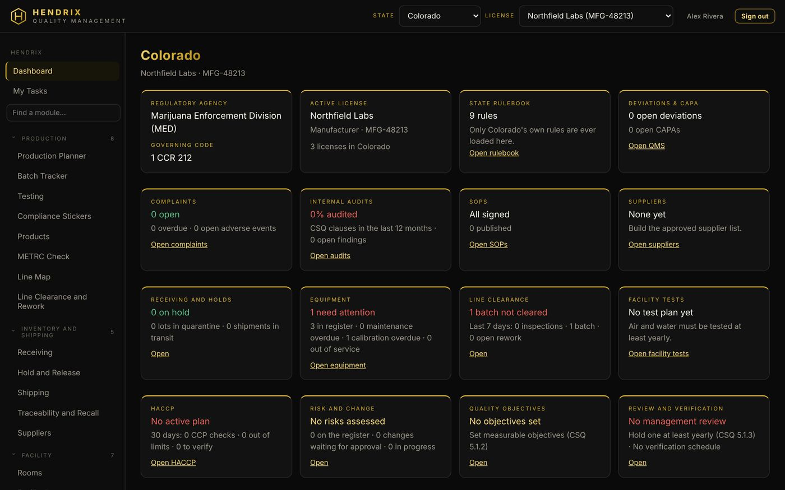
How Hendrix is organized
Your company's address. Each company has its own Hendrix at its own address, for example hendrixqms.com/yourcompany. Bookmark it, or add it to your phone's home screen. Kiosks and QR codes open the same address.
States and licenses. Everything in Hendrix belongs to one state and one license. Each state has its own rules, products and law training. Each license has its own logs, batches, people and records. Choose the state and license in the top bar. Every page then shows, and saves to, that license only. Records of different licenses never mix.
The left menu starts with Dashboard and My Tasks, then a Find a module box (type a few letters to jump to any page), then the modules in groups. Click a group name to open or close it; Hendrix remembers which groups you keep open on each device.
| Group | What is in it |
|---|---|
| Production | Production Planner, Batch Tracker (with the Manufacturing Process tab), Testing, Compliance Stickers, Products, METRC Check, Line Map, Line Clearance and Rework |
| Inventory and shipping | Receiving (with the Inventory tab), Hold and Release, Shipping, Traceability and Recall, Suppliers |
| Facility | Facility Map, Rooms, Facility Logs, Equipment, Chemicals and SDS, Facility Tests, Visitor Log, Time Clock and Badges, Cultivation |
| Quality | QMS (deviations and CAPA), Complaints, Internal Audits, HACCP, Risk Register, Change Control, Verification Schedule |
| SOPs and training | SOPs, Training, Org Chart, the state's Rulebook |
| Management | Quality Objectives, Management Review, Standards (CSQ) |
| Admin | States and Licenses, Team and Access, Roles, Audit Trail, Settings, System Health, Import |
You only see the modules you have access to. Cultivation and Facility Map appear only at cultivation licenses, and the manufacturing pages (Production Planner, Batch Tracker, Products, Compliance Stickers, Line Map, Line Clearance) only at manufacturing licenses.
The Dashboard shows what needs attention at the selected license: overdue logs, open deviations, holds, due reviews, training gaps, expiring documents and more. Each card opens its page. Start every shift here.
Your access: View, Edit and Full
An admin gives each person a level for each module, either through a role (for example "QA Manager" or "Production Tech") or one by one.
| Level | What you can do |
|---|---|
| None | You don't see the module. |
| View | See records, print them and sign what is yours to sign (for example read-and-sign an SOP). In QMS, anyone with View can report a deviation. |
| Edit | Create and fill in records, work on them and send them for approval. |
| Full | Approve, release, close, void and decide. Every approval in Hendrix needs Full access on that module. |
| Admin | Full on everything, plus Team and Access, Roles, Settings and the Audit Trail. |
If a button you expect is missing, you probably don't have the level for it. Ask your admin.
The rules for good records
Hendrix is built so that inspectors and auditors can trust every record. These rules are enforced by Hendrix itself, not only by habit. The chapter How it all fits together explains why they matter.
- Sign in as yourself. Never share an account or use someone else's session. Everything you save is stamped with your name and the time. On a shared tablet, sign out when you're done.
- Enter it when it happens. Hendrix stamps every save with the server time, next to the date and time you enter for the event. If you enter something late, the two will differ, so say why in the notes.
- Nothing is ever deleted. A wrong record is voided with a reason. It stays visible, marked VOID, so the history is complete.
- Changes need a reason. When you change a saved record, Hendrix asks for a reason for change. The old value, the new value, your name, the time and the reason all go into the Audit Trail.
- Signatures are final. After a record is signed, approved or released, the signed parts are locked. To change something, raise a new version, a correction or a deviation.
- Approvals need the right person. Releasing, closing and approving all need Full access. Hendrix checks this on every save.
- AI is a helper, not a signer. AI can read a COA, draft an SOP or suggest amounts. Always check its work against the original before you save. The AI never approves anything.
Hendrix checks: if you try to break one of these rules, Hendrix stops the save and tells you why, for example "A reason for change is required". Fix the problem and save again. Nothing is half-saved.
Routines: what to do and how often
The defaults below are Hendrix's built-in timings. An admin can change them per license in Settings. Verification Schedule keeps all of these on one calendar.
| How often | What | Where in Hendrix |
|---|---|---|
| Every shift | Check the Dashboard and the Line Map; the person in charge does the GMP hygiene walk; fill in the sanitation log and the temperature / humidity log | Dashboard; Facility Logs (sanitation overdue after 48 hours by default) |
| Every batch | Line clearance before the batch; the batch record as you go; rework, if any | Line Clearance and Rework; Batch Tracker |
| Every delivery | Receive the lot into quarantine with its METRC tag (cannabis), inspect it, then accept or reject it | Receiving |
| Every shipment | Pre-load inspection and shipment record | Shipping |
| When it happens | Deviations, complaints, holds, visitor sign-in, security malfunctions, maintenance and purchase requests, employee illness | QMS, Complaints, Hold and Release, Visitor Log, Facility Logs |
| Weekly (suggested) | METRC Check: compare Hendrix with METRC and fix differences | METRC Check |
| Monthly | Waste, pest control, environmental monitoring, scale calibration and security equipment inspection logs; objective results | Facility Logs (overdue after 31–35 days); Quality Objectives |
| Quarterly | Equipment maintenance log; access review of who can do what | Facility Logs (overdue after 95 days); Team and Access |
| As planned | Calibration and maintenance, facility tests, supplier reviews, HACCP verification | Equipment, Facility Tests, Suppliers, HACCP |
| By risk | Risk reviews: critical every 90 days, high every 180, medium and low every 365 | Risk Register |
| Yearly | SOP review, internal audit program, mock recall, management review, HACCP reanalysis, training refreshers | SOPs, Internal Audits, Traceability and Recall, Management Review, HACCP, Training |
If Hendrix is not available
If you can't reach Hendrix because of the internet, a power cut or a device problem:
- Write the record on the paper backup form, with the real date and time and your signature.
- When Hendrix is back, enter it. In the notes, write "Entered late from paper form, original time …".
- Keep the paper form with the batch or log records.
- If the outage affected product, for example you couldn't check a hold, report a deviation.
Find it fast
What do I fill in when…
Find the situation, then go to the page shown. Type in the search box at the top to narrow the list.
Setting up and running Hendrix
| Situation | What you do in Hendrix | Page |
|---|---|---|
| You are new and need an account | Sign-in screen → Create an account, then wait for an admin to approve you | Dashboard |
| You created an account but cannot get in | The screen says Waiting for approval. Ask an admin, then click Check again | Dashboard |
| You start your shift | Sign in, check that the State and License at the top are correct, and read the cards | Dashboard |
| You work at a second license | Change the License at the top. Every page then shows that license's records | Dashboard |
| A card is red (for example "1 need attention") | Click the link on the card (for example Open equipment) | Dashboard |
| You finish for the day or leave a shared computer | Click Sign out (top right) | Dashboard |
| Hendrix is brand new and empty | The Dashboard says Step 1: create your first state. An admin clicks Set up States and Licenses | Dashboard |
| Hendrix is new | + Add state, then + Add license under that state | States and Licenses |
| The company gets a new license | Under the right state, + Add license | States and Licenses |
| The regulator or tracking system changes | Edit on the state | States and Licenses |
| A license number or type changes | Edit on the license row | States and Licenses |
| A license stops operating | Deactivate on the license row. It disappears from the License list at the top, but its records stay | States and Licenses |
| A license starts operating again | Activate | States and Licenses |
| A license was added by mistake | Delete on the license row (you confirm first) | States and Licenses |
| You need a state's rules | Open | States and Licenses |
| You set up a new state | Upload rules PDF with the official rules PDF from the state website | Rulebook |
| The state publishes amended rules | Upload rules PDF with the new PDF. Hendrix shows what is new, changed and the same | Rulebook |
| A rule was repealed | Upload the new PDF and tick Delete the N rules from an earlier PDF (Full) | Rulebook |
| You need to add a company rule or a single rule | + Add rule | Rulebook |
| A title or category is wrong | Edit on the rule | Rulebook |
| You need a rule during an inspection | Type in Search | Rulebook |
| You need the original PDF | Open PDF next to it under Source PDFs | Rulebook |
| Hendrix has no standard yet | Click Add CSQ Standards (Manufacturing, Extraction, Cultivation) v2.0 (Full) | Standards (CSQ) |
| The license decides to follow CSQ | Adopt for this license, pick the standards and the target level (Full) | Standards (CSQ) |
| You book the certification audit | Edit level and certification, set Status Audit scheduled and the audit date | Standards (CSQ) |
| You check how you meet a clause | Open the clause → Record conformance | Standards (CSQ) |
| You fix a gap | Open the clause → Update conformance | Standards (CSQ) |
| A clause does not apply to you | Update conformance, Status Not applicable, and write why | Standards (CSQ) |
| Hendrix shows "N clauses are missing" | Click Update the standard (Full) | Standards (CSQ) |
| You have the licensed CSQ PDF | Upload Manufacturing PDF (or Extraction / Cultivation) | Standards (CSQ) |
| The auditor arrives | Inspector view, or Print register | Standards (CSQ) |
| A new hire created an account | In N waiting for approval, click Approve | Team and Access |
| Someone changes job | Manage → change their roles | Team and Access |
| Someone should only work at one license | Manage → untick All licenses, in every state and tick their license | Team and Access |
| One person needs more or less access than their role gives | Manage → Custom access → pick a level for that module | Team and Access |
| Someone leaves the company | Manage → Remove from Hendrix → write the reason → Remove from Hendrix | Team and Access |
| Someone who left comes back | Removed (N) → Restore, then approve them again | Team and Access |
| A stranger or a duplicate account asks to join | In waiting for approval, Manage → Delete request | Team and Access |
| Someone forgot their password and can't use email or security questions | Manage → Set a temporary password | Team and Access |
| Someone needs to run Hendrix | Manage → tick System admin | Team and Access |
| Hendrix is new | Add Northfield Labs roles to start from 12 job titles with suggested access | Roles |
| A new job title is created | + New role | Roles |
| A role is similar to an existing one | Duplicate on that role, then change it | Roles |
| A role needs more or less access | Edit on the role | Roles |
| The auditor asks for job requirements | Edit → fill Requirements (CSQ 2A.13.1). Cards without it show Requirements not set | Roles |
| A role is no longer used | Delete (Hendrix warns how many people lose the access it gives) | Roles |
| An inspector asks who changed a batch record | Pick the area Batch record, or search the batch number | Audit Trail |
| You need to know why an entry was voided | Look at the Reason column of the Void row | Audit Trail |
| You need a change history for the auditor | Set the period and click Export CSV | Audit Trail |
| You review changes for one person | Type their name in the search box | Audit Trail |
| You need changes from all states | Untick | Audit Trail |
| A new license is set up | General: legal name, DBA, address, phone, email, footer, logo | Settings |
| The logo changes | General → Replace logo | Settings |
| Break rules change | Time clock → change the break minutes | Settings |
| Sanitation must be logged every day, not every 48 hours | Facility logs → Sanitation Log → 24 (hours) | Settings |
| The staff are employed by a separate management company | General → Management / HR company | Settings |
| High risks must be reviewed more often | Review cycles → High (10-14) | Settings |
| You look for where something else is set | Everything else → Open on the right card | Settings |
| You move the equipment list from Excel | Equipment → Choose .xlsx / .csv file | Import (Excel / Sheets) |
| Your supplier list lives in Google Sheets | Suppliers → download as .xlsx or CSV, or copy the cells and Use pasted cells | Import (Excel / Sheets) |
| You load all SKUs and flavors at once | Products (SKUs and flavors) | Import (Excel / Sheets) |
| You bring in last year's complaint log | Complaints | Import (Excel / Sheets) |
| You have a risk assessment in a spreadsheet | Risk register | Import (Excel / Sheets) |
| You have an org chart with reporting lines | Org chart | Import (Excel / Sheets) |
Quality system
| Situation | What you do in Hendrix | Page |
|---|---|---|
| A pre-roll weight check fails on the line | QMS → + Report deviation, Department Production, Category Product quality, write the correction you took | QMS |
| A Temp / Humidity log entry fails | Facility Logs → the failed entry → Deviation. The form opens prefilled and linked to the log entry | QMS |
| A lab test comes back Failed | Testing → the test → Deviation. Priority is set to Critical and the lot is filled in | QMS |
| A customer complaint points to a production problem | Complaints → open the complaint → Raise deviation. The deviation is linked back to the complaint | QMS |
| An internal audit finds a nonconformity | Internal Audits → the finding → Raise deviation (CAPA) | QMS |
| QA decides the problem needs a root cause | Open the deviation → Edit → Root cause analysis needed? = Yes (Full access) | QMS |
| The problem needs a long-term fix | Open the deviation → + Create CAPA | QMS |
| The CAPA has been running long enough to judge it | Open the CAPA → Verify effectiveness | QMS |
| Annual review of deviations and CAPAs | QMS → Trends → Print annual trend review, discuss it, sign it | QMS |
| A deviation was entered twice by mistake | Open it → Cancel, give the reason (Full access) | QMS |
| A customer calls about a harsh-tasting cart | + Log complaint, Type Consumer complaint, Category Taste / smell, pick the batch | Complaints |
| A dispensary returns a case of leaking carts | + Log complaint, Type Product return or Dispensary complaint | Complaints |
| Someone reports feeling unwell after a gummy | + Log complaint, Type Adverse event. Report it to the state regulator and record the date | Complaints |
| A buyer says a new flavor sells well | + Feedback, pick the satisfaction rating | Complaints |
| A complaint suggests the whole lot may be bad | Open the complaint → Put batch on hold | Complaints |
| A complaint needs corrective action | Open the complaint → Raise deviation | Complaints |
| Two complaints arrive on the same lot | Hendrix shows a red "Repeat complaints on the same lot" warning at the top | Complaints |
| Inspector asks for the complaint log | Complaint log prints every complaint | Complaints |
| You want dispensaries to report problems themselves | Print the Store complaint QR sign and give it to your dispensaries (see below) | Complaints |
| Start of year: plan the CSQ audits | Annual program (coverage) → Plan an audit of the N clauses not audited, or + Plan audit per module | Internal Audits |
| Audit day | Open the audit → Start audit, then Edit / checklist to record results and evidence | Internal Audits |
| A clause is nonconforming | Open the audit → + Finding (Hendrix suggests the clause) | Internal Audits |
| A finding needs corrective action | On the finding → Raise deviation (CAPA) | Internal Audits |
| The correction is done and checked | On the finding → Close finding, write how it was verified | Internal Audits |
| Results presented at the managers meeting | In the audit, fill Share the results, then Close audit | Internal Audits |
| Inspector asks for the audit report | Open the audit → Print report | Internal Audits |
| A department audit (METRC, packaging, sanitation…) | + Plan audit, pick the audit type, write the scope | Internal Audits |
| You need a new procedure and have the text | + Manual SOP, save as Draft | SOPs |
| You need a first draft fast | 🤖 AI Generate SOP, review, Save as draft | SOPs |
| A draft is ready to go live | Open it → ✓ Approve & publish (Full access) | SOPs |
| A process changed | Open the published SOP → 🔄 Revise SOP, new version and reason | SOPs |
| You are told to read a new SOP | Open it → 👍 I have read and understood this SOP, draw your signature | SOPs |
| An SOP should only be signed by production staff | Settings (or the draft form) → Who must read and sign it? → By role | SOPs |
| An SOP is no longer used | Open it → Archive (Full access) | SOPs |
| Inspector asks for the document list | Master list prints every SOP with number, revision, dates, approver and signatures | SOPs |
| You need a printed copy for the floor | Open it → 📄 Download PDF | SOPs |
| An inspector wants the SOPs with who signed them | ⬇ Download SOPs → With acknowledgements, tick the SOPs | SOPs |
| SOPs were signed on paper before they were in Hendrix | Paper records (Full access): the paper date, the SOPs and the people who signed | SOPs |
| You make edibles or infused products and need the food safety SOPs | The banner offers the Food safety SOP pack: add the missing ones as drafts, review and publish | SOPs |
| A new license starts using Hendrix | Open Training with Full access once: Hendrix creates the CSQ courses and draft online courses | Training |
| Classroom cGMP session for six people | + Record training, tick the six people, attach the sign-in sheet | Training |
| A new hire must learn hygiene rules | They open My training → Take course on Personnel hygiene, handwashing and PPE | Training |
| A manager gets HACCP certified | + Record training on HACCP certification, method External certification, attach the certificate | Training |
| A gap shows red in the matrix | Click the red cell to record that training for that person | Training |
| Your state's rules change | Courses → | Training |
| Someone wants to watch how a page works | Send them to the Training Center (hendrixqms.com/training): videos picked for their job | Training |
| A job task is trained by reading an SOP | + Course, Met by signing an SOP | Training |
| A record was entered for the wrong person | Records → Void, give the reason, then record it again | Training |
| An inspector asks for one employee's training | Matrix → PDF on that person's row | Training |
HACCP and the management system
| Situation | What you do in Hendrix | Page |
|---|---|---|
| You are setting up HACCP for the first time | HACCP team tab → + Member for each member; make sure a leader and a backup are certified. Then + HACCP plan. | HACCP |
| You need a plan for gummies, cartridges, extraction or pre-rolls | + HACCP plan → pick the batch type → Start from a draft for this batch type, then check every step against your process. | HACCP |
| Distillate is weighed for a gummy batch (a CCP) | + CCP check (or CCP check on the batch card in the Batch Tracker) → record the measured value. | HACCP |
| A water activity reading is above the critical limit | + CCP check → Within the critical limit? = No → record the corrective action and what happened to the product. Then Deviation on the record. | HACCP |
| A supervisor reviews yesterday's CCP records | CCP monitoring tab → filter Not verified yet → Verify on each record. | HACCP |
| The aw meter is checked against a standard | Verification tab → + Verification → Kind: Monitoring equipment calibration check. | HACCP |
| The yearly HACCP reanalysis is done | Verification tab → + Verification → Kind: Yearly reanalysis of the whole plan, pick the plan. | HACCP |
| A process change affects an active plan | Plans tab → Revise, update the plan, validate it again and Activate plan. | HACCP |
| A product line is discontinued | Plans tab → Retire and give the reason. | HACCP |
| A CCP record was entered against the wrong batch | CCP monitoring tab → Void with a reason, then record it again. | HACCP |
| You are starting the register | Suggested risks → untick any that do not apply → enter the owner → Add selected. Then check each rating against your facility. | Risk Register |
| A deviation shows glass near the filling line | + Risk → Found through: Deviation, enter the deviation number. | Risk Register |
| You do the yearly product defense (threat) assessment | + Risk → Category: Product defense (threats). | Risk Register |
| The permanent fix is in place and shown to work | Controlled on the risk row → record the action, the verification and the residual rating. | Risk Register |
| A risk is due for its scheduled review | Review on the row → rate it today, say whether the controls work. | Risk Register |
| A controlled risk's controls fail | Review → untick Controls are in place and working and describe what will be done. The risk re-opens. | Risk Register |
| The process behind a risk no longer exists | Close (Full) → give the reason. | Risk Register |
| An inspector asks for the register | Print register. | Risk Register |
| You want to add a new gummy flavor | + Change → Type: New or changed product / formulation. A trial run is ticked for you. | Change Control |
| New silicone molds will replace the starch trays | + Change → Type: Equipment; tick the impacts (HACCP, training, equipment). | Change Control |
| An SOP needs a new step | + Change → Type: Document / SOP; tick SOPs and records and pick the SOP. | Change Control |
| A requested change is ready for sign-off | Approve (Full) → review the summary → add a note → Approve. | Change Control |
| A change is not acceptable | Reject (Full) with a reason. | Change Control |
| The team is putting an approved change in place | Work → tick actions done, training, trial result, HACCP review, notification date → Save progress. | Change Control |
| Everything is done | Work → Mark implemented. | Change Control |
| A month after the change, you check it worked | Close (Full) → describe the effectiveness check. | Change Control |
| You are drawing the chart for the first time | + Position for the owner or general manager, then + Under on each row to add who reports to them. | Org Chart |
| A new QA technician is hired | Edit on the QA Technician position → enter the person. | Org Chart |
| A position is open | Leave Person blank; it shows as Vacant. | Org Chart |
| The quality backup is not named | Edit the right position → tick Quality backup. | Org Chart |
| A manager now reports to someone else | Edit → change Reports to. | Org Chart |
| A position is no longer needed | Move anyone who reports to it first, then Remove (Full). | Org Chart |
| An inspector asks for the org chart | Print org chart. | Org Chart |
| You are setting objectives for the first time | Suggested objectives → set targets → enter the owner → Add selected. | Quality Objectives |
| The quality policy SOP is published | Link the policy SOP (Full) → pick the SOP → say how it is shared. | Quality Objectives |
| A new month starts | Click Record | Quality Objectives |
| A KPI missed its target | Record the result and fill in Action to get back on target. | Quality Objectives |
| You track something Hendrix cannot count (e.g. on-time delivery) | + Objective → Measured by: Entered by hand. | Quality Objectives |
| A result was entered wrong | Record result → pick the period → change the value → Correct result. | Quality Objectives |
| An objective was reached | Achieved (Full) → say what was achieved. | Quality Objectives |
| An objective no longer makes sense | Drop (Full) → say why. | Quality Objectives |
| You share the KPIs with staff | Print KPI board. | Quality Objectives |
| The yearly management review meeting is coming up | + Management review → check the period → Hendrix fills the facts → Save draft to prepare. | Management Review |
| You are in the meeting | Continue on the draft → type the discussion for each input, the decisions and the actions. | Management Review |
| The meeting is over | Sign as held (Full). | Management Review |
| An action from the review is done | Follow-up → tick it. | Management Review |
| The minutes are sent to the managers | Follow-up → enter who and when. | Management Review |
| A draft review will not take place | Cancel (Full) with a reason. | Management Review |
| An inspector asks for the minutes | Print. | Management Review |
| You are setting up the schedule | Suggested schedule → untick what does not apply → enter who does them → Add selected. | Verification Schedule |
| The supervisor signs the sanitation log | Nothing here: the date comes from the Sanitation log. | Verification Schedule |
| QA checks labels against the batch COA | Record on "Labels checked against the batch". | Verification Schedule |
| The check finds a problem | Record → Result: Issues found → findings and action taken. Then History → Deviation. | Verification Schedule |
| You add your own verification (e.g. scale daily check review) | + Activity. | Verification Schedule |
| An activity no longer applies | Turn off (Full). | Verification Schedule |
| An inspector asks for the verification procedure | Print schedule. | Verification Schedule |
Suppliers, materials and traceability
| Situation | What you do in Hendrix | Page |
|---|---|---|
| You want to buy from a new vendor | Suppliers → + Add supplier (it starts as Pending approval) | Suppliers |
| QA has reviewed the questionnaire, certificates and a trial lot | Open the supplier → Approve | Suppliers |
| You need material today from a vendor that isn't approved yet | + Add supplier with Status Emergency and say how you will check every lot | Suppliers |
| A new testing lab will analyze your batches | Add it as Testing Lab with its ISO/IEC 17025 accreditation, then Approve | Suppliers |
| A supplier's certificate or accreditation is renewed | Open the supplier → Edit → update the credential number, expiry date and file | Suppliers |
| The yearly review is due (every 6 months for high risk) | Open the supplier → Record review | Suppliers |
| A supplier sends bad lots and you want to stop buying for now | Open the supplier → Suspend with the reason | Suppliers |
| A supplier fails badly and must never be used again | Open the supplier → Disqualify with the reason | Suppliers |
| A supplier was added by mistake and never approved | Open the supplier → Delete | Suppliers |
| An inspector asks for the approved supplier list | Approved supplier list (prints) | Suppliers |
| A delivery of distillate, cones, cartridges or labels arrives | Receiving → + Receive lot | Receiving |
| The COA arrives a day after the product | Open the lot (still in quarantine) → Edit → tick the COA box and upload the file | Receiving |
| QA has checked the lot and its COA | Open the lot → Accept | Receiving |
| Cartons are wet, seals are broken or the COA is wrong | Open the lot → Reject (the lot goes on hold automatically) | Receiving |
| An accepted lot is moved to another shelf | Open the lot → Location / files | Receiving |
| Production pulls material for a batch | Usually nothing here: in the batch record, type the lot's METRC tag and the amount, and Hendrix records the use. For other uses: Inventory → + Record use | Receiving |
| A cannabis lot in stock has no METRC tag | Inventory → filter Cannabis without a METRC tag → + Add tag | Receiving |
| You counted the stock | Inventory → Download current inventory, change On hand, Upload inventory | Receiving |
| You're moving to Hendrix with stock already on the shelves | Inventory → Upload inventory from the blank template | Receiving |
| A use was recorded against the wrong batch | Inventory → Void on the use record, then record it again | Receiving |
| You suspect a problem with a lot after acceptance | Open the lot → Put on hold and/or Deviation | Receiving |
| An inspector asks for receiving records | Receiving log (prints) | Receiving |
| A lot is rejected at receiving | Nothing: Hendrix opens the hold automatically | Hold and Release |
| A batch fails its lab test | Hold and Release → + Put on hold → What is held: Batch, Source: Failed test | Hold and Release |
| A complaint makes you doubt a batch | + Put on hold → Batch, Source: Complaint | Hold and Release |
| A single package tag is damaged or mislabeled | + Put on hold → Package tag | Hold and Release |
| A dispensary returns product | Shipping → open the shipment → Record return (opens the hold form pre-filled) | Hold and Release |
| An accepted lot looks contaminated | Receiving → open the lot → Put on hold | Hold and Release |
| A recall is started | In the recall, Put every affected batch and lot on hold | Hold and Release |
| QA has checked the retained sample and the product is fine | Open the hold → Decide → Release | Hold and Release |
| Held product must be scrapped or sent back | Open the hold → Decide → Destroy / Return to supplier / Rework | Hold and Release |
| A van is loaded for a dispensary order | Shipping → + New shipment | Shipping |
| The dispensary confirms receipt | Open the shipment → Mark delivered | Shipping |
| The METRC manifest number was not ready at loading | Open the shipment → Add manifest # | Shipping |
| The dispensary returns product | Open the shipment → Record return | Shipping |
| A shipment was entered by mistake or never left | Open the shipment → Cancel with the reason (Full) | Shipping |
| The driver needs a printed copy | Open the shipment → Print | Shipping |
| An inspector asks where a batch went | Shipping log, or Traceability and Recall → Trace | Shipping |
| A customer asks which supplier lot is in a cartridge | Trace → type the package tag | Traceability and Recall |
| A supplier warns about a bad lot | Trace → type the supplier lot number → see every batch and customer | Traceability and Recall |
| The yearly mock recall is due | Start mock recall, or trace a batch → Start mock recall from this | Traceability and Recall |
| Product must be pulled from the market | Start recall (Full) → Put every affected batch and lot on hold | Traceability and Recall |
| Product is pulled for a non-safety reason | Start recall → Type: Market withdrawal | Traceability and Recall |
| The inspector asks for the recall team and contacts | Recall team and contacts → Print contact list | Traceability and Recall |
| New customers have been shipped to | Recall team and contacts → Add N customers from shipments | Traceability and Recall |
| Yearly check of the contact list | Call or confirm each contact → Mark all verified today | Traceability and Recall |
| A mock recall failed | Open it → Deviation | Traceability and Recall |
Facility, equipment and people on site
| Situation | What you do in Hendrix | Page |
|---|---|---|
| The end-of-shift clean is done | Sanitation → + New entry, tick the areas and equipment cleaned. A supervisor fills Cleaning Verification. | Facility Logs |
| Product or trim is destroyed | Waste Destruction → + New entry: tags, quantity, method, the four camera angles, supervisor. | Facility Logs |
| Weekly scale check, or a scale was moved | Scale Calibration → + New entry, weigh the test weights on 5 points of the pan. | Facility Logs |
| A camera, lock or alarm stops working | Security Malfunction → + New entry. Fill Repair Completed Date later (Full access edit). | Facility Logs |
| The weekly walk-round of cameras, doors and alarms | Security Equipment Inspection → + New entry, mark every item OK / FAIL / N/A, sign. | Facility Logs |
| The pest control vendor visits or someone sees a pest | Pest Control → + New entry, tick the stations checked. | Facility Logs |
| A machine is serviced or repaired | Equipment Maintenance → + New entry (or Record maintenance from Equipment). | Facility Logs |
| Start of every shift: room conditions | Temp / Humidity → + New entry, or scan the room's QR sign with a phone. | Facility Logs |
| A swab, air or water sample is taken in-house | Environmental Monitoring → + New entry. | Facility Logs |
| A result is Fail, Flag or Open | Click Deviation on that row to open a deviation linked to the entry. | Facility Logs |
| Start of every production shift | The person in charge does the GMP Hygiene Walk: people and areas, Pass or Fail. | Facility Logs |
| Something is broken or needs fixing | Maintenance Request, usually by scanning its QR code. A manager updates the status. | Facility Logs |
| Something must be bought | Purchase Request, usually by QR. A manager approves, orders and marks it received. | Facility Logs |
| An employee reports vomiting, diarrhea or another reportable symptom | The person in charge records it in the Employee Illness and Exclusion Log (private). | Facility Logs |
| A visitor or contractor arrives | They scan the QR sign at the door and sign in on their phone (or a tablet). | Visitor Log |
| The visitor has no phone | Click + Manual entry, ask the illness question and have them read the GMP rules. | Visitor Log |
| A visitor leaves | They scan again and use Sign out, or you click Sign out on their row. | Visitor Log |
| A visitor says they are ill | They may sign in, but the entry is marked Ill — no production. Keep them out of production and processing areas. | Visitor Log |
| The inspector asks for the visitor log | Set the period, click Export CSV. | Visitor Log |
| You set up Hendrix, or build a new room | + Add room | Rooms |
| A freezer is now used for rosin only | Edit → change the name or storage conditions | Rooms |
| A room is no longer used | Edit → untick Room in use | Rooms |
| You want to see which beds are flowering or ready to harvest | Stage overlay | Facility Map |
| A room feels warm | Temperature overlay; click the zone to see its readings | Facility Map |
| You take a reading by hand | Click the zone → log the temperature and humidity | Facility Map |
| You add a fan, light or camera | Equipment overlay → place a pin | Facility Map |
| You check the electrical load | Power overlay and the power table | Facility Map |
| You set up the map | Edit map (Full): draw zones, or import a zone file | Facility Map |
| New equipment is installed | + Equipment, set the maintenance schedule and, if needed, calibration and validation. | Equipment |
| Your Facility Log lists already hold scales and machines | Click Add them to the register in the banner at the top. | Equipment |
| A machine gets its scheduled service | Open → Record maintenance (goes to the Equipment Maintenance Log). | Equipment |
| The scale company calibrates a scale | Open → Record calibration, attach the certificate. | Equipment |
| A new extraction system is commissioned | Open → Validation (IQ / OQ / PQ), once per stage. | Equipment |
| A quick fix is made until a part arrives | Open → Temporary repair with a fix-by date; Made permanent when fixed. | Equipment |
| A machine breaks or fails a check | Open → Out of service with the reason. | Equipment |
| It is fixed and ready | Open → Back in service, tick the three checks. | Equipment |
| A machine is sold or scrapped | Open → Retire (Full access) with the reason. | Equipment |
| An inspector asks for the equipment list | Print register. | Equipment |
| A new chemical is bought | + Chemical, attach the SDS, Save. A Full-access person reviews and approves. | Chemicals and SDS |
| A pending chemical needs approval | Review on its row, check the SDS fields, Save and approve. | Chemicals and SDS |
| A pesticide is brought in | Choose Pesticide / crop protection and enter the EPA registration #. | Chemicals and SDS |
| A product is no longer used | Remove (Full access) with the reason. | Chemicals and SDS |
| A chemical was entered by mistake and never approved | Delete (Full access). | Chemicals and SDS |
| Each storage area needs its chemical list posted | Print storage area lists. | Chemicals and SDS |
| An inspector asks for the approved list | Print approved list. | Chemicals and SDS |
| Setting up a new license | Click Add the test plan in the gold banner. | Facility Tests |
| You need an extra point (ice machine, a second tap) | + Test point. | Facility Tests |
| The lab report arrives | Record result on the point, attach the report. | Facility Tests |
| A swab or test fails | Record it as Fail with the corrective action, then History → Deviation. | Facility Tests |
| A test point is no longer used | Edit, untick Active (Full access). | Facility Tests |
| An inspector asks for the program | Print program. | Facility Tests |
| A batch is about to start | + Line clearance (or Line clearance on the batch card), go through the checklist. | Line Clearance and Rework |
| Something failed and you fixed it on the spot | Mark the item Fail, tick Corrected, describe the problem and the correction. | Line Clearance and Rework |
| The line cannot be made ready | Record NOT cleared, then Deviation on the row. | Line Clearance and Rework |
| A room or line is checked without a batch | Leave the batch empty and enter the Room / line. | Line Clearance and Rework |
| Product is set aside to be reworked | Rework tab → + Rework. | Line Clearance and Rework |
| The rework has been checked and tested | Inspect. | Line Clearance and Rework |
| QA decides it can be used | Approve (Full access). | Line Clearance and Rework |
| It went into a new batch | Use in batch. | Line Clearance and Rework |
| It cannot be used | Destroy (Full access) with the reason. | Line Clearance and Rework |
| A new employee starts | Badges → pick the person → title and photo → Issue badge → Print. | Time Clock and Badges |
| A badge is lost or stolen | Badges → the person → Re-issue (lost) (Full access), then print the new card. | Time Clock and Badges |
| Setting up the door tablet | Kiosk tab → Open kiosk on the tablet; plug in a barcode / QR scanner or use the camera. | Time Clock and Badges |
| Someone forgot their badge | Sign-in sheet → + Missed punch (Full access) with the reason. | Time Clock and Badges |
| A wrong punch was recorded | Click the time on the sign-in sheet → void with a reason (Full access). | Time Clock and Badges |
| Fire alarm or evacuation | On site now → Print roll call. | Time Clock and Badges |
| Someone shows you a badge | Scan its QR code with any phone to see whose it is and whether it is valid. | Time Clock and Badges |
Products, production and cultivation
| Situation | What you do in Hendrix | Page |
|---|---|---|
| You start the day and want to know what is in production | Line Map: read the KPI cards and the map | Line Map |
| A batch is red on the map | Click it: Why it is stopped shows the reason, source record, owner and what clears it | Line Map |
| You want only the problems | Click Stops only, or read Stops right now (longest first) | Line Map |
| Several batches sit at one station (for example Lab testing) | Click the "N batches" marker, then pick a batch from the list | Line Map |
| You want to fix what stopped a batch | Click Open … in the reason box (for example Open Hold and Release) | Line Map |
| You want the map on a TV in the office or on the floor | Click Wall display (full screen); it refreshes every minute | Line Map |
| Batches show "No update" too soon or too late | Settings → Line Map → change the hours (default 4) | Line Map |
| You launch a new product (for example a 20-pack gummy) | Products → + New SKU. Enter the details and flavors, then the base formulation. | Products |
| A SKU gets a new flavor | On the SKU card → Flavors → type the names under Add flavors → + Add flavors. | Products |
| One flavor needs a different recipe from the rest (for example its own terpene) | Flavors → Own recipe on that flavor row. | Products |
| A recipe changes (new ratio, new hardware) | Formulation Bank tab → Edit on the formulation. To keep the old one as a starting point, use Duplicate. | Products |
| You stop making a SKU for now | SKU card → Switch off. It disappears from the Batch Tracker and Planner but stays on old records. | Products |
| A flavor is discontinued | Flavors → Hide. It stops showing in new batches. | Products |
| Supplier prices change | Ingredient Prices tab → Edit on the item. | Products |
| A SKU is made at only one of your licenses | SKU card → Edit → untick Every license in … and tick the licenses. | Products |
| The production manager schedules next week's pre-roll run | New plan → pick the SKU and flavors → enter units → Calculate ingredients → Save plan. | Production Planner |
| You need to know whether there is enough flower and THCA | Read the Grand total. Each ingredient shows "on hand", "short" or "not in inventory". | Production Planner |
| The floor needs printed worksheets | Worksheets PDF (n) for all flavors, or PDF on one flavor card. | Production Planner |
| The run starts on the floor | Open the plan → Start batch on the flavor card. | Production Planner |
| Everything in the plan has been made | Open the plan → Mark completed. | Production Planner |
| The order is cancelled | Open the plan → Cancel plan → enter the reason (Full access). | Production Planner |
| A new pre-roll run starts | Pre-Rolls tab → + New Batch (or Start batch from a Production Planner plan). | Batch Tracker |
| You use flower, distillate or kief from inventory | In its METRC tag box, type the last digits of the lot's tag; Hendrix finds the lot and deducts the amount you enter | Batch Tracker |
| The lab result is in and the batch is labeled | Change Status to Labels, then Completed when it's done | Batch Tracker |
| A distillate, hash or rosin yield comes out low | Check the yield grade; managers get a low yield alert. Report a deviation if the cause isn't clear | Batch Tracker |
| The next shift continues a batch | Continue on the batch. Fill in the blank fields and click Save. | Batch Tracker |
| A filled-in weight was wrong | Someone with Full access → Edit → change the value → enter the Reason for change → Save changes. | Batch Tracker |
| A batch was entered twice | Full access → Void → enter the reason. | Batch Tracker |
| The final package tag is ready for state testing | Submit for testing on the batch card. | Batch Tracker |
| A system check shows UNDER WEIGHT | Investigate. Click Deviation on the batch to report it to QMS. | Batch Tracker |
| The line must be cleared before the run | Line clearance on the batch (needs Line Clearance access). | Batch Tracker |
| An inspector asks for batch records for a period | Set From / To, then Print / PDF or CSV. | Batch Tracker |
| A run turns trim into crude, or any other material into another product | + New run | Manufacturing Process |
| You don't have every weight yet | Leave it blank, Save run, open it again later | Manufacturing Process |
| The run's product goes to the lab | Status Testing, then Passed or Failed | Manufacturing Process |
| The run is finished | Status Complete (every weight must be filled in) | Manufacturing Process |
| The material you use isn't in the list | + Add a new item... in the item box | Manufacturing Process |
| A batch's final package is sampled by the lab | Batch Tracker → Submit for testing, or Testing → + New test record. | Testing |
| The lab emails the COA | Upload COA on the record. Hendrix stores the file and reads it. | Testing |
| The COA tag does not match | Read the Tag mismatch warning. Confirm it is the right COA before accepting a result. | Testing |
| The lab retracts a result | Full access → Update → change the status → give the reason. | Testing |
| A test fails | Click Deviation on the record. Put the batch on hold in Hold and Release. | Testing |
| You keep a retention sample | Update → fill in the retention sample fields. | Testing |
| Labels are needed for a passed batch | Compliance Sticker on the record. | Testing |
| A new SKU or flavor goes to market | Compliance Stickers → + New template. | Compliance Stickers |
| You set up a new license from the Northfield Labs catalog | Import Northfield Labs templates. Only SKUs and flavors that exist in Products are imported. | Compliance Stickers |
| An ingredient or allergen changes | Edit on the template → change Active and other ingredients / Allergen declaration → Save template. | Compliance Stickers |
| A batch passed testing and needs labels | Testing → Compliance Sticker → set the count → Download PDF. | Compliance Stickers |
| The labels print off-center | In the sticker window: Alignment test sheet, then adjust Shift right / Shift down. | Compliance Stickers |
| A part-used label sheet is in the printer | Set Start at position to the first free label. | Compliance Stickers |
| You set up a new room, greenhouse or field | + Grow area. | Cultivation |
| Clones arrive and are planted | Receive them in Receiving first, then + Plant batch with the clone lot. | Cultivation |
| You feed the plants | Open the batch → Nutrients. | Cultivation |
| You spray for mites | Open the batch → Crop protection, with the rate, re-entry and pre-harvest intervals from the label. | Cultivation |
| The weekly IPM walk-through | Open the batch → Scouting. | Cultivation |
| Plants move from veg to flower | Open the batch → Stage / move. | Cultivation |
| Harvest day | Open the batch → Harvest (wet weight and METRC harvest tag). | Cultivation |
| Plants are hung, then cured | Drying (room conditions), then Cured (dry weight). | Cultivation |
| A batch must be destroyed | Full access → Destroy (reason and method). | Cultivation |
| The inspector asks for spray records | Applications tab → Print application records. | Cultivation |
Tasks, security, kiosks and METRC
| Situation | What you do in Hendrix | Page |
|---|---|---|
| You start your shift | Open My Tasks; work from the top (overdue first) | My Tasks |
| You only want your own assignments | Click the Waiting for you card | My Tasks |
| You approve and release | Click the Your decision card | My Tasks |
| You want the list on your phone or in your inbox | Email me this list | My Tasks |
| A task is done | Open it with Open, finish the record; the task disappears on its own | My Tasks |
| You want to protect your account | Set up two-step sign-in | My account and two-step sign-in |
| The admin made two-step sign-in required for you | You are asked to set it up at your next sign-in | My account and two-step sign-in |
| You got a new phone | Ask an admin to turn two-step off for you, then set it up again | My account and two-step sign-in |
| You do not want the daily email | Untick Email me my task list on work days | My account and two-step sign-in |
| Your password may be known to someone | Change password | My account and two-step sign-in |
| You forgot your password | Sign-in screen → Forgot your password? → Email me a reset link | My account and two-step sign-in |
| You can't get into your email either | Sign-in screen → Forgot your password? → No access to that email? Answer your security questions | My account and two-step sign-in |
| Your email address changed | Email address → Change my email, then confirm from the new inbox | My account and two-step sign-in |
| You want different security questions | Security questions → Change my questions | My account and two-step sign-in |
| Weekly, and before an inspection | Export active packages from METRC; Upload METRC export | METRC Check |
| You want Hendrix's stock to match METRC | Tick Also update the Hendrix inventory before you upload | METRC Check |
| METRC keys are set up | Read from METRC now | METRC Check |
| A difference is listed | Open the record and fix Hendrix or METRC | METRC Check |
| QA signs off the reconciliation | Print report, fix, initial and date each line | METRC Check |
Chapter 2
How it all fits together
The life of a batch from supplier to customer, what to do when something goes wrong, the five rules of good records, who does what, and the rules and standards behind every record.
The life of a batch
Every module in Hendrix is one part of a single chain: a material comes in from an approved supplier, is checked, turned into product under control, tested, labeled and shipped, and at every step it leaves a record. If you understand this chain, you understand why each page exists. Each step depends on the record of the step before it.
The table follows one batch of pre-rolls from start to finish. Other products follow the same path with different production steps.
| Step | What happens | Who | Where in Hendrix | The record it leaves | Why it matters |
|---|---|---|---|---|---|
| 1. Approve the supplier | QA checks a supplier's credentials and approves it for certain materials | QA | Suppliers | Approved supplier with its documents and review date | Only qualified suppliers can sell you materials. Unsafe materials are stopped before you even order. |
| 2. Receive the delivery | The delivery is counted, inspected and entered as a lot, in quarantine. Cannabis lots get their METRC package tag | Warehouse / inventory | Receiving | Lot number, quantity, METRC tag, inspection, COA | The lot number is the start of traceability. Quarantine means nobody can use it yet. |
| 3. Accept or reject | QA reviews the inspection and the COA, then accepts or rejects the lot | QA (Full access) | Receiving | Accepted or rejected, signed | Only accepted lots can go into product. A rejected lot can never be used. |
| 4. Store it | The lot goes to its room: vault, freezer, storage | Warehouse | Rooms, Receiving | Storage location on the lot; temperature log for the room | Materials must be kept at the right conditions and found again quickly. |
| 5. Plan the run | The planner works out each ingredient from the approved recipe and checks stock | Production manager | Production Planner | Numbered production plan and worksheets | The batch follows the approved formulation, and the run won't stop for lack of material. |
| 6. Clear the line | Before starting, the tech checks the line is empty of the last product, clean and ready, with calibrated equipment | Production tech | Line Clearance and Rework | Line clearance, passed, signed | Prevents mix-ups: wrong labels, leftover product, dirty equipment. |
| 7. Make the batch | The tech fills in the batch record as they work: each input by METRC tag (Hendrix deducts what was used from the lot), weights, counts, in-process checks, waste | Production tech | Batch Tracker | The batch record | Proves the batch was made the approved way. Links every package back to its inputs. Accounts for every gram for METRC. |
| 8. Check during the run | Critical steps are checked against their limits (for example oven time and temperature) | Production tech, then QA verifies | HACCP, Batch Tracker | CCP checks, verified | Hazards are controlled at the step where they happen. |
| 9. Test | A sample goes to the lab. The COA comes back and is read into Hendrix | QA / compliance | Testing | Test submission, result, COA | Product can't be sold until it passes. A failed test stops it. |
| 10. Decide | If it passes, the batch moves on. If it fails or anything is doubtful, it goes on hold until QA decides | QA (Full access) | Hold and Release, QMS | Hold and decision, deviation if needed | Nothing doubtful moves until a qualified person decides, with evidence. |
| 11. Label | Compliance stickers print with potency straight from the COA | Production / compliance | Compliance Stickers | Logged sticker print | Labels are legal statements and must match the lab result exactly. |
| 12. Ship | The order is loaded after a pre-load check, with its manifest and package tags | Shipping / inventory | Shipping | Shipment record | One step forward: you know which customer received each package. |
| 13. Follow up | Complaints and returns are linked back to the batch. Traces and mock recalls prove the chain works | QA | Complaints, Traceability and Recall | Complaint, trace, mock recall | If something is wrong, you can find and pull exactly the affected product, fast. |
Around this chain, the facility keeps itself under control every day: the building is cleaned, kept pest-free and at the right temperature (Facility Logs), equipment is maintained and calibrated (Equipment), chemicals are approved (Chemicals and SDS), visitors are signed in (Visitor Log), people are trained (Training) and work from approved instructions (SOPs).
The Line Map shows where every batch is in this chain right now, and turns it red when it's stopped, with the reason.
The key idea: each record is the input to the next step. A lot that wasn't received can't be used in a batch. A batch that wasn't tested can't be released. A batch on hold can't be shipped. That's why records must be complete and made at the time: a missing record stops the chain, and a wrong record breaks the trace.
When something goes wrong: the quality loop
Problems are found in many places: a log entry fails, a weight check fails, a lab test fails, a customer complains, an internal audit finds a gap. All of them lead into the same loop.
| Step | What it means | Where in Hendrix |
|---|---|---|
| 1. Contain it | Stop the problem from spreading right away: stop the line, move the product, pull the bad units. If product may be affected, put it on hold. | The page where you found it; Hold and Release |
| 2. Report a deviation | Write what happened and what you did. Every page that can find a problem has a Deviation button, which fills in the details and links back. | QMS |
| 3. Decide if the cause must be found | QA decides whether a root cause analysis is needed. A one-off slip may only need the correction. A problem that could come back needs its cause found. | QMS (Full access) |
| 4. Find the root cause | Ask "why?" until you reach the cause you can fix, not just the symptom. "The weight was low" is a symptom; "the filler auger is worn and was past its calibration" is a cause. | QMS |
| 5. Fix the cause (CAPA) | A corrective action removes the cause so it doesn't happen again here. A preventive action stops the same thing happening somewhere else. | QMS → CAPA |
| 6. Check it worked | After enough time, someone checks whether the problem came back. If it did, the CAPA wasn't effective and needs more work. | QMS → Verify effectiveness |
| 7. Learn from the trend | Deviations, complaints and CAPAs are reviewed by month, category and area, and by management at least once a year. | QMS → Trends; Management Review |
Three words people mix up:
| Word | Meaning | Example |
|---|---|---|
| Correction | What you do right away to fix this case | Re-weigh the 120 pre-rolls and refill the 14 that were light |
| Corrective action | What removes the cause, so this doesn't happen again | Replace the worn auger and add the filler to the calibration schedule |
| Preventive action | What stops the same cause somewhere else | Check the augers on the other two fillers and add them to the schedule too |
Where problems come from, and the button to use:
| You found it in… | Use |
|---|---|
| A facility log entry that failed (temperature, pest, sanitation) | Facility Logs → the entry → Deviation |
| A batch record weight or count check | Batch Tracker → Deviation |
| A failed lab test | Testing → Deviation (prefilled as Critical) |
| A delivery (damage, wrong COA, missing tag) | Receiving → Deviation |
| A customer complaint | Complaints → Raise deviation |
| An internal audit finding | Internal Audits → Raise deviation (CAPA) |
| A CCP reading outside its limit | HACCP → Deviation |
| Anything else | QMS → + Report deviation |
Report it even when you fixed it. A deviation isn't an accusation. It's how the facility learns. A problem that was fixed but not reported can't be trended, and an inspector who finds it in a log with no deviation behind it will ask why.
Good records: the five rules behind every page
Inspectors and auditors judge records by five simple tests, often remembered as ALCOA. Hendrix is built around them, and they explain most of what Hendrix asks of you.
| Rule | In plain words | What it means for you | How Hendrix helps |
|---|---|---|---|
| Attributable | We know who did it | Sign in as yourself. Never use someone else's open screen. | Every save carries your name. Signatures ask for your password. |
| Legible | Anyone can read it | Write full sentences in notes. No private abbreviations. | Typed records; printouts and PDFs. |
| Contemporaneous | Recorded when it happened | Fill in the log or batch record as you work, not at the end of the shift or week. | Every save is stamped with the server time next to the time you enter. |
| Original | The first record is kept | Don't re-create a record "cleanly" afterward. Attach the scale printout or photo. | Nothing is deleted. Changes keep the old value. Files are attached to the record. |
| Accurate | It's true and complete | Enter the real number, even when it's out of range. Never copy yesterday's values. | Limits are checked as you type; a failed check starts a deviation instead of being hidden. |
Do and don't:
| Do | Don't |
|---|---|
| Enter readings when you take them | Fill in a week of logs on Friday |
| Write the real reading, even if it fails | Round a failing reading to a passing one |
| Use the reason for change to explain a correction | Void a record to hide a mistake |
| Write "not done" and why, when a step was missed | Leave it blank, or tick it anyway |
| Sign out of shared tablets | Let a coworker finish your entry under your name |
| Ask when a field isn't clear | Guess, or copy what someone else wrote |
Who does what
Most people use a handful of pages every day. Find your job below to see which pages are yours and which chapters to read first. Your admin may have given you more or less access than shown here.
| Job | Every day | When it happens | Read first |
|---|---|---|---|
| Production tech | Line clearance before each batch; the batch record as you work; Facility Logs by QR (sanitation, temperature) | Report a deviation; sign new SOPs; take assigned training | Batch Tracker, Line Clearance and Rework, Facility Logs, QMS, SOPs |
| Production lead / manager | Dashboard and Line Map; plans; check batch records are complete | Check line clearances; approve rework; start plans; review deviations from the line | Line Map, Production Planner, Batch Tracker, Products, QMS |
| Extraction tech | Extraction batch records with yields; CCP checks | Report low yields and deviations | Batch Tracker, HACCP, Equipment |
| QA / compliance | Dashboard; holds; tests and COAs; deviation and CAPA follow-up | Accept or reject lots; release holds; run internal audits and mock recalls; approve SOPs | QMS, Hold and Release, Testing, Receiving, Internal Audits, SOPs, Traceability and Recall |
| Inventory / warehouse | Receiving deliveries into quarantine; storage; shipments with pre-load checks | Inventory counts; returns on hold | Receiving, Hold and Release, Shipping, Rooms |
| Sanitation | Sanitation log; chemicals as approved | Report pests, spills and failed cleans | Facility Logs, Chemicals and SDS |
| Facility / maintenance | Maintenance requests; equipment maintenance and calibration | Out of service, repairs, facility tests | Equipment, Facility Logs, Facility Tests |
| Security | Security inspection and malfunction logs; visitor log; badges | Lost badges; incidents | Time Clock and Badges, Visitor Log, Facility Logs |
| Person in charge | GMP hygiene walk every shift; employee illness and exclusion decisions | Exclude ill staff; report deviations | Facility Logs, Org Chart |
| Cultivation | Grow records; nutrient and pesticide applications; scouting | Harvest, drying, curing; temperature and humidity | Cultivation, Facility Map, Chemicals and SDS |
| General manager / owner | Dashboard and Line Map | Management review; risk register; objectives; approve changes | Line Map, Management Review, Risk Register, Quality Objectives, Change Control |
| Admin | Approve new people; set roles and access | Remove people who leave; settings; System Health | Team and Access, Roles, Settings, System Health |
The rules and standards behind the records
Four sets of requirements explain almost everything Hendrix asks you to record. You don't have to know them by heart. It helps to know which one a record is for.
| Requirement | What it is | Who checks it | What it asks for (examples) | In Hendrix |
|---|---|---|---|---|
| Your state's cannabis rules | The law for licensed cannabis in your state, enforced by the state regulator | State inspectors | Security, visitor logs, inventory tracking in METRC, testing before sale, labels, waste destruction, training | Rulebook; every module that keeps a required record |
| METRC | The state's seed-to-sale tracking system. Every plant and package has a tag, and every gram must be accounted for | The state, through METRC and audits | Tags on every cannabis package, matching quantities, lab status, transfers on manifests | METRC tags on lots and batches, Batch Tracker, Shipping, METRC Check |
| cGMP and food safety (21 CFR 117) | Good manufacturing practice: the basic hygiene and control rules for making anything people consume | Food safety inspectors; CSQ auditors | Clean facility, pest control, employee hygiene and illness rules, approved chemicals, maintained equipment, records | Facility Logs, Chemicals and SDS, Equipment, Training, SOPs |
| HACCP | A method to find hazards and control them at the critical steps | Food safety inspectors; CSQ auditors | Hazard analysis, CCPs with critical limits, monitoring, corrective actions, verification | HACCP |
| CSQ | The Cannabis Safety & Quality certification standard, audited by an independent body | CSQ certification auditors | A full quality system: document control, training, suppliers, traceability, deviations and CAPA, audits, management review | Standards (CSQ) shows each clause and the records that meet it |
When you wonder "why do we have to fill this in?", the answer is almost always one of these. Each module's chapter names the CSQ clauses it supports, and the Rulebook holds your state's rules.
Chapter 3
Setting up and running Hendrix
States and licenses, the state rulebook, the CSQ standard, people and access, the audit trail, settings and importing your lists.
Dashboard
The Dashboard is your home page. It shows the state and license you are working in and one card per module, so you can see at a glance what needs attention. Inspectors care because it shows the company runs one controlled system per license.
Understand it first
What it is. The front page of your license. Each card answers one question: is anything overdue, open, on hold or about to expire here?
Why we do it. Quality problems rarely start big. A log that is two days late, an expired training, a hold nobody decided: each is small, but together they are what an inspector writes up. The Dashboard puts them in front of you every shift, so they are handled while they are still small.
If it's skipped. Overdue items pile up quietly until an audit finds them all at once.
Example. The Equipment card says "1 calibration overdue". You open it, see the bench scale is past its date, and take it out of use until it is calibrated, before anyone weighs product on it.
Where: left menu → Dashboard (always shown). Who: everyone who is approved. Each person sees only the cards and menu items for the modules they have access to. Only a system admin sees Team and Access and Roles in the menu. CSQ: 1.1 (one documented safety and quality system)
When to use it
| Situation | What you do in Hendrix |
|---|---|
| You are new and need an account | Sign-in screen → Create an account, then wait for an admin to approve you |
| You created an account but cannot get in | The screen says Waiting for approval. Ask an admin, then click Check again |
| You start your shift | Sign in, check that the State and License at the top are correct, and read the cards |
| You work at a second license | Change the License at the top. Every page then shows that license's records |
| A card is red (for example "1 need attention") | Click the link on the card (for example Open equipment) |
| You finish for the day or leave a shared computer | Click Sign out (top right) |
| Hendrix is brand new and empty | The Dashboard says Step 1: create your first state. An admin clicks Set up States and Licenses |
Create an account
- Open Hendrix. On the sign-in screen, click Create an account.
- Fill in the fields and click Create account.
- Hendrix shows Waiting for approval. An admin must approve you on Team and Access before you can enter.
- When the admin tells you that you are approved, click Check again (or sign in again).
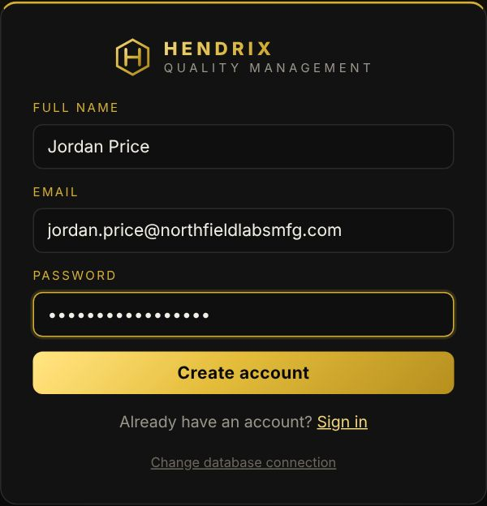
| Field | What to enter | Required |
|---|---|---|
| Full name | Your first and last name, as it should appear on records and signatures | Yes |
| Your work email. You sign in with it | Yes | |
| Password | At least 8 characters | Yes |
Hendrix checks: "Enter your name." if the name is blank. "Password must be at least 8 characters." if the password is too short. A new account cannot open any page until an admin approves it.
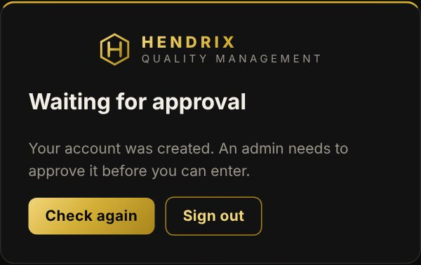
Sign in
- Enter your Email and Password.
- Click Sign in (or press Enter).
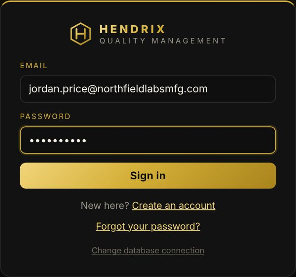
| Field | What to enter | Required |
|---|---|---|
| The email you signed up with | Yes | |
| Password | Your password | Yes |
The small link Change database connection is only for the person who installs Hendrix. It asks for the database address and key. Do not use it unless your admin tells you to.
Choose the State and License (top bar)
- At the top of every page, pick the State. Hendrix then picks the first license in that state.
- Pick the License. The list shows each license as "Name (license number)".
- Hendrix remembers your choice on this computer.
Everything you record belongs to the license chosen at the top. Your name and the Sign out button are at the top right.
Hendrix checks: The License list only shows active licenses in the chosen state that you are allowed to work in. If an admin limited you to some licenses, the others never appear. A record always carries both a state and a license, and the license must belong to that state. Hendrix will not let you save a record to a license in another state, or move a record to another state or license later.
Read the Dashboard cards
The first row always shows:
| Card | What it tells you |
|---|---|
| Regulatory agency | The state's regulator and governing code, from States and Licenses |
| Active license | The license name, type and number, and how many licenses the state has |
| State rulebook | How many rules the state's Rulebook holds, with Open rulebook |
After that, a card appears for each module you can open, for example Deviations & CAPA, Complaints, Internal audits, Training (or My training), SOPs, Suppliers, Receiving and holds, Equipment, Line clearance, Facility tests, Cultivation, HACCP, Risk and change, Quality objectives, Review and verification, Time clock, Production plans, Chemicals and SDS, Mock recall and Quality standard. Each card shows a headline number, a short line of detail and a link to the module. Red text means something is overdue, missing or failed. Green means all clear.
The Quality standard card shows the CSQ standard the license follows, its target level, the adoption status, a progress bar and how many clauses are still open. It says Not adopted until someone adopts the standard on Standards (CSQ).
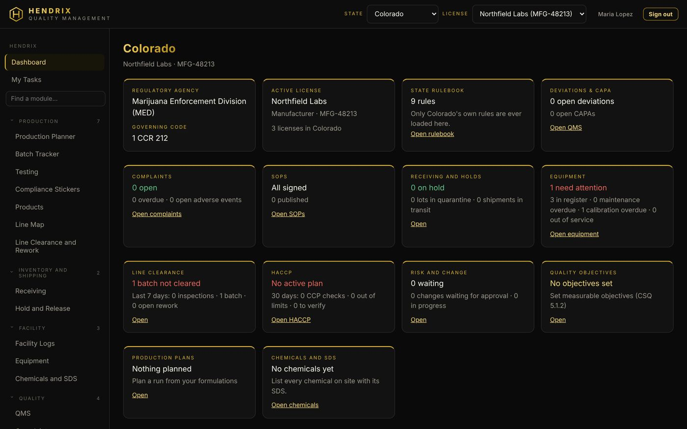
Tips
- If a menu item you need is missing, you do not have access to it. Ask a system admin.
- Check the license at the top before you record anything. Records cannot be moved to another license later.
States and Licenses
This is where the company's states and licenses are set up. Every record in Hendrix belongs to one license, and every license belongs to one state, so an inspector sees only the records of the license being inspected.
Understand it first
What it is. The list of states you operate in and the licenses you hold in each. A license is one permitted facility or operation, with its own license number.
Why we do it. Regulators inspect a license, not a company. Each license must keep its own records, its own people list and its own inventory. Hendrix keeps every record inside one license, so what you show an inspector is exactly that license's records and nothing else.
If it's skipped. Records from two facilities get mixed, and you can't prove which facility did what.
Example. Northfield Labs (manufacturing) and Northfield Farms (cultivation) are two licenses. A sanitation log saved at Northfield Labs never appears in Northfield Farms' records.
Where: left menu → States and Licenses. Who: everyone can view the page. Only a system admin can add, change, deactivate or delete states and licenses (other people see "View only. Only an admin can add or change states and licenses."). CSQ: 1.3 (regulatory compliance), 3A.1.2 (cultivation sites)
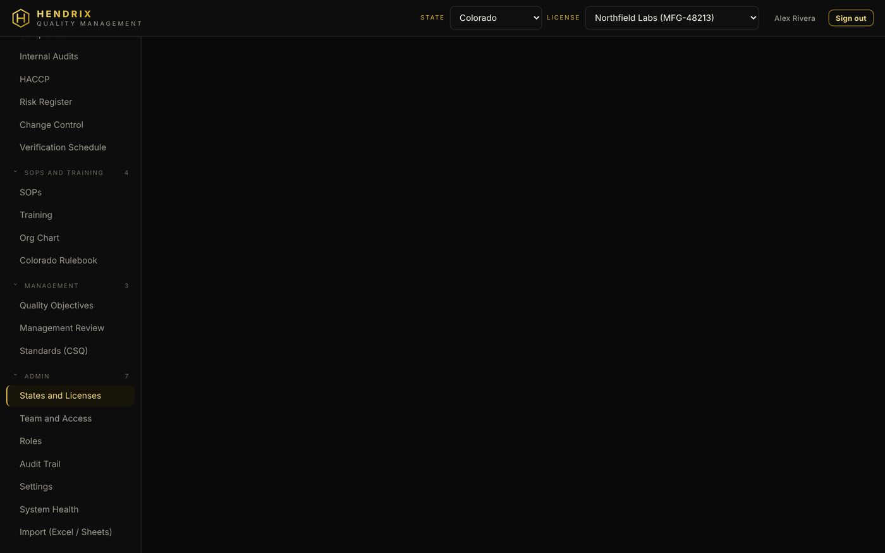
When to use it
| Situation | What you do in Hendrix |
|---|---|
| Hendrix is new | + Add state, then + Add license under that state |
| The company gets a new license | Under the right state, + Add license |
| The regulator or tracking system changes | Edit on the state |
| A license number or type changes | Edit on the license row |
| A license stops operating | Deactivate on the license row. It disappears from the License list at the top, but its records stay |
| A license starts operating again | Activate |
| A license was added by mistake | Delete on the license row (you confirm first) |
| You need a state's rules | Open |
Add or edit a state
- Click + Add state (or Edit on a state card).
- Fill in the form and click Save.
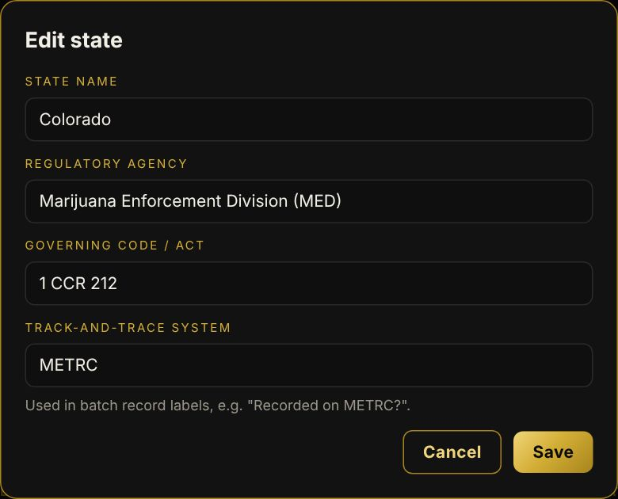
| Field | What to enter | Required |
|---|---|---|
| State name | For example Colorado | Yes (Save stays greyed out until it is filled) |
| Regulatory agency | For example Marijuana Enforcement Division (MED) | No |
| Governing code / act | For example the title of your state's cannabis regulations | No |
| Track-and-trace system | Default METRC. Used in batch record labels, for example "Recorded on METRC?" | No (blank becomes METRC) |
Hendrix checks: You cannot delete a state that still has licenses ("Delete or move this state's licenses first."). Deleting a state asks you to confirm, because its rulebook goes with it.
Add or edit a license
- Under the state, click + Add license (or Edit on a license row).
- Fill in the form and click Save.
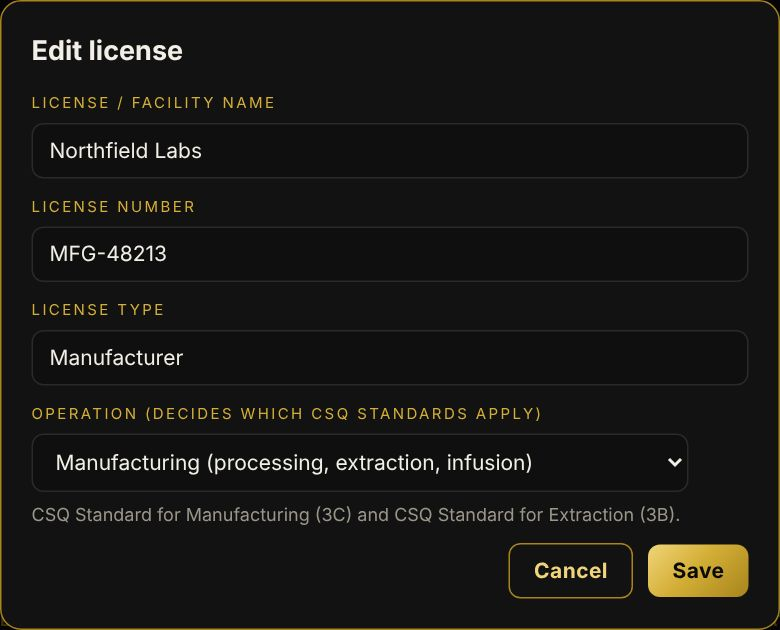
| Field | What to enter | Required |
|---|---|---|
| License / facility name | For example Northfield Labs | Yes |
| License number | For example MFG-48213 or CUL-71542 | No |
| License type | For example Manufacturer, Processor, Cultivation | No |
| Operation (decides which CSQ standards apply) | Automatic (Hendrix guesses from the number and type), Manufacturing (processing, extraction, infusion), Cultivation (CUL) or Other (dispensary, lab, transport...) | No (Automatic by default) |
The line under Operation tells you what follows from your choice:
- Manufacturing → CSQ Standard for Manufacturing (3C) and CSQ Standard for Extraction (3B).
- Cultivation → CSQ Standard for Cultivation (Module 3A).
- Other → no CSQ standard.
The CSQ column in the licenses table shows the result for each license.
Hendrix checks: When Operation is Automatic, a license number starting with CUL, or a type with "cultivation", "grow" or "nursery", makes it Cultivation. A number starting with MAN, or a type with "manufacturer", "processor", "extraction" or "infusion", makes it Manufacturing. Anything else is Other. If you change a license's operation later, the CSQ standards it follows change with it.
Tips
- Set the operation correctly before you adopt the CSQ standard. A cultivation license can only follow the Cultivation standard, and a manufacturing license only Manufacturing and Extraction.
- Deactivate rather than delete a license that has records.
Rulebook
The Rulebook holds one state's cannabis rules, for example your state's cannabis regulations. You can load the official rules PDF and Hendrix splits it into rules and sorts them by category. Inspectors care because it shows staff can find and follow the current state rules.
Understand it first
What it is. Your state's cannabis rules, loaded from the official rules document, split into single rules and sorted by topic.
Why we do it. Every record you keep exists because a rule or a standard asks for it. When people can look up the actual rule, they understand why a log or a test is required, and they follow it. Rules also change, and the Rulebook shows the version you are working to.
If it's skipped. People follow habits instead of rules, and nobody notices when a rule changes.
Example. A new technician asks why visitors must be escorted. You search "visitor" in the Rulebook and show them the rule that requires it.
Where: left menu →
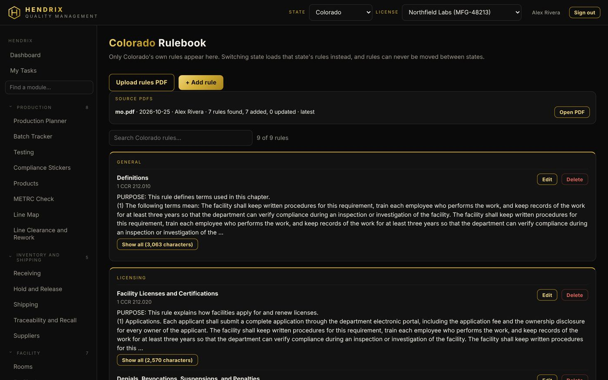
When to use it
| Situation | What you do in Hendrix |
|---|---|
| You set up a new state | Upload rules PDF with the official rules PDF from the state website |
| The state publishes amended rules | Upload rules PDF with the new PDF. Hendrix shows what is new, changed and the same |
| A rule was repealed | Upload the new PDF and tick Delete the N rules from an earlier PDF (Full) |
| You need to add a company rule or a single rule | + Add rule |
| A title or category is wrong | Edit on the rule |
| You need a rule during an inspection | Type in Search |
| You need the original PDF | Open PDF next to it under Source PDFs |
Each state has its own Rulebook. Switching the state at the top loads that state's rules. Rules can never be moved between states.
Upload the official rules PDF
- Click Upload rules PDF and choose the PDF.
- Hendrix reads every page. A review window opens with the file name, the number of pages, the rule format it found (for example "Code of State Regulations (CSR)") and the number of rules found.
- Check each row. Use the filter buttons All, New, Changed, Same and To import, or click a category badge to see one category.
- Change a title or category if needed. Click Text to read the rule text as it came from the PDF.
- If you want each numbered section (1), (2)... as its own rule, tick Split each rule into its numbered sections (1), (2)....
- If you want the AI to choose the categories, click Sort categories with AI.
- Click Import N rules. Hendrix shows "Imported from
: N new, N updated." and lists the PDF under Source PDFs.
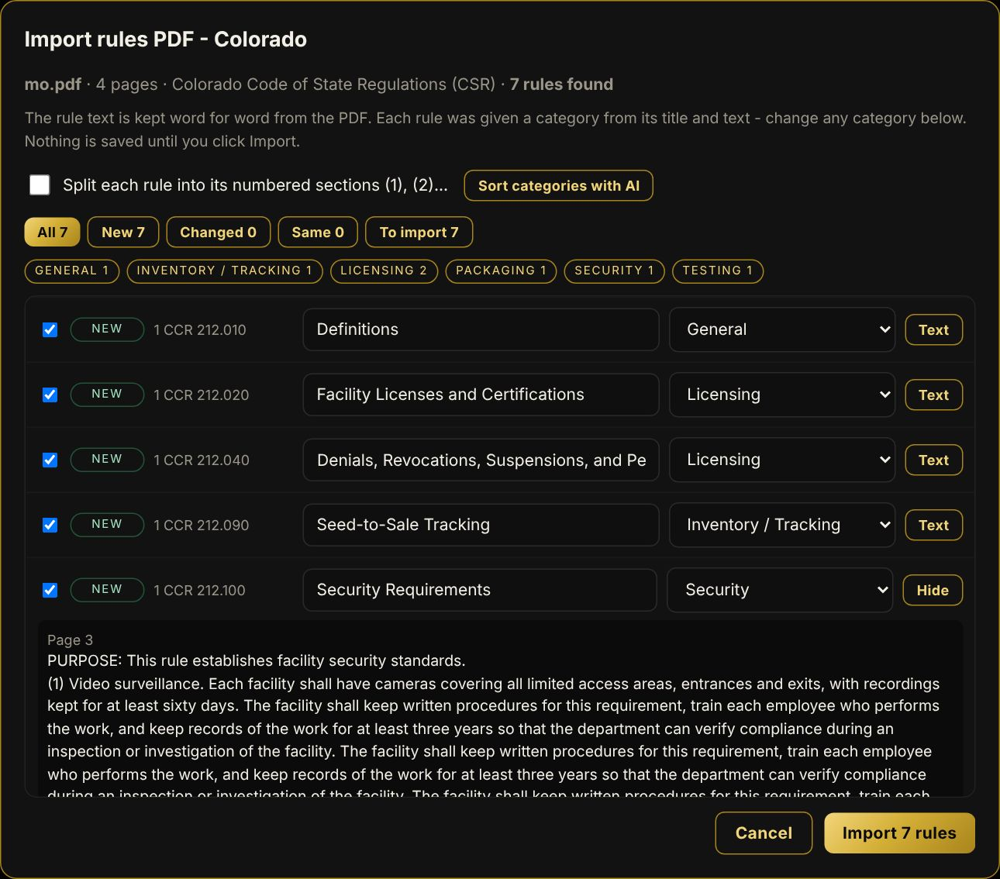
| Field (per row) | What to enter | Required |
|---|---|---|
| Tick box | Ticked = import this row. New and changed rules are ticked for you; rules that are the same are not | — |
| Title | The rule title from the PDF. Change it if it was cut short | Yes |
| Category | General, Licensing, Labeling, Packaging, Testing, Facility, Security, Recordkeeping, Training, Inventory / Tracking, Advertising or Other | Yes |
Hendrix checks: - Only PDF files are accepted ("Choose a PDF file."). - A scanned PDF with no text is refused: "This PDF has no readable text (it looks like a scan or a picture). Download the official text PDF from the state website and upload that one." - Hendrix recognizes the usual ways states number their rules (for example CSR, CCR and R numbers), numbered sections and numbered rules. Only when none of these are found does it ask the AI where each rule starts. The rule text itself is always kept word for word. - Page headers, footers and page numbers are removed. Two-column pages are read left column first. - Rows with very little text are probably table-of-contents lines. They are left unticked. - Nothing is saved until you click Import. Importing a changed rule replaces its title and text. - Rules from an earlier PDF that are not in the new one are kept unless someone with Full access ticks the delete box. - Imported rules keep the official order of the PDF. Rules typed by hand follow them.
Add or edit a rule
- Click + Add rule (or Edit on a rule).
- Fill in the form and click Save.
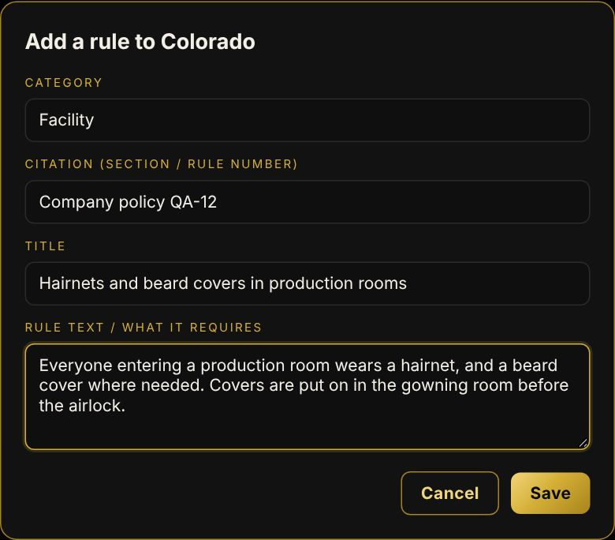
| Field | What to enter | Required |
|---|---|---|
| Category | Pick from the list or type your own | No (blank becomes Other) |
| Citation (section / rule number) | For example a rule number such as 3.405, or Company policy QA-12 | No |
| Title | A short name for the rule | Yes |
| Rule text / what it requires | The rule text | No |
Hendrix checks: Hendrix will not let you add or change rules without Edit access, or delete them without Full access. Every change to a rule is kept in the Audit Trail.
Tips
- Long rules are shortened on the page. Click Show all to read the full text.
- Keep the newest official PDF loaded. The newest one is marked latest under Source PDFs.
Standards (CSQ)
This page holds the CSQ (Cannabis Safety & Quality) standard clause by clause, and records how each license meets each clause. It is the conformance register an auditor works through, with the live Hendrix records behind each clause.
Understand it first
What it is. The CSQ (Cannabis Safety & Quality) standard, clause by clause, with how your license meets each clause and the evidence for it. A clause is one numbered requirement of the standard.
Why we do it. CSQ is the certification auditors check you against. An auditor goes clause by clause and asks "show me". This page is your answer sheet: for each clause, the way you meet it and the Hendrix records that prove it.
If it's skipped. You prepare for each audit by searching folders the night before, and clauses nobody owns get missed.
Example. Clause 1.4 asks you to control documents. Its evidence is the SOP master list in Hendrix, with approved versions and signatures.
Where: left menu → Standards (CSQ). Who: View can read the standard and the conformance. Edit can also record and update conformance (status, owner, evidence, files). Full can also add or update the standard, adopt it for a license, set the target level and certification details, and upload the standard PDFs. CSQ: all clauses in scope; in particular 1.1 (documented system covering the CSQ requirements) and 1.4 (documentation and records)
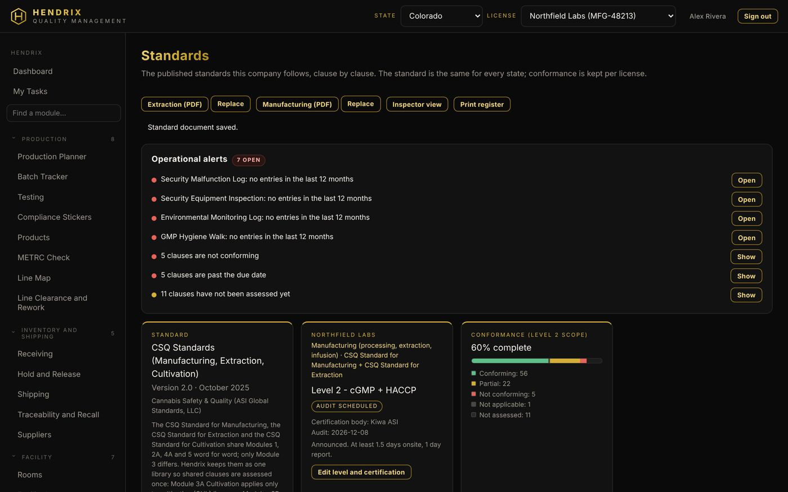
When to use it
| Situation | What you do in Hendrix |
|---|---|
| Hendrix has no standard yet | Click Add CSQ Standards (Manufacturing, Extraction, Cultivation) v2.0 (Full) |
| The license decides to follow CSQ | Adopt for this license, pick the standards and the target level (Full) |
| You book the certification audit | Edit level and certification, set Status Audit scheduled and the audit date |
| You check how you meet a clause | Open the clause → Record conformance |
| You fix a gap | Open the clause → Update conformance |
| A clause does not apply to you | Update conformance, Status Not applicable, and write why |
| Hendrix shows "N clauses are missing" | Click Update the standard (Full) |
| You have the licensed CSQ PDF | Upload Manufacturing PDF (or Extraction / Cultivation) |
| The auditor arrives | Inspector view, or Print register |
Add or update the standard
- When no standard is loaded, the page says No standard added yet. Click Add CSQ Standards (Manufacturing, Extraction, Cultivation) v2.0. Hendrix adds 130 clauses in its modules, each linked to the Hendrix records that prove it.
- When Hendrix gets new clauses or new links to records, a message says, for example, "3 clauses are missing." or "Hendrix has new records for N clauses." Click Update the standard. Hendrix shows "Updated: N clauses added, N refreshed with the latest Hendrix links." Your statuses and evidence are never changed.
The three CSQ standards share Modules 1, 2A, 4A and 5. Only Module 3 differs: 3A Cultivation, 3B Extraction, 3C Manufacturing. Shared clauses are assessed once.
Upload the CSQ standard PDFs
- At the top, click Upload Manufacturing PDF, Upload Extraction PDF or Upload Cultivation PDF. You only see the ones that fit the license's operation.
- Choose the licensed PDF. Hendrix says "Standard document saved."
- Click Manufacturing (PDF) (and so on) to open it, or Replace to load a newer copy.
Adopt the standard for a license
- Pick the license at the top.
- Click Adopt for this license (Full).
- Fill in the form and click Adopt standard.
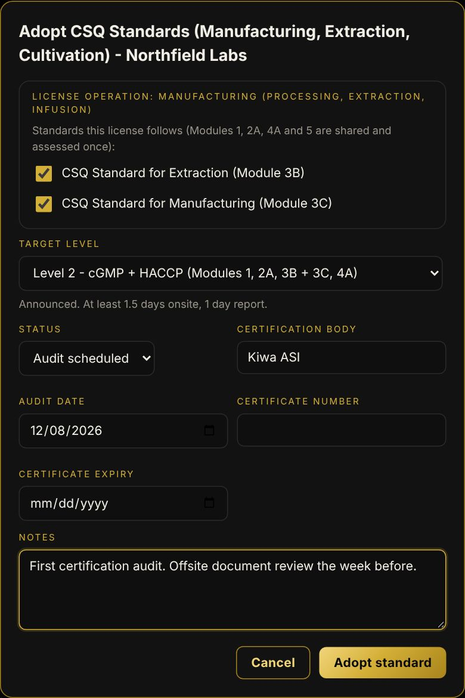
| Field | What to enter | Required |
|---|---|---|
| Standards this license follows | Manufacturing licenses: CSQ Standard for Extraction (Module 3B) and/or CSQ Standard for Manufacturing (Module 3C). Cultivation licenses: CSQ Standard for Cultivation (Module 3A) only (fixed) | Yes, at least one |
| Target level | Level 1 - cGMP (Modules 1, 2A, 3), Level 2 - cGMP + HACCP (adds 4A), Level 3 - cGMP + HACCP + QMS (adds 5). The audit length shows under the field | Yes (default Level 1) |
| Status | Following, Audit scheduled, Certified, Suspended, Withdrawn | Yes (default Following) |
| Certification body | For example Kiwa ASI | No |
| Audit date | Date of the certification audit | No |
| Certificate number | From the certificate | No |
| Certificate expiry | From the certificate | No |
| Notes | Anything else | No |
Hendrix checks: - CSQ only applies to manufacturing and cultivation licenses: "CSQ applies to manufacturing and cultivation licenses. Set this license's operation (States and Licenses) first." - "Pick at least one CSQ standard for this license." - A cultivation license follows the Cultivation standard only, and the Cultivation standard is only for cultivation licenses. - An adoption is never deleted: "A standard cannot be removed from a license. Set its status to Withdrawn instead." A withdrawn adoption counts as not adopted.
Read the page
- Operational alerts list what needs action: facility logs with no entries in the last 12 months, logs whose last entry is older than the limit set in Settings → Facility logs, clauses that are not conforming, clauses past their due date, and clauses not assessed yet. Click Open to go to the log, or Show to filter the clause list.
- The three cards show the standard, the license (operation, standards followed, target level, status, certification details) and Conformance (Level N scope): the percent complete, a bar and the count per status.
- Audit essentials lists key audit facts (for example the yearly mock recall in under 2 hours).
- By module shows progress per module. Click a module to filter to it.
- Use the search box (Search clauses, owners, evidence), the module list, the status list (Every status, Open (still to do) or one status) and My target level only / All levels to narrow the list.
Percent complete = (Conforming + Not applicable) ÷ all clauses in the target-level scope.
Record or update conformance on a clause
- Click a clause to open it. You see the requirement, the Live records in Hendrix (last 12 months) with a green or red dot, the Proof in Hendrix buttons, and what Hendrix already holds for it.
- Click Record conformance (or Update conformance).
- Fill in the form and click Save.
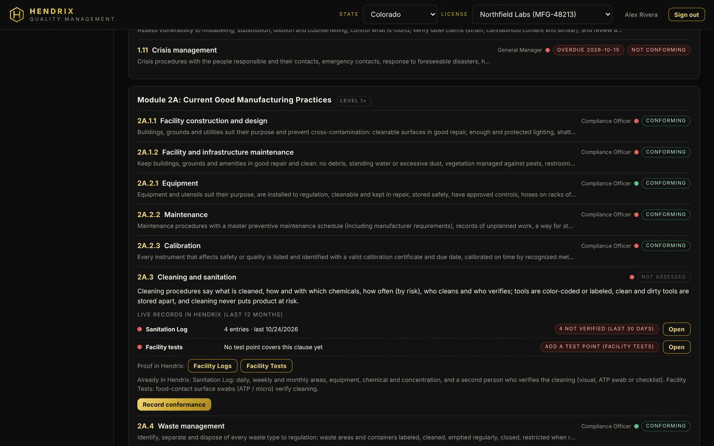
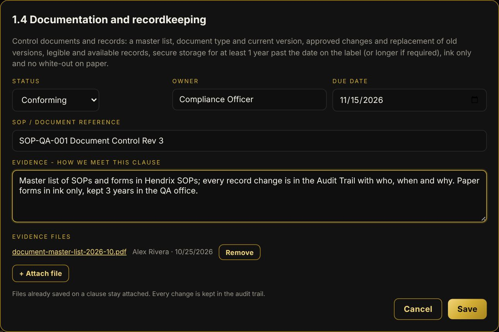
| Field | What to enter | Required |
|---|---|---|
| Status | Not assessed, Conforming, Partial, Not conforming, Not applicable | Yes |
| Owner | Who is responsible, for example Compliance Officer | No |
| Due date | When the gap must be closed | No |
| SOP / document reference | For example SOP-QA-001 Document Control Rev 3 | No |
| Evidence - how we meet this clause | Where an auditor finds the proof: records, logs, SOPs, training, photos | No (required for Not applicable, then labelled Justification (why it does not apply)) |
| Evidence files | + Attach file to add a file (stored privately) | No |
Hendrix checks: - "Write why this clause does not apply before marking it Not applicable." - You can only record conformance after the license has adopted the standard ("This license has not adopted that standard yet."). - You can only record Module 3 clauses that are in the license's scope (for example no Cultivation clauses for a manufacturing license). - There is one conformance record per license and clause. It is never deleted. Files already saved on a clause stay attached. Every change goes to the Audit Trail. - A due date in the past shows a red Overdue badge until the clause is Conforming or Not applicable.
Show the inspector
- Click Inspector view. The page becomes read only.
- Every clause opens and shows the requirement, how the facility meets it, the documents, files and live records. Clauses with no record show Not assessed yet. Internal alerts and edit buttons are hidden.
- Click Exit inspector view when done. Click Print register for a printable conformance register of the target-level scope.
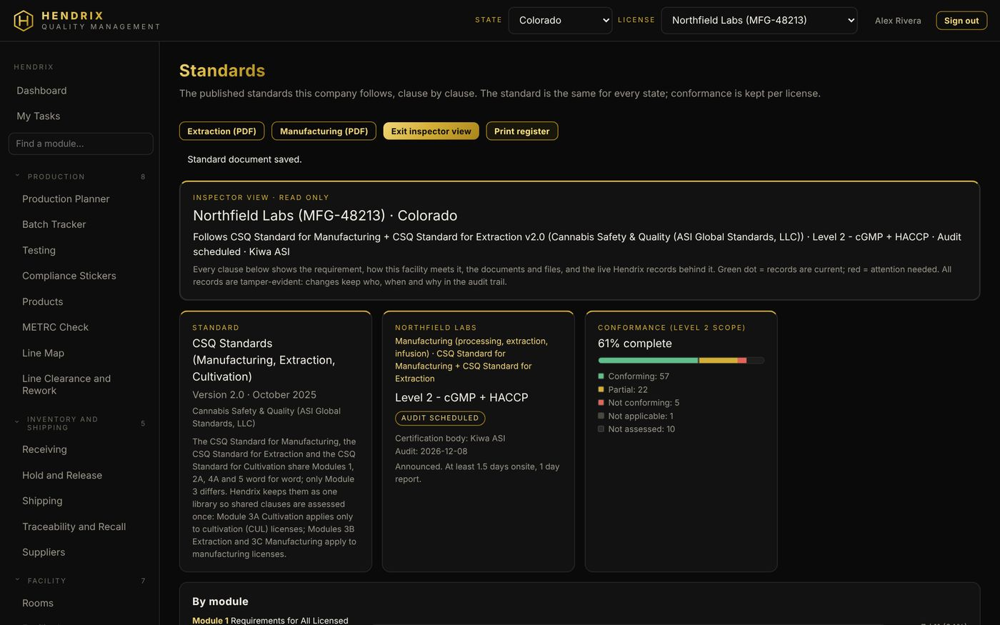
Tips
- Use Open (still to do) in the status list as your work list before an audit.
- The green or red dot on a clause is live: it turns red when, for example, the Sanitation Log has not been filled in on time.
Team and Access
This is where a system admin approves new people, gives them roles, chooses which licenses they work at and sets custom access. Inspectors care because it shows who can see and change which records.
Understand it first
What it is. The list of everyone who can sign in, which licenses they work at, and what they can see and do.
Why we do it. Every record must be attributable: it must be clear who made it. That only works if each person has their own account and only the access their job needs. It also protects product: someone who isn't trained to release product shouldn't be able to release it.
If it's skipped. Shared logins and too-broad access make records worthless as evidence, because nobody can say who really did what.
Example. A new production tech is approved with the Production Tech role. They can fill in batch records but can't approve a hold release, because releasing is a QA decision.
Where: left menu → Team and Access. Who: system admins only. Other people do not see this page. CSQ: 2A.13.1 (personnel roles and responsibilities), 4A.2 (HACCP team), 5.1.1 (quality system personnel)
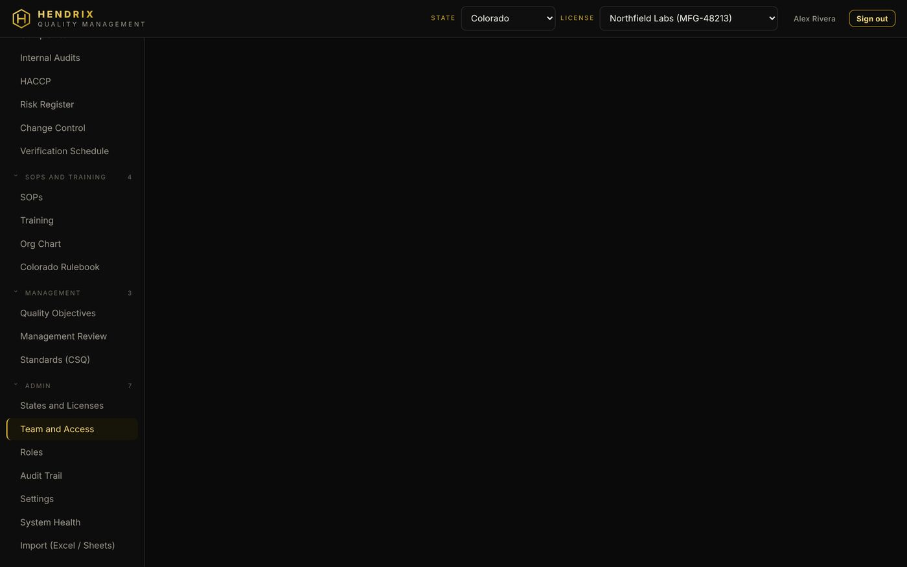
When to use it
| Situation | What you do in Hendrix |
|---|---|
| A new hire created an account | In N waiting for approval, click Approve |
| Someone changes job | Manage → change their roles |
| Someone should only work at one license | Manage → untick All licenses, in every state and tick their license |
| One person needs more or less access than their role gives | Manage → Custom access → pick a level for that module |
| Someone leaves the company | Manage → Remove from Hendrix → write the reason → Remove from Hendrix |
| Someone who left comes back | Removed (N) → Restore, then approve them again |
| A stranger or a duplicate account asks to join | In waiting for approval, Manage → Delete request |
| Someone forgot their password and can't use email or security questions | Manage → Set a temporary password |
| Someone needs to run Hendrix | Manage → tick System admin |
The table shows each person's roles, licenses, access ("From roles", "Custom (N)" or "Full") and status (Approved or Waiting).
Approve a person or change their access
- Click Approve (new person) or Manage (approved person).
- Fill in the form.
- Click Approve (or Save).
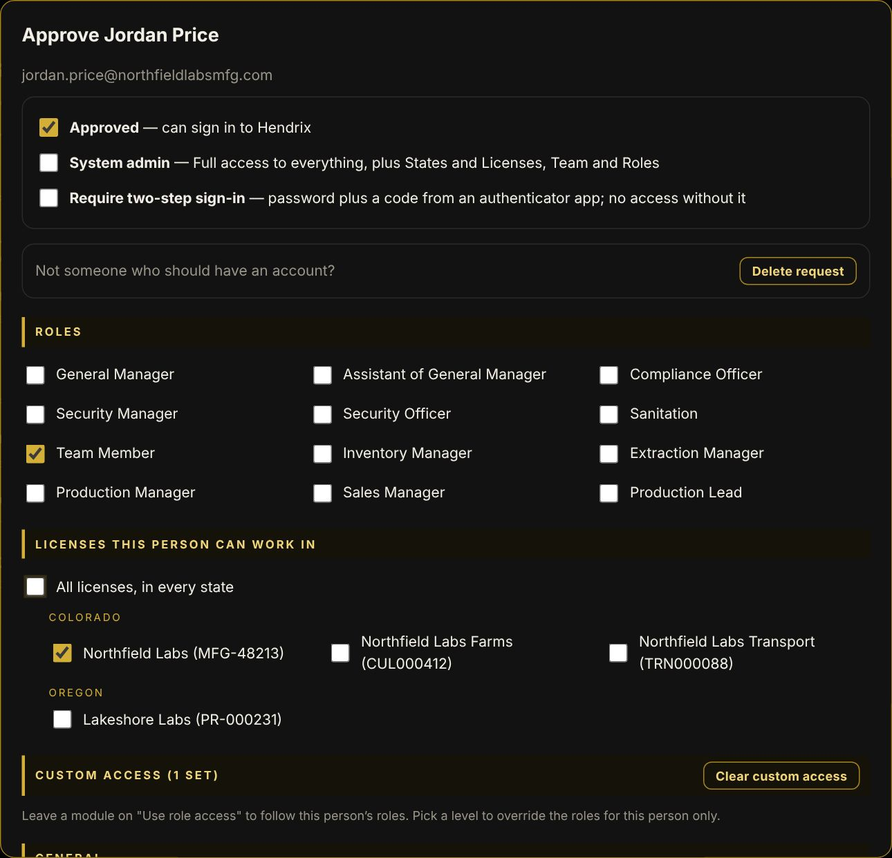
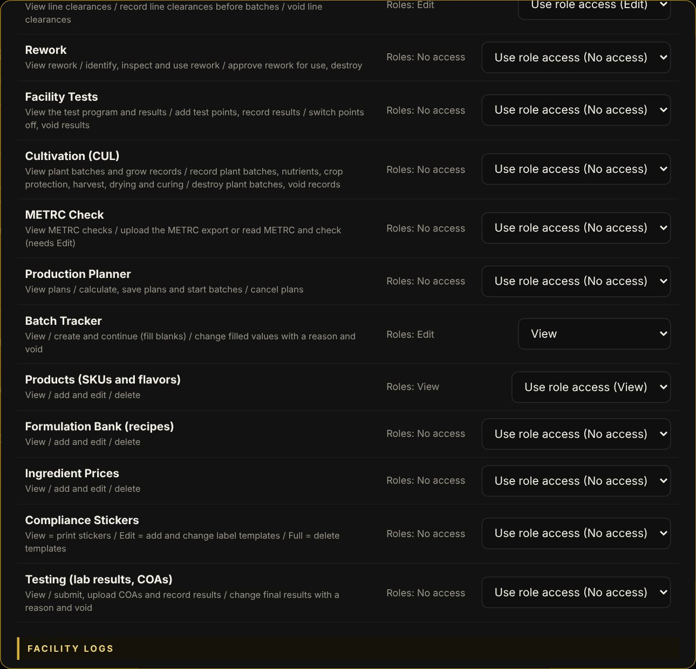
| Field | What to enter | Required |
|---|---|---|
| Approved | Ticked = can sign in to Hendrix | Ticked when you approve |
| System admin | Ticked = Full access to everything, plus States and Licenses, Team and Roles | No |
| Roles | Tick one or more roles (made on the Roles page). With several roles, the highest access wins | No |
| Licenses this person can work in | All licenses, in every state, or untick it and tick each license | Yes (at least one license) |
| Custom access | Per module: Use role access (…), No access, View, Edit or Full. The Roles: column shows what the roles give. Clear custom access removes all overrides | No |
Hendrix checks: - Only a system admin can change approval, roles, licenses or access: "Only a system admin can change roles and access." - "You cannot remove your own approval or admin rights." (the boxes are greyed out for yourself). - "Hendrix needs at least one system admin. Make someone else an admin first." - A person limited to some licenses only sees those licenses at the top, and Hendrix will not show or save their records anywhere else. - A person's level for a module is their custom setting if one is set, otherwise the highest level any of their roles gives. A single facility log with no setting of its own follows Facility Logs (all). - These rules are enforced by the database, not only on screen.
Remove someone who left
When a person leaves, remove them the same day. A person who left must never be able to sign in again.
- Click Manage next to the person.
- At the bottom, in Remove from Hendrix, click Remove....
- Write the Reason, for example "Left the company on 11/14/2026", and click Remove from Hendrix. Confirm.
Hendrix signs them out everywhere, takes away their approval, roles, custom access and admin rights, and blocks their sign-in. If they try, they see "Your access to Hendrix was removed. Ask a system admin if this is a mistake." Everything they recorded or signed stays, with their name. They move to the Removed (N) list, where Restore lets them sign in again once you approve them.
A sign-up request from someone who should not have an account (never approved) can be deleted completely with Delete request. Hendrix refuses this if the person already has records.
Set a temporary password
Most people reset their own password with Forgot your password? on the sign-in screen (by email or with their security questions; see My account). When that isn't possible:
- Click Manage next to the person → Set a temporary password. Hendrix suggests a random one; Generate makes another.
- Click Set password.
- Give the password to the person in person, not by text or email.
Their other sessions are signed out. At their next sign-in Hendrix makes them choose their own new password.
Tips
- Give access through roles. Use custom access only for exceptions.
- Review who has access at least every quarter. Remove people who left and lower access that's no longer needed.
- Removing someone never deletes anything they recorded. Their records and their Audit Trail history stay.
Roles
Roles are access templates, for example Production Lead or Compliance Officer. Each role carries a View, Edit or Full level per module, plus the duties and requirements of the job. Inspectors care because CSQ asks for written roles, responsibilities and requirements.
Understand it first
What it is. A role is a job title with its access level for each module, its duties and its requirements, for example Production Lead or Compliance Officer.
Why we do it. Giving access job by job instead of person by person keeps it consistent: everyone with the same job has the same access and the same training. CSQ also asks for written responsibilities for each job, and roles hold them.
If it's skipped. Access drifts person by person, and nobody can explain why one tech can approve things another can't.
Example. When the company adds a second Production Lead, the admin gives them the Production Lead role and they get exactly the access, duties and courses the first lead has.
Where: left menu → Roles. Who: system admins only. CSQ: 2A.13.1 (personnel roles, duties and requirements), 2A.13.2 (training by role), 1.9 (product defense: controlled access), 5.1.1
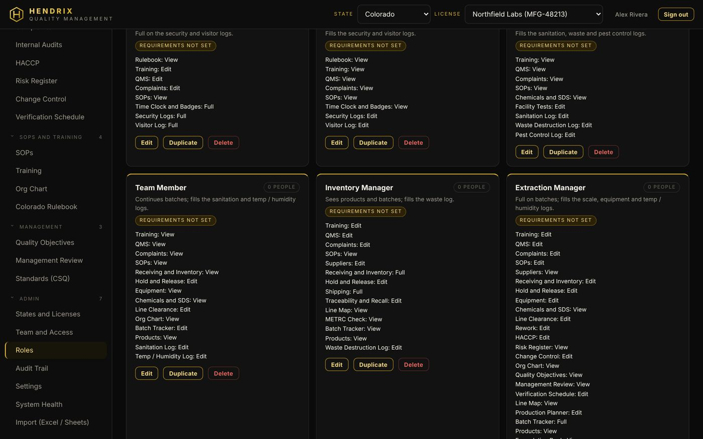
When to use it
| Situation | What you do in Hendrix |
|---|---|
| Hendrix is new | Add Northfield Labs roles to start from 12 job titles with suggested access |
| A new job title is created | + New role |
| A role is similar to an existing one | Duplicate on that role, then change it |
| A role needs more or less access | Edit on the role |
| The auditor asks for job requirements | Edit → fill Requirements (CSQ 2A.13.1). Cards without it show Requirements not set |
| A role is no longer used | Delete (Hendrix warns how many people lose the access it gives) |
The starter roles are: General Manager, Assistant of General Manager, Compliance Officer, Security Manager, Security Officer, Sanitation, Team Member, Inventory Manager, Extraction Manager, Production Manager, Sales Manager and Production Lead. Clicking Add Northfield Labs roles again only adds the ones that are missing.
Each card shows the number of people with the role, its duties, its requirements and its access per module.
Create or edit a role
- Click + New role (or Edit / Duplicate on a card).
- Fill in the form. For a whole group, use All No access, All View, All Edit or All Full.
- Click Save role.
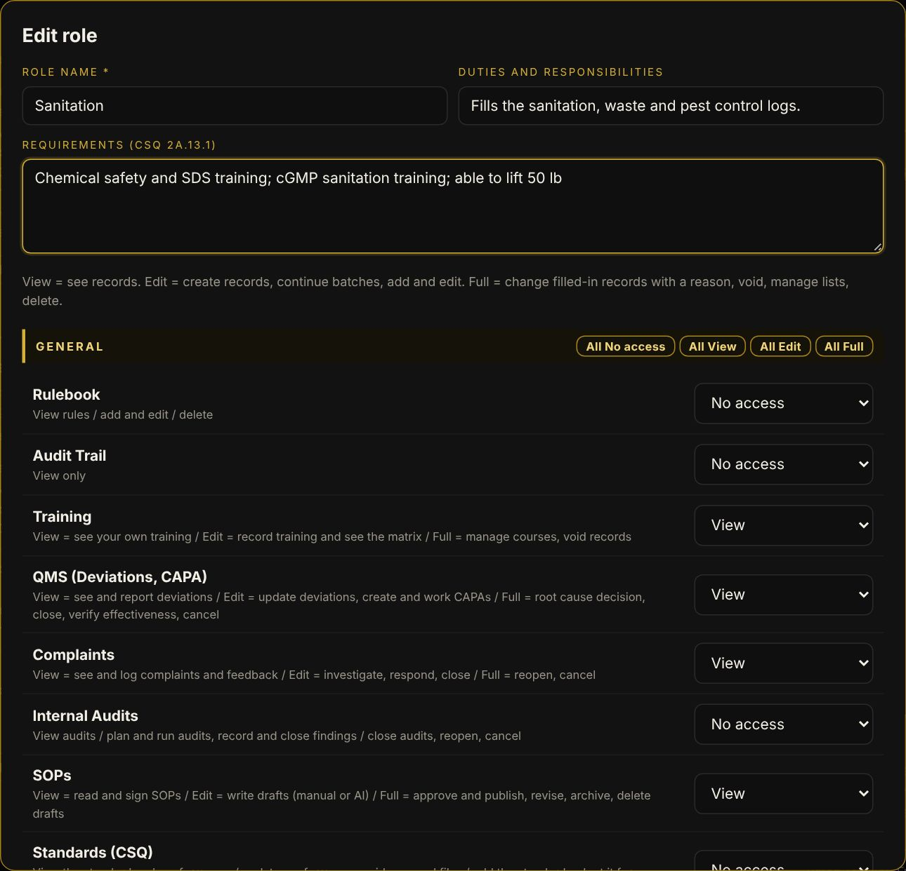
| Field | What to enter | Required |
|---|---|---|
| Role name | For example Production Lead | Yes |
| Duties and responsibilities | What this role does | No |
| Requirements (CSQ 2A.13.1) | Certifications, education, experience and training needed | No |
| Access per module (General, Production, Facility Logs) | No access, View, Edit or Full. Each module shows what each level allows. Audit Trail is View only. Single facility logs can follow Same as Facility Logs (all) | No |
What the levels mean: View = see records. Edit = create records, continue batches, add and edit. Full = change filled-in records with a reason, void, manage lists, delete.
Hendrix checks: "Enter the role name." if it is blank. "A role with that name already exists." Only a system admin can create, change or delete roles. Every change is in the Audit Trail.
Tips
- Fill in the requirements for every role. The Standards page flags roles that are missing them (clause 2A.13.1).
Audit Trail
The Audit Trail is the permanent history of every change in Hendrix: who, when, the old value, the new value and the reason. Inspectors use it to check that records were not changed without a reason.
Understand it first
What it is. The permanent history of every change in Hendrix: who changed what, when, the old value, the new value and the reason.
Why we do it. Records are only trustworthy if nobody can quietly change them afterward. Regulators expect records to be attributable, made at the time, original and accurate. The Audit Trail shows every change was made openly, by a named person, for a stated reason.
If it's skipped. A record that was changed without a trace can't be trusted, and an inspector may treat every record like it as unreliable.
Example. A batch weight was corrected from 512 g to 521 g. The Audit Trail shows who corrected it, when, and the reason: "typo, scale printout attached".
Where: left menu → Audit Trail. Who: anyone with View on Audit Trail (it has no Edit or Full level). Nobody, including admins, can change or delete it. CSQ: 1.4 (documentation and records), 5.1.5 (change management)
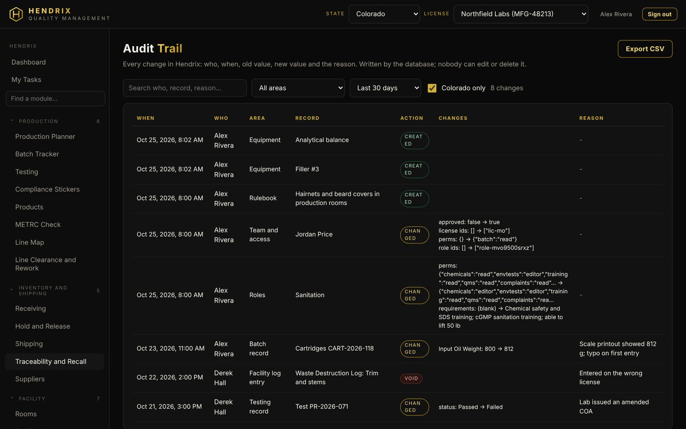
When to use it
| Situation | What you do in Hendrix |
|---|---|
| An inspector asks who changed a batch record | Pick the area Batch record, or search the batch number |
| You need to know why an entry was voided | Look at the Reason column of the Void row |
| You need a change history for the auditor | Set the period and click Export CSV |
| You review changes for one person | Type their name in the search box |
| You need changes from all states | Untick |
Find a change
- Use the filters at the top:
- Search who, record, reason...
- the area list (for example Batch record, Facility log entry, Testing record, Standard conformance, Team and access)
- the period: Last 24 hours, Last 7 days, Last 30 days (default), Last year, All time
-
only (ticked by default; also shows changes that belong to no state, such as roles) - Read the table: When, Who, Area, Record, Action (Created, Changed, Void, Removed), Changes (field: old → new) and Reason.
- Click Export CSV to download the list shown (with record IDs, state and license IDs).
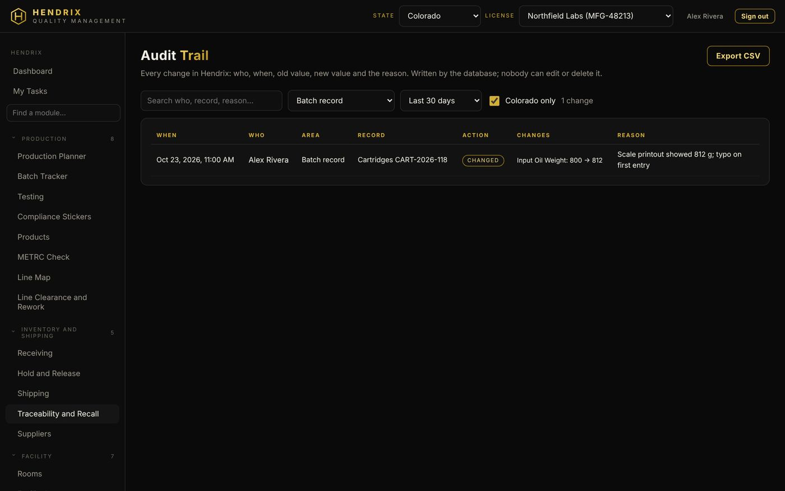
Hendrix checks: - Every insert, change, void and removal is written by the database itself, with the user and time. It cannot be skipped. - "The audit trail cannot be changed or deleted." - Changes to log entries and batch records need a reason, and voids need a reason. The reason is stored here. - Entries made at a QR kiosk show "QR kiosk (name)" as the person. - The page loads the newest 1,000 changes for the filters you chose. Narrow the period to see older ones.
Settings
Settings are kept per license: the business details and logo printed on records, the time clock break limits, how often each facility log must be filled in, and how often risks are reviewed. They make printouts and overdue flags match how the license really works.
Understand it first
What it is. The settings for one license: its legal name, address and logo on printouts, break limits for the time clock, and how often each log and review is due.
Why we do it. Printouts are legal records, so they must carry the license's real legal name and number. The due dates drive the overdue warnings, so they must match your SOPs.
If it's skipped. Printouts show the wrong name, and overdue warnings come too early or too late.
Example. Your SOP says the pest log is filled in monthly. Settings has the pest log cycle set to match, so the Dashboard warns when it's late.
Where: left menu → Settings. Who: View (and Edit) can see the settings ("View only: Full access on Settings is needed to change them."). Full can change and save them. System admins can always change them. CSQ: supports 1.4 (controlled printouts); the log limits feed the live evidence for the facility log clauses on Standards (CSQ)
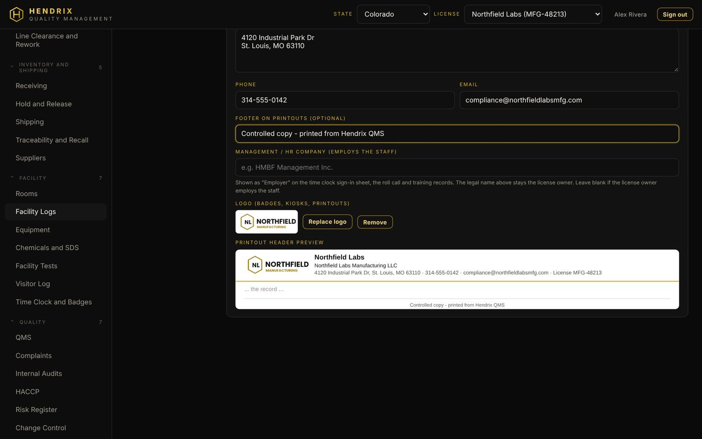
When to use it
| Situation | What you do in Hendrix |
|---|---|
| A new license is set up | General: legal name, DBA, address, phone, email, footer, logo |
| The logo changes | General → Replace logo |
| Break rules change | Time clock → change the break minutes |
| Sanitation must be logged every day, not every 48 hours | Facility logs → Sanitation Log → 24 (hours) |
| The staff are employed by a separate management company | General → Management / HR company |
| High risks must be reviewed more often | Review cycles → High (10-14) |
| You look for where something else is set | Everything else → Open on the right card |
The page always manages the license chosen at the top ("Managing Northfield Labs · MFG-48213"). Switch the license at the top to manage another. After changes, click Save settings (top right). Hendrix says "Settings saved for
General
The License card shows the name, number, type, operation and state (these are changed in States and Licenses).
| Field | What to enter | Required |
|---|---|---|
| Legal name | For example Northfield Labs LLC | No |
| Doing business as (shown first) | For example Northfield Labs | No |
| Address | Street, city, state, ZIP | No |
| Phone | Main phone | No |
| Main email | No | |
| Footer on printouts (optional) | For example Controlled copy - printed from Hendrix QMS | No |
| Management / HR company (employs the staff) | Only when the staff are employed by a separate management company, for example Northfield Management Inc. It prints as "Employer" on the time clock sign-in sheet, the roll call and training records. Leave it blank when the license owner employs the staff | No (120 characters at most) |
| Logo (badges, kiosks, printouts) | Upload logo (PNG, JPG, WEBP or SVG). Remove takes it off | No |
The Printout header preview shows what will print at the top and bottom of every record. The logo also shows on badges and the time clock kiosk.
Time clock
| Field | What to enter | Required |
|---|---|---|
| 1st break (min) | Default 15 | Yes |
| 2nd break (min) | Default 30 | Yes |
| 3rd break (min) | Default 15 | Yes |
A return later than the limit is flagged late, with the minutes over, on the kiosk and the sign-in sheet.
Facility logs
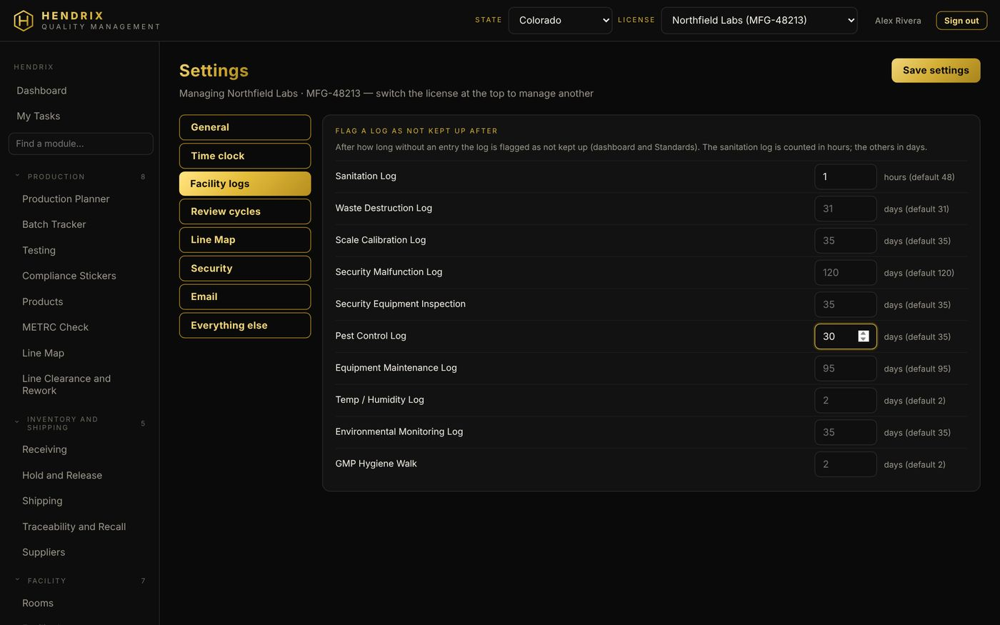
One number per log: after how long without an entry the log is flagged as not kept up (on the Dashboard and on Standards). The sanitation log is counted in hours; the others in days. Leave it blank to use the default.
| Log | Default |
|---|---|
| Sanitation Log | 48 hours |
| Temp / Humidity Log | 2 days |
| GMP Hygiene Walk | 2 days |
| Waste Destruction Log | 31 days |
| Scale Calibration Log | 35 days |
| Security Equipment Inspection | 35 days |
| Pest Control Log | 35 days |
| Environmental Monitoring Log | 35 days |
| Equipment Maintenance Log | 95 days |
| Security Malfunction Log | 120 days |
Review cycles
The default review cycle for a new risk in the Risk Register, by its rating. Each risk can still be changed on its own.
| Rating | Default (days) |
|---|---|
| Critical (15-25) | 90 |
| High (10-14) | 180 |
| Medium (5-9) | 365 |
| Low (1-4) | 365 |
Everything else
A list of cards with Open buttons for settings that live in other pages: States and Licenses, Team and Access, Roles (access templates), Products, Compliance Stickers, Facility Logs (pick lists and kiosk QR codes), Rulebook, Standards (CSQ), Org Chart, Quality Objectives and Time Clock and Badges. You only see the cards for pages you can open.
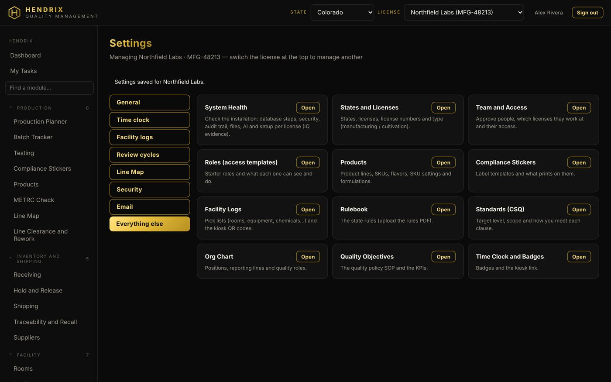
Hendrix checks: - "Only Full access on Settings can change the settings of this license." - "Break limits must be between 1 and 240 minutes." - "Log due days must be between 1 and 400." and "Review cycles must be between 7 and 1095 days." - The logo is resized to fit 400 × 200 pixels. If it is still too big: "That logo is too large even after resizing. Use a simpler PNG or JPG." Hendrix only accepts PNG, JPG, WEBP or SVG images under 200 KB. - "Check the email address." if the email is not valid. - Settings are never deleted and cannot move to another license. Every change is in the Audit Trail.
Import (Excel / Sheets)
Import brings existing lists from Excel or Google Sheets into Hendrix: suppliers, equipment, chemicals, products, complaints, risks and the org chart. The AI can match the columns, you check a preview, and every row goes through the same checks as typing it in.
Understand it first
What it is. A way to bring lists you already keep in Excel or Google Sheets into Hendrix in one go.
Why we do it. Retyping long lists by hand causes mistakes. Import moves them over in one step, and every row goes through the same checks as typing it in.
If it's skipped. Weeks of retyping, and typos in supplier names and equipment numbers.
Example. Your equipment list of 60 machines is imported from a spreadsheet. Two rows without a name are shown as errors and fixed before anything is saved.
Where: left menu → Import (Excel / Sheets). Who: anyone with Edit on at least one of Suppliers, Equipment, Chemicals and SDS, Products, Complaints, Risk Register or Org Chart. You only see the kinds of list you have Edit access to. CSQ: none directly (the imported records then serve as evidence in their own modules)
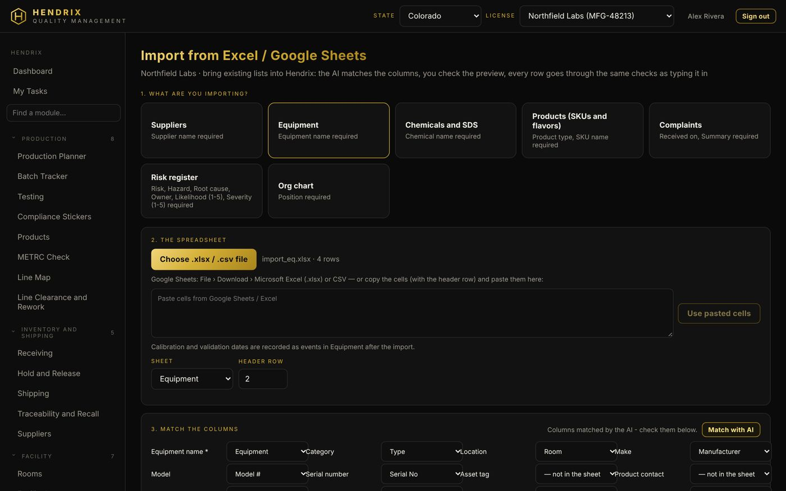
When to use it
| Situation | What you do in Hendrix |
|---|---|
| You move the equipment list from Excel | Equipment → Choose .xlsx / .csv file |
| Your supplier list lives in Google Sheets | Suppliers → download as .xlsx or CSV, or copy the cells and Use pasted cells |
| You load all SKUs and flavors at once | Products (SKUs and flavors) |
| You bring in last year's complaint log | Complaints |
| You have a risk assessment in a spreadsheet | Risk register |
| You have an org chart with reporting lines | Org chart |
Import a list
- 1. What are you importing? Click a card: Suppliers, Equipment, Chemicals and SDS, Products (SKUs and flavors), Complaints, Risk register or Org chart. Each card lists its required columns.
- 2. The spreadsheet. Click Choose .xlsx / .csv file (.xlsx, .xls, .csv, .tsv, .txt), or paste cells copied from Google Sheets or Excel (with the header row) and click Use pasted cells.
- If the file has several sheets, pick the Sheet. Check the Header row. Hendrix skips title rows and finds the first row with at least two filled cells.
- 3. Match the columns. Hendrix matches the columns by their names. Click Match with AI to let the AI match them and translate values (for example "Mixer" → Production). Check every field. A required field that is not matched shows in red.
- 4. Preview. Read the badges (N to import, N with problems, N already in Hendrix) and the Check column. Untick any row you do not want.
- Click Import N rows. Hendrix says "Imported N." and lists any row that failed with the reason.
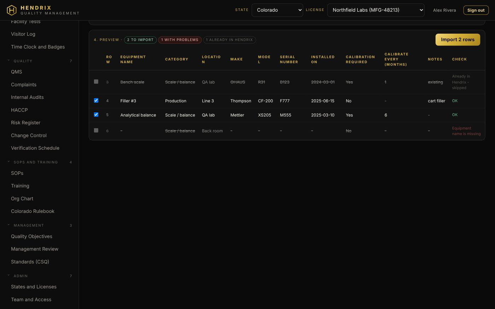
| Kind | Required columns | What happens after import |
|---|---|---|
| Suppliers | Supplier name | Suppliers start as Pending. Approve each one in Suppliers |
| Equipment | Equipment name | Calibration and validation dates are recorded as events in Equipment |
| Chemicals and SDS | Chemical name | Chemicals start as Pending. Attach the SDS and approve each one |
| Products (SKUs and flavors) | Product type, SKU name | New SKUs are added switched off for every license in the state. Existing SKUs get only the new flavors |
| Complaints | Received on, Summary | Complaints come in Open |
| Risk register | Risk, Hazard, Root cause, Owner, Likelihood (1-5), Severity (1-5) | The review cycle comes from Settings → Review cycles |
| Org chart | Position | "Reports to" is matched to the position titles in the sheet or already on the chart |
Hendrix checks: - A row with a required column empty is not imported ("Equipment name is missing"). - Dates and numbers must be readable ("… is not a date", "… is not a number"). US dates like 03/10/2025 are read as March 10. - A choice value Hendrix cannot place stops the row if the field is required; otherwise the field is left blank with a warning. - Risks: likelihood and severity must be 1-5, and a risk scored 10 or more needs an immediate action and a target date. - Complaints: "Received on is in the future" is refused. - Rows whose name (or title) is already in Hendrix for this license are skipped ("Already in Hendrix - skipped"), so importing the same file twice adds nothing. - Org chart: a "Reports to" that matches no position is reported ("Reports to "Plant Manager" not found - set it on the Org Chart"), not guessed. - Every row is saved to the license chosen at the top and goes through the same database rules and Audit Trail as a record typed by hand. - If the AI is not set up, Hendrix says so and you match the columns by hand.
Tips
- Check the license at the top before you import.
- The preview shows the first 500 rows; all ticked rows are imported.
Chapter 4
Quality system
Deviations and CAPA, complaints, internal audits, SOPs and training: the core of CSQ Module 1 and the quality culture behind it.
QMS
QMS is where you record every deviation (anything that did not go as written), fix it, decide whether it needs a root cause analysis, and run corrective and preventive actions (CAPAs) until they are verified effective. Inspectors and CSQ auditors use it to see that problems are corrected, investigated when needed, and not repeated.
Understand it first
What it is. A deviation is anything that did not happen the way the SOP, the specification or the plan says it should. A wrong weight, a failed temperature reading, a missed log, a wrong label, a spill, a broken seal on a delivery: all are deviations. A CAPA (corrective and preventive action) is the longer-term fix for the cause of a deviation, so it doesn't happen again.
Why we do it. Things go wrong in every facility. What separates a safe operation from an unsafe one is that problems are written down, contained, understood and fixed for good. Inspectors and auditors don't expect zero deviations; they expect every deviation to be recorded honestly and handled. A facility with no deviations on file looks like a facility that hides them.
When you must report one. Report a deviation whenever:
- a result is outside its limit (weight, temperature, humidity, lab result);
- a step in an SOP or batch record was skipped, done differently or done late;
- something was damaged, mislabeled, mixed up or contaminated;
- a check, log or calibration was missed;
- you're not sure. It's always better to report and have QA close it than to stay quiet.
What happens after. You write what happened and what you did right away (the correction, for example pulling the bad units). QA decides whether the cause must be found (root cause analysis). If the problem could come back, QA opens a CAPA, and later checks that the CAPA worked.
If it's skipped. The same problem repeats, product that should have been stopped gets shipped, and an inspector finds the problem in a log with no deviation behind it.
Example. A temperature log shows the vault at 79 °F, above the 75 °F limit. The tech moves the product to a second vault (correction) and reports a deviation. QA finds the HVAC filter was blocked (root cause) and adds monthly filter changes to the maintenance plan (CAPA).
Where: left menu → QMS. You can also raise a deviation from many other pages (see Raise a deviation from another page). Who: View can see deviations and CAPAs and report a deviation; Edit can also update deviations and create and work CAPAs; Full can also decide whether a root cause analysis is needed, close and cancel deviations, verify CAPA effectiveness, and reopen closed records. CSQ: 1.6 (a–g), 4A.9; also evidence for 2A.2.2, 2A.5.1, 2A.9.3, 2A.10.4, 2A.12.6 and 5.1.6 when deviations are raised from those areas.
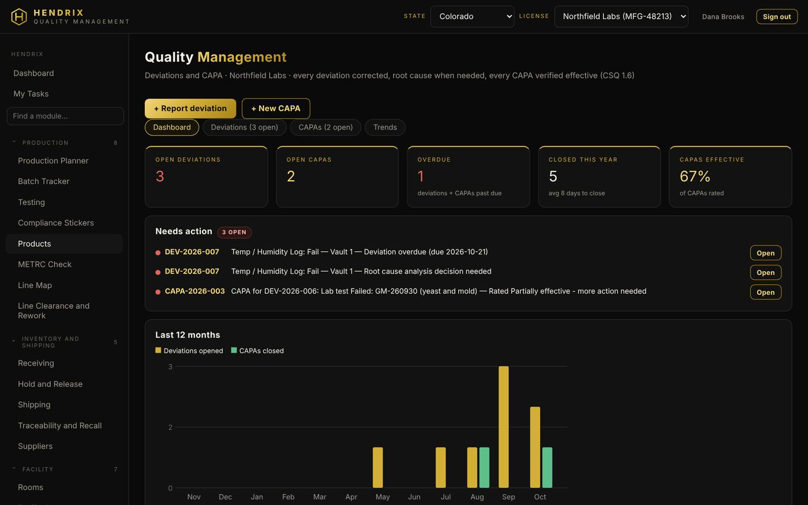
When to use it
| Situation | What you do in Hendrix |
|---|---|
| A pre-roll weight check fails on the line | QMS → + Report deviation, Department Production, Category Product quality, write the correction you took |
| A Temp / Humidity log entry fails | Facility Logs → the failed entry → Deviation. The form opens prefilled and linked to the log entry |
| A lab test comes back Failed | Testing → the test → Deviation. Priority is set to Critical and the lot is filled in |
| A customer complaint points to a production problem | Complaints → open the complaint → Raise deviation. The deviation is linked back to the complaint |
| An internal audit finds a nonconformity | Internal Audits → the finding → Raise deviation (CAPA) |
| QA decides the problem needs a root cause | Open the deviation → Edit → Root cause analysis needed? = Yes (Full access) |
| The problem needs a long-term fix | Open the deviation → + Create CAPA |
| The CAPA has been running long enough to judge it | Open the CAPA → Verify effectiveness |
| Annual review of deviations and CAPAs | QMS → Trends → Print annual trend review, discuss it, sign it |
| A deviation was entered twice by mistake | Open it → Cancel, give the reason (Full access) |
Read the QMS page
The page has four tabs:
- Dashboard: open deviations, open CAPAs, overdue items, deviations closed this year (with the average days to close) and the percentage of rated CAPAs that were Effective. Needs action lists overdue deviations and CAPAs, deviations waiting for a root cause decision (shown to Full access) and CAPAs rated Partially effective or Ineffective. Click Open to go straight to the record. Below are a 12-month chart and recent activity.
- Deviations (n open) and CAPAs (n open): one card per record with number, status, priority, department and source. Search by number, title, lot, product or owner. The status filter offers Open + in progress (default), Overdue, Everything, Open, In progress, Closed and Cancelled.
- Trends: charts by month, category, source, department and priority for the current year.
A record is Overdue when it is open or in progress and its due date has passed.
Report a deviation
- Click + Report deviation (top right of QMS).
- Fill in the form. Write what happened and what you did right away.
- Click Submit deviation. Hendrix gives it the next number, for example DEV-2026-009, and opens it.
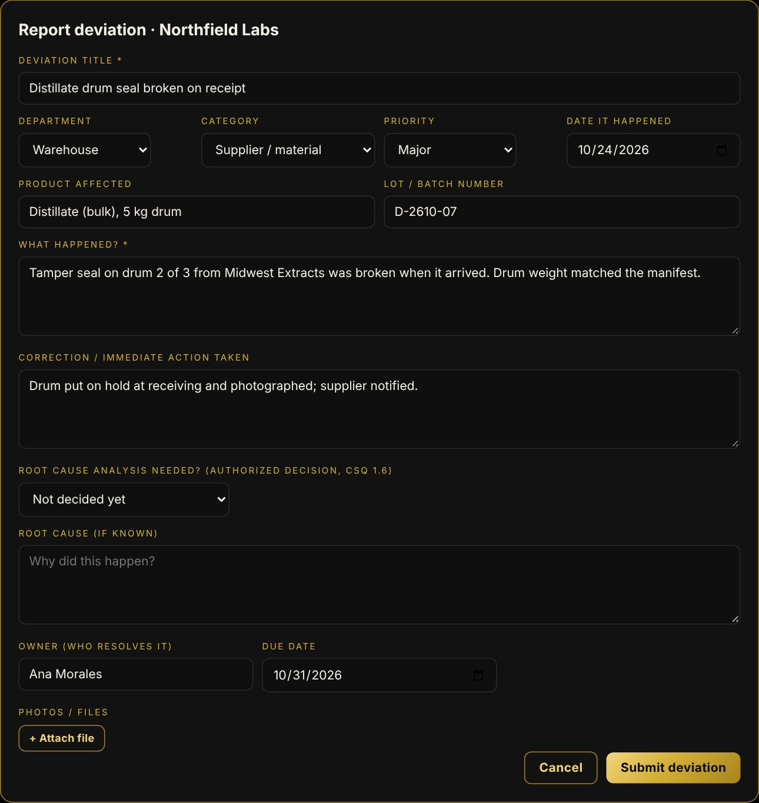
| Field | What to enter | Required |
|---|---|---|
| Deviation title | Short name of the problem | Yes |
| Department | Facility, Production, Sanitation, Compliance, Security, Warehouse, Distribution or Sales | Yes (defaults to Production) |
| Category | Product quality, Process / procedure, Equipment, Environment / temperature, Sanitation, Pest, Security, Documentation, Labeling / packaging, Testing result, Supplier / material, Safety or Other | No |
| Priority | Critical, Major or Minor | Yes (defaults to Major) |
| Date it happened | The date of the event | No (defaults to today) |
| Product affected | Product or material name | No |
| Lot / batch number | The lot or batch involved | No |
| What happened? | Full description | Yes |
| Correction / immediate action taken | What you did right away to contain it | No, but needed before closing |
| Root cause analysis needed? | Not decided yet, Yes - find the root cause or No - the correction is enough. Shown only to Full access | No, but a decision is needed before closing |
| Root cause | Why it happened. Marked * when root cause analysis is Yes | Needed before closing when RCA is Yes |
| Owner (who resolves it) | Name of the person responsible | No |
| Due date | When it must be resolved | No |
| Status | Open or In Progress. Shown only when you edit | — |
| Photos / files | + Attach file for photos or documents | No |
Hendrix checks: Hendrix will not save a deviation without a title and a description. The number (DEV-year-###, counted per license), who reported it and when are set by Hendrix and can never be changed, and neither can the license. A new deviation always starts Open. If someone without Full access fills in the root cause decision, Hendrix ignores it.
Raise a deviation from another page
Many pages have a Deviation button (or Raise deviation) next to a record. It opens the same form, already filled in, and keeps a link to the source. The source shows at the top of the deviation ("Source: …") with an Open button that takes you back to that page.
| Page | Record |
|---|---|
| Facility Logs | A log entry (for example a failed temperature reading) |
| Batch Tracker | A batch |
| Testing | A lab test (Failed tests are prefilled as Critical) |
| Receiving / Hold and Release | A received lot or a hold |
| Traceability and Recall | A failed mock recall |
| Line Clearance and Rework | A line that was not cleared |
| Facility Tests | A failed facility test |
| HACCP | A CCP reading out of limits |
| Verification Schedule | A verification with issues |
| Complaints | A complaint (the deviation is linked back to the complaint) |
| Internal Audits | An audit finding (the deviation is linked back to the finding) |
Anyone with View access to QMS can raise a deviation this way.
Work and close a deviation
- Click the deviation card to open it. You see the badges, who reported it, the source, product and lot, what happened, the correction, the root cause decision, files and linked CAPAs.
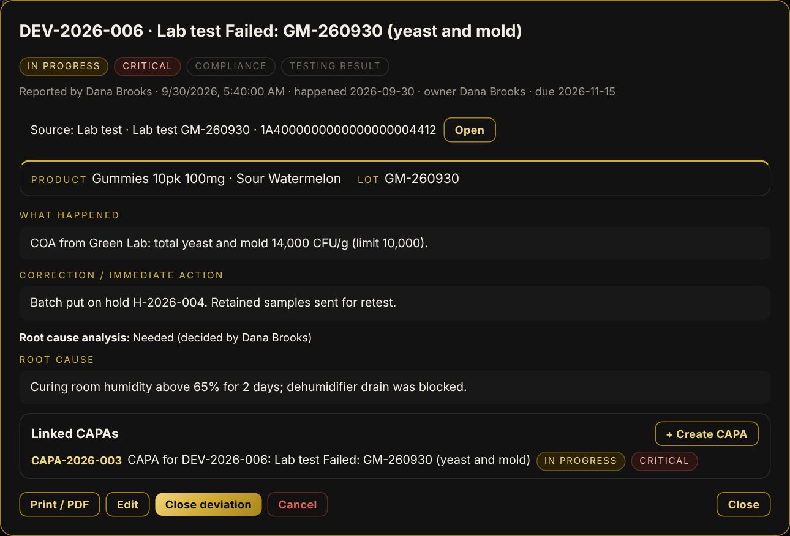
- Click Edit (Edit access) to add the correction, root cause, owner, due date or files, or to set the status to In Progress. Click Update.
- When the work is done, click Close deviation (Full access). The close window shows three checks with a ✓ or ✗: correction recorded, root cause decision made, root cause recorded (when needed). If a check is missing, the Close deviation button stays greyed out. If linked CAPAs are still open, Hendrix tells you; they stay open until they are verified.
- Enter an optional Closing note and click Close deviation.
Other buttons: Print / PDF prints the full deviation record; Cancel (Full) cancels it with a reason; Reopen (Full) reopens a closed or cancelled deviation.
Hendrix checks: Hendrix will not close a deviation until the correction is written ("Every deviation needs its correction (immediate action) recorded before it is closed."), the root cause decision is made ("Decide whether a root cause analysis is needed before closing.") and, when RCA was marked as needed, a root cause is written ("A root cause is required before closing (RCA was marked as needed)."). Only Full access can close, cancel, reopen or make the root cause decision; Hendrix records who decided. A closed or cancelled deviation cannot be changed until it is reopened. Deviations are never deleted.
Create a CAPA
Use + Create CAPA inside an open deviation (fields are copied from it), or + New CAPA at the top of QMS (Edit access).
| Field | What to enter | Required |
|---|---|---|
| CAPA title | Prefilled as "CAPA for DEV-…: title" | Yes |
| Linked deviation | The deviation it addresses, or (none) | No |
| Department | Same list as deviations | Yes (default from the deviation) |
| Priority | Critical, Major or Minor | Yes |
| Issue description | The problem being fixed | Yes |
| Root cause | Why it happened | No |
| Correction (immediate fix) | What fixed the immediate problem. Needed before the CAPA can close | No |
| Preventive action (long-term fix) | Process changes that stop it happening again | No |
| Responsible person | Pick from people with QMS access on this license | No |
| Due date | The timescale for the action | Yes |
| Status | Open or In Progress. Shown only when you edit | — |
| Verification method | How you will prove the fix worked, for example "30 days of in-range temperature logs" | No |
Click Create CAPA. Hendrix numbers it (CAPA-year-###).
Hendrix checks: Hendrix will not save a CAPA without a title, an issue description and a due date ("Set a due date (CSQ 1.6: a timescale for every action)."). The linked deviation must belong to the same license. The number, creator, date and license cannot be changed. CAPAs are never deleted; Full access can cancel one with a reason.
Verify a CAPA and close it
- Open the CAPA and click Verify effectiveness (Full access). The planned verification method is shown at the top.
- Write the Verification evidence: what you checked and what you found.
- Pick Effectiveness: Effective, Partially effective or Ineffective.
- If it is Effective, click Verify & close CAPA. Otherwise click Save rating: the CAPA stays open, moves to In Progress and appears in Needs action. Update the preventive action and verify again later.
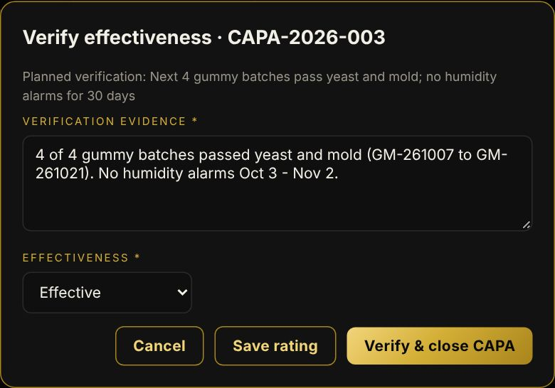
| Field | What to enter | Required |
|---|---|---|
| Verification evidence | What was checked and the result | Yes |
| Effectiveness | Effective, Partially effective or Ineffective | Yes |
Hendrix checks: "A CAPA closes only when it is verified Effective." Hendrix also needs the correction and the verification evidence before closing; Verify & close CAPA is greyed out until the correction is recorded. Only Full access can rate effectiveness or close a CAPA, and Hendrix stamps who verified it and when.
Review trends
Open the Trends tab. It shows deviations opened and CAPAs closed by month (last 12 months), and this year's deviations by category, source, department and priority. Click Print annual trend review to print a summary with all the counts, every deviation of the year and its root cause, and a "Reviewed by (name, signature, date)" box.
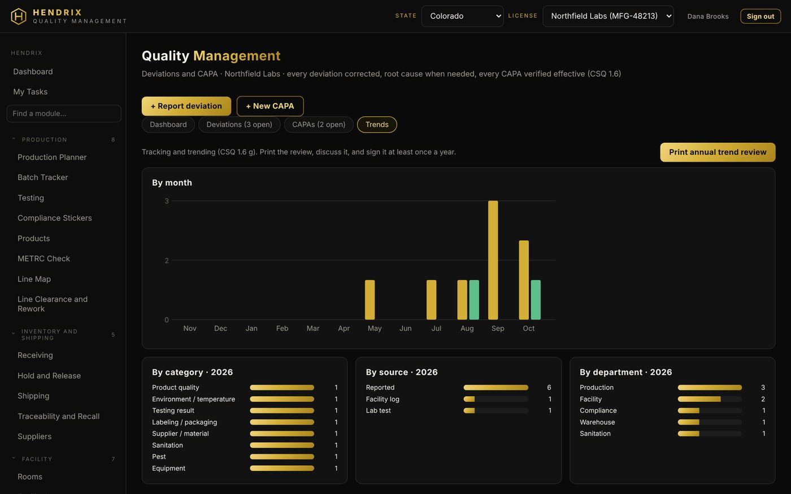
Tips
- Report first, investigate later. A deviation needs only a title and a description to be saved.
- Fill in the correction as soon as you take it. It is the first thing Hendrix checks at closing.
- The Standards (CSQ) page shows live QMS evidence on clause 1.6 (deviations in 12 months, CAPAs closed effective).
- The Dashboard card Deviations & CAPA shows open and overdue counts for the license.
Complaints
Complaints holds every consumer and dispensary complaint, product return, adverse event and piece of customer feedback, with the investigation, the response to the complainant and the link to deviations, batches and holds. Inspectors use it to see that every complaint was investigated by a named person, answered, and trended.
Understand it first
What it is. Every complaint, return, adverse event (someone felt unwell after using a product) and piece of customer feedback, with its investigation and the answer you gave.
Why we do it. Complaints are the only way you hear about problems after the product leaves the building. One complaint can be a fluke; three about the same batch are a signal. Regulators expect every complaint to be investigated by a named person and adverse events to be taken seriously and reported when the rules require it.
If it's skipped. A bad batch stays on shelves because nobody connected the complaints, and an adverse event goes unreported.
Example. Two dispensaries report cartridges that won't draw, both from batch CT-261003. The complaint is linked to the batch, the batch goes on hold, and a deviation is raised for the filling process.
Where: left menu → Complaints. Who: View can see complaints and log new complaints and feedback; Edit can also investigate, respond, edit details, raise deviations and close; Full can also reopen and cancel. CSQ: 1.7, 5.3
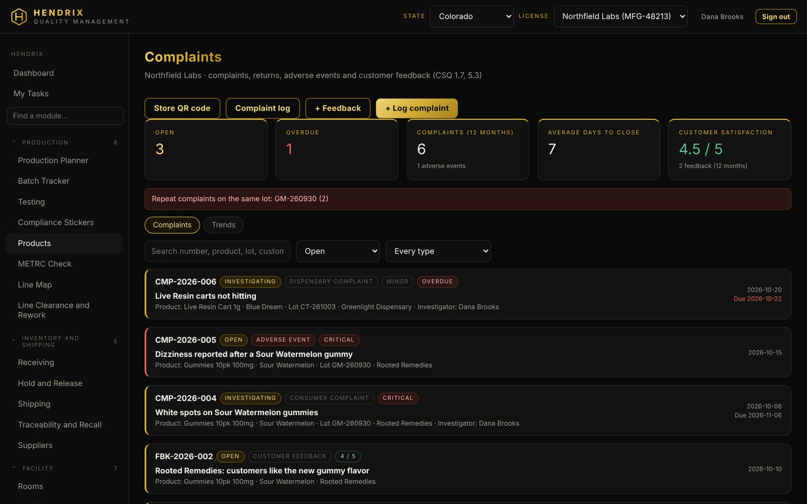
When to use it
| Situation | What you do in Hendrix |
|---|---|
| A customer calls about a harsh-tasting cart | + Log complaint, Type Consumer complaint, Category Taste / smell, pick the batch |
| A dispensary returns a case of leaking carts | + Log complaint, Type Product return or Dispensary complaint |
| Someone reports feeling unwell after a gummy | + Log complaint, Type Adverse event. Report it to the state regulator and record the date |
| A buyer says a new flavor sells well | + Feedback, pick the satisfaction rating |
| A complaint suggests the whole lot may be bad | Open the complaint → Put batch on hold |
| A complaint needs corrective action | Open the complaint → Raise deviation |
| Two complaints arrive on the same lot | Hendrix shows a red "Repeat complaints on the same lot" warning at the top |
| Inspector asks for the complaint log | Complaint log prints every complaint |
| You want dispensaries to report problems themselves | Print the Store complaint QR sign and give it to your dispensaries (see below) |
Read the Complaints page
Cards at the top show Open and Overdue complaints, Complaints (12 months) with the number of adverse events, Average days to close, and Customer satisfaction (average feedback rating over 12 months). Feedback does not count as a complaint in these numbers. A red banner lists any lot with more than one complaint in 12 months.
The Complaints tab lists records with search (number, product, lot, customer, complainant, tag), a status filter (Open by default, Every status, or one status) and a type filter. The Trends tab shows received and closed complaints by month and complaints by category, type, lot / batch and customer.
Log a complaint or feedback
- Click + Log complaint (or + Feedback, which opens the same form with Type set to Customer feedback).
- Fill in the form. If you pick a Batch, Hendrix fills the product and lot from it when you leave them blank.
- Click Log complaint (or Log feedback). Hendrix numbers it CMP-year-### (feedback: FBK-year-###) and opens it.
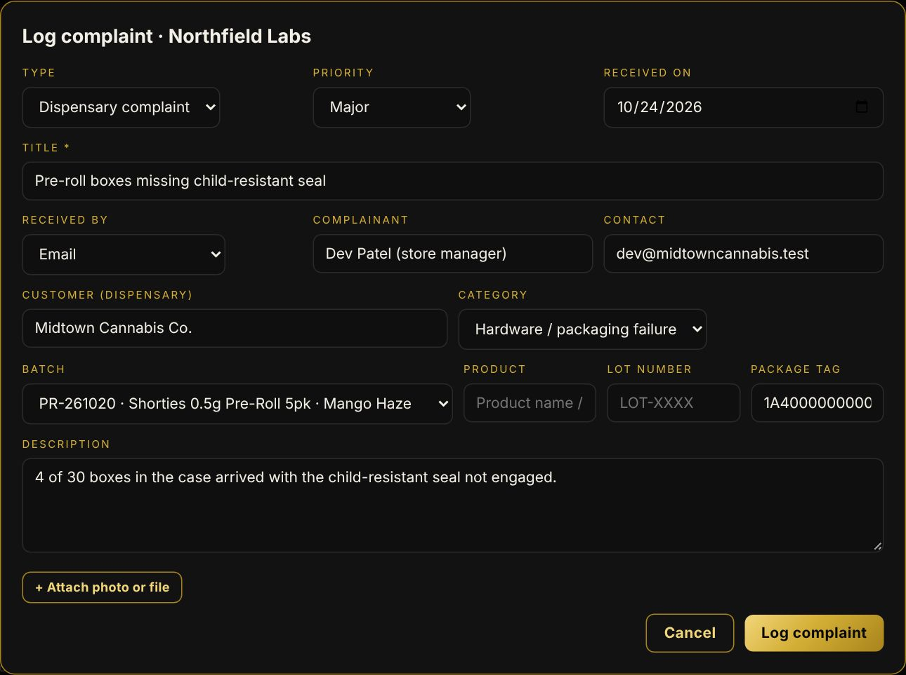
| Field | What to enter | Required |
|---|---|---|
| Type | Consumer complaint, Dispensary complaint, Product return, Adverse event or Customer feedback | Yes (defaults to Consumer complaint) |
| Priority | Critical, Major or Minor (not shown for feedback) | Yes (defaults to Minor) |
| Satisfaction | Feedback only: 5 Very happy … 1 Very unhappy | Yes, for feedback |
| Received on | Date received, not in the future | Yes (defaults to today) |
| Title | Short summary | Yes |
| Received by | Phone, Email, In person, Dispensary, Website / social media, State regulator or Other | Yes (defaults to Phone) |
| Complainant | Name, or anonymous | No |
| Contact | Phone or email | No |
| Customer (dispensary) | The dispensary | No |
| Category | Taste / smell, Potency / effect, Foreign matter, Mold / contamination, Hardware / packaging failure, Labeling, Leaking / damage, Adverse health effect, Delivery / service or Other (not shown for feedback) | No |
| Batch | Pick from this license's batches, or (unknown / not listed) | No |
| Product | Product name / SKU | No |
| Lot number | Lot | No |
| Package tag | The state package tag (1A4…) | No |
| Description | What the customer said | No |
| Attachments | + Attach photo or file | No |
When you pick Adverse event, Hendrix shows: "Adverse event: report it to the state regulator. It cannot be closed until the report date is recorded."
Hendrix checks: Hendrix will not save without a title, or feedback without a rating. The received date cannot be in the future. The batch must belong to the same license. The number, date logged and license can never be changed.
Investigate, respond and close
- Click the complaint to open it. The top card shows the received date and channel, complainant, customer, product, lot, tag, who logged it and any linked deviation.
- In Investigation (CSQ 1.7) fill in the fields below. The due date starts one month from today.
- Click Save and start investigating (the status becomes Investigating). Later saves use Save.
- If needed, click Raise deviation (opens a prefilled deviation and links it) or Put batch on hold (opens the hold form with the batch and source Complaint; needs Edit access to Hold and Release).
- When it is resolved and the complainant is answered, click Close.
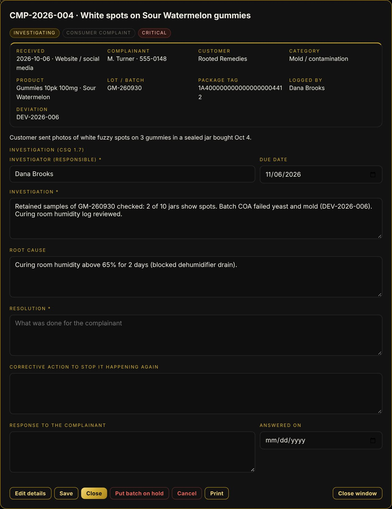
| Field | What to enter | Required |
|---|---|---|
| Investigator (responsible) | Who investigated | Yes, to close |
| Due date | When the investigation must be done | No (defaults to one month) |
| Investigation | What was checked: retained sample, batch record, COA, other complaints on the batch | Yes, to close |
| Root cause | Why it happened | No |
| Resolution | What was done for the complainant | Yes, to close |
| Corrective action to stop it happening again | The fix | No |
| Response to the complainant | What you told them | No |
| Answered on | Date you answered, not in the future | Yes, to close, when a contact or customer is recorded |
| Reported to the state regulator on | Adverse events only | Yes, to close an adverse event |
Other buttons: Edit details reopens the logging form; Print prints the complaint record; Cancel (Full) cancels with a reason; Reopen (Full) reopens a closed or cancelled complaint. Feedback records have no investigation section and close without these checks.
Hendrix checks: Hendrix will not close a complaint without an investigator ("Name who investigated the complaint (CSQ 1.7 a)."), the investigation, the resolution, and — when you have a contact or customer — the date the complainant was answered ("Record when the complainant was answered before closing (CSQ 1.7 a)."). "An adverse event must be reported to the state regulator before it is closed." A closed or cancelled complaint cannot be changed until someone with Full access reopens it. View users see the investigation fields greyed out. Complaints are never deleted.
Store complaints by QR code
Dispensaries can file a complaint themselves, without a Hendrix account. The Store complaint QR card at the top of Complaints has the license's QR code and link.
- Print QR sign prints a one-page sign: scan, tell us, send. Copy link lets you email the link to a buyer.
- The store fills in the store name, their name, a phone number or email, the METRC package tag (24 characters, starting with 1A, from the package label), the product, what is wrong, up to 3 photos, and ticks Someone got sick or hurt using this product when that happened.
- While they type the tag, Hendrix checks it against your shipments, tests and batches, and fills in the product when it finds it. If the tag isn't found, they must check the label or tick The tag is correct to send anyway.
- They get a complaint number on screen. The complaint arrives as an open Dispensary complaint (an Adverse event when someone got sick or hurt), ready to investigate like any other.
Why the METRC tag is required: the tag tells you exactly which package and batch the complaint is about. Without it, you can't trace the complaint to a batch, check for repeat complaints on the same lot, or decide whether to hold product.
Review trends and print the log
Open the Trends tab for the charts, and click Complaint log to print every complaint with its investigator, resolution, corrective action, deviation and status.
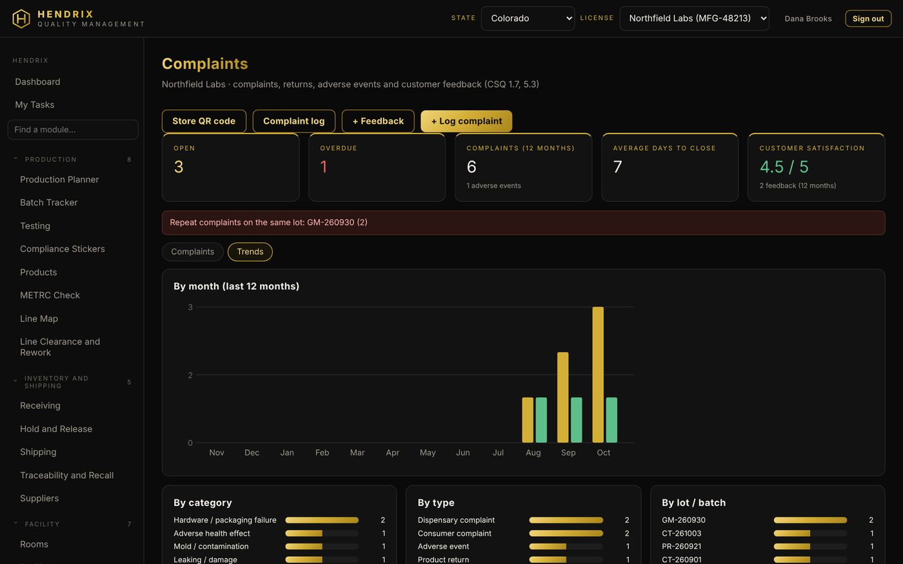
Tips
- Always link the batch. It makes the repeat-lot warning and the "By lot / batch" chart work, and lets you put the batch on hold in one click.
- Log dispensary praise as + Feedback: the satisfaction average is CSQ 5.3 evidence.
- Complaints can also be imported in bulk from Import (Excel / Sheets).
Internal Audits
Internal Audits holds your annual internal audit program: which CSQ clauses were audited in the last 12 months, each audit with its checklist and evidence, and every finding through to a verified correction. CSQ requires every applicable clause to be audited every year by someone who does not audit their own work.
Understand it first
What it is. Your own check of your own system: someone who doesn't do the work looks at a part of it, compares it with the SOP and the standard, and records what they find.
Why we do it. It's much better to find a gap yourself than to have an auditor or inspector find it. CSQ requires every applicable clause to be audited at least once a year, and auditors may not audit their own work, so the check is honest.
If it's skipped. Gaps are found for the first time by the certification auditor, when they cost the most.
Example. The internal auditor checks the pest control program, finds two bait stations missing from the map, and records a finding. It's corrected before the external audit.
Where: left menu → Internal Audits. Who: View can see audits; Edit can plan and run audits, fill in checklists, record findings, raise deviations and close findings; Full can also close audits, reopen audits and findings, and cancel audits. CSQ: 1.5
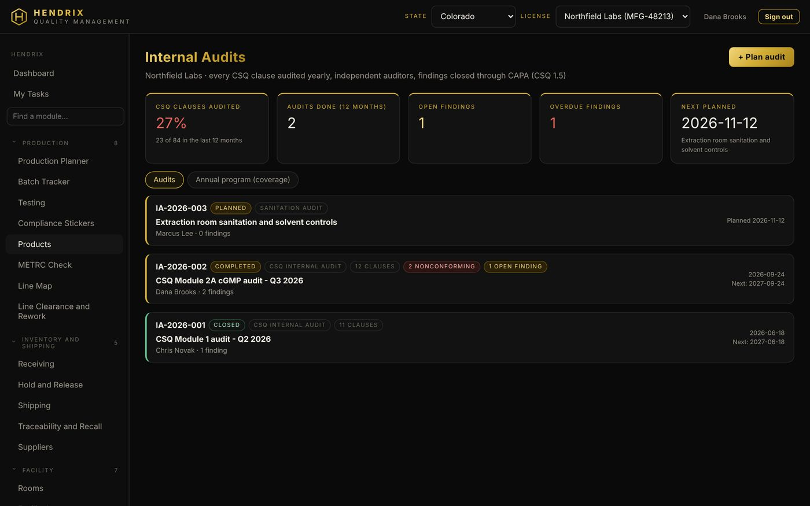
When to use it
| Situation | What you do in Hendrix |
|---|---|
| Start of year: plan the CSQ audits | Annual program (coverage) → Plan an audit of the N clauses not audited, or + Plan audit per module |
| Audit day | Open the audit → Start audit, then Edit / checklist to record results and evidence |
| A clause is nonconforming | Open the audit → + Finding (Hendrix suggests the clause) |
| A finding needs corrective action | On the finding → Raise deviation (CAPA) |
| The correction is done and checked | On the finding → Close finding, write how it was verified |
| Results presented at the managers meeting | In the audit, fill Share the results, then Close audit |
| Inspector asks for the audit report | Open the audit → Print report |
| A department audit (METRC, packaging, sanitation…) | + Plan audit, pick the audit type, write the scope |
Read the Internal Audits page
Cards show CSQ clauses audited (percent and count in the last 12 months), Audits done (12 months), Open findings, Overdue findings and Next planned audit. The Audits tab lists audits with status, type, number of clauses, nonconforming clauses and open findings.
The Annual program (coverage) tab lists every CSQ clause in scope for this license (the CSQ parts and level come from the license's standard on the Standards page; level 1 by default). It shows a progress bar per module and, per clause, the last audit date, result, audit number and auditor, or Not audited. Filter by Every clause, Not audited in 12 months or Nonconforming.
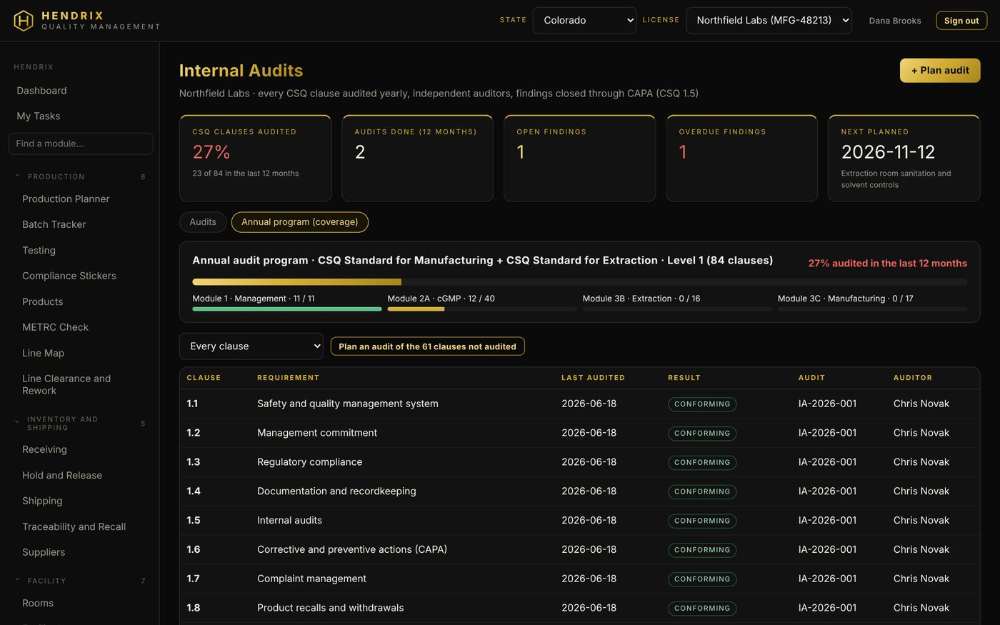
Plan an audit
- Click + Plan audit (Edit access).
- Fill in the details. Add clauses with the module buttons (for example + Module 2A · cGMP (34), which adds the clauses not yet on the list) or one at a time with + One clause.... Remove a clause with ×.
- Click Save audit. Hendrix numbers it IA-year-### and opens it with status Planned.
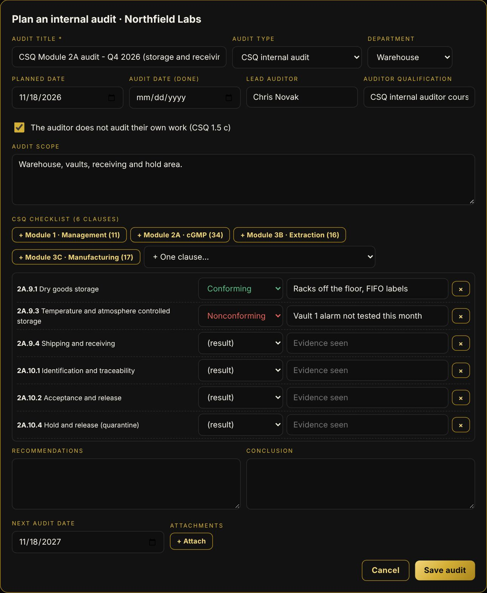
| Field | What to enter | Required |
|---|---|---|
| Audit title | Name of the audit | Yes |
| Audit type | CSQ internal audit, METRC Audit, Packaging Audit, Security Audit, Training Audit, Testing Audit, SOP Compliance Audit, Equipment Calibration Audit, Sanitation Audit, Full Facility Audit or Custom | Yes (defaults to CSQ internal audit) |
| Department | Same list as QMS | Yes (defaults to Compliance) |
| Planned date | When it is planned | No (defaults to today) |
| Audit date (done) | When it was done, not in the future | Yes, to complete |
| Lead auditor | Auditor name | Yes, to complete |
| Auditor qualification | For example "CSQ internal auditor course 2026" | Yes, to complete |
| The auditor does not audit their own work (CSQ 1.5 c) | Tick to confirm independence | Yes, to complete |
| Audit scope | Areas and processes reviewed | Clauses or scope needed to complete |
| CSQ checklist | Per clause: result (Conforming, Nonconforming, Observation, Not applicable) and Evidence seen | A result for every clause, to complete |
| Recommendations | Auditor recommendations | No |
| Conclusion | Overall conclusion | No |
| Next audit date | When to audit again | No |
| Attachments | + Attach | No |
Run and complete an audit
- Open the audit. Click Start audit (status In progress).
- Click Edit / checklist to record results and evidence, then Save.
- For each nonconforming clause click + Finding. Hendrix shows a red list of "Nonconforming clauses without a finding".
- Click Complete audit.
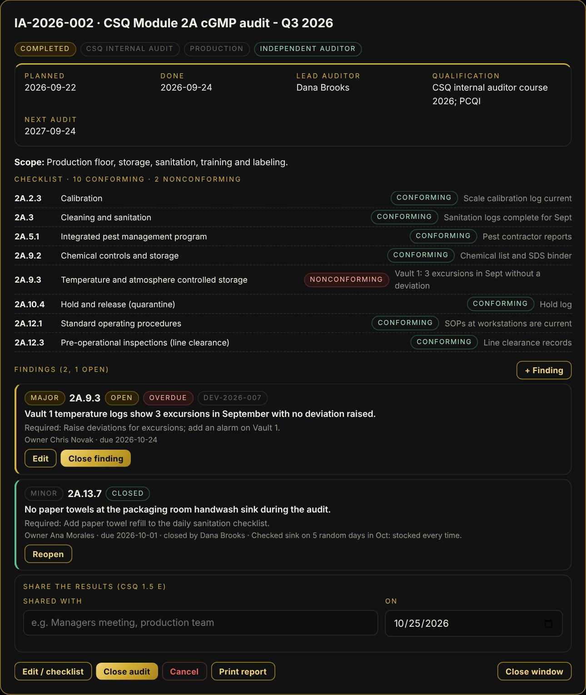
Hendrix checks: Hendrix will not complete an audit until it has the audit date (not in the future), the auditor and their qualification, the independence box ("Confirm the auditor does not audit their own work (CSQ 1.5 c)."), clauses or a scope, a result on every checklist clause, and "a finding for each nonconforming clause". The number and license cannot be changed.
Record and close a finding
Click + Finding in the audit (Edit access, while the audit is not closed or cancelled).
| Field | What to enter | Required |
|---|---|---|
| Clause | A clause from the checklist, or (general). Prefilled with the first nonconforming clause without a finding | No |
| Severity | Critical, Major, Minor or Observation | Yes (defaults to Minor) |
| Finding | What was found | Yes |
| Corrective action required | What must be done | No, but needed to close unless a deviation is linked (not for observations) |
| Owner | Who fixes it | No |
| Due date | Defaults to one month from today | No |
Click Save finding. On an open finding you can Edit, Raise deviation (CAPA) (not for observations; the deviation is linked to the finding) and Close finding. Closing asks "How the correction was verified as effective". A finding past its due date shows Overdue. Full access can Reopen a closed finding.
Hendrix checks: Hendrix will not close a finding without the verification text, without a corrective action or linked deviation (except observations), or while its linked deviation is still open ("Close deviation DEV-… first (corrective action process)."). Findings of a completed audit are never deleted.
Close the audit
- When the audit is Completed, the Share the results (CSQ 1.5 e) box appears (Full access). Enter Shared with (for example "Managers meeting") and On (date, not in the future).
- Click Close audit.
| Field | What to enter | Required |
|---|---|---|
| Shared with | Who the results were presented to | Yes, to close |
| On | Date shared | Yes, to close (defaults to today) |
Hendrix checks: "Only someone with Full access can close an audit." Every finding must be closed first ("Close every finding first (CSQ 1.5 f).") and the sharing must be recorded ("Record who the results were shared with and when (CSQ 1.5 e)."). A closed or cancelled audit cannot be changed until Full access reopens it. Cancel needs a reason.
Print report prints the audit with the checklist, every finding, its corrective action, deviation, owner, due date and verification.
Tips
- The quickest annual plan is the Plan an audit of the N clauses not audited button: it opens a new audit already holding every clause not audited in the last 12 months.
- Only Completed and Closed audits with an audit date count toward coverage.
- The Standards (CSQ) page shows this coverage as live evidence on clause 1.5.
SOPs
SOPs is your controlled document library: every Standard Operating Procedure is numbered, versioned, approved by someone with Full access, signed by the people who must follow it, and reviewed on schedule. Earlier versions are kept unchanged. This is the core of CSQ document control.
Understand it first
What it is. An SOP (standard operating procedure) is the written, approved way to do a task. In Hendrix each SOP has a number, a version, an approval and a list of people who have read and signed it.
Why we do it. If a task isn't written down, everyone does it their own way, and nobody can prove it was done right. Regulators and CSQ require written procedures for everything that affects product safety and quality, controlled so that only the current approved version is in use, and signed by the people who must follow it.
Your part. When an SOP is assigned to you, read it, ask about anything unclear, and sign it. Your signature says you understand it and will follow it. If the SOP doesn't match how the work is really done, tell your supervisor: then either the SOP or the practice must change.
If it's skipped. Old printouts get followed, new staff learn bad habits, and an inspector finds people doing a task differently from the SOP.
Example. SOP-PRD-014 (pre-roll filling) changes to add a weight check every 30 minutes. Version 2 is approved, the old version is kept as history, and every pre-roll tech must sign version 2.
Where: left menu → SOPs. Who: View can read published SOPs, sign them and download the PDF; Edit can also write and edit drafts (manually or with AI) and sees the signature progress; Full can also approve and publish, revise published SOPs, change their settings, archive and restore, see archived SOPs and delete drafts. CSQ: 1.1, 1.2, 1.4, 2A.12.1, 5.2; the procedures themselves are evidence for many process clauses (for example 1.9, 2A.4, 2A.13.3–2A.13.7).
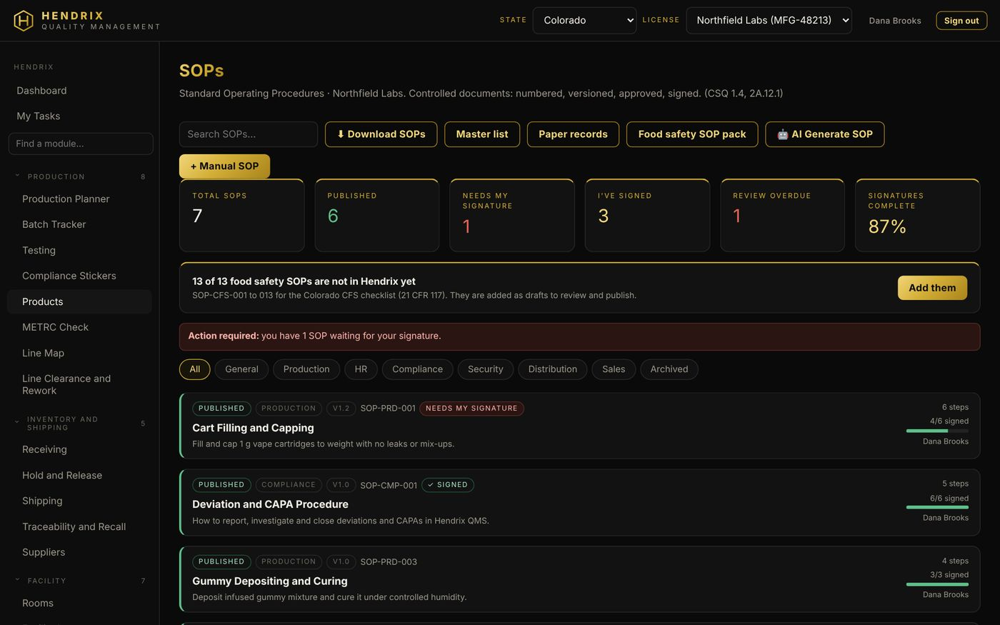
When to use it
| Situation | What you do in Hendrix |
|---|---|
| You need a new procedure and have the text | + Manual SOP, save as Draft |
| You need a first draft fast | 🤖 AI Generate SOP, review, Save as draft |
| A draft is ready to go live | Open it → ✓ Approve & publish (Full access) |
| A process changed | Open the published SOP → 🔄 Revise SOP, new version and reason |
| You are told to read a new SOP | Open it → 👍 I have read and understood this SOP, draw your signature |
| An SOP should only be signed by production staff | Settings (or the draft form) → Who must read and sign it? → By role |
| An SOP is no longer used | Open it → Archive (Full access) |
| Inspector asks for the document list | Master list prints every SOP with number, revision, dates, approver and signatures |
| You need a printed copy for the floor | Open it → 📄 Download PDF |
| An inspector wants the SOPs with who signed them | ⬇ Download SOPs → With acknowledgements, tick the SOPs |
| SOPs were signed on paper before they were in Hendrix | Paper records (Full access): the paper date, the SOPs and the people who signed |
| You make edibles or infused products and need the food safety SOPs | The banner offers the Food safety SOP pack: add the missing ones as drafts, review and publish |
Read the SOPs page
Cards show Total SOPs, Published, Needs my signature, I've signed, and for Edit access Review overdue and Signatures complete (percent of required signatures done). A red banner tells you how many SOPs are waiting for your signature. Folder tabs filter the list: All, General, Production, HR, Compliance, Security, Distribution, Sales, and Archived (Full access only). Each card shows status, folder, version, number, badges (Needs my signature, ✓ Signed, Review overdue), number of steps and signatures.
Write an SOP manually
- Click + Manual SOP (Edit access).
- Fill in the form. Click Suggest to get the next free number for the folder (for example SOP-PRD-004).
- Add steps with + Add step; remove one with ×. Attach flow charts or forms with + Attach file.
- Click Create SOP.
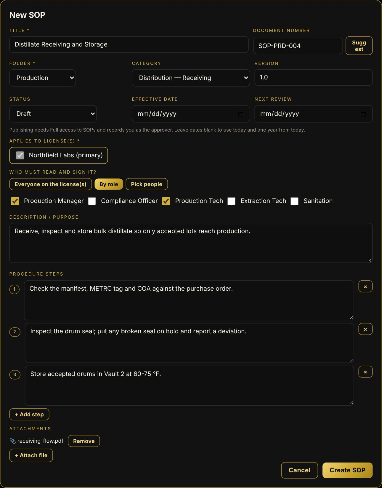
| Field | What to enter | Required |
|---|---|---|
| Title | SOP title | Yes |
| Document number | For example SOP-PRD-001. Suggest uses the folder code: GEN, PRD, HR, CMP, SEC, DST, SLS | No, but must be unique on the license |
| Folder | General, Production, HR, Compliance, Security, Distribution or Sales | Yes |
| Category | One of 20 categories (for example Production — Cart Department). Picking one moves a General SOP to the matching folder | No |
| Version | Defaults to 1.0 | Yes |
| Status | Draft, or Published (I approve it) (Full access only) | Yes |
| Effective date | Leave blank to use today when published | No |
| Next review | Leave blank to use one year after the effective date | No |
| Applies to license(s) | Tick the licenses in this state that use it; the current license is fixed | Yes |
| Who must read and sign it? | Everyone on the license(s), By role (tick roles) or Pick people | Yes (at least one role or person when you choose those) |
| Description / purpose | What the SOP is for | No |
| Procedure steps | One box per step | No |
| Attachments | Files | No |
Hendrix checks: Hendrix will not save without a title or at least one license, and will not accept By role or Pick people with nothing ticked. A number already used on the license is refused ("Document number … is already used under this license."). Only Full access can publish; Hendrix records you as the approver and fills the effective date and the next review (one year) when you leave them blank. Every license must be in the SOP's state.
Generate an SOP with AI
- Click 🤖 AI Generate SOP (Edit access). The first step shows the license and state; the AI uses this state's Rulebook entries and writes to cGMP / CSQ.
- Enter the SOP title, pick the Category / department, and optionally add a Reference document (.pdf, .txt or .md) and Instructions for the AI. You can instead load an SOP file exported from the generator; this jumps straight to review.
- Click Generate SOP with AI. Hendrix writes the purpose, scope and responsibilities, then the steps.
- Review everything on Review & Save: title, document number, purpose, scope and each step are editable. Critical steps carry a red Critical badge; regulatory notes show under the step.
- Click Save as draft. Someone with Full access reviews and publishes it.
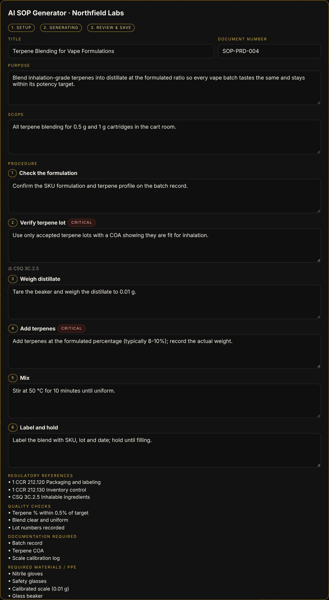
| Field | What to enter | Required |
|---|---|---|
| SOP title | Title | Yes |
| Category / department | One of the 20 categories; sets the folder | Yes |
| Reference document | Optional file the AI should use | No |
| Instructions for the AI | For example "include METRC steps; keep to 8 steps" | No |
Hendrix checks: An AI SOP is always saved as a draft. A placeholder number from the AI (with brackets) is dropped. If the AI is not set up, Hendrix says so instead of saving.
Approve and publish a draft
Open the draft. Edit access can click Edit draft to change anything. Full access clicks ✓ Approve & publish. Full access can also Delete draft (drafts are the only SOPs that can be deleted).
Read and sign an SOP
- Open a published SOP. If you must sign it and have not, you see 👍 I have read and understood this SOP.
- Read the procedure, click the button, and draw your signature in the box.
- Click ✓ Sign & acknowledge. The SOP shows "✓ You signed this version".
The Signatures · v… box shows the progress bar, who signed (with date) and who is still pending (Edit access sees the full list).
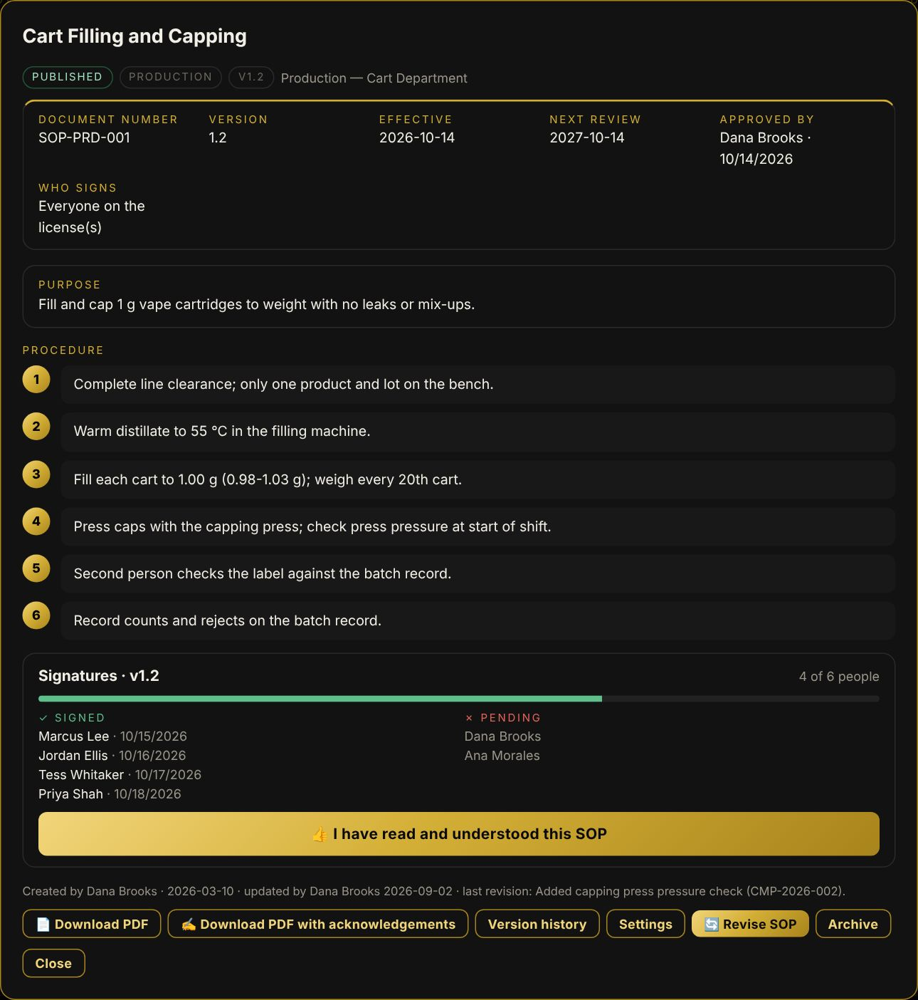
Hendrix checks: "Draw your signature first." Only a published SOP can be signed, only in your own name, once per version ("You already signed this version."). Signatures are permanent and cannot be changed or deleted. Hendrix records your name, roles and the time.
Revise a published SOP
- Open the SOP and click 🔄 Revise SOP (Full access).
- Choose Edit it myself, or Revise with AI and describe what needs to change, then click Revise with AI and review the result.
- Check the New version (Hendrix suggests the next one, for example 1.1 → 1.2) and write the Reason for revision.
- Edit the purpose and steps, then click Approve and publish v….
| Field | What to enter | Required |
|---|---|---|
| New version | Must differ from the current version | Yes |
| Reason for revision | What changed and why | Yes |
| Purpose / description | Updated purpose | No |
| Procedure | Updated steps (+ Add step, × to remove) | No |
| What needs to change? | AI mode only | Yes, to run the AI |
Hendrix checks: "Changing a published SOP is a revision: give it a new version number." A reason is required. Hendrix keeps the old version unchanged in Version history, publishes the new version with you as approver, resets the effective date to today and the next review to one year, and everyone must sign the new version. A published SOP can never go back to draft.
Version history lists every earlier version with who replaced it, when and why ("Replaced because: …"); click one to read its text.
Other SOP actions
- Settings (Full, published SOPs): change folder, licenses, who must sign and the next review date without creating a new version.
- Archive (Full): moves the SOP to Archived, visible only to Full access. Restore puts it back in its folder.
- 📄 Download PDF: a controlled-document PDF with number, revision, status, effective and review dates, approver, the procedure (critical steps marked "CRITICAL STEP — Verify and document before proceeding"), revision history, and the signatures for the current revision. Drafts print blank signature lines. The footer says printed copies are uncontrolled.
- Master list: prints the SOP master list with number, title, folder, revision, status, effective date, next review (overdue marked), approver and signatures.
- ⬇ Download SOPs: one PDF of many SOPs, with a contents page and each SOP on its own pages. Choose Without acknowledgements (to read, train with or hand out) or With acknowledgements (each SOP with everyone who signed its current revision and who hasn't yet, for inspections and audits), then tick the SOPs (All / None). Inside one SOP, ✍ Download PDF with acknowledgements does the same for that SOP.
- Paper records (Full): for SOPs that were in use and signed on paper before they were in Hendrix. Enter the Date on the paper and where the paper is kept, tick the SOPs and the people who signed the paper, and click Record paper records. Each SOP gets the paper date as its effective date (next review one year later), and each person shows as "signed on paper
" in the signature list, the PDF and the training matrix. Only tick people who really signed the paper; recently hired staff must sign in Hendrix. - Food safety SOP pack (manufacturing licenses): a banner offers the food safety SOPs that edible and infused product makers need (person in charge, access and visitors, sick policy, handwashing, cleaning and sanitizing, allergens, dress code, eating and drinking, warewashing, chemicals, water and hand sinks, receiving, the daily GMP walk). They're added as drafts, numbered SOP-CFS-001 and up: adapt each one to your facility, publish it and have staff sign it.
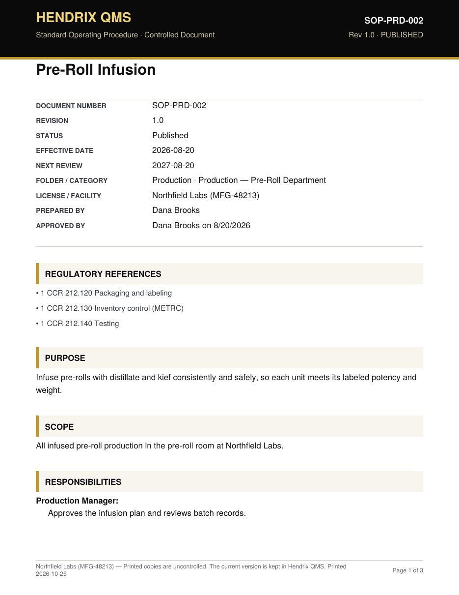
Tips
- Review overdue appears when a published SOP passes its next review date. Revise it (or update the review date in Settings) after the review.
- Use By role for department SOPs so the signature percentages are meaningful.
- An SOP can also count as training: see Courses in Training.
Training
Training is your training program and matrix: which courses each role must take, who is current, due or expired, who trained them and how they were assessed, plus online courses with graded quizzes. Inspectors use it to see that every person is trained before working, by qualified trainers, with refreshers on time.
Understand it first
What it is. The record of who has been trained on what, by whom, when, and how they showed they understood (for example a quiz), plus the plan of which courses each role needs and when refreshers are due.
Why we do it. People can only do a job safely if they've been trained for it. Food safety rules require people who make product to be qualified for their work, and CSQ requires training before working, refreshers and records. The record is the proof: training that isn't recorded didn't happen, as far as an inspector is concerned.
If it's skipped. Untrained people do critical work, and you can't prove anyone was trained.
Example. A new hire must complete GMP basics and food safety before starting on the line. The training matrix shows them as "due" until both are recorded with a passed quiz.
Where: left menu → Training. Who: View can see their own training (My training), the Courses list, and take online courses; Edit can also record training, and see the matrix, SOP signatures and records for the license; Full can also add and edit courses, write and publish online course content, and void records. CSQ: 2A.13.2, 1.3, 2A.13.1, 2A.13.4–2A.13.7, 1.9, 4A.2, 3B.1.2, 5.1.4, 5.2
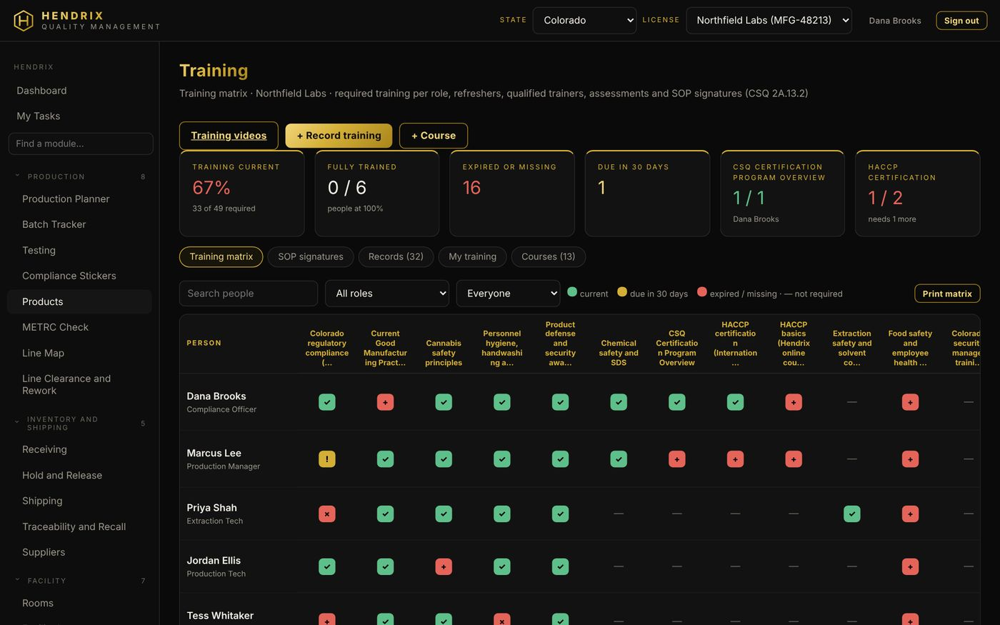
When to use it
| Situation | What you do in Hendrix |
|---|---|
| A new license starts using Hendrix | Open Training with Full access once: Hendrix creates the CSQ courses and draft online courses |
| Classroom cGMP session for six people | + Record training, tick the six people, attach the sign-in sheet |
| A new hire must learn hygiene rules | They open My training → Take course on Personnel hygiene, handwashing and PPE |
| A manager gets HACCP certified | + Record training on HACCP certification, method External certification, attach the certificate |
| A gap shows red in the matrix | Click the red cell to record that training for that person |
| Your state's rules change | Courses → |
| Someone wants to watch how a page works | Send them to the Training Center (hendrixqms.com/training): videos picked for their job |
| A job task is trained by reading an SOP | + Course, Met by signing an SOP |
| A record was entered for the wrong person | Records → Void, give the reason, then record it again |
| An inspector asks for one employee's training | Matrix → PDF on that person's row |
Starter courses and online content
The first time someone with Full access opens Training on a license with no courses, Hendrix creates the CSQ training courses:
| Course | Who must take it | Refresher | Notes |
|---|---|---|---|
| State regulatory compliance (state rules), for example "Colorado regulatory compliance" | Everyone | 12 months | Only for that state's licenses |
| Current Good Manufacturing Practices (cGMP) | Everyone | 12 months | Assessment required |
| Cannabis safety principles | Everyone | 12 months | Assessment required |
| Personnel hygiene, handwashing and PPE | Everyone | 12 months | |
| Product defense and security awareness | Everyone | 12 months | |
| Chemical safety and SDS | Manager roles and Sanitation roles (Optional when no such roles exist) | 12 months | |
| CSQ Certification Program Overview | Manager roles; at least 1 certified | One time | Outside certification, or the Hendrix online equivalent (9 lessons, 15 questions from the CSQ standard) |
| HACCP certification (International HACCP Alliance) | Manager roles; at least 2 certified | One time | Outside certification |
| HACCP basics (Hendrix online course) | Manager roles | 12 months | Online, 8 lessons and a 15-question quiz. Awareness and refresher; it does not replace the HACCP certificate |
| Extraction safety and solvent controls (manufacturing licenses) or cGACP (cultivation licenses) | Extraction roles (Optional otherwise) / Everyone | 12 months | Assessment required |
| Food safety and employee health (21 CFR 117) (manufacturing licenses) | Everyone | 12 months | Online, 8 lessons and a 15-question quiz: illness reporting, handwashing, dress code, eating and drinking, cleaning, chemicals, water, receiving |
| State security manager training (state rules) | Only roles named Security Manager | 12 months | Online: the state's facility security rules. Some states also require on-site and classroom hours; record those separately |
Manager roles are any role whose name contains manager, compliance, director, supervisor or owner. Hendrix also loads Hendrix starter lessons and quizzes, written from the CSQ standard, as drafts for six courses. A banner Online courses ready lists them: review them (Courses → Online course) and click Publish all so people can take them. Add missing CSQ starter courses on the Courses tab adds any starter course you do not have.
Read the Training page
Cards show Training current (percent of required courses current for everyone), Fully trained (people at 100%), Expired or missing, Due in 30 days, and one card per "at least N people" course (for example HACCP certification 1 / 2 — needs 1 more).
Tabs (Edit access): Training matrix, SOP signatures, Records, My training, Courses. View access sees My training and Courses only.
Training matrix: one row per person, one column per active course. Search people, filter by role, and filter Everyone, Has gaps or Fully trained.
| Cell | Meaning |
|---|---|
| ✓ green | Current |
| ! gold | Due: expires within 30 days |
| × red | Expired |
| + red | Missing (required, not done) |
| — | Not required for this person |
Edit users can click any cell that is not current to open Record training prefilled with that course and person. The % column is the share of that person's required courses that are current or due. PDF downloads the person's Employee Training Record (required courses with status and expiry, plus SOP signatures). Print matrix prints the matrix.
SOP signatures: one row per person, one column per published SOP; ✓ when they signed the current version, — when the SOP does not apply to them, and a signing rate per person.
Records: online quiz attempts (date, person, course, score, result, time, content version), training counted from your other licenses, and every training record with trainer, method, assessment, expiry, attachments and Void (Full).
My training: your required courses with status and Take course buttons, other online courses, your quiz attempts, SOPs waiting for your signature (with Open SOPs), and Download my training record (PDF).
Manage courses
The Courses tab lists each course with its topic, badges (Online · v1 · pass 80%, Online draft, Outside certification, Shared · all licenses or Shared · all Colorado licenses), who must take it, the refresher, and whether an assessment is required.
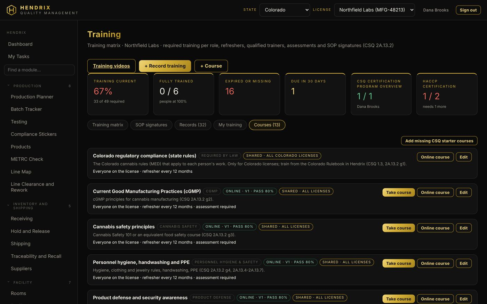
To add one, click + Course (Full access); to change one, click Edit. Click Save course.
| Field | What to enter | Required |
|---|---|---|
| Course name | Name, unique on the license | Yes |
| Topic | Required by law, cGMP, cGACP, Extraction, Cannabis safety, Personnel hygiene & safety, Product defense, Job-specific, Safety, CSQ program, HACCP or Other | Yes (defaults to Job-specific) |
| What it covers | Description | No |
| Who must take it | Everyone on the license, Chosen roles, At least N people, or Optional | Yes |
| How many people (at least) / Certified people needed (at least) | Shown for At least N people, and for CSQ program / HACCP courses by role | Yes, when shown (minimum 1) |
| Refresher every (months, 0 = once) | Months until retraining | Yes (defaults to 12) |
| Roles that must take it | Tick roles; + All manager roles ticks every manager role | Yes, for Chosen roles |
| Met by signing an SOP (read and sign training) | A published SOP, or (no - record it as training) | No |
| Assessment required | Tick when a pass/fail assessment is needed | No |
| Active | Untick to switch a course off (it leaves the matrix) | — |
| Same course at all my licenses | Share the course and its records across your licenses (not for SOP-linked courses) | No |
Hendrix checks: "A course with that name already exists." A course for chosen roles needs at least one role. An SOP-linked course must use an SOP that applies to this license. A course with training records cannot be deleted: switch it off instead.
Read-and-sign courses: when a course is met by signing an SOP, a person's signature on the SOP's current version counts as completing the course on the date they signed (expiry = signature date + refresher). When the SOP is revised, they must sign again.
Record training
- Click + Record training (Edit access), or click a gap in the matrix.
- Pick the course; Hendrix shows its refresher and whether an assessment is required.
- Tick everyone who was trained (Select all / Clear).
- Fill in the trainer and assessment, attach the certificate or sign-in sheet, and click Save record (or Save N records). Hendrix saves one record per person.
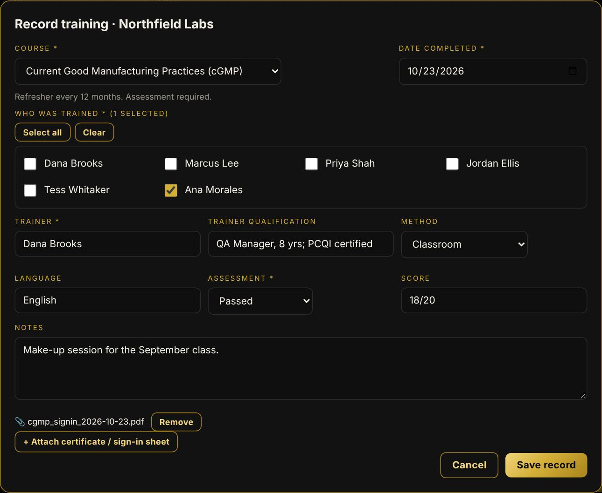
| Field | What to enter | Required |
|---|---|---|
| Course | Active course | Yes |
| Date completed | Not in the future | Yes (defaults to today) |
| Who was trained | One or more people on the license | Yes |
| Trainer | Name or provider | Yes |
| Trainer qualification | For example "QA Manager, 8 yrs; PCQI certified" | No |
| Method | Classroom, On the job, Online course, Read and sign, or External certification | Yes (defaults to Classroom) |
| Language | Language of the training | No (defaults to English) |
| Assessment | Passed or Failed; Not required when the course has no assessment | Yes, when the course requires an assessment |
| Score | For example 18/20 | No |
| Notes | Anything else | No |
| Attachments | + Attach certificate / sign-in sheet | No |
Hendrix checks: Hendrix will not save without the course, at least one person and a trainer ("Enter the trainer (CSQ: trainers must be qualified)."). "This course requires an assessment: choose Passed or Failed." The date cannot be in the future. Hendrix calculates the expiry date from the course refresher and records who entered it. A Failed record does not count as trained. A training record cannot be changed afterwards (only certificates and notes can be added): void it with a reason and record it again. Only Full access can void, and a voided record stays on file crossed out.
Take an online course
- Open My training (or Courses) and click Take course.
- Read each lesson and click Next lesson; the bar shows your progress. On the last lesson click Go to the quiz.
- Answer every question and click Submit answers.
- Hendrix shows your score. At or above the pass mark: "Passed - your training is recorded". Below it: "Not passed (pass mark …%)" with Read again and retake. Wrong answers are listed with an explanation.
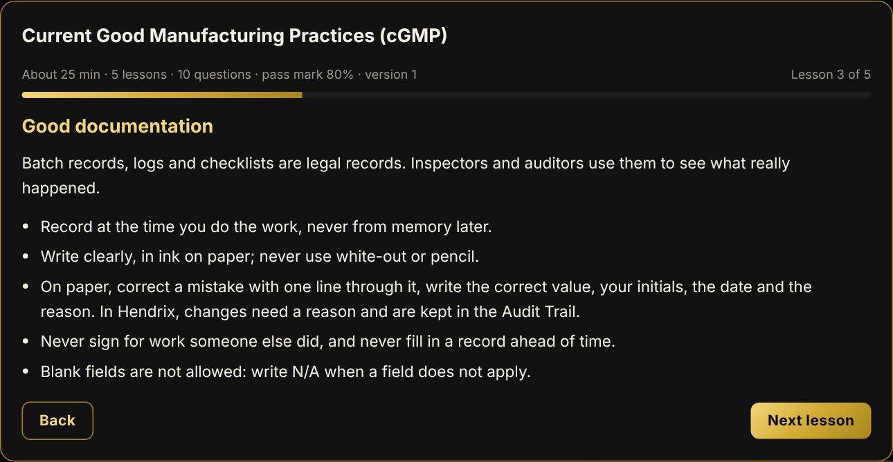
Hendrix checks: The quiz is graded by Hendrix on the server: the correct answers are never sent to your screen. You must answer every question. Every attempt is kept with the score, answers, time spent and content version. A pass records the training automatically: today's date, Online course, Passed, the score, and "Course content version N approved by …" as the trainer qualification. A failed attempt adds no training record. You can take a course only at a license you are assigned to.
Write or publish an online course
- Courses → Online course on the course (Full access; not offered for HACCP and CSQ Program Overview, which are outside certifications).
- Use Load Hendrix starter content (starter topics), or for the state regulatory course Draft from the state Rulebook with AI. The AI writes the lessons and quiz only from that state's Rulebook entries; read and correct them, because you are approving the legal content.
- Edit lessons (title and text: a blank line starts a paragraph, "- " makes a bullet, "## " makes a heading; ↑ moves a lesson up) and questions (2 to 6 options; tick the correct one; add the "Why" explanation shown after a wrong answer). Preview shows the course as a learner sees it.
- Click Save draft, or Publish online (Publish new version if it is already published).
| Field | What to enter | Required |
|---|---|---|
| Pass mark % | 50 to 100 | Yes (defaults to 80) |
| Minutes (about) | Expected time | Yes (defaults to 15) |
| Source of the content | Where the content came from, for example "Written by QA from SOP-PRD-001" | No |
| Lessons | Title and text | At least one, to publish |
| Quiz | Question, options, correct answer, why | At least one, to publish |
Hendrix checks: Hendrix will not publish without at least one lesson and one question, each question with text and at least two filled options, and a correct answer for every question. Publishing makes the assessment required. Every change to published content creates a new content version, stamped with who published it. Only Full access can change content or the answers. If the state Rulebook is empty, the AI draft is refused ("The … Rulebook is empty. Add the state rules first; the course is written from them.").
The Training Center
The Training Center is a separate page at hendrixqms.com/training with short narrated videos on how to use Hendrix: getting started, facility logs and QR codes, the visitor log, the Line Map, receiving to release, the cultivation map, chemicals and SDS, taking training, the SOP creator and the audit trail. It also has this user manual, to read online or download as a PDF.
- Open hendrixqms.com/training (or Training videos at the top of the Training page).
- Enter your company address (the word after hendrixqms.com/), your Hendrix email and password, and your authenticator code if you use two-step sign-in.
- Picked for your role shows the videos for your job title. All your videos shows every video for the areas you have access to. A bar shows how many you've watched.
Watching a video is learning, not a training record. Training that counts for an inspector is recorded in Training (a course you passed or a session someone recorded).
Training shared across licenses
The CSQ starter courses are shared across all your licenses in both states; the state regulatory course is shared across all licenses of the same state; a custom course is shared when you tick Same course at all my licenses. For a shared course:
- A person's valid training at one license counts at the others. It appears in the matrix and on the Records tab under Counted from your other licenses, showing where it was done. The record itself stays at the license where it was done.
- One state's law training does not count in another state.
- Publishing new online content at one license updates the course at every license that shares it where you have Full access. A new license's copy starts from the latest published version.
Tips
- There is no separate training kiosk: people take online courses from My training under their own login.
- Check the HACCP and CSQ Certification Program Overview cards: red means you have fewer certified people than required.
- The Standards (CSQ) page shows live training evidence on clause 2A.13.2.
Chapter 5
HACCP and the management system
HACCP plans and CCP monitoring (CSQ Level 2) and the Level 3 management tools: risk, change control, org chart, objectives, management review and verification.
These seven modules hold your food safety plan and the top-level management system: the HACCP plans and their records, the risk register, change control, the org chart, the quality policy and objectives, the management review and the verification schedule. Together they are the evidence for CSQ Module 4A (Level 2) and Module 5 (Level 3).
Everything here belongs to the license picked at the top of the screen. Records are never deleted. Where something can be undone, Hendrix asks for a reason and keeps it in the Audit Trail.
HACCP
HACCP holds your HACCP team, one plan per product or process (product description, process flow, hazard analysis, CCPs with critical limits), CCP monitoring records and HACCP verification. An inspector uses it to see that you follow the 12 Codex steps, that only complete and validated plans are in use, and that every CCP check is recorded and reviewed by a second person.
Understand it first
What it is. HACCP (Hazard Analysis and Critical Control Points) is a way of keeping product safe by finding what could make it unsafe and controlling it at the right step. A hazard is anything that could hurt a consumer: biological (mold, bacteria), chemical (pesticides, residual solvent, cleaning chemicals) or physical (glass, metal). A critical control point (CCP) is a step where you can stop a hazard, and must. A critical limit is the number that must be met at that step, for example "residual solvent below the state limit" or "oven at 240 °F for 40 minutes".
Why we do it. Testing the finished product can't catch everything. HACCP builds safety into the process itself: you control the hazard at the step where it happens, check it every time, and act right away when a limit is missed. It's the method food safety inspectors expect, and CSQ requires it.
Your part. If you do CCP checks, record every check when you do it, with the real number. If a reading is outside the limit, follow the corrective action in the plan and report it. A second person verifies the records.
If it's skipped. A hazard gets through a step nobody was watching, and you have no proof the step was ever under control.
Example. At the decarboxylation step, the CCP is oven time and temperature. The tech records 240 °F for 40 minutes on every run. One run shows 225 °F; the batch is held, the corrective action is followed and QA verifies the record.
Where: left menu → HACCP. Who: View can see plans, records and the team and print plans. Edit can draft plans, record CCP checks, verify other people's checks and record verifications. Full can also validate, activate, revise and retire plans, manage the HACCP team and void records. CSQ: 4A.1, 4A.2, 4A.3, 4A.4, 4A.5, 4A.6, 4A.7, 4A.8, 4A.9, 4A.10, 4A.11
The counters at the top show: Active plans (and how many are in draft), HACCP certified (certified team members, out of the 2 needed), Out of limits (30 days), Records to verify (CCP checks not yet reviewed by a second person) and Reanalysis due (active plans whose yearly reanalysis is late). The tabs are Plans, CCP monitoring, Verification and HACCP team.
When to use it
| Situation | What you do in Hendrix |
|---|---|
| You are setting up HACCP for the first time | HACCP team tab → + Member for each member; make sure a leader and a backup are certified. Then + HACCP plan. |
| You need a plan for gummies, cartridges, extraction or pre-rolls | + HACCP plan → pick the batch type → Start from a draft for this batch type, then check every step against your process. |
| Distillate is weighed for a gummy batch (a CCP) | + CCP check (or CCP check on the batch card in the Batch Tracker) → record the measured value. |
| A water activity reading is above the critical limit | + CCP check → Within the critical limit? = No → record the corrective action and what happened to the product. Then Deviation on the record. |
| A supervisor reviews yesterday's CCP records | CCP monitoring tab → filter Not verified yet → Verify on each record. |
| The aw meter is checked against a standard | Verification tab → + Verification → Kind: Monitoring equipment calibration check. |
| The yearly HACCP reanalysis is done | Verification tab → + Verification → Kind: Yearly reanalysis of the whole plan, pick the plan. |
| A process change affects an active plan | Plans tab → Revise, update the plan, validate it again and Activate plan. |
| A product line is discontinued | Plans tab → Retire and give the reason. |
| A CCP record was entered against the wrong batch | CCP monitoring tab → Void with a reason, then record it again. |
Build the HACCP team
- Open the HACCP team tab and click + Member (Full access).
- Pick the person, or leave "(not a Hendrix user)" and type the name.
- Set the role and department.
- Tick HACCP certified for anyone who holds an International HACCP Alliance approved certificate, and enter the course, the date or a file.
- Click Save.
| Field | What to enter | Required |
|---|---|---|
| Person | A Hendrix user with access to this license, or "(not a Hendrix user)" | No |
| Name | The person's name (filled in when you pick a user) | Yes |
| Role | Team leader, Backup or Member | Yes (default Member) |
| Department | e.g. Quality, sanitation, maintenance, management | No |
| HACCP certified (International HACCP Alliance approved course) | Tick if certified | No |
| Course / provider | The course and who ran it | One of course, date or file, if certified |
| Certified on | Certificate date | One of course, date or file, if certified |
| Certificate | Upload the certificate | One of course, date or file, if certified |
| On the team | Untick to take someone off the team (edit only) | No |
Hendrix checks: Only Full access can add, change or remove team members. A certified member needs a course, a date or a file: "Enter the certificate (provider, date or file)." No plan can be validated or activated until at least two active team members are certified (one person and a backup, CSQ 4A.2).
Create a HACCP plan
- Click + HACCP plan.
- Enter the Plan name and pick the batch type the plan Covers.
- For gummies, cartridges, ethanol or BHO extraction, and pre-rolls (also infused flower, moon rocks, snow caps), click Start from a draft for this batch type. Hendrix fills in a starting flow, hazards and CCPs. Treat it as a starting point: your team must check every step, limit and control against your own process and state rules.
- Work through the five tabs below. The box Still needed before validation lists what is missing.
- Click Save draft at any time. When the plan is complete, Full access clicks Validate or goes straight to Activate plan.
Tab 1. Product (CSQ 4A.3)
| Field | What to enter | Required |
|---|---|---|
| Plan name | e.g. Gummies, Cartridges, BHO extraction | Yes |
| Covers batch type | The Batch Tracker batch type the plan covers, or "(no batch link)" | No |
| Product name(s) | The finished products | No |
| Important safety characteristics (aw, pH, cannabinoids...) | e.g. THC per piece, water activity, pH | No |
| Ingredients | Every ingredient | Yes, to validate |
| Allergens | Allergens present, or "None" | Yes, to validate |
| Packaging material | e.g. child-resistant opaque pouch | Yes, to validate |
| Intended use | e.g. adult use by consumers 21+ as labeled | Yes, to validate |
| Target market (consumers) | e.g. adults 21+ through licensed dispensaries | No |
| Shelf life / date | e.g. 12 months from the batch date | No |
| Labeling instructions | e.g. state warnings, THC per serving, batch number | No |
| Storage and distribution | e.g. cool, dry place | Yes, to validate |
Tab 2. Process flow (CSQ 4A.4). Add every input, step, outsourced step, rework, end product and waste, in order. For each row enter the step name, pick its type (Input (material / packaging), Process step, Outsourced step, Rework, End product, Waste / by-product) and tick CCP where a hazard is controlled at that step. Use the arrows to reorder and × to remove (removing a step also removes its hazards and CCP). Click + Step to add a row. Hendrix draws the flow diagram below the list: inputs on the left, waste and rework on the right, CCP steps highlighted.
Tab 3. Hazard analysis (CSQ 4A.5). For every step, click + Hazard and enter the type (Biological, Chemical, Physical, Allergen), the hazard, its cause and the Control measure (required). Tick Significant for hazards that need a CCP. If a step has no hazards, tick No hazards reasonably expected.
Tab 4. CCPs (CSQ 4A.6 to 4A.9). Ticking CCP on a flow step adds a CCP here.
| Field | What to enter | Required |
|---|---|---|
| CCP name | e.g. CCP 2 Water activity | Yes |
| At step | The flow step | Yes |
| Critical limit (measurable) | e.g. aw ≤ 0.85; residual butane < 5000 ppm | Yes, to validate |
| Monitoring: what and how | What is measured and how | Yes, to validate |
| Frequency | e.g. Every batch | Yes, to validate |
| Who | Who does the check | No |
| Corrective action (bring under control, handle product) | What to do when the limit is missed | Yes, to validate |
| Verification | How the CCP is verified | Yes, to validate |
Tab 5. Validation (CSQ 4A.10). Enter How the plan was validated (studies, test results, scientific references, equipment validation) and upload the evidence under Validation evidence.
Hendrix checks: Only Full access can validate or activate a plan. Before it does, Hendrix checks the plan is complete and will not let you continue if: - the product description is missing ingredients, allergens, packaging, intended use or storage; - the flow has fewer than 2 rows ("Draw the process flow (at least the inputs and the steps)."); - a step has no hazards and is not marked "no hazards reasonably expected"; - a hazard has no control measure; - there are significant hazards but no CCP; - a CCP is missing its critical limit, monitoring, frequency, corrective action or verification; - fewer than two team members are certified; - the validation is blank ("Record how the control measures and critical limits were validated (studies, tests, references).").
Activating gives the plan its next version number and records who approved it and when. An active plan is frozen: "An active plan cannot be edited. Click "Revise" to start a new version." Changing the flow, hazards, CCPs or description of a validated plan puts it back to draft. Plans are numbered HP-001, HP-002… per license by Hendrix.
Revise or retire a plan
- Revise (Full, active plans): Hendrix asks you to confirm, then puts the plan back to Draft and clears the validation. Validate and activate it again; it becomes the next version.
- Retire (Full, validated or active plans): enter Why is the plan retired? and click Retire. The plan stays on file, crossed out.
- Print gives the full plan: team, product description, flow diagram, hazard analysis, CCP summary and validation.
Hendrix checks: Only Full access can revise or retire, and retiring needs a reason. A plan only moves draft → validated → active (or retired).
Record a CCP check
- Click + CCP check (shown when there is an active plan), or CCP check on a batch card in the Batch Tracker.
- Pick the plan, the CCP and the batch. The critical limit and monitoring method are shown.
- Enter the measured value and who checked it.
- If the value is outside the limit, choose No - deviation and fill in the corrective action and what happened to the product.
- Click Record.
| Field | What to enter | Required |
|---|---|---|
| HACCP plan | An active plan (shown with its version) | Yes |
| CCP | A CCP in that plan | Yes |
| Batch | A batch of the batch type the plan covers, or "(no batch)" | No |
| Measured value | e.g. aw 0.78; 12.1 g; 6 h at 110 °F, -29 inHg | Yes |
| Within the critical limit? | Yes, or No - deviation | Yes |
| Checked by | Who did the check (your name by default) | Yes |
| Corrective action taken | What was done (the plan's corrective action is shown as a hint) | Yes, if out of limits |
| Product | Held, Reworked, Destroyed, Released after evaluation | Yes, if out of limits |
Hendrix checks: Checks are recorded only against an active plan and a CCP in it. An out-of-limit check needs both the corrective action and the product decision: "Out of the critical limit: record the corrective action." Each record keeps the plan version it was checked against. A record cannot be changed afterwards: "A monitoring record cannot be changed. Void it and record it again." Only Full access can void, with a reason.
Review (verify) CCP records
On the CCP monitoring tab, filter by All checks, Out of limits or Not verified yet. Click Verify on a record to sign it as reviewed. On an out-of-limit record, click Deviation to raise a deviation that is linked to the check.
Hendrix checks: "Records are verified by someone other than the person who did the check." The person who checked or recorded it cannot verify it. A verified record cannot be verified again. The Batch Tracker card shows CCP x/y (CCPs passed for that batch) and "· deviation" when a check failed.
Record HACCP verification
- Open the Verification tab and click + Verification.
- Fill in the form and click Record.
| Field | What to enter | Required |
|---|---|---|
| Kind | Monitoring records review, Yearly reanalysis of the whole plan, Re-validation after a change, Monitoring equipment calibration check, Other verification | Yes |
| Plan | A plan, or "(whole HACCP system)" | No |
| Date | The date it was done (not in the future) | Yes |
| Done by | Who did it | Yes |
| What was checked and found | Findings | Yes |
| Result | The HACCP system is followed and controls the hazards, or Changes needed (revise the plan / raise a deviation) | Yes |
| Files | Reports, photos | No |
Hendrix checks: A yearly reanalysis recorded against a plan resets the plan's Reanalysis due date to one year later (CSQ 4A.11). The due date is one year after the latest of plan activation and reanalysis. Verification records cannot be changed; only Full access can void them, with a reason.
Tips
- The Dashboard HACCP card shows active plans and, for the last 30 days, CCP checks, out-of-limit checks and records waiting for review.
- A change in Change Control that ticks "HACCP plan / flow diagram" cannot be implemented until the plan has been reviewed (see Change Control).
- Raise a deviation from every out-of-limit check so the root cause goes through CAPA.
Risk Register
The risk register lists every risk to product safety, quality and the business: the hazard, its root cause, the owner, the rating, the actions and a routine review. Inspectors use it as your risk management procedure (CSQ 5.1.6) and as your threat, fraud, allergen, supplier and site assessments.
Understand it first
What it is. A list of things that could go wrong (risks), how likely and how bad each one is, who owns it, and what you're doing about it.
Why we do it. You can't control everything equally, so you put your effort where the risk is highest. CSQ expects a written risk process, including food defense (deliberate tampering), food fraud (fake or diluted materials), allergens and supplier risks. Reviewing risks regularly catches the ones that grow.
If it's skipped. Effort goes to whatever is loudest, and the big risks nobody wrote down stay uncontrolled.
Example. "Single supplier for vape hardware" is rated high. The action is to approve a second supplier. The risk is reviewed every 180 days until it's lowered.
Where: left menu → Risk Register. Who: View can see and print the register. Edit can add, edit, review and mark risks controlled, re-open them and add the suggested risks. Full can also close risks. CSQ: 5.1.6, 1.9, 1.10, 2A.12.4, 2A.12.7, 3A.1.2
The page shows Risks on the register, High or critical (current rating 10 or more), Reviews overdue and Fixes past target. The heat map counts risks by their current rating (severity up, likelihood across). Click a cell to show only those risks; click Clear heat map filter to go back. By category lists the count per category and flags categories that CSQ asks for when none is assessed (Allergens 2A.12.7, Product defense 1.9, Fraud 1.10, Materials and suppliers 2A.12.4, and Site 3A.1.2 for cultivation). Filter the list by status (Open and controlled, Open, Controlled, Closed, All) and category. Click a risk's name to see its details and review history.
How ratings work: score = likelihood × severity (1 to 5 each). 1–4 Low, 5–9 Medium, 10–14 High, 15–25 Critical. Once a risk is controlled, its current rating is the residual rating (the table shows "was" with the old score).
When to use it
| Situation | What you do in Hendrix |
|---|---|
| You are starting the register | Suggested risks → untick any that do not apply → enter the owner → Add selected. Then check each rating against your facility. |
| A deviation shows glass near the filling line | + Risk → Found through: Deviation, enter the deviation number. |
| You do the yearly product defense (threat) assessment | + Risk → Category: Product defense (threats). |
| The permanent fix is in place and shown to work | Controlled on the risk row → record the action, the verification and the residual rating. |
| A risk is due for its scheduled review | Review on the row → rate it today, say whether the controls work. |
| A controlled risk's controls fail | Review → untick Controls are in place and working and describe what will be done. The risk re-opens. |
| The process behind a risk no longer exists | Close (Full) → give the reason. |
| An inspector asks for the register | Print register. |
Add the suggested risks
Click Suggested risks. Hendrix offers 12 manufacturing risks (or 10 cultivation risks on a cultivation license). Risks already on the register by the same title are greyed out. Enter Owner for these risks and click Add selected. High and critical suggestions get an immediate action ("Review the controls with the team" unless one is suggested) and a target date 90 days out.
Add or edit a risk
- Click + Risk (or Edit on a row).
- Fill in the form. The rating badge updates as you pick likelihood and severity.
- Click Save.
| Field | What to enter | Required |
|---|---|---|
| Risk | Short title, e.g. Residual solvent above the limit | Yes |
| Category | Product safety, Quality, Allergens, Product defense (threats), Fraud vulnerability, Materials and suppliers, Site and neighboring land, Facility and equipment, People and training, Regulatory and compliance, Business continuity, Other | Yes (default Product safety) |
| Hazard - what could go wrong | The hazard | Yes |
| Root cause - why it could happen | The cause | Yes |
| Owner | Who owns the risk (you, by default) | Yes |
| Area / process / product | Where it applies | No |
| Found through | Risk assessment, Deviation, Complaint, Audit / inspection, HACCP, Facility test, Supplier, Change, Other, plus a reference such as DEV-2026-004 | No |
| Likelihood | 1 Rare to 5 Almost certain | Yes (default 3) |
| Severity | 1 Negligible to 5 Severe (serious harm, license at risk) | Yes (default 3) |
| Existing controls | Controls in place today | No |
| Immediate action | What is done now | Yes, if the score is 10 or more |
| Permanent action (planned) | The permanent fix | No |
| Permanent fix by | Target date | Yes, if the score is 10 or more |
| Review every | Month, 3 months, 6 months, Year, 2 years. Set for you from the rating (critical 3 months, high 6 months, others a year) until you change it | Yes |
| CAPA | Link an open CAPA | No |
| Files (assessment, photos, test results) | Upload | No |
| Notes | Anything else | No |
Hendrix checks: "Enter the risk, the hazard, its root cause and the owner." An open risk scoring 10 or more is blocked without both: "A high or critical risk (score 16) needs an immediate action and a target date for the permanent fix." Risks are numbered RK-001, RK-002… per license. The next review date is always the last review date plus "Review every"; editing a risk does not move the last review date. Risks are never deleted.
Mark a risk controlled
Click Controlled on an open risk.
| Field | What to enter | Required |
|---|---|---|
| Permanent action taken | What was done | Yes |
| Verification - how you know it works | e.g. 3 batches tested ND after the new purge | Yes |
| Verified by | Who verified it | Yes |
| Verified on | Date (not in the future) | Yes |
| Likelihood / Severity (residual rating) | The rating with the permanent controls in place | Yes |
Hendrix checks: "Record how the permanent action was verified, by whom and when." A residual rating is required. Once controlled, the verification cannot be changed: "The verification is recorded. Re-open the risk to change it." Re-open (Edit) puts a controlled risk back to Open.
Review a risk
Click Review on any risk that is not closed.
| Field | What to enter | Required |
|---|---|---|
| Reviewed on | Date (not in the future) | Yes |
| Reviewed by | Who reviewed it | Yes |
| Likelihood / Severity | The rating today | Yes |
| Controls are in place and working | Tick if they work | — |
| Notes | What was looked at; if the controls do not work, what will be done | Yes, if the controls do not work |
Hendrix checks: "The controls are not effective: describe what will be done." Each review is kept and cannot be changed or deleted. A review moves the next review date. On an open risk it updates the rating; on a controlled risk it updates the residual rating, and if the controls are not working the risk goes back to Open.
Close a risk
Click Close (Full), enter Why the risk no longer applies and click Close risk. The risk leaves the live list (choose the "Closed" filter to see it).
Hendrix checks: "Only Full access can close a risk." A reason is required. A closed risk cannot be changed (except its files and notes), and cannot be reviewed.
Tips
- The Dashboard Risk and change card shows high or critical risks and overdue reviews first.
- Start from the suggested risks, but change every rating and control to fit your facility before an inspector sees it.
- The Verification Schedule picks up the date of your latest risk review automatically.
Change Control
Change control makes sure every change to a product, process, piece of equipment, material, supplier, SOP or the team is assessed, approved, prepared for (training, trial run, HACCP review, notifications) and checked afterwards. Inspectors look for it under CSQ 5.1.5 and 5.4.1, and for HACCP revalidation after significant changes.
Understand it first
What it is. A controlled way to make a change: describe it, check what it affects, get it approved, prepare (training, SOP updates, a trial run), make it, then check it worked.
Why we do it. Many quality failures come from changes nobody thought through: a new supplier, a new machine, a changed recipe. Change control makes sure the effects on safety, quality, training, SOPs, HACCP and compliance are thought through before the change, not after.
If it's skipped. A "small" change breaks something nobody linked to it, for example a new cleaning chemical that leaves residue.
Example. Switching to a new gummy mold supplier is requested as a change. The check finds the HACCP plan and the cleaning SOP must be reviewed. Both are updated and staff trained before the first run with the new molds.
Where: left menu → Change Control. Who: View can see and print changes. Edit can request changes, edit them while requested, and record the work. Full can also approve, reject, cancel and close changes. CSQ: 5.1.5, 5.4.1, 4A.10, 4A.11
A change moves Requested → Approved → Implemented → Closed. It can also be Rejected (while requested) or Cancelled (once approved). The counters show changes Waiting for approval, In progress, Effectiveness check due (implemented, not closed; red after 60 days) and Changes (12 months). The Next step column tells you what is needed; for an approved change it lists exactly what still blocks it.
When to use it
| Situation | What you do in Hendrix |
|---|---|
| You want to add a new gummy flavor | + Change → Type: New or changed product / formulation. A trial run is ticked for you. |
| New silicone molds will replace the starch trays | + Change → Type: Equipment; tick the impacts (HACCP, training, equipment). |
| An SOP needs a new step | + Change → Type: Document / SOP; tick SOPs and records and pick the SOP. |
| A requested change is ready for sign-off | Approve (Full) → review the summary → add a note → Approve. |
| A change is not acceptable | Reject (Full) with a reason. |
| The team is putting an approved change in place | Work → tick actions done, training, trial result, HACCP review, notification date → Save progress. |
| Everything is done | Work → Mark implemented. |
| A month after the change, you check it worked | Close (Full) → describe the effectiveness check. |
Request a change
- Click + Change.
- Fill in the change, the impact assessment and the plan.
- Click Request change.
| Field | What to enter | Required |
|---|---|---|
| Change | Short title | Yes |
| Type | New or changed product / formulation, Process, Equipment, Facility / layout, Material, ingredient or supplier, People / organization, Document / SOP, Regulatory / license, IT / system, Other | Yes (default Process) |
| What changes | Description | Yes |
| Why | The reason | Yes |
| Product(s) | Products affected | No |
| Requested by | You, by default | No |
| Requested on | Date (not in the future) | Yes (default today) |
| Wanted by | Target date | No |
| Impact assessment | Tick everything affected: HACCP plan / flow diagram, Allergens, Labels and packaging, Product specs / formulation, SOPs and records, Training, Equipment (validation / calibration), Suppliers and materials, Testing, Facility, sanitation, pest control, License / regulator, Customers, METRC / track and trace, or "Nothing else is affected" | Yes, at least one tick |
| How it affects them | Notes | No |
| Risk of the change | Low, Medium, High | Yes (default Medium) |
| Risk register | Link a risk that is not closed | No |
| SOPs to update / HACCP plans affected / Training courses | Shown when SOPs, HACCP or Training is ticked; pick the records | No |
| Training needed before the change is used | Tick, and say who is trained on what | No |
| Trial run needed to prove it (CSQ 5.4.1) | Tick, and say what the trial must show | No |
| Who must be told | State regulator, CSQ certification body, Customers / dispensaries, Staff affected | No |
| Plan - actions to put the change in place | Each action with who and a due date (+ Action) | Needed before it can be implemented |
| Files | Upload | No |
Some boxes tick themselves: ticking the Training impact ticks "Training needed"; License / regulator ticks "State regulator"; Customers ticks "Customers / dispensaries"; choosing the type New or changed product / formulation ticks the trial run. Ticking "Nothing else is affected" clears the other impacts.
Hendrix checks: "Enter the change, what changes and why." "Complete the impact assessment (tick what the change affects, or "Nothing else is affected")." Changes are numbered CC-2026-001, CC-2026-002… per license and year. Edit is only offered while the change is requested.
Approve, reject or cancel
Click Approve (Full) on a requested change. The approval screen summarizes the change, what it affects, what must happen Before use and the plan. Add an Approval note (optional) and click Approve.
Reject (requested) and Cancel (approved) ask for a reason.
Hendrix checks: "Only Full access (a qualified person) can approve a change." Hendrix records who approved it and when. After approval, what the change is cannot be rewritten: "The change was approved as written. Cancel it and request a new change to change what it is." The training and trial requirements are also fixed at approval. Only a requested change can be rejected, an implemented change cannot be cancelled, and both need a reason.
Put the change in place
Click Work on an approved change.
| Field | What to enter | Required |
|---|---|---|
| Actions | Tick each action as done (Hendrix records the date); add or edit actions | All done, to implement |
| Training given before use | Tick when done (only if training is needed) | Yes, to implement, if needed |
| Trial run | Not run yet, Passed, Failed (only if a trial is needed) | Passed, to implement, if needed |
| Trial result / batch | Reference | No |
| HACCP plan reviewed and revalidated for this change | Tick (only if HACCP is affected) | Yes, to implement, if HACCP is affected |
| Told on | Date the regulator, certification body or customers were told (only if they must be told) | Yes, to implement, if needed |
| Who was told / reference | Name or reference | No |
| Files (evidence) | Upload | No |
| Implemented on | Date (not in the future; default today) | Yes |
Click Save progress to keep your work, or Mark implemented when the list under "Before it can be implemented" is empty.
Hendrix checks: Mark implemented stays greyed out while anything blocks it, and even if you try another way Hendrix will not let you implement it: "List the actions that put the change in place." "2 action(s) are not done yet." "Training must be given before the change is used." "A trial run must pass before the change is implemented." "HACCP is affected: review (and revalidate) the HACCP plan before the change is implemented." "Record when the regulator / certification body / customers were told." After implementation the actions are on record and cannot be changed.
Close a change
Click Close (Full) on an implemented change, answer Did the change work as planned? What was checked, and click Close change.
Hendrix checks: "Record the effectiveness check (did the change work as planned?)." Closed, rejected and cancelled changes cannot be changed (except files and notes). Change records are never deleted. Print on any row gives the full change record.
Tips
- Request the change before you change anything on the floor; the approval date is your evidence the change was reviewed first.
- If a change affects HACCP, revise the plan in HACCP, then tick the HACCP review here.
Org Chart
The org chart shows every position, who holds it, who it reports to, their responsibilities, their backup and the safety, quality and CSQ roles they hold. Inspectors use it for CSQ 5.1.1 and to check that senior management, a quality lead and a quality backup are named.
Understand it first
What it is. Who holds each position, who they report to, what they're responsible for and who backs them up.
Why we do it. Someone must always be in charge of food safety and quality, even when the usual person is off. Auditors check that senior management, a quality lead and a backup are named, and that people know who to go to.
If it's skipped. When the QA lead is away, nobody knows who can decide a hold.
Example. The Person in charge for the shift is named, with a backup. When the PIC is out sick, the backup signs the GMP hygiene walk.
Where: left menu → Org Chart. Who: View can see and print the chart. Edit can add and edit positions. Full can also remove positions. CSQ: 5.1.1
The counters show Positions (and how many are vacant), With responsibilities and Key CSQ roles (Senior management, Quality / CSQ lead and Quality backup, each held by a named person). Hendrix draws the chart; boxes with a gold border hold a safety or quality role, and vacant positions show "Vacant" in red. Below the chart, Safety, quality and CSQ roles lists who holds each role and flags a missing key role as Not assigned. The table lists every position under its manager.
When to use it
| Situation | What you do in Hendrix |
|---|---|
| You are drawing the chart for the first time | + Position for the owner or general manager, then + Under on each row to add who reports to them. |
| A new QA technician is hired | Edit on the QA Technician position → enter the person. |
| A position is open | Leave Person blank; it shows as Vacant. |
| The quality backup is not named | Edit the right position → tick Quality backup. |
| A manager now reports to someone else | Edit → change Reports to. |
| A position is no longer needed | Move anyone who reports to it first, then Remove (Full). |
| An inspector asks for the org chart | Print org chart. |
Add or edit a position
- Click + Position, + Under on a row (pre-selects the manager), or Edit.
- Fill in the form and click Save.
| Field | What to enter | Required |
|---|---|---|
| Position | e.g. Quality Manager | Yes |
| Person | Who holds it (suggests Hendrix users); leave blank if vacant | No |
| Department | e.g. Quality | No |
| Reports to | Another position, or "(top of the chart)" | No |
| Backup | Who covers the position | No |
| Order | Sort order among positions with the same manager | No |
| Functions and responsibilities | What the position is responsible for, including safety, quality and CSQ duties | No (counted on the page) |
| Safety, quality and CSQ roles | Tick any of: Senior management, Quality / CSQ lead, Quality backup, HACCP team leader, Food safety / product defense, Recall coordinator, Regulatory contact (state / METRC), Training coordinator, Internal auditor, Sanitation lead, Maintenance / calibration | No |
Hendrix checks: "Reports to" never offers the position itself or anyone below it, and Hendrix will not let you create a loop: "That reporting line would loop back to this position." Remove (Full, after a confirmation) is blocked while people report to the position: "People report to this position. Move them to another position first." Every add, change of person, change of reporting line and removal is in the Audit Trail.
Tips
- Print org chart prints the drawing and a table of every position with its responsibilities, roles and backup.
Quality Objectives
This page links your quality policy and tracks measurable quality objectives (KPIs) with targets, owners and a result for every month or quarter. Most KPIs are counted straight from Hendrix records. Inspectors use it for CSQ 1.2, 5.1.2 and 5.1.4.
Understand it first
What it is. Measurable goals for quality, for example "deviations closed within 30 days" or "zero failed lab tests", with a target, an owner and a result each period.
Why we do it. "Good quality" means nothing unless you measure it. Objectives turn the quality policy into numbers you track, so you can see whether things get better or worse. CSQ asks for measurable objectives that are monitored.
If it's skipped. You can't show whether your quality system works, and slow decline goes unnoticed.
Example. The objective "95% of logs on time" shows 88% in March. The Production Manager finds that the weekend shift has no one assigned to logs, and fixes the schedule.
Where: left menu → Quality Objectives. Who: View can see the board and print it. Edit can add and edit objectives and record results. Full can also link the quality policy and mark objectives achieved or dropped. CSQ: 1.2, 5.1.2, 5.1.4
At the top is the Quality policy (a linked SOP, with its status). The counters show Active objectives, On target and Off target (by the latest result) and Results due (objectives with no result for last month or last quarter). Each card shows the latest value, the target, a bar chart of the last 6 periods (green met, red missed, dashed line at the target), the owner, and the action recorded for a missed target.
When to use it
| Situation | What you do in Hendrix |
|---|---|
| You are setting objectives for the first time | Suggested objectives → set targets → enter the owner → Add selected. |
| The quality policy SOP is published | Link the policy SOP (Full) → pick the SOP → say how it is shared. |
| A new month starts | Click Record |
| A KPI missed its target | Record the result and fill in Action to get back on target. |
| You track something Hendrix cannot count (e.g. on-time delivery) | + Objective → Measured by: Entered by hand. |
| A result was entered wrong | Record result → pick the period → change the value → Correct result. |
| An objective was reached | Achieved (Full) → say what was achieved. |
| An objective no longer makes sense | Drop (Full) → say why. |
| You share the KPIs with staff | Print KPI board. |
Link the quality policy
Write the safety, quality and compliance policy as an SOP (signed by senior management and everyone it applies to), then click Link the policy SOP (or Change).
| Field | What to enter | Required |
|---|---|---|
| Policy SOP | An SOP used at this license | No |
| How it is shared with staff | e.g. posted in the break room, signed by all staff, reviewed every year | No |
Hendrix checks: "Only Full access can set the quality policy." "That SOP is not used at this license." Signatures for each version of the policy come from the SOP records.
Add an objective
Click + Objective (or Suggested objectives when you have none yet). The suggested set has 8 objectives, each counted from Hendrix: CAPAs closed on time, Deviations per month, Complaints per quarter, Batches line cleared before production, CCP checks within critical limits, Batch tests passed first time, Facility tests passed, Risk reviews on time. You only see suggestions for modules you can view.
| Field | What to enter | Required |
|---|---|---|
| Objective | e.g. CAPAs closed on time | Yes |
| Category | Food safety, Quality, Compliance, Customers, People and training, Efficiency | Yes (default Quality) |
| Measured by | Entered by hand, or counted from Hendrix: CAPAs closed on time, Deviations recorded, Complaints received, Batches with a line clearance, CCP checks within limits, Batch tests passed, Facility tests passed, Risk reviews on time (today). Picking a counted measure sets the unit and direction | Yes |
| Target | A number | Yes |
| Unit | %, count, days… | No |
| Good is | At or above target, or At or below target | Yes |
| How often | Monthly or Quarterly | Yes |
| Owner | Who owns it (you, by default) | Yes |
| From | Start date | Yes (default today) |
| Reach by | Due date (not before the start) | No |
| Why it matters (link to the quality policy) | Link to the policy | No |
| Plan to reach it | The plan | No |
Hendrix checks: "Enter the objective, a number for the target and the owner." "Every objective needs an owner." "The due date is before the start." Objectives are numbered OBJ-001… per license. A change of target, direction or measure is recorded in the Audit Trail as "Objective target changed". Objectives are never deleted.
Record a result
Click Record
| Field | What to enter | Required |
|---|---|---|
| Period | One of the last 12 months or 6 quarters (default: last month or last quarter); "(recorded)" marks periods that already have a result | Yes |
| Value | The value. For counted measures Hendrix fills it in; Get from Hendrix counts it again and shows how (e.g. "3 of 4 CAPAs closed on time") | Yes |
| Comment | Filled with the count detail for counted measures | No |
| Action to get back on target | What will be done | Yes, if the target was missed |
Hendrix checks: Hendrix decides whether the target was met, from the value, the target and "Good is". "The target was missed: record the action that will be taken." There is one result per objective per period; recording again for the same period corrects it (the button reads Correct result). A monthly objective only takes monthly periods and a quarterly one only quarters. Results are marked as counted by Hendrix when you keep the counted value. Results are never deleted.
Mark achieved or drop
Click Achieved or Drop (Full), enter what was achieved or why it is dropped, and confirm. The objective leaves the board; click Show achieved and dropped to see it again.
Hendrix checks: "Only Full access can mark an objective achieved or dropped." A note is required. Once achieved or dropped, the objective cannot be changed or given new results.
Tips
- The Dashboard Quality objectives card shows how many objectives are on target and how many results are due.
- The management review fills its KPI input from this page.
Management Review
Senior management reviews the whole quality system at least once a year. Hendrix fills in the facts for each input from your records, you record the discussion, decisions and actions, Full access signs it as held, and you track the actions and who the minutes were shared with. This is the evidence for CSQ 5.1.3.
Understand it first
What it is. A meeting, at least once a year, where senior management looks at how the whole quality system is doing, using the facts, and decides what to change.
Why we do it. Quality depends on management decisions: money, people, equipment, priorities. The review makes management look at the evidence (deviations, complaints, audits, objectives, training) and commit to actions. CSQ requires it, with minutes and follow-up.
If it's skipped. Problems that need management decisions never reach management.
Example. The review shows most deviations come from one old filler. Management approves buying a new one; the action is tracked until it arrives.
Where: left menu → Management Review. Who: View can see and print reviews. Edit can prepare reviews, save drafts and update actions and sharing after signing. Full can also sign a review as held and cancel drafts. CSQ: 5.1.3, 1.2
The counters show the Last review (red if more than a year ago or never), Next review due (red when overdue), Open actions from signed reviews and whether the last review's Minutes shared. Each row shows the period, chair, status (Draft, Held · signed, Cancelled), actions done out of total, and when the minutes were shared.
When to use it
| Situation | What you do in Hendrix |
|---|---|
| The yearly management review meeting is coming up | + Management review → check the period → Hendrix fills the facts → Save draft to prepare. |
| You are in the meeting | Continue on the draft → type the discussion for each input, the decisions and the actions. |
| The meeting is over | Sign as held (Full). |
| An action from the review is done | Follow-up → tick it. |
| The minutes are sent to the managers | Follow-up → enter who and when. |
| A draft review will not take place | Cancel (Full) with a reason. |
| An inspector asks for the minutes | Print. |
Prepare and sign a management review
- Click + Management review. Hendrix fills in the facts for the period at once.
- Check Period from and Period to (by default from the day after the last review's period to today) and click Fill from Hendrix again if you change them.
- Enter the chair and attendees.
- For each input, check the facts (left box) and type the discussion and conclusions (right box). Inputs marked * are required.
- Enter the decisions, resource needs and actions, and set the next review date.
- Click Save draft, or (Full) Sign as held.
| Field | What to enter | Required |
|---|---|---|
| Meeting date | Date of the meeting (not in the future) | Yes |
| Period from / Period to | The period reviewed | No |
| Chair (senior management) | You, by default | Yes, to sign |
| Attendees | Names and roles | Yes, to sign |
| Actions from the last review * | Facts: open and done actions from the last signed review. Discussion | Discussion required to sign |
| Complaints and customer feedback * | Facts: complaints by category, closed, open today | Discussion required to sign |
| Internal, external and regulatory audits * | Facts: audits in the period, open findings and overdue ones | Discussion required to sign |
| Deviations and corrective actions (CAPA) * | Facts: deviations by category, critical ones, CAPAs closed, verified effective, open, overdue | Discussion required to sign |
| Risks and opportunities * | Facts: risks on the register, high / critical, controlled, reviews overdue, new | Discussion required to sign |
| HACCP and food safety performance | Facts: active plans, CCP checks, out of limits, verified | No |
| Quality objectives and KPIs | Facts: on target, off target, not measured | No |
| CSQ conformance * | Facts: the CSQ self-assessment counts | Discussion required to sign |
| Changes that could affect the system * | Facts: changes requested, implemented, open, stopped | Discussion required to sign |
| Supplier performance | Facts: suppliers by status, reviews overdue | No |
| Verification results | Facts: scheduled verifications, overdue, recorded, with issues | No |
| Training and competence | Type the facts and discussion | No |
| Resources (people, equipment, facility, budget) * | Type the facts and discussion | Discussion required to sign |
| Decisions and conclusions (is the system suitable, adequate and effective?) | The conclusions | Yes, to sign |
| Resource needs | Resources decided | No |
| Actions | Each action with who and due date (+ Action) | No |
| Next review (within 12 months) | Default one year from today | Yes, to sign |
| Files (agenda, sign-in sheet, slides) | Upload | No |
The facts are only counted for modules you can view. You can edit or add to any fact before signing.
Hendrix checks: "Only Full access (senior management) can sign the management review." Hendrix will not sign until: the chair and attendees are entered ("Enter the chair and who attended."); every required input has a discussion ("Discuss every required input before signing: …"); the decisions are recorded ("Record the decisions and conclusions."); the meeting date is not in the future; and the next review is after the meeting and within 12 months ("Set the next review within 12 months of this one."). Hendrix records who signed and when. Reviews are numbered MR-2026-001… per license and year.
Follow up after the review
Click Follow-up on a signed review. Tick actions as they are done (Hendrix records the date), and enter Minutes shared with and Shared on (not in the future). Click Save.
Hendrix checks: "The minutes are signed. Only actions, sharing and files can be updated." "Actions decided in the review cannot be added or removed after it is signed." A held review cannot be cancelled or re-opened. Only a draft can be cancelled, by Full access with a reason. Reviews are never deleted.
Tips
- The Dashboard Review and verification card turns red when there is no management review, when the next review is overdue, or when verifications are overdue.
- The next review's "Actions from the last review" is filled from this review's actions, so keep the follow-up current.
Verification Schedule
The verification schedule lists every verification activity: what is verified, how, by whom, how often and where it is recorded. For most activities Hendrix takes the last date straight from the linked records, so overdue verifications show up on their own. This is the evidence for CSQ 5.1.8.
Understand it first
What it is. The calendar of checks that confirm your controls work: someone other than the person doing the work checks the records, the equipment or the result.
Why we do it. Monitoring is doing the check; verification is checking that the monitoring is done right and that it works. Without verification, a log can be filled in perfectly and still be wrong.
If it's skipped. Monitoring mistakes go unseen for months.
Example. Every week QA reviews the CCP records and signs them. The schedule shows the review as overdue if a week is missed.
Where: left menu → Verification Schedule. Who: View can see the schedule, the history and print it. Edit can add and edit activities, add the suggested schedule and record verifications. Full can also turn activities off and on and void records. CSQ: 5.1.8, 4A.11
The counters show Scheduled activities (and how many are linked to Hendrix records), Overdue or never done, Due in 7 days and Recorded here (12 months) (and how many had issues). For each activity, Last done is the latest of the linked records and the verifications recorded here; "from …" shows it came from a linked record. Next due is the last date plus the frequency: green, amber within 7 days, red "Overdue
When to use it
| Situation | What you do in Hendrix |
|---|---|
| You are setting up the schedule | Suggested schedule → untick what does not apply → enter who does them → Add selected. |
| The supervisor signs the sanitation log | Nothing here: the date comes from the Sanitation log. |
| QA checks labels against the batch COA | Record on "Labels checked against the batch". |
| The check finds a problem | Record → Result: Issues found → findings and action taken. Then History → Deviation. |
| You add your own verification (e.g. scale daily check review) | + Activity. |
| An activity no longer applies | Turn off (Full). |
| An inspector asks for the verification procedure | Print schedule. |
Add the suggested schedule
Click Suggested schedule (shown while the schedule is empty). It offers 13 activities: sanitation records reviewed (7 days), CCP monitoring records reviewed (7 days), HACCP plan verification (90 days), scale and equipment calibration (30 days), line clearance verified (30 days), facility air and water tests reviewed (365 days), risk register review (90 days), KPI review (90 days), internal audit (365 days), management review (365 days), supplier performance review (365 days), labels checked against the batch (30 days, recorded here) and pest control service reports reviewed (30 days, recorded here). Activities linked to modules you cannot view are left out. Enter Who does them and click Add selected; change the person on each activity later.
Add or edit an activity
Click + Activity or Edit.
| Field | What to enter | Required |
|---|---|---|
| What is verified | e.g. CCP monitoring records reviewed | Yes |
| How | The method | No |
| Who | Who does it (you, by default) | Yes |
| Every (days) | Frequency in days (1 to 1095) | Yes (default 30) |
| Last date comes from | Recorded here, or a linked record: Sanitation log signed by a verifier, CCP records verified (HACCP), HACCP verification / reanalysis, Calibrations (Equipment), Internal audits, Facility tests, Line clearances verified by a supervisor, Risk reviews, KPI results, Management review, Supplier reviews | Yes (default Recorded here) |
| Recorded where | Where the record is kept | No |
| CSQ clause | e.g. 4A.8 | No |
Hendrix checks: "Enter the activity and who does it." Activities are numbered VS-001… per license. They are never deleted: "Turn the activity off instead." Only Full access can turn an activity off.
Record a verification
Click Record on the activity (it is highlighted when overdue).
| Field | What to enter | Required |
|---|---|---|
| Date | The date it was done (not in the future) | Yes (default today) |
| By | Who did it | Yes |
| Result | No issues, or Issues found | Yes |
| Findings | What was found | Yes, if issues were found |
| Action taken | What was done | Yes, if issues were found |
| Files | Upload | No |
Hendrix checks: "Describe the issues found and the action taken." "The date cannot be in the future." A record cannot be changed afterwards: void it and record it again. Only Full access can void, with a reason. Recording moves the activity's next due date.
See the history
Click History on an activity to see every verification recorded here (and the latest date from the linked records). On a record with issues, click Deviation to raise a linked deviation. Void (Full) crosses a record out with a reason.
Tips
- Most activities need no typing here at all: keep the linked logs and records current and the schedule keeps itself.
- The management review fills its "Verification results" input from this schedule.
Chapter 6
Suppliers, materials and traceability
From approved supplier to accepted lot, holds and releases, shipments, traces and recalls.
This group follows a material from the supplier who makes it to the customer who buys the finished product. You approve the supplier first. Then you receive lots from that supplier into quarantine and accept them, and record which batch uses each lot. Anything suspect goes on hold. Finished batches ship to customers. Because every step is linked, Hendrix can trace any lot, batch or package tag one step back and one step forward in seconds, and you can prove it with a timed mock recall.
Every record in these modules belongs to the license picked at the top of the screen. You can't see, use or ship another license's lots, holds or shipments.
Suppliers
The approved supplier list for the license. It records what each supplier must meet, its credentials, who approved it and on what basis, and its regular reviews. Inspectors use it to check that you buy only from suppliers you have qualified and that you keep watching them.
Understand it first
What it is. The approved supplier list: companies you are allowed to buy from, why they were approved and when they're next reviewed.
Why we do it. Product is only as safe as what goes into it. A cone, a cartridge, a terpene or a sugar from an unknown source can bring in heavy metals, pesticides or allergens. Approving suppliers before buying and reviewing them regularly keeps unsafe materials out.
If it's skipped. Someone orders from a cheaper source with no checks, and a contaminated material ends up in product.
Example. A new terpene supplier sends its COA, food-grade statement and allergen statement. QA reviews them and approves the supplier for terpenes only.
Where: left menu → Suppliers. Who: View can see the list, details and reviews, and print the approved supplier list. Edit can add suppliers and edit their details, credentials and files. Full can approve, record reviews, suspend, disqualify, and delete a supplier that was never approved. CSQ: 2A.11, 2A.12.4, 2A.12.9 (testing labs), 2A.5.2 (pest control contractors), 5.1.7 (materials validated through supplier approval)
The top of the page shows five totals:
- Approved: approved, plus approved with conditions.
- Pending.
- Emergency.
- Reviews overdue: the next review date has passed.
- Credentials expiring: a credential has expired or expires within 60 days.
Each card shows these badges:
- High risk for high-risk suppliers.
- The number of credentials on file.
- N expiring when a credential has expired or expires within 60 days.
- Review overdue when the next review date has passed.
The left edge of each card is green for approved suppliers, gold for pending or emergency suppliers, and red for suspended or disqualified suppliers.
Hendrix compares the lab names used on Testing records with this list. A red banner names any lab that is used in Testing but isn't approved here with a current ISO/IEC 17025 accreditation (CSQ 2A.12.9 g).
Use the search box and the All types / Every status filters to narrow the list. Approved (all) shows approved and approved-with-conditions suppliers together. Approved supplier list opens a printable list of every supplier except pending ones. Disqualified and suspended suppliers are included, with their reasons.
When to use it
| Situation | What you do in Hendrix |
|---|---|
| You want to buy from a new vendor | Suppliers → + Add supplier (it starts as Pending approval) |
| QA has reviewed the questionnaire, certificates and a trial lot | Open the supplier → Approve |
| You need material today from a vendor that isn't approved yet | + Add supplier with Status Emergency and say how you will check every lot |
| A new testing lab will analyze your batches | Add it as Testing Lab with its ISO/IEC 17025 accreditation, then Approve |
| A supplier's certificate or accreditation is renewed | Open the supplier → Edit → update the credential number, expiry date and file |
| The yearly review is due (every 6 months for high risk) | Open the supplier → Record review |
| A supplier sends bad lots and you want to stop buying for now | Open the supplier → Suspend with the reason |
| A supplier fails badly and must never be used again | Open the supplier → Disqualify with the reason |
| A supplier was added by mistake and never approved | Open the supplier → Delete |
| An inspector asks for the approved supplier list | Approved supplier list (prints) |
Add or edit a supplier
- Click + Add supplier. To change an existing supplier, open it and click Edit.
- Fill in the form. Add each credential with + Add credential. Then choose its type, enter its number and expiry date, and click File to attach the certificate.
- Click Add supplier (or Save changes). A new supplier opens so you can check it.
| Field | What to enter | Required |
|---|---|---|
| Supplier name | Company name, e.g. "Coneline Supply". Must be unique for this license. | Yes |
| Category / type | Cones/Pre-roll Supplies, Packaging, Distillate/Extract, Terpenes, Ingredients, Testing Lab, Equipment, Labels, Co-manufacturer, Pest Control, Waste Disposal, Chemicals / Sanitation, Gases / Solvents, Transport / Distribution, Service Provider, Biomass / Flower (cannabis), Nutrients / Fertilizers, Grow Media / Soil, Clones / Seeds, Crop Protection Products, Other | No (default Other) |
| Risk | Low, Medium or High. High-risk suppliers are reviewed every 6 months, the others every 12 months. | No (default Medium) |
| Status (new suppliers only) | Pending approval, or Emergency (temporary, not yet approved) | No (default Pending) |
| How materials are checked before use | Shown only for Emergency. For example: "COA reviewed and in-house test before release". | Yes, for Emergency |
| Products / services supplied | What you buy from them | No |
| Specifications the supplier must meet | For example: food-grade, COA with every lot, inhalation-grade terpenes. Receiving shows this text when a lot arrives. | No |
| Contact name, Contact email, Phone | Sales or quality contact. Traceability uses these during a recall. | No |
| Address | Supplier address | No |
| COA expiry date | Date the supplier's current COA or certificate expires | No |
| Last audit date | Date of your last second- or third-party audit of the supplier | No (needed to approve a Co-manufacturer) |
| Applies to license(s) | Tick the other licenses in the same state that also buy from this supplier. The current license is always ticked. | No |
| Credentials | One row per credential. Type: ISO/IEC 17025 accreditation, State license, Pest control applicator license, Food-grade / GMP certificate, Inhalation-grade statement, Organic / other certification, Insurance, Spec sheet / COA, Audit report, Other. Also number, expiry date and file. For a Testing Lab the first row defaults to ISO/IEC 17025, and for Pest Control to the applicator license. | Type is required for each row you add |
| Ethical sourcing confirmed (CSQ 2A.11 h) | Tick when confirmed | No |
| Notes / certifications | Anything else | No |
Hendrix checks: - A name is required, and the same name can't be used twice for one license. - Every credential row needs a type. - An emergency supplier needs a note on how its materials are checked before use. - Only people with Full access can set a status other than Pending or Emergency. Approval always happens through Approve. - All licenses on a supplier must be in the supplier's state. - The license and the person who created the supplier can't be changed later. - A disqualified supplier can't be edited.
Approve a supplier
Approve appears for suppliers that are Pending, Emergency or Suspended.
- Open the supplier and click Approve.
- Write what the approval is based on.
- Tick Approve with conditions if the approval is conditional.
- Check the Next review date and change it if needed.
- Click Approve supplier.
| Field | What to enter | Required |
|---|---|---|
| Approval based on | For example: supplier questionnaire, certificates and COA reviewed, trial lot passed incoming inspection | Yes |
| Approve with conditions | Tick to set the status to Approved with conditions instead of Approved | No |
| Next review | Pre-filled with today plus 6 months (high risk) or 12 months (others) | No |
Hendrix checks: - Only Full access can approve. If the basis is blank, Hendrix will not approve and shows "Write what the approval is based on." - A Testing Lab can't be approved until its ISO/IEC 17025 accreditation is recorded as a credential. The form warns you first. - A Co-manufacturer can't be approved until the Last audit date is filled in. - Hendrix records your name and the time of approval, and marks the supplier as "ever approved". If the next review is left blank, Hendrix sets it 6 or 12 months ahead based on risk.
Review a supplier
Record review appears for suppliers that are not Pending or Disqualified (Full access only). Review every approved supplier at least once a year. Look at quality, delivery, COAs, deviations and complaints since the last review.
- Open the supplier → Record review.
- Fill in the form and click Save review. The review appears under Reviews on the supplier.
| Field | What to enter | Required |
|---|---|---|
| Review date | Defaults to today. It can't be in the future. | Yes |
| Rating | Satisfactory, Needs improvement or Unsatisfactory | Yes (default Satisfactory) |
| Result | Keep approved, Approve with conditions, Suspend or Disqualify | Yes (default Keep approved) |
| Notes | What you reviewed and found | Yes, for Suspend or Disqualify |
Hendrix checks: - Saving a review sets Last review to the review date and Next review to 6 months later (high risk) or 12 months later (others). - The result changes the supplier's status: - Approve with conditions sets Approved with conditions. - Suspend and Disqualify set those statuses and use your notes as the reason. - Keep approved makes the supplier Approved. A supplier that is Emergency or Suspended keeps that status. - Reviews are permanent. They can't be changed or deleted.
Suspend, disqualify or delete
- Suspend: shown for Approved, Approved with conditions and Emergency suppliers. Write the reason and click Suspend. You can approve the supplier again later.
- Disqualify: shown for any supplier that isn't already disqualified. Write the reason and click Disqualify. A disqualified supplier can no longer be edited, reviewed or used.
- Delete: shown only for a supplier that was never approved.
| Field | What to enter | Required |
|---|---|---|
| Reason | Why the supplier is suspended or disqualified. It appears on the supplier and on the printed list. | Yes (the button stays greyed out until you type) |
Hendrix checks: - Suspend, Disqualify and Delete need Full access. - A supplier that was ever approved is never deleted. Hendrix shows "Disqualify it instead of deleting it." - Each status change and its reason are saved in the Audit Trail.
Supplier details
Click any card to open the supplier.
The detail shows:
- the status and why;
- for an emergency supplier, how materials are checked;
- products, contact, COA expiry and last audit;
- who approved it and when;
- last and next review;
- the approval basis and specifications;
- every credential, with an expiry badge (green when OK, gold within 60 days, red when expired) and its file;
- every review.
Tips
- Fill in Specifications the supplier must meet. Receiving shows this text to the person checking each delivery.
- Add your transporter as a Transport / Distribution supplier and approve it. Shipping then suggests it in the Transporter field.
- The dashboard card shows how many suppliers are approved, how many are pending, and how many have an overdue review or an expiring credential.
Receiving
Every incoming delivery is recorded here as a numbered lot. It goes into quarantine, is inspected on arrival, and has its COA reviewed before anyone can use it. The Inventory tab tracks what is left in each lot and which batches used it. This is how you trace one step back to the supplier.
Understand it first
What it is. Recording every delivery when it arrives. Each delivery gets a lot number, goes into quarantine (not usable yet), is inspected, and is accepted or rejected. A lot is one delivery of one material, tracked as a unit. A COA (certificate of analysis) is the lab report that shows what a material contains and that it passed its tests.
Why we do it. Receiving is the first gate. Checking the delivery, the paperwork and the COA before anything is used stops bad material at the door. The lot number is what lets you trace back from a finished batch to the delivery it came from, which you need for any recall.
If it's skipped. Damaged or untested material gets used, and you can't trace a batch back to its inputs.
Example. A drum of distillate arrives with a broken seal. It's received into quarantine, inspected, rejected, and a deviation is reported. It never reaches the production floor.
Where: left menu → Receiving (tabs Receiving and Inventory). Who: View can see lots, stock and use records, and print the receiving log. Edit can receive lots, edit a lot while it's in quarantine, update the location, files and notes later, and record use. People with Edit on Batch Tracker can also record use. Full can accept or reject lots and void use records. CSQ: 2A.10.2, 2A.9.4, 2A.10.1, 2A.10.3, 2A.12.4; also 3A.1.5, 3B.1.4 and 3C.1.2 (inputs received from approved suppliers and recorded against batches)
The Receiving tab shows these totals:
- In quarantine;
- Missing COA (lots in quarantine);
- Received in the last 30 days;
- Rejected in the last 12 months;
- Failed inspection in the last 12 months.
The list shows each lot's number, date, item, supplier, quantity, whether a COA is on file, the inspection result (Pass or Failed) and the status: Quarantine, Accepted, Rejected, On hold, Returned or Destroyed. Search by lot, item, supplier, supplier lot or tag, or filter by status. Receiving log prints every lot with its inspection result and decision.
When anything is on hold, a red banner at the top of these tabs lists the open holds.
When to use it
| Situation | What you do in Hendrix |
|---|---|
| A delivery of distillate, cones, cartridges or labels arrives | Receiving → + Receive lot |
| The COA arrives a day after the product | Open the lot (still in quarantine) → Edit → tick the COA box and upload the file |
| QA has checked the lot and its COA | Open the lot → Accept |
| Cartons are wet, seals are broken or the COA is wrong | Open the lot → Reject (the lot goes on hold automatically) |
| An accepted lot is moved to another shelf | Open the lot → Location / files |
| Production pulls material for a batch | Usually nothing here: in the batch record, type the lot's METRC tag and the amount, and Hendrix records the use. For other uses: Inventory → + Record use |
| A cannabis lot in stock has no METRC tag | Inventory → filter Cannabis without a METRC tag → + Add tag |
| You counted the stock | Inventory → Download current inventory, change On hand, Upload inventory |
| You're moving to Hendrix with stock already on the shelves | Inventory → Upload inventory from the blank template |
| A use was recorded against the wrong batch | Inventory → Void on the use record, then record it again |
| You suspect a problem with a lot after acceptance | Open the lot → Put on hold and/or Deviation |
| An inspector asks for receiving records | Receiving log (prints) |
Receive a lot
- Click + Receive lot.
- Pick the supplier. Only approved, conditionally approved and emergency suppliers are listed. Hendrix shows the specifications that supplier must meet. For an emergency supplier, it also shows how lots must be checked.
- Fill in the item and quantity details.
- Tick each receiving check that passed. Leave a box empty if the check failed.
- Tick the COA box if the COA or certificate of conformance came with the lot and you checked it against the specs. Upload the COA, invoice, manifest or photos.
- Click Receive into quarantine. Hendrix gives the lot its number, for example RCV-2026-018.
| Field | What to enter | Required |
|---|---|---|
| Supplier (approved only) | Pick from the approved list | Yes |
| Received on | Defaults to today. It can't be in the future. | Yes |
| Item received | For example: 98mm pre-roll cones | Yes |
| Category | Packaging, Labels, Hardware (cartridges, batteries), Cones / pre-roll supplies, Ingredients, Terpenes, Distillate / extract, Cannabis (flower, trim, biomass), Chemicals / sanitation, Gases, Solvents, Nutrients / fertilizers, Grow media / soil, Clones / seeds, Crop protection products, Other | No (default Packaging) |
| Quantity | Amount received. Must be more than 0. | Yes |
| Unit | each, g, kg, mL, L, lb, oz, case, roll, box | No (default each) |
| Supplier lot # | The supplier's own lot number | No |
| Expiry / best before | Expiry date | No |
| METRC tag | The METRC package tag (24 characters, starting with 1A). The label shows METRC tag * for cannabis categories (Cannabis, Distillate / extract and the cannabis METRC categories such as Bud/Flower, Ground Shake/Trim, Concentrate, Kief, Live Resin) | Yes for cannabis; no for anything else |
| PO / invoice # | Purchase order or invoice number | No |
| Storage location | Pick a room from Rooms, or type a place, for example: Quarantine shelf Q1 | No |
| Receiving inspection | Seven checks: Matches the order, invoice or manifest · Packaging intact: no damage, leaks or wet cartons · Clean: no pests, dirt, odors or foreign matter · Seals / tamper evidence intact · Labeled with item, lot and expiry · Temperature and condition OK on arrival · Delivery vehicle clean and secure | No (unticked checks are recorded as failed) |
| COA or certificate of conformance received and reviewed against the specs | Tick when the COA is in hand and checked | No (but needed to accept) |
| Documents | Upload the COA, invoice, manifest or photos | No |
| Inspection notes | What you saw | No |
Hendrix checks: - Hendrix will not receive a lot from a supplier that isn't approved. It shows, for example, "Prairie Packaging Group is not approved yet - receive only from approved suppliers (CSQ 2A.11)." If the license has no approved suppliers, the form says so and the button is greyed out. - The supplier must be on file for this license. - Every new lot starts in Quarantine. It can't be used until someone with Full access accepts it. - Lots are numbered RCV-year-### per license, and the number can't be changed. - The number, supplier, the person who received it and the license can never be changed. - Every cannabis lot needs its METRC package tag: "Enter the METRC package tag. Every cannabis lot needs one." One tag can belong to only one live lot at the license (Hendrix ignores capitals, spaces and dashes when it compares tags).
Accept or reject a lot
Accept and Reject appear on a lot in quarantine for people with Full access.
- Click the lot in the list. The detail shows every check (✓ or ✗), the documents and the batches that used it.
- Click Accept or Reject.
- Write your notes and click Accept lot or Reject lot.
| Field | What to enter | Required |
|---|---|---|
| Decision notes (Accept) | Why the lot is accepted | Yes, if any receiving check failed or the supplier is an emergency supplier (say how the lot was verified) |
| Reason for rejection (Reject) | Why the lot is rejected | Yes |
Hendrix checks: - Only Full access can accept or reject, and only while the lot is in quarantine. - No COA, no acceptance. Accept lot stays greyed out, and Hendrix shows "The lot needs its COA or certificate of conformance before it can be accepted." Edit the lot and add the COA first. - If any receiving check failed, you must write why the lot is still accepted, or reject it. - A lot from an emergency supplier needs a note on how it was verified. - A lot past its expiry date can't be accepted. - A cannabis lot can't be accepted without its METRC tag: "This cannabis lot has no METRC tag. Edit the lot and add its METRC package tag before accepting." - A rejected lot is put on hold automatically (source "Receiving inspection") and kept apart until it is returned to the supplier or destroyed. It can never be released. - Hendrix records who decided and when. - After the decision, only the storage location, files and inspection notes can change. - Lots are never deleted.
Inventory and recording use
The Inventory tab lists every lot that still has quantity left and is Accepted, On hold or in Quarantine. Lots are sorted by item, oldest first.
The tab shows these totals:
- Lots in stock;
- Expired in stock;
- Expiring in 30 days;
- Uses recorded in the last 30 days.
The Inventory tab also has a METRC tag column, a search that finds a lot by the last 4 or more digits of its tag, and a filter: All stock, Cannabis (METRC), Cannabis without a METRC tag or Everything else. The total Cannabis lots without a METRC tag should always be 0: use + Add tag on the row to add a missing tag. Changing a tag that is already on a lot needs Full access and a reason; both go into the Audit Trail.
For each item, the oldest accepted lot that hasn't expired gets a Use first badge. The expiry badge is gold when a lot expires within a month and red when it has expired. Below the stock list, Use records lists every use with its date, lot, batch, quantity and who recorded it.
To record use:
- Click + Record use on the Inventory tab, or open an accepted lot and click Record use.
- Pick the lot. Only accepted lots that have quantity left and haven't expired are listed, oldest first. If an older lot of the same item exists, Hendrix shows a FIFO message naming the lot to use first.
- Pick the batch and enter the quantity, then click Record use.
| Field | What to enter | Required |
|---|---|---|
| Lot (oldest first) | Lot number, item, quantity left, date received, expiry | Yes |
| Used in batch | The batch from Batch Tracker, or "(not for a batch)" | No (pick a batch so the trace works) |
| Quantity | Amount used, in the lot's unit | Yes |
| Date | Defaults to today. It can't be in the future. | No |
| Notes | For example: line, shift | No |
Hendrix checks: - You can only use from a lot that is Accepted. A lot in quarantine or on hold can't be used. - You can't use a lot after its expiry date. - You can't use more than is left. Hendrix shows, for example, "Only 3800 each left in lot RCV-2026-014." - The batch must belong to this license and must not be void. - Recording use lowers the quantity left on the lot. You can't change it by editing the lot. - A use record can't be changed. To fix one, someone with Full access to Receiving clicks Void, writes a reason, and the quantity goes back to the lot. Then record the use again. - Use records are never deleted.
Update inventory from Excel
Use this for stock counts, and to load the stock you already have when you start using Hendrix. It needs Full access to Receiving.
- Inventory → Download current inventory. You get a spreadsheet with every lot in stock. The first column, Hendrix Lot # (keep it to update), links each row to its lot. On hand is what Hendrix says is left now.
- Change On hand to what you counted, change Location, or add a missing METRC tag. Add new lots as new rows with no Hendrix Lot # (for a first upload, use Blank template).
- Upload inventory → Choose the filled file. Hendrix shows a preview: each row as New, Update (with each change listed) or No change, and every row that needs fixing, with its row number.
- When every row is right, click Save N changes. Nothing is saved until every row is right.
A changed On hand is saved as an inventory count: the before and after, the unit, the file, who uploaded it and when. Counts are never changed or deleted, and each one shows in the Audit Trail, for example "Inventory count from count_nov.xlsx: 1000 → 900 each". The received quantity stays as it was; 0 means used up. New accepted rows need a COA on file, and cannabis rows need their METRC tag.
Why count: recorded use only covers what people remember to record. A count catches spills, mistakes and loss, and keeps Hendrix matching the shelf and METRC. A large difference between the count and Hendrix is a deviation worth reporting.
Tips
- Always pick the batch when recording use. That link is what lets Traceability and Recall trace a batch back to its supplier lots.
- In the batch record, typing the last digits of a lot's METRC tag finds the lot and records the use for you, so the batch and the lot stay linked.
- Keep lots in quarantine on a marked shelf, and put that shelf in Storage location.
Hold and Release
This is the quarantine register for anything that must not be used or shipped: rejected lots, suspect batches, single packages and customer returns. Each hold is numbered, says why it was placed, and stays open until someone with Full access decides it and writes the evidence.
Understand it first
What it is. A hold stops something from being used or shipped until a decision is made. A release is the decision, by QA, that it's fine to use or ship. Anything can be held: a lot, a batch, a single package, a customer return.
Why we do it. When there's any doubt about product, the safe move is to stop it first and decide later. A hold makes the stop official and visible, so nobody uses or ships it by mistake. Only someone with the authority can release it, and they must write the evidence.
If it's skipped. Suspect product gets shipped "while we look into it".
Example. A batch's yeast and mold result fails. The batch is put on hold. After a retest from retained samples also fails, QA decides "Destroy", and the waste destruction is logged.
Where: left menu → Hold and Release (also the Hold and Release tab next to Receiving). The tab shows the number of open holds. Who: View can see holds. Edit can put a lot, batch, package or return on hold. Full can decide a hold (release, destroy, return, rework). CSQ: 2A.10.4, 2A.12.9, 1.8, 3B.2.2
The page shows these totals:
- Open holds;
- Oldest open hold, in days (red when older than 30 days);
- Customer returns in the last 12 months;
- Holds decided in the last 12 months.
Each card shows the status (ON HOLD, released, destroyed, returned, reworked), what kind of item is held, the source, the hold number, the item, the reason, who placed it and when, how many days it has been open, and the location. Filter by All holds, Open, Released, Destroyed, Returned or Reworked, or search.
When to use it
| Situation | What you do in Hendrix |
|---|---|
| A lot is rejected at receiving | Nothing: Hendrix opens the hold automatically |
| A batch fails its lab test | Hold and Release → + Put on hold → What is held: Batch, Source: Failed test |
| A complaint makes you doubt a batch | + Put on hold → Batch, Source: Complaint |
| A single package tag is damaged or mislabeled | + Put on hold → Package tag |
| A dispensary returns product | Shipping → open the shipment → Record return (opens the hold form pre-filled) |
| An accepted lot looks contaminated | Receiving → open the lot → Put on hold |
| A recall is started | In the recall, Put every affected batch and lot on hold |
| QA has checked the retained sample and the product is fine | Open the hold → Decide → Release |
| Held product must be scrapped or sent back | Open the hold → Decide → Destroy / Return to supplier / Rework |
Put something on hold
- Click + Put on hold (red button).
- Choose what is held and the source, and fill in the rest of the form.
- Mark the product with a HOLD tag, move it to the quarantine area, and click Put on hold. Hendrix gives the hold its number, for example HOLD-2026-007.
| Field | What to enter | Required |
|---|---|---|
| What is held | Received lot, Batch, Package tag, Customer return, Other | Yes (default Received lot) |
| Source | Receiving inspection, Failed test, Deviation, Customer return, Complaint, Recall, Storage / expiry, Other | Yes (default Deviation; Customer return for returns) |
| Lot | Shown for Received lot. Only lots in quarantine or accepted are listed. | Yes, for Received lot |
| Batch | Shown for every kind except Received lot | Yes, for Batch |
| Package tag | Shown for Package tag, Customer return and Batch | Yes, for Package tag |
| Description | Shown for Package tag, Customer return and Other. For example: "12 cartridges returned by Dispensary A". | Yes for Other and Customer return, unless a batch is picked |
| Quantity held | For example: 40 units | No |
| Held at (location) | Defaults to "Quarantine area" | No |
| Reason | Why it is held | Yes |
Hendrix checks: - You need Edit access to Hold and Release to place a hold. - A reason is always required. - A lot that is already on hold, returned or destroyed can't be held again. - A lot on hold can't be used. Its status changes to On hold. - A batch on hold, or a package tag on hold, can't be shipped. - Holds are numbered HOLD-year-### per license. - While a hold is open, only its location and linked deviation can change. What is held and why can't be changed.
Decide a hold
Decide appears on open holds for people with Full access.
- Click the hold card, then Decide.
- Choose the decision, write the reason or evidence, and click Save decision.
| Field | What to enter | Required |
|---|---|---|
| Decision | Release (approved for use), Destroy, Return to supplier (only for received lots and customer returns), Rework | Yes |
| Reason / evidence for the decision | What you checked and found | Yes |
When you choose Destroy, Hendrix reminds you to record the destruction in the Waste Destruction Log and, for cannabis, in METRC.
Hendrix checks: - Only Full access to Hold and Release can decide a hold (CSQ 2A.10.4), and a reason is required. - A lot rejected at receiving can't be released. Release isn't offered for it. Return it to the supplier or destroy it. - A batch with a failed test and no passing retest after it can't be released. Hendrix shows "This batch has a failed test and no passing retest after it. It cannot be released." - For a held lot, the decision sets the lot's status: - Release puts the lot back to what it was before the hold (accepted or quarantine). - Destroy marks the lot Destroyed. Return to supplier marks it Returned. - Rework puts the lot back into quarantine. - Hendrix records who decided and when. A decided hold can't be changed. - Holds are never deleted.
Tips
- The hold detail has a Deviation button for open holds. Use it to report a deviation that is already linked to the hold.
- A red banner on the Receiving, Inventory and Shipping tabs lists open holds so nobody misses them.
- Rework can be recorded from a hold in Line Clearance and Rework.
Shipping
Each shipment is recorded with the customer, state manifest, transporter, the batches and package tags loaded, and a pre-load inspection that must pass. This is your one-step-forward record. It shows exactly which customer received each batch and tag.
Understand it first
What it is. The record of every shipment: the customer, the manifest, the batches and package tags loaded, and the check of the truck before loading.
Why we do it. Shipping records are the "one step forward" in traceability: they tell you exactly which customer received each package. In a recall, this is how you know who to call. The pre-load check keeps product safe in transport and stops anything on hold from leaving.
If it's skipped. In a recall you can't say who received the product.
Example. Shipment SHP-2026-041 carries two batches to a dispensary. Hendrix refuses to add a third batch because it's on hold.
Where: left menu → Shipping (also the Shipping tab next to Receiving). Who: View can see shipments and print the shipping log. Edit can record shipments, mark them delivered and add a missing manifest number. Full can cancel a shipment. Recording a customer return needs Edit on Hold and Release. CSQ: 2A.9.4, 2A.10.1, 1.8
The page shows these totals:
- Shipments in the last 30 days;
- In transit;
- Customers in the last 12 months;
- Missing manifest #.
The list shows the shipment number, date, customer, batches, manifest number (a red Missing badge when blank) and status: shipped, delivered or cancelled. Search by customer, batch, tag or manifest, or filter by status. Shipping log prints every shipment with its items and pre-load inspection.
When to use it
| Situation | What you do in Hendrix |
|---|---|
| A van is loaded for a dispensary order | Shipping → + New shipment |
| The dispensary confirms receipt | Open the shipment → Mark delivered |
| The METRC manifest number was not ready at loading | Open the shipment → Add manifest # |
| The dispensary returns product | Open the shipment → Record return |
| A shipment was entered by mistake or never left | Open the shipment → Cancel with the reason (Full) |
| The driver needs a printed copy | Open the shipment → Print |
| An inspector asks where a batch went | Shipping log, or Traceability and Recall → Trace |
Record a shipment
- Click + New shipment and fill in the customer, manifest and transport details.
- Add a row for each batch and package. Under each row Hendrix shows the batch status: - Test passed (green); - Test not final yet or No lab test on file (gold); - On hold (HOLD-…): cannot ship or Failed test, no passing retest: cannot ship (red).
- Carry out the pre-load inspection and tick each check.
- Upload the manifest or invoice if you have it, and click Record shipment. Hendrix gives the shipment its number, for example SHP-2026-033.
| Field | What to enter | Required |
|---|---|---|
| Ship date | Defaults to today. It can't be in the future. | Yes |
| Customer | Dispensary name | Yes |
| Customer license # | Customer's state license | No |
| Destination address | Delivery address | No |
| State manifest # | METRC manifest number | No (shows as Missing until added) |
| Transporter | Own vehicle or transporter. Approved Transport / Distribution suppliers are suggested. | No |
| Driver | Driver name | No |
| Vehicle | Plate or unit | No |
| Batches and packages | One row each: batch, package tag, quantity, unit (default "units"). Use + Add batch / package for more rows and × to remove one. | At least one batch |
| Pre-load inspection | Eight checks: Vehicle clean, dry and free of pests · Vehicle secure and locked; product out of sight · Temperature suitable for the product · Packages sealed and tamper evident · Products and quantities match the manifest · Labels and package tags correct · Every batch is released: tests passed, nothing on hold · No damage while loading; kept apart from chemicals and non-cannabis goods | All eight must be ticked |
| Documents | Manifest, invoice | No |
| Notes | Anything else | No |
Hendrix checks: - The customer and at least one batch are required. Every item must name its batch so it can be traced. - Every pre-load check must pass. Otherwise Record shipment stays greyed out, and Hendrix shows "Every pre-load inspection check must pass before loading (CSQ 2A.9.4)." - A batch on hold can't be shipped, and neither can a package tag on hold. - A batch with a failed test and no passing retest can't be shipped. - Batches must belong to this license and must not be void. - Shipments are numbered SHP-year-### per license.
After shipping
Open a shipment to see the printed record: customer, manifest, transporter, items, and the pass/fail result of each pre-load check.
- Mark delivered (Edit, shipped shipments): sets the delivery date to today.
- Add manifest # (Edit, shown when the manifest number is blank): enter the state manifest number.
- Record return (Edit on Hold and Release): opens Put on hold pre-filled as a Customer return, with the first batch and tag, the description "Returned by
( )", and a link to the shipment. Add the quantity and reason. - Cancel (Full): write the reason and click Cancel shipment.
- Print: prints this shipment.
Hendrix checks: - What was shipped, to whom and when can't be changed. Cancel the shipment with a reason and record it again. - Only the status, delivery date, cancel reason, notes, files and manifest number can change later. - A delivered shipment can't go back to shipped. A cancelled shipment can't be changed. - Cancelling needs Full access and a reason. - Shipments are never deleted.
Traceability and Recall
This module traces any lot, batch or package tag one step back (suppliers and input lots) and one step forward (customers). It also runs timed mock recalls and real recalls or withdrawals, and keeps the recall team and contact list. CSQ requires a mock recall at least once a year, with the trace completed in under 2 hours.
Understand it first
What it is. Traceability means you can follow any product one step back (which suppliers and lots went into it) and one step forward (which customers received it). A recall is getting product back from customers because it may be unsafe; a mock recall is a practice run.
Why we do it. If a problem is found, every hour counts. A good trace lets you pull exactly the affected product, fast, instead of everything. CSQ requires a mock recall at least once a year, with the trace done in under 2 hours, to prove you can.
If it's skipped. A real recall takes days, and you end up recalling far more product than needed.
Example. In a mock recall of terpene lot L-2026-118, Hendrix shows the three batches it went into and the four customers who received them, in 12 minutes.
Where: left menu → Traceability and Recall (tabs Trace, Mock recalls and recalls, Recall team and contacts). Who: View can trace, see exercises and contacts, and print. People with View here see the full trace even without access to Receiving or Shipping. Edit can run mock recalls, save progress, and add, edit and verify contacts. Full can start and close real recalls and market withdrawals, and cancel any exercise. CSQ: 1.8, 1.11, 2A.10.1
When to use it
| Situation | What you do in Hendrix |
|---|---|
| A customer asks which supplier lot is in a cartridge | Trace → type the package tag |
| A supplier warns about a bad lot | Trace → type the supplier lot number → see every batch and customer |
| The yearly mock recall is due | Start mock recall, or trace a batch → Start mock recall from this |
| Product must be pulled from the market | Start recall (Full) → Put every affected batch and lot on hold |
| Product is pulled for a non-safety reason | Start recall → Type: Market withdrawal |
| The inspector asks for the recall team and contacts | Recall team and contacts → Print contact list |
| New customers have been shipped to | Recall team and contacts → Add N customers from shipments |
| Yearly check of the contact list | Call or confirm each contact → Mark all verified today |
| A mock recall failed | Open it → Deviation |
Trace a lot, batch or package tag
- On the Trace tab, type a received lot number (RCV-…), a supplier lot, a METRC tag, an item, a batch number or SKU, or part of a package tag (at least 3 characters).
- Click the matching result.
- Hendrix shows totals: input lots, suppliers, batches, shipments, customers, quantity shipped and open holds. It then shows three columns: - One step back: each supplier and lot, with the item, supplier lot, date received, quantity and quantity left on site, location, whether a COA is on file, and the supplier's contact details. The box is marked ON HOLD when the lot is held. - Batches: each batch made with those inputs, with its test results. The box is marked ON HOLD when the batch is held. - One step forward: each customer, with the quantity, shipments, dates, manifest numbers and package tags.
- Click Print trace for a printed report, or Start mock recall from this (Edit).
How the trace works:
- Tracing a lot shows the batches that used it, and the customers who received those batches.
- Tracing a batch shows the lots used in it.
- Tracing a package tag that matches a lot's METRC tag traces that lot.
- Tracing a finished package tag shows only the customers who received that tag.
- The trace uses the use records from Inventory, so a batch with no recorded use shows "No received lots recorded against this batch. Record use under Inventory."
Start a mock recall, recall or withdrawal
- Click Start mock recall (Edit) or Start recall (Full). From a trace you can also click Start mock recall from this.
- Fill in the form and pick what to trace.
- Click Start the clock (mock), Start recall or Start withdrawal. The clock starts on the server at that moment. Mock recalls are numbered MOCK-year-###, and recalls and withdrawals RCL-year-###.
| Field | What to enter | Required |
|---|---|---|
| Type | Mock recall (yearly test, timed). With Full access also Recall (product leaves the market) or Market withdrawal. | Yes (default Mock recall) |
| Class | Recalls and withdrawals only: Class I (serious health risk), Class II (temporary or reversible health risk), Class III (unlikely to cause harm) | No |
| Lot, batch or package tag | Search and click the item to trace. Change picks another. | Yes |
| Reason | Mock: for example "Yearly mock recall 2026". Recall: what is wrong with the product. | Yes, for a recall or withdrawal |
Hendrix checks: - A mock recall needs Edit access. A recall or withdrawal needs Full access and a reason. - You must pick something to trace. - The number, type, start time and traced product can never be changed after the start.
Run the exercise against the clock
Open the exercise from the Mock recalls and recalls tab, or from the red "running" banner at the top of the page.
- Watch the Elapsed clock (limit 2:00:00). It is green, then gold after 90 minutes, then red after 2 hours.
- Work through the steps and tick each one. Hendrix stamps the time each step is first ticked (+mm:ss from the start).
- Mock recall (8 steps):
- Recall team assembled and roles assigned.
- Affected product identified (lot, batch, package tags).
- Traced one step back: every input lot and its supplier.
- Traced one step forward: every customer that received it.
- Quantities reconciled: made, shipped, on hand.
- Product still on site located (could be put on hold).
- Customer, regulator and certification body contacts confirmed current.
- Results reviewed by the recall coordinator. - Recall or withdrawal (12 steps):
- Team assembled.
- Affected product identified.
- All affected product on site put on hold.
- Traced back.
- Traced forward.
- Regulator notified.
- Certification body notified.
- Every customer notified.
- Product recovered from customers.
- Quantities reconciled.
- Recovered product destroyed or reworked (Waste log / METRC).
- Recall report and root cause (deviation / CAPA).
- In a real recall or withdrawal, click Put every affected batch and lot on hold. You need Edit on Hold and Release. Hendrix opens a hold (source Recall) for each traced batch and each traced lot that is accepted or in quarantine, then ticks the hold step.
- Tick each contact as you confirm it (mock) or notify it (recall). Hendrix records the time. Only the customers in this trace are listed. A message names any traced customer with no contact on file.
- Fill in the quantity reconciliation. Hendrix shows Accounted for: N% of what was made (shipped plus on hand, compared with made or received). The line is red when the gap is more than 1%.
- Write the findings and any corrective actions, and attach call logs or notices.
- Click Save progress at any time. When you're done, click Stop the clock and close.
| Field | What to enter | Required |
|---|---|---|
| Steps | Tick each step as it's done | All, to close a real recall. All within 2 hours, for a mock to pass. |
| Contacts confirmed / Notified | Tick each contact | No |
| Made / received | Quantity made or received | No |
| Shipped | Pre-filled from the trace | No |
| On hand | Quantity still on site | No |
| Could be recovered (mock) / Recovered (recall) | Quantity | No |
| Findings | What worked, what was slow or missing | Yes, to close |
| Corrective actions | What you'll change | No |
| Attachments | Call log, notices | No |
Hendrix checks: - The clock runs on the server. The start and end times and the duration can't be edited. - A mock recall passes only when every step is ticked and it is closed within 120 minutes. Otherwise the result is Fail, and a Deviation button appears so you can report it. - A real recall or withdrawal can't be closed until every step is done ("Complete every recall step before closing."). Its result is Completed. - You can't close without findings ("Write the findings before closing."). - Closing a mock needs Edit. Closing a recall or withdrawal needs Full. - Cancel needs Full access and a reason. - A closed or cancelled exercise can't be changed. - Recall records are never deleted. - When the exercise is saved, Hendrix keeps a copy of the trace (lots, batches, customers, shipments). - Print report prints the steps with their times, the contacts, the quantities, the findings and the full trace.
Mock recalls and recalls tab
The totals show:
- Last mock recall: date, duration and result.
- Next due: 12 months after the last closed mock. It shows "Now" in red if no mock has ever been closed, and is red when overdue.
- Open: exercises in progress.
- Real recalls / withdrawals.
The table lists every exercise with its number, type, what was traced, start time, duration (or Running), result and who started it. Click a row to open it.
Recall team and contacts
Contacts are grouped by type: Recall team, Emergency services, Regulators, Certification body, Customers, Suppliers, Testing lab, Other. Each contact shows a Verified badge. It is red when the contact has never been verified or was last verified more than 12 months ago.
- A red banner lists any required group with no active contact: Recall team, Emergency services, Regulators, Certification body (CSQ 1.8).
- A second banner counts the contacts not verified in the last 12 months.
- + Add contact and Edit open the contact form.
- Add N customers from shipments adds every customer you have shipped to who isn't on the list yet. Their license number and destination are filled in, and they are marked "not verified".
- Mark all verified today sets today's date on every active contact.
- Print contact list prints every active contact.
| Field | What to enter | Required |
|---|---|---|
| Type | Recall team, Emergency services, Regulators, Certification body, Customers, Suppliers, Testing lab, Other | Yes (default Recall team) |
| Name | Person or office | Yes |
| Recall role (team) / Role / title (others) | For the team, suggestions are: Recall coordinator, Quality / compliance, Production, Inventory and distribution, Communications, Management, Legal | No |
| Organization | For example: the state regulator, CSQ certification body, Dispensary A | No |
| Phone, After-hours phone, Email | Contact details | No |
| Verified on | Defaults to today. It can't be in the future. | No |
| Backup / alternate | Tick for a backup person | No |
| Active | Edit only. Untick to switch off a contact you no longer use. | No |
| Notes | Anything else | No |
Hendrix checks: - A name is required, and the verified date can't be in the future. - Adding and editing contacts needs Edit access. - Contacts aren't deleted from this screen. Switch them off (untick Active) instead. Only Full access can delete a contact. - Every change is saved in the Audit Trail.
Tips
- Run the mock recall on a real batch that went to several customers. The trace then exercises both directions.
- Record use from Inventory against every batch. A batch with no input lots can't be traced back, and the Standards page shows how many shipped batches can be traced back.
- The dashboard card shows the last mock recall (duration and result), the next due date, and any exercise that is running.
Chapter 7
Facility, equipment and people on site
Daily logs and the GMP hygiene walk, requests, visitors, rooms, the facility map, equipment, chemicals, facility tests, line clearance and rework, the time clock and badges.
Facility Logs
The routine facility records in one place: sanitation, waste destruction, scale calibration, security malfunctions, weekly security inspections, pest control, equipment maintenance, temperature / humidity, environmental monitoring and the GMP hygiene walk, plus maintenance and purchase requests and the private employee illness and exclusion log. Inspectors ask for these first, because they show the building is clean, secure, pest-free and under control every day.
Understand it first
What it is. The routine records that show the building is under control: cleaning, waste destruction, scale checks, security, pest control, equipment maintenance, temperature and humidity, environmental monitoring, plus the GMP hygiene walk, and the forms for maintenance and purchase requests.
Why we do it. A safe product needs a clean, secure, pest-free building with working equipment, every day. Logs are the proof that the routine was done, by whom and when. They're often the first thing an inspector asks for. A log filled in at the time it happens is evidence; a log filled in from memory at the end of the week isn't.
Your part. Fill in the log when you do the task, with the real reading. If something fails (a temperature out of range, a pest found), say so and follow up; a failed entry is useful information, not a mistake.
If it's skipped. Gaps in logs are among the most common findings, and they make an inspector doubt everything else.
Example. Each morning the tech scans the QR code on the vault door, enters the temperature and humidity, and saves. A reading out of range opens a deviation straight from the entry.
Where: left menu → Facility Logs. Who: each log has its own access level (the "Facility Logs (all)" setting is the default for any log without its own; the two security logs share one setting). View can read the log, search it, export CSV and print. Edit can also add entries and sees the log's kiosk QR code. Full can also manage the log's pick lists, correct entries (with a reason) and void entries (with a reason). CSQ: 1.1, 1.9, 2A.1.2, 2A.2.2, 2A.2.3, 2A.3, 2A.4, 2A.4.1, 2A.5.1, 2A.6, 2A.8, 2A.9.3, 3A.1.1, 3A.1.4, 3A.1.14, 3A.1.16, 3A.2.2, 3B.1.2, 3B.1.3, 3B.1.11, 3B.2.1, 3C.1.9
When to use it
| Situation | What you do in Hendrix |
|---|---|
| The end-of-shift clean is done | Sanitation → + New entry, tick the areas and equipment cleaned. A supervisor fills Cleaning Verification. |
| Product or trim is destroyed | Waste Destruction → + New entry: tags, quantity, method, the four camera angles, supervisor. |
| Weekly scale check, or a scale was moved | Scale Calibration → + New entry, weigh the test weights on 5 points of the pan. |
| A camera, lock or alarm stops working | Security Malfunction → + New entry. Fill Repair Completed Date later (Full access edit). |
| The weekly walk-round of cameras, doors and alarms | Security Equipment Inspection → + New entry, mark every item OK / FAIL / N/A, sign. |
| The pest control vendor visits or someone sees a pest | Pest Control → + New entry, tick the stations checked. |
| A machine is serviced or repaired | Equipment Maintenance → + New entry (or Record maintenance from Equipment). |
| Start of every shift: room conditions | Temp / Humidity → + New entry, or scan the room's QR sign with a phone. |
| A swab, air or water sample is taken in-house | Environmental Monitoring → + New entry. |
| A result is Fail, Flag or Open | Click Deviation on that row to open a deviation linked to the entry. |
| Start of every production shift | The person in charge does the GMP Hygiene Walk: people and areas, Pass or Fail. |
| Something is broken or needs fixing | Maintenance Request, usually by scanning its QR code. A manager updates the status. |
| Something must be bought | Purchase Request, usually by QR. A manager approves, orders and marks it received. |
| An employee reports vomiting, diarrhea or another reportable symptom | The person in charge records it in the Employee Illness and Exclusion Log (private). |
Find and read entries
- Pick the log tab at the top (Sanitation, Waste Destruction, Scale Calibration, Security Malfunction, Security Equipment Inspection, Pest Control, Equipment Maintenance, Temp / Humidity, Environmental Monitoring). Hendrix remembers the last tab you used.
- Type in Search entries... or change the period (Last 24 hours, Last 7 days, Last 30 days, Last year, All time). The red badge counts entries in the period that are Fail, Flag or Open.
- Each row shows the date / time, the item (shift, room, scale, equipment...), a short summary, the Result, who submitted it, and a QR tag when it came from the kiosk.
- Click View for the full record: every field, the signature, and (if you can see the Audit Trail) the history of changes. Print / PDF prints it.
- CSV exports every field of the entries shown. Print / PDF at the top prints up to 300 entries, one per page.
- The card under the QR code shows how many rules of the matching category (Facility, or Security for the security logs) your state's Rulebook holds. Click Show to read them.
Add an entry
- Open the log tab and click + New entry. Today's date, the time and your name are filled in.
- Fill the fields. A required field has a
*. Pick lists come from your license's lists (see Manage the pick lists); if a list is empty you get a type-in box instead. - Watch the Result badge: Hendrix works it out from what you enter (rules below).
- Sign in the box if you want (the signature is required on the Security Equipment Inspection).
- Click Submit entry.
Hendrix checks: every field marked
*must be filled ("Personnel Involved is required."); number fields must be numbers ("Temperature (°F) must be a number."). When the result is Fail on the Scale Calibration, Temp / Humidity or Environmental Monitoring log, you must fill the corrective action ("Result is Fail. Fill in "Corrective Action..." before saving."). A failed Security Equipment Inspection needs Notes / Issues Found. Every entry is saved to the license and state picked at the top; Hendrix will not save an entry for a license that is not in that state, and a pick-list item from another license or another log is refused.
How the result is set:
| Log | Result |
|---|---|
| Sanitation | Verified when Verified By is filled; Flag when the verification result is "Re-clean required"; otherwise Logged |
| Waste Destruction | Open when "Recorded in Track-and-Trace?" is Pending; otherwise Logged |
| Scale Calibration | Pass when all 5 points are within tolerance; Fail if any point is outside tolerance or the annual certification is overdue |
| Security Malfunction | Resolved when a repair date or resolution is entered; otherwise Open |
| Security Equipment Inspection | Pass when every item is checked and none failed; Fail if any item is FAIL; Incomplete otherwise |
| Pest Control | OK when Pests Found starts with "None"; any other choice is Flag |
| Equipment Maintenance | OK for "Pass — returned to service", Fail for "Fail — out of service", Flag for the other choices |
| Temp / Humidity | Pass / Fail from "Within Acceptable Range?" |
| Environmental Monitoring | Pass, Fail, or Flag for "Inconclusive — retest required" |
The fields of each log
Sanitation Log (daily / weekly / monthly)
| Field | What to enter | Required |
|---|---|---|
| Date, Time Completed | When the cleaning was finished | Date yes |
| Shift | From the Shifts list (built-in: Day, Evening, Night) | No |
| Cleaned By | Who cleaned | Yes |
| Sanitizer / Chemical Used, Concentration / Dilution | e.g. Quat sanitizer, 1:256 | No |
| Daily: Areas Cleaned / Facility Equipment Sanitized / Equipment Cleaned, Weekly: Areas Cleaned, Monthly: Areas Cleaned | Tick each item done (Check all / Clear). Unticked items are saved as not done. | No |
| Additional Notes | Observations, issues | No |
| Verified By | Supervisor or QA, not the person who cleaned | No |
| Verification Method | Visual inspection, ATP swab, Checklist review | No |
| Verification Result | Acceptable, Re-clean required | No |
Waste Destruction Log (every destruction event)
| Field | What to enter | Required |
|---|---|---|
| Date / Time of Waste Generation | When the waste was generated | Date yes |
| Personnel Involved | Names of all staff involved | Yes |
| Agent / Badge ID(s) | State agent ID numbers | Yes |
| Category | From the Categories list (e.g. Concentrate) | Yes |
| Strain / Flavor | Name | No |
| Track-and-Trace Tag(s) | Package tags, comma separated | Yes |
| Unit of Measure | Grams or EA (Each) | Yes |
| Quantity of Waste / Expired Product | e.g. 14.2 | Yes |
| Rendering Camera Angle 1 and 2 | The two cameras covering the rendering (making the waste unusable) | No |
| Disposal Camera Angle 1 and 2 | The two cameras covering the disposal | No |
| Location of Rendering, Method Used | From the lists; write each full method as your state requires | Method yes |
| Quantity of Rendered Waste | Weight after rendering | No |
| Date / Time of Disposal, Waste Management Company, Waste Manifest Number, Disposal Receipt Number, Location of Disposal | Disposal details | No |
| Additional Notes / Comments | Free text | No |
| Recorded in Track-and-Trace? | Yes - recorded before destruction, Yes - recorded after destruction, Pending | No |
| Compliance Verification | Tick box | No |
| Supervisor Name | Verifying supervisor | Yes |
Scale Calibration Log (weekly, and each time the scale is moved)
| Field | What to enter | Required |
|---|---|---|
| Date, Time | When the check was done | Yes |
| Scale ID / Asset Tag | Pick the scale. Its location, make, model, serial, capacity, NTEP number, last certification, certifier and tolerance fill in | Yes |
| Location / Room, Scale Make / Model | Filled from the scale; change if needed | Yes |
| Model Number, Serial Number, Capacity / Readability, NTEP Certificate of Conformance # | Filled from the scale | No |
| Last Annual Certification Date | Date on the certification sticker | Yes |
| Certified By, Certification seal / sticker is present and current | Service company; tick | No |
| Pre-checks: clean, level, no draft / vibration, reads zero | Tick each | No |
| Scale moved since the last check? | No / Yes — full verification performed | Yes |
| Test Weight Calibration Due Date | Due date of your test weights | No |
| Point 1 to 5 (Front Left, Front Right, Back Left, Back Right, Middle): Test Weight and Scale Reading | Grams | Yes |
| Scale status after check | In service — passed, Tagged out of service, Adjusted / repaired and re-verified | No |
| Corrective Action | What was done | Yes, if the result is Fail |
| Performed By | Your name | Yes |
| Reviewed / Verified By, Notes | Supervisor or QA | No |
The Calibration check box on the form shows each point's difference, OK or FAIL against the scale's tolerance (±0.1 g unless the scale has its own), when the annual certification is due (one year after the last one; "due soon" within 30 days), and the next weekly check (7 days after this one).
Security Malfunction Log
| Field | What to enter | Required |
|---|---|---|
| Date, Time Discovered | When it was found | Date yes |
| Reported By | Your name | Yes |
| System Type | CCTV Camera, DVR/NVR Recorder, Motion Sensor, Door Access Control, Alarm System, Perimeter Fence/Gate, Safe/Vault, Other (or your own list) | Yes |
| Location | e.g. Front entrance camera | Yes |
| Description of Malfunction | What failed and how it was found | Yes |
| Regulator Notified? | Yes — within 24 hours, Yes — within 48 hours, Not required — minor, Pending | No |
| Temporary Security Measure | What covers the gap meanwhile | No |
| Repair Completed Date, Resolution / Repair, Verified Operational By, Notes | Close-out details | No |
Security Equipment Inspection (weekly)
| Field | What to enter | Required |
|---|---|---|
| Date, Time | When you inspected | Date yes |
| Inspected By | Full name | Yes |
| Cameras / Door Locks / Alarm System tabs | For each item on your lists: the camera view (Clear, Partial, Obstructed, Offline) or battery level (Good, Low, Critical, N/A - Wired), and OK, FAIL or N/A. The progress line shows "x / y checked" and the number of FAILs. | No |
| Notes / Issues Found | Describe failures | Yes, if any item failed |
| Signature | Sign in the box | Yes |
Pest Control Log
| Field | What to enter | Required |
|---|---|---|
| Date | Visit date | Yes |
| Type | Routine inspection, Pest sighting report, Treatment / Extermination, Follow-up inspection, Bait station check, Glue trap check (or your own list) | Yes |
| Performed By | Name or licensed vendor | Yes |
| Vendor License # | PCO license number | No |
| Areas Inspected | All areas inspected | Yes |
| Pests Found | None observed, Rodent evidence, Insects, Birds, Other (or your own list) | No |
| Stations Checked | Tick each numbered trap / bait station checked | No |
| Stations With Activity, Pest Detail, Treatment / Chemical Applied (product and EPA reg #), Corrective Action, Next Scheduled Inspection, Notes | Details | No |
Equipment Maintenance Log
| Field | What to enter | Required |
|---|---|---|
| Date | Date of the work | Yes |
| Equipment Name | Pick from the list (fills the ID / serial) or type | Yes |
| Equipment ID / Serial # | Asset tag or serial | No |
| Maintenance Type | Routine/Preventive, Corrective/Repair, Calibration, Deep clean, Inspection, Part replacement (or your own list). A Routine/Preventive entry resets the equipment's maintenance schedule in Equipment. | Yes |
| Performed By | Technician | Yes |
| Work Performed | What was done | Yes |
| Parts Replaced, Downtime (hours) | Details | No |
| Equipment Status After | Pass — returned to service, Conditional — monitor closely, Fail — out of service, Pending parts / repair | No |
| Next Scheduled Maintenance, Notes | An earlier next date here also moves the schedule in Equipment | No |
Temp / Humidity Log (every shift)
| Field | What to enter | Required |
|---|---|---|
| Date, Time | When you read it | Yes |
| Shift | From the Shifts list | No |
| Recorded By | Your name | Yes |
| Location / Room | Pick the room (or type it) | Yes |
| Temperature (°F), Relative Humidity (%) | Numbers | Yes |
| Within Acceptable Range? | Yes — within range, No — out of range (action taken), No — equipment malfunction. Set automatically when the room has min / max limits. | No |
| Corrective Action (if out of range) | What you did | Yes, if out of range |
| Notes | Free text | No |
Environmental Monitoring Log (monthly minimum)
| Field | What to enter | Required |
|---|---|---|
| Date | Sample date | Yes |
| Performed By | QC technician | Yes |
| Sampling Location | From the list or typed | Yes |
| Sample Type | ATP swab (surface), Air sample, Water sample, Drain swab, Equipment surface swab, Hand swab (or your own list) | Yes |
| Test Method / Equipment, Result Value | e.g. ATP luminometer, 245 RLU | No |
| Pass / Fail | Pass — within limit, Fail — exceeds limit, Inconclusive — retest required | Yes |
| Corrective Action (if fail) | Immediate action | Yes, if Fail |
| Retest Date, Notes | Details | No |
GMP hygiene walk, requests and the illness log
GMP Hygiene Walk (start of every production shift; overdue after 2 days). The person in charge walks the production areas and marks each line Pass or Fail:
- People: hair nets and beard covers worn; no jewelry, watches or piercings (plain band under a glove only); nails short and clean; clean outer garments and personal items in lockers; gloves intact and changed between tasks; no one working with reportable symptoms and wounds covered; handwashing at entry and after breaks.
- Areas: no food, drinks, gum or tobacco in production or storage; hand sinks stocked and unblocked; warewashing sink set up and sanitizer strength checked; chemicals approved, labeled and stored away from product; equipment and food-contact surfaces clean before use; no signs of pests; no hoses left in buckets or sinks.
Any Fail makes the walk Fail and needs a Corrective Action ("What was done, product held?").
Maintenance Request and Purchase Request are for everyone: staff scan the QR code (or use + New entry) and say what needs fixing or buying.
- A maintenance request has the area or room, the equipment, what needs fixing, the priority (Normal, High - affects production, Urgent - safety or production stopped, Low - when there is time) and the production impact. Its status goes Open → In progress → Done (or Cancelled).
- A purchase request has what is needed, quantity and unit, department, the date needed by, priority, where to buy it, the estimated cost and what it's for. Its status goes Requested → Approved → Ordered → Received (or Rejected).
- New requests appear in My Tasks of the managers with Full access on that request log, who update the status.
Employee Illness and Exclusion Log (private). Food safety rules require that anyone with symptoms that could contaminate product is kept away from it. The person in charge records each time an employee is excluded, restricted or returns: the employee, when reported (before the shift, during the shift, found by the PIC), the reason as a category only (vomiting, diarrhea, jaundice, sore throat with fever, infected cut or sore, diagnosed reportable illness, household member with a reportable illness, other symptom), the action (excluded, restricted from exposed product, or allowed to work with the wound covered), whether product was exposed (if yes, the product is held and a deviation opened), the areas cleaned, and later the return to work: date, why cleared and by whom.
Privacy: this log has its own access setting, Employee Illness and Exclusion Log. It never follows Facility Logs (all) or the All buttons, and it has no QR code. Give it only to the person in charge, the backup and HR. Never write medical details: the category is enough. Doctor's notes are kept by HR, not in Hendrix.
Manage the pick lists (Full access)
- Open the log tab and click Manage lists. The lists belong to this license only; other licenses keep their own.
- Type an item and click + Add. Some lists also take details: scales (location, make / model, model number, serial, capacity, NTEP number, last annual certification, certified by, tolerance), temp / humidity rooms (min / max °F, min / max RH %), pest stations (type, location), equipment (ID / serial).
- Edit renames an item or changes its details, Hide takes it off the forms (and Show brings it back), Delete removes it after a confirm. Past entries keep the name they were saved with.
- Lists with built-in choices (shifts, pest types, maintenance types, sample types, system types...) say "Using the built-in choices". Click Copy them here to edit to change them. Shifts is shared by every log of the license.
- A list with no items shows as a type-in box on the form.
Hendrix checks: only Full access on that log can add, change or delete list items, and only for its own license.
Use the QR code on a phone or tablet
- On the log tab, the gold card shows the QR code for this log and this license. Click Print QR sign to print a letter-size sign, or Copy link.
- Staff scan the code with a phone camera. The page shows the state, license and log name.
- They sign in with their own Hendrix account ("Sign in with your own Hendrix account to fill this form. Your name is added from your sign-in."). Two-step sign-in applies as usual. Only the Pest Control and Security Malfunction forms work without signing in, for the outside pest company and for urgent security reports; those ask for the person's name.
- They fill the same form, sign with a finger and tap Submit entry. The screen confirms "Sent. Thank you,
." and warns them to tell a supervisor when the result is Fail, Flag or Open. Fill another starts a new entry; Done - sign out signs them out. - On a shared phone or tablet, Hendrix signs the person out after 3 minutes without activity.
- QR entries show a QR tag in the list.
Why sign in: an entry must show who really made it. With a shared, no-login form anyone can type any name. Signing in makes every QR entry carry the person's verified name, the same as an entry made at a desk.
Hendrix checks: a QR entry needs a signature ("Please sign in the box."). The link carries the log, the state and the license; Hendrix refuses a link with a missing state or license, an unknown log, or a license that is not active in that state ("This QR code is not linked to an active license in this state. Please ask a manager for the current code.").
Correct or void an entry (Full access)
- Edit on a row opens the entry. Change what is wrong, write the Reason for change and click Save changes. The old values, who changed them and when go to the Audit Trail.
- Void asks for the Reason for voiding. The entry stays in the list, marked Void, with your name, the time and the reason. A void cannot be undone.
Hendrix checks: entries are never deleted. A change without a reason is refused ("A reason for the change is required."), a void without a reason is refused ("A reason is required to void an entry."), and a voided entry cannot be changed. The license, state, log type, signature and source of an entry can never be changed.
Tips
- Put a printed QR sign next to every room thermometer, in the cleaning closet and at the maintenance board; most entries then come from phones.
- Settings → Facility logs sets after how many days without an entry a log is flagged as not kept up on the dashboard and in Standards.
- Add every scale in Manage lists with its tolerance; a 30 kg floor scale should not use the 0.1 g default.
Visitor Log
The sign-in record of every visitor and contractor, with their agreement to the facility's GMP rules and an illness check. It shows an inspector who was on site, when, and that ill visitors were kept out of production.
Understand it first
What it is. The sign-in record of everyone who isn't staff: contractors, inspectors, vendors, guests.
Why we do it. State security rules require a record of who enters limited-access areas, and food safety rules require keeping ill people away from product. The visitor log covers both: who was on site and when, that they agreed to the facility's rules, and that they weren't ill.
If it's skipped. You can't say who was in the building when something went missing or got contaminated.
Example. An HVAC contractor signs in on the kiosk, confirms they have no illness symptoms, agrees to the GMP rules, and signs out when done.
Where: left menu → Visitor Log. Who: View can see and search the log and export CSV. Edit can also add a manual entry, sign visitors out and see the kiosk QR code. Other changes to an entry need Full access. CSQ: 2A.13.8, 1.9
When to use it
| Situation | What you do in Hendrix |
|---|---|
| A visitor or contractor arrives | They scan the QR sign at the door and sign in on their phone (or a tablet). |
| The visitor has no phone | Click + Manual entry, ask the illness question and have them read the GMP rules. |
| A visitor leaves | They scan again and use Sign out, or you click Sign out on their row. |
| A visitor says they are ill | They may sign in, but the entry is marked Ill — no production. Keep them out of production and processing areas. |
| The inspector asks for the visitor log | Set the period, click Export CSV. |
Visitor sign-in on the kiosk
- Print the sign with Print QR sign (or copy the link) and put it at the entrance. The code works for this license only.
- The visitor scans the code and stays on the Sign in tab.
- They fill the form, sign, answer the illness question, read the six GMP rules and tick the box, then tap Sign in.
- The screen thanks them and reminds them to sign out. If they answered Yes to illness it tells them not to enter production or processing areas.
- To leave, they open the Sign out tab, find their name in the list of people signed in and tap Sign out.
| Field | What to enter | Required |
|---|---|---|
| Full name | Visitor's name | Yes |
| Company | Company | No |
| Purpose of visit | Vendor / delivery, Contractor / maintenance, Inspector / regulator, Customer / buyer, Interview, Meeting, Tour, Other | Yes |
| Who are you visiting? | Host | No |
| Vehicle plate (optional) | Plate | No |
| Signature | Sign in the box | Yes |
| Illness question | No / Yes: "Do you have any symptoms of illness right now (fever, vomiting, diarrhea, jaundice, sore throat with fever) or an open cut or wound?" | Yes |
| I have read the GMP rules above and will follow them. | Tick | Yes |
Hendrix checks: sign-in is refused without a name, a purpose, a signature, an answer to the illness question ("Please answer the illness question.") and the GMP agreement ("Please confirm you have read and will follow the GMP rules."). The visit is always saved to the license in the QR link; a link to an inactive license or a license in another state is refused.
Add a manual entry (Edit)
- Click + Manual entry.
- Fill the details, ask the illness question and click No or Yes, let the visitor read the GMP rules, tick "The visitor read the GMP rules and agreed to follow them."
- Click Save.
| Field | What to enter | Required |
|---|---|---|
| Full name | Visitor's name | Yes (Save stays greyed out) |
| Company, Purpose, Visiting, Vehicle plate | As above | No |
| Illness question | No / Yes | Yes |
| The visitor read the GMP rules and agreed to follow them. | Tick | Yes |
Hendrix checks: "Ask the visitor the illness question and record the answer." and "The visitor must read and accept the GMP rules." A manual entry has no signature.
Read the log
- Search by name, company, purpose or host; pick the period (Last 24 hours to All time).
- GMP / Health shows GMP accepted, Ill — no production or Not recorded (old entries from before the GMP question). Time out shows On site until the visitor signs out.
- Signature shows the visitor's signature. Export CSV includes state, license, GMP acceptance and declared illness.
Hendrix checks: signing a visitor out needs only Edit access and no reason. Any other change needs Full access and a reason ("You can sign visitors out. Other changes need Full access to the Visitor Log."). Visitor entries are never deleted.
Rooms
The list of rooms at the license: storage rooms, freezers, coolers, vaults, production rooms, labs and quarantine areas, each with its storage conditions. Other pages pick from it, so every record names a room the same way.
Understand it first
What it is. The list of rooms at the license: storage rooms, freezers, coolers, vaults, production and lab rooms, and quarantine areas, with their storage conditions.
Why we do it. Where something is stored matters: distillate in a warm room degrades, rosin must stay frozen, quarantined lots must be kept apart. Naming rooms once means every record says where things are the same way.
If it's skipped. The same room gets five different names in five records, and nobody can find a lot.
Example. "Freezer 2 (rosin)" is added with "-10 °F or colder". Receiving and batch records pick it from the list.
Where: left menu → Facility → Rooms. Who: everyone at the license can see the rooms; Full access adds, renames and switches rooms off.
When to use it
| Situation | What you do in Hendrix |
|---|---|
| You set up Hendrix, or build a new room | + Add room |
| A freezer is now used for rosin only | Edit → change the name or storage conditions |
| A room is no longer used | Edit → untick Room in use |
Add a room
- Click + Add room.
- Fill in the fields and click Save.
| Field | What to enter | Required |
|---|---|---|
| Room name | For example Freezer 2, Rosin storage, Vault. Unique at the license | Yes |
| Type | Storage, Freezer, Cooler, Vault, Production, Lab, Quarantine or Other | Yes (default Storage) |
| Storage conditions | For example -20 °F, 35-40 °F, room temperature, dark | No |
| Notes | Anything else | No |
| Room in use | Shown when editing. Untick to switch the room off; records keep its name | — |
Rooms are used as the Storage location of received lots and the Storage Room of solventless batches. Show rooms that are switched off lists the old ones.
Hendrix checks: two rooms can't have the same name ("There is already a room called …"). Rooms are switched off, never deleted.
Facility Map
A drawing of the building, with its houses, rooms, beds and equipment, colored by what's happening now. Cultivation licenses only.
Understand it first
What it is. A drawing of the building, with its rooms, beds and equipment, colored to show what is happening now: plant stage, plant count, temperature, power or equipment.
Why we do it. Some problems are easiest to see on a map: a hot room, a bed that's late, a camera that doesn't cover a door. The map turns readings and records into a picture everyone understands.
If it's skipped. You read through tables to find what a glance at the map shows.
Example. On the Temperature view, one flowering room shows red. The grower opens it, sees the last reading of 86 °F, and checks the HVAC.
Where: left menu → Facility → Facility Map. Who: View sees the map and its overlays; Edit can also log temperature and humidity readings and place and edit equipment pins; Full can also draw and import maps and zones, set targets, remove pins and void readings.
When to use it
| Situation | What you do in Hendrix |
|---|---|
| You want to see which beds are flowering or ready to harvest | Stage overlay |
| A room feels warm | Temperature overlay; click the zone to see its readings |
| You take a reading by hand | Click the zone → log the temperature and humidity |
| You add a fan, light or camera | Equipment overlay → place a pin |
| You check the electrical load | Power overlay and the power table |
| You set up the map | Edit map (Full): draw zones, or import a zone file |
Read the map
- A zone is a rectangle on the drawing: a house or room, a bed, bay or table inside it, or another room (dry, cure, vault, manufacturing).
- The overlays recolor the same drawing: Stage (seedling, vegetative, flowering, late flower = the last 14 days before the harvest window, harvest ready, harvested, empty), Plants, Temperature, Power and Equipment. The legend follows the overlay. A hatched zone isn't linked to a grow area yet.
- Stage and plants come from the plant batches in the grow area the zone is linked to. A house shows the most common stage of its beds.
- Temperature compares the latest reading with the zone's day (6 am to 8 pm) or night target: cold (more than 5 °F below), cool, on target (within 2 °F), warm, hot (more than 5 °F above). A bed without its own reading or target uses its house's, marked with *. Readings older than 24 hours fade.
- The strip at the top shows plants in the ground on mapped beds, beds planted now, zones with a reading in the last 24 hours, and the connected electrical load.
- Click a zone to see its plants, strains and batches, temperature and humidity with a small chart and the last readings, and its equipment. Dry and cure rooms list what's drying or curing, with days against the target.
- Zoom and move: drag, + / − / Fit, Ctrl or Cmd + scroll, pinch, or double-click.
Equipment pins and power
On the Equipment overlay, place a pin for a camera (with its coverage cone), grow light, fan, HVAC unit, dehumidifier, heater, pump, sensor, machine, chiller, generator or storage. Drag it to move it; Hendrix finds the zone it's in. Each pin can have its watts, quantity, hours a day and model, and a link to the Equipment register. The Power overlay and table show each zone's load and kWh a day, and generators' load against their capacity. A red dot means a pin has no watts yet.
Draw or import the map (Full access)
Edit map lets you draw, move and resize zones and fill in each zone: its code, label, name, kind, license, parent house, linked grow area, capacity and targets. Map settings can show the building's blueprint image under the zones, to trace over. Import zones reads a zone list file (JSON); importing again updates zones by their code. Export JSON saves the map.
Hendrix checks: zones that have readings can't be deleted. Readings are never edited or deleted: a wrong one is voided with a reason. Maps are switched off, never deleted.
Equipment
The equipment register: every machine and instrument with its preventive maintenance schedule, calibrations and certificates, IQ / OQ / PQ validation, temporary repairs and out-of-service history. Inspectors use it to check that equipment is maintained, measuring devices are calibrated on time and nothing broken is in use.
Understand it first
What it is. The register of every machine and measuring instrument, with its maintenance plan, calibrations, validations and repairs. Calibration checks that an instrument measures correctly against a known standard. Validation shows a machine does what it's supposed to do, reliably.
Why we do it. A scale that reads 3% light means every package is underweight and every dose is wrong. Equipment that isn't maintained breaks during a run or contaminates product. Inspectors check that measuring devices are calibrated on time and that broken equipment isn't used.
If it's skipped. Product is made on equipment nobody can prove was working.
Example. The pre-roll filler's calibration is due today. Until it's done, Hendrix shows it as overdue and line clearance won't pass with it on the line.
Where: left menu → Equipment. Who: View can see the register, open equipment and print the register. Edit can add and edit equipment and record calibrations, validations, temporary repairs, out of service and back in service. Full can also retire equipment and void equipment records. CSQ: 2A.2.1, 2A.2.2, 2A.2.3, 5.1.7, 2A.7, 3A.1.4, 3B.1.1, 3B.1.2
When to use it
| Situation | What you do in Hendrix |
|---|---|
| New equipment is installed | + Equipment, set the maintenance schedule and, if needed, calibration and validation. |
| Your Facility Log lists already hold scales and machines | Click Add them to the register in the banner at the top. |
| A machine gets its scheduled service | Open → Record maintenance (goes to the Equipment Maintenance Log). |
| The scale company calibrates a scale | Open → Record calibration, attach the certificate. |
| A new extraction system is commissioned | Open → Validation (IQ / OQ / PQ), once per stage. |
| A quick fix is made until a part arrives | Open → Temporary repair with a fix-by date; Made permanent when fixed. |
| A machine breaks or fails a check | Open → Out of service with the reason. |
| It is fixed and ready | Open → Back in service, tick the three checks. |
| A machine is sold or scrapped | Open → Retire (Full access) with the reason. |
| An inspector asks for the equipment list | Print register. |
Read the register
- The cards count equipment in service, out of service, maintenance overdue, calibration overdue (and due in 30 days), open temporary repairs and validation due.
- Filter with Search equipment, the category and In the register / Needs attention / Including retired.
- Preventive maintenance: next due date = the last Routine/Preventive entry in the Equipment Maintenance Log (or the install date) plus the interval; an earlier "Next Scheduled Maintenance" on that entry wins. Due within 14 days, Overdue after, Never recorded when there is no entry and no install date.
- Calibration: from the last passed calibration. Due within 30 days, Overdue after, Never calibrated.
- Validation: Not validated until a passed PQ; revalidation is due one year after the last passed PQ or revalidation (Due within 30 days).
- Repairs: open temporary repairs; red when past the fix-by date.
Add equipment
- Click + Equipment.
- Fill the form and click Save. Hendrix gives it the next number (EQ-001, EQ-002...) and adds it to the Equipment Maintenance Log list, so it can be picked on the log and the kiosk. A scale is also added to the Scale Calibration Log list.
| Field | What to enter | Required |
|---|---|---|
| Name | e.g. Filling machine #2 | Yes |
| Category | Production, Packaging, Extraction, Scale / balance, Measuring instrument, Facility (HVAC, water, air), Safety system (gas, fire), Cultivation, Vehicle, Lab, Other | No |
| Location / room, Make, Model, Serial number, Asset tag, Installed on | Identification | No |
| Touches product (food-contact surface), Critical to product safety or quality | Tick boxes | No |
| Controls | Automated / electronic settings and who approved them | No |
| Preventive maintenance: Every (days) | Interval | No |
| Tasks (manufacturer requirements) | What the service includes | No |
| Needs calibration | Ticked automatically for a new Scale / balance or Measuring instrument | No |
| Every (months) | Calibration interval (default 12) | Yes, if calibration is needed |
| Method, Reference standard, Protected from adjustment by | e.g. NIST HB 44, NIST-traceable class F weights, sealed | No |
| Needs validation (IQ / OQ / PQ, revalidated every year) | Ticked automatically for new Extraction equipment | No |
| Manuals, drawings, certificates | Files | No |
| Notes | Free text | No |
Hendrix checks: "Enter how often it is calibrated (months)." when calibration is ticked. If you lack Full access on the Equipment Maintenance Log, the equipment is saved but Hendrix tells you it could not be added to that log's list.
Equipment detail and records
Click Open on a row. The detail shows the equipment, its maintenance, calibration and validation status, and the full history: calibrations, validations, repairs, out-of-service records and the Equipment Maintenance Log entries for it.
Record calibration (only when it needs calibration)
| Field | What to enter | Required |
|---|---|---|
| Date | Not in the future | Yes |
| Calibrated by (person / company) | Who did it | No |
| Result | Pass, or Fail - take it out of service | Yes |
| Reference standard used (traceable to NIST / ASTM) | Filled from the equipment | Yes, unless a certificate is attached |
| Next calibration due | Blank = date + the interval | No (when Pass) |
| Details | As found / as left | No |
| Calibration certificate | + Certificate | Yes, unless a standard is named |
Validation (IQ / OQ / PQ): Date, Done by, Stage (IQ - installation qualification, OQ - operational qualification, PQ - performance qualification, Yearly revalidation), Result (Pass / Fail), Details, Files.
Temporary repair: Date, Done by, Permanent repair must be done by (required), Temporary repair (what was done) (required), Files. When fixed, click Made permanent in the history and describe what was done.
Out of service: Date, Done by, Reason (required), Files.
Back in service: Date, Done by, tick all three: "Tools, parts, lubricants and debris removed from the equipment and area", "Cleaned and sanitized before use", "Checked working as intended (test run)"; Details, Files.
Hendrix checks: a calibration needs a certificate or the reference standard ("Attach the calibration certificate or name the reference standard used (e.g. NIST-traceable weights)."). A failed calibration or validation takes the equipment out of service automatically. "Tick every check before putting it back in service." Equipment that needs calibration cannot go back in service while its calibration is out of date ("The calibration is out of date. Record a calibration first."). A temporary repair needs a fix-by date. Records cannot be dated in the future, cannot be changed (void and record again), and cannot be added to retired equipment. The status, calibration and validation dates come only from these records; you cannot type them. Only Full access voids a record (with a reason) or retires equipment ("Give a reason for retiring this equipment."). Equipment with records is never deleted; retire it.
Tips
- Add the equipment first, then record its latest certificate, so the register starts with the right due date.
- Recording a passed scale calibration also updates the scale's certification date in the Scale Calibration Log list.
- Line clearance will not clear a line that uses equipment out of service or out of calibration.
Chemicals and SDS
The approved chemical list for the license: every cleaner, sanitizer, lubricant, solvent and pesticide on site, with its Safety Data Sheet, storage area, PPE and first aid. Inspectors check that nothing unapproved is used, every chemical has an SDS, and food-grade products are kept apart.
Understand it first
What it is. The approved list of every chemical on site (cleaners, sanitizers, lubricants, solvents, pesticides) with its SDS (Safety Data Sheet: the manufacturer's sheet on hazards, safe handling, PPE and first aid).
Why we do it. Chemicals can hurt the people using them and contaminate product. Workplace safety law requires an SDS for every hazardous chemical, available to staff. Food safety rules require that only approved, properly stored chemicals are used, and that food-grade products are kept apart from the rest.
If it's skipped. Someone uses an unapproved cleaner on a food-contact surface, or can't find first aid steps after a splash.
Example. A new sanitizer is added with its SDS. Hendrix reads the SDS and fills in the hazards and PPE; QA checks it and approves it for food-contact surfaces.
Where: left menu → Chemicals and SDS. Who: View can see the list, open SDS files and print the lists. Edit can add chemicals (new ones wait for approval) and edit them. Full can also approve chemicals, remove them from use and delete chemicals that were never approved. CSQ: 2A.9.2, 2A.5.1
When to use it
| Situation | What you do in Hendrix |
|---|---|
| A new chemical is bought | + Chemical, attach the SDS, Save. A Full-access person reviews and approves. |
| A pending chemical needs approval | Review on its row, check the SDS fields, Save and approve. |
| A pesticide is brought in | Choose Pesticide / crop protection and enter the EPA registration #. |
| A product is no longer used | Remove (Full access) with the reason. |
| A chemical was entered by mistake and never approved | Delete (Full access). |
| Each storage area needs its chemical list posted | Print storage area lists. |
| An inspector asks for the approved list | Print approved list. |
Add, review and approve a chemical
- Click + Chemical (or Review / Edit on a row).
- Attach the SDS with + SDS (a PDF or a photo). The AI reads it and fills the form: name, manufacturer, hazards, PPE, first aid, spill, disposal, EPA number and date. Empty fields are filled; fields you already filled are offered for replacement, and Undo puts the form back. Read attached SDS with AI reads it again.
- Check every field against the SDS. The AI helps you type; it doesn't approve anything. Fill in the storage area and anything it missed.
- Click Save to keep it as Waiting for approval, or (Full access) Save and approve. Hendrix numbers it CHEM-001, CHEM-002...
| Field | What to enter | Required |
|---|---|---|
| Product name | Name on the label | Yes |
| Manufacturer, Product code | From the label | No |
| Used for | Cleaner, Sanitizer, Food-contact sanitizer, Lubricant (food grade H1), Lubricant / maintenance (non-food), Pesticide / crop protection, Nutrient / fertilizer, Extraction solvent or gas, Terpenes, Lab reagent, Other | No |
| Grade | Food grade, Food-contact sanitizer, Not food grade (set automatically for food-contact sanitizers, H1 lubricants and terpenes; you can change it) | No |
| Supplier | From your approved suppliers | No |
| EPA registration # | Shown for Pesticide / crop protection | Yes, to approve a pesticide |
| SDS file | + SDS | Yes, to approve |
| SDS revision date | Date on the SDS | No |
| Hazards (SDS section 2), First aid (section 4), Spill response (section 6), Disposal (section 13) | From the SDS | No |
| PPE (SDS section 8) | Gloves, goggles... | Yes, to approve |
| Storage area | e.g. Chemical cage (earlier areas are suggested) | Yes, to approve |
| Restricted - authorized people only | Tick | No |
| Notes (secondary container labels, dilution...) | Free text | No |
Hendrix checks: only Full access can approve; a chemical saved by someone with Edit access always stays Waiting for approval. Approval is refused without the SDS ("Attach the Safety Data Sheet (SDS) before approving."), the storage area, the PPE, and for a pesticide the EPA number ("Enter the EPA registration number of the pesticide."). Hendrix records who approved and when.
Remove from use or delete
- Remove (approved chemicals, Full access): write why it is no longer used and click Remove from use. It stays on file, crossed out, with the reason.
- Delete (pending chemicals, Full access): only a chemical that was never approved can be deleted.
Hendrix checks: "Give a reason for removing this chemical." An approved chemical is never deleted.
Print the lists
- Print approved list: every approved chemical with use, grade, storage, SDS status (MISSING if none) and who approved it.
- Print storage area lists: one page per storage area (or the area picked in the filter) with the approved chemicals kept there, their hazards, PPE, first aid, spill response and SDS date. Post it in the area with the SDS binder.
Tips
- The cards show approved chemicals, chemicals waiting for approval, chemicals with the SDS missing, and approved pesticides.
- Use the same storage area name every time so the area lists group correctly.
Facility Tests
The test program for the building's air, water, process gases, surfaces, backflow devices and (for cultivation) soil, irrigation water and wastewater: what is tested, how often, the lab, and every result. Inspectors check that air and water are tested at least yearly by an accredited lab and that failures were acted on.
Understand it first
What it is. Lab tests on the building itself: air, water, compressed gases, surfaces, backflow devices, and for cultivation soil and irrigation water.
Why we do it. Product is made in the building's air, rinsed with its water and touched by its surfaces. If the water is contaminated, so is everything washed in it. CSQ requires air and water to be tested at least once a year by an accredited lab, and failures acted on.
If it's skipped. A contaminated water supply goes unnoticed until product fails its tests.
Example. The yearly water test is due. The result comes back passing and is uploaded with the lab report.
Where: left menu → Facility Tests. Who: View can see the program and results and print the program. Edit can add and edit test points and record results. Full can also switch a test point off and void results. CSQ: 2A.6, 2A.7, 2A.3, 3A.1.1, 3A.1.9, 3A.1.10, 3A.1.12, 3B.1.3, 3B.1.5, 3B.1.7, 3B.1.11, 3C.1.5
When to use it
| Situation | What you do in Hendrix |
|---|---|
| Setting up a new license | Click Add the test plan in the gold banner. |
| You need an extra point (ice machine, a second tap) | + Test point. |
| The lab report arrives | Record result on the point, attach the report. |
| A swab or test fails | Record it as Fail with the corrective action, then History → Deviation. |
| A test point is no longer used | Edit, untick Active (Full access). |
| An inspector asks for the program | Print program. |
Start from the test plan
The banner lists the CSQ test points for your license type that you do not have yet. Every license gets incoming water (yearly, accredited lab), production room air (yearly, accredited lab), backflow preventer (yearly) and food-contact surface swabs (every 30 days). A manufacturing license adds process gas and process water / ice; a cultivation license adds irrigation water, soil / grow media and wastewater. Click Add the test plan (or Add the missing ones), then edit each point's location.
Add or edit a test point
| Field | What to enter | Required |
|---|---|---|
| Name | e.g. Hand sink water | Yes |
| What is tested | Air quality, Incoming water (potable), Process water / ice, Irrigation water, Wastewater / runoff, Soil / grow media, Process gas, Surface swabs, Backflow device | No |
| Where (room / tap / line), Source | Location; e.g. City water | No |
| Every (days) | How often | Yes |
| Tested for (analytes), Limits / specification | What the lab tests and the pass limits | No |
| Must be tested by an ISO/IEC 17025 accredited lab | Ticked by default except for backflow, surface swabs, process gas and wastewater | No |
| Active | Shown when editing; only Full access can switch a point off | No |
| Notes | Free text | No |
The form shows which CSQ clauses the point supports.
Record a result
- Click Record result on the point.
- Fill the form, attach the lab report with + Report, click Record result.
| Field | What to enter | Required |
|---|---|---|
| Sampled on | Sample date, not in the future | Yes |
| Sampled by, Report # | Who sampled; lab report number | No |
| Lab | The lab or tester (filled from the last result) | Yes, when the point needs an accredited lab |
| Result | Pass - within limits, Fail - out of limits | Yes |
| The lab is ISO/IEC 17025 accredited for this test | Tick | Yes, when the point needs it |
| Results (values) | e.g. E. coli not detected | Yes, unless a report is attached |
| Corrective action | What was done | Yes, when Fail |
| Lab report | + Report | Yes, unless values are entered |
Hendrix checks: "This test must be done by an ISO/IEC 17025 accredited lab." and "Enter the lab that tested the sample." for points that need a lab; "Attach the report or enter the results."; "A failed result needs the corrective action." Results cannot be changed; only Full access can void one, with a reason. A test point with results cannot be deleted; switch it off.
Status and history
- Next due = last sample date + the frequency. Due within 30 days, Overdue after, Never tested, Failed when the latest result is a fail, Off when switched off.
- History lists every result with the lab, accreditation, values, corrective action and report. A failed result has a Deviation button; Full access sees Void.
Line Clearance and Rework
Two controls on the production floor: the pre-operational inspection (line clearance) before a batch starts, and rework, tracked from the batch or hold it came from to the batch it went into. Inspectors use them to check lines were clean and ready, and that rework was tested, approved and traceable.
Understand it first
What it is. Line clearance is the check before a batch starts that the line is empty of the previous product, its labels and its materials, clean, and ready. Rework is product that didn't meet spec the first time and is reprocessed into a later batch, under control.
Why we do it. Mix-ups are one of the most common reasons for recalls: the wrong label, leftover product from the last flavor, a stray tag. Line clearance stops them before they happen. Rework must be tested, approved and traced, so nothing unsafe gets hidden in a new batch.
If it's skipped. Gelato labels end up on Blue Dream carts, and nobody can say which batch the rework went into.
Example. Before the Blue Dream run, the tech checks the bench: no Gelato labels, no leftover carts, scale calibrated, surfaces sanitized. The clearance passes and the batch can start.
Where: left menu → Line Clearance and Rework (tabs Line clearances and Rework). A line clearance can also be started from a batch card in the Batch Tracker. Who: Line clearance and rework have separate access. Line clearance: View can see and print; Edit can record line clearances; Full can void them. Rework: View can see; Edit can identify, inspect and record use; Full can approve for use and destroy. CSQ: 2A.12.3, 2A.12.5, 3B.1.2, 3B.1.12
When to use it
| Situation | What you do in Hendrix |
|---|---|
| A batch is about to start | + Line clearance (or Line clearance on the batch card), go through the checklist. |
| Something failed and you fixed it on the spot | Mark the item Fail, tick Corrected, describe the problem and the correction. |
| The line cannot be made ready | Record NOT cleared, then Deviation on the row. |
| A room or line is checked without a batch | Leave the batch empty and enter the Room / line. |
| Product is set aside to be reworked | Rework tab → + Rework. |
| The rework has been checked and tested | Inspect. |
| QA decides it can be used | Approve (Full access). |
| It went into a new batch | Use in batch. |
| It cannot be used | Destroy (Full access) with the reason. |
Record a line clearance
- Click + Line clearance.
- Pick the Batch (recent batches of this license) or leave "(no batch - a room or line)" and fill Room / line.
- Tick the Equipment used. Equipment out of service, retired or past its calibration date is flagged in red.
- Answer every checklist item Pass, Fail or N/A. For a failed item fixed on the spot, tick Corrected.
- If anything failed, fill Problems found and Corrections / corrective action.
- Check Inspected by (your name is filled in) and add Verified by if a supervisor checked.
- Click Line cleared, or Record NOT cleared if the line cannot start. Hendrix numbers it LC-2026-001, LC-2026-002...
The checklist: previous product, labels, packaging and paperwork removed; area and equipment cleaned and sanitized; equipment in good repair and within maintenance and calibration dates; correct materials, labels and packaging staged and checked; staff dressed per cGMP and hands washed; no pests, foreign matter, broken glass or brittle plastic; tools and utensils counted. Extraction batches add: gas detection, fire and life safety systems working, ventilation on; correct solvent / gas staged, within spec, with its COA.
| Field | What to enter | Required |
|---|---|---|
| Batch | Batch of this license | Batch or Room / line |
| Room / line | e.g. Cartridge filling line 1 | Yes, without a batch |
| Equipment used | Tick from the register | No |
| Checklist | Pass / Fail / N/A for every item; Corrected on a failed item | Yes |
| Problems found, Corrections / corrective action | What failed and what was done | Yes, if anything failed |
| Inspected by | Who inspected | Yes |
| Verified by (supervisor, optional) | Supervisor | No |
Hendrix checks: "Answer every item on the checklist." "Describe each problem found and the correction or corrective action." The line cannot be cleared while a failed item is not corrected or while any equipment used is out of service, retired or out of calibration ("The line cannot be cleared: ..."); the form says why. A line clearance cannot be changed; only Full access can void it, with a reason.
On the list: Print prints the record (checklist, equipment, problems and corrections). A NOT cleared line has a Deviation button. The Batches cleared (30 days) card shows how many batches of the last 30 days have a cleared line clearance; the batch card in the Batch Tracker shows the line clearance button until the batch is cleared.
Identify rework
- On the Rework tab click + Rework.
- Fill the form and click Save. Hendrix numbers it RW-2026-001...
| Field | What to enter | Required |
|---|---|---|
| Comes from | A batch, A hold, Other (cannot be changed later) | Yes |
| Batch / Hold / Source | The batch or hold it came from, or a description | Batch or hold yes; Source no |
| Rework material | e.g. Distillate recovered from overfilled carts | Yes |
| Original product | Filled from the batch | No |
| Unit, Quantity | g, kg, mL, L, units, lb | No |
| Why it is reworked | e.g. Overfill recovered | Yes |
| Identified on | Not in the future | Yes |
| Rework tag / METRC tag, Stored at, Rework expires on | Tracking details | No |
| Files (photos, COA), Notes | Supporting files | No |
Details can be edited (Edit) only while the rework is Identified.
Inspect, approve, use or destroy
- Inspect (Edit): Inspection (what was checked) and Analysis (test results / COA) are required; choose the Result (Pass - can be approved / Fail - destroy) and Inspected by. Click Record inspection.
- Approve (Full, only after a passed inspection): tick Like-to-like: it goes back into the same product and is safe to use, add a Note, set Rework expires on (required). Click Approve.
- Use in batch (Edit): choose the Batch it went into (required), enter the Finished product expires on, Quantity used and Used on. Click Record use.
- Destroy (Full, any time before use): write why, and how it was destroyed (waste log / track-and-trace).
Hendrix checks: rework goes identified → inspected → approved → used (or destroyed), in that order. "Record the inspection and the analysis (test results / COA)." Only Full access approves; failed rework cannot be approved ("Rework that failed inspection cannot be approved. Destroy it."). "Confirm the rework goes into the same product (like-to-like)." Rework cannot go into a batch whose product expires after the rework ("The rework expires before the finished product. It cannot be used in this batch."). After inspection the material, quantity, source and results cannot be changed; used or destroyed rework is closed. Rework is never deleted.
Time Clock and Badges
Photo ID badges with a secret QR code and barcode, a badge time clock at the door, the daily sign-in sheet and a live list of who is on site. It controls who enters the facility, flags late returns from breaks and gives you an emergency roll call.
Understand it first
What it is. Photo ID badges, a time clock at the door, the daily sign-in sheet and a live list of who is on site.
Why we do it. Security rules require knowing who is in the building and that every person can be identified. In an emergency, the on-site list is your roll call. Break tracking supports labor rules.
If it's skipped. You can't tell who is in the building during a fire drill or after an incident.
Example. During a fire alarm, the manager opens the on-site list and checks everyone off at the meeting point.
Where: left menu → Time Clock and Badges (tabs Sign-in sheet, On site now, Badges, Kiosk). Who: View can see the sign-in sheet, who is on site and the kiosk link (everyone can also see their own punches). Edit can also make and print badges. Full can also re-issue lost badges, void punches and add missed punches. CSQ: 1.9
When to use it
| Situation | What you do in Hendrix |
|---|---|
| A new employee starts | Badges → pick the person → title and photo → Issue badge → Print. |
| A badge is lost or stolen | Badges → the person → Re-issue (lost) (Full access), then print the new card. |
| Setting up the door tablet | Kiosk tab → Open kiosk on the tablet; plug in a barcode / QR scanner or use the camera. |
| Someone forgot their badge | Sign-in sheet → + Missed punch (Full access) with the reason. |
| A wrong punch was recorded | Click the time on the sign-in sheet → void with a reason (Full access). |
| Fire alarm or evacuation | On site now → Print roll call. |
| Someone shows you a badge | Scan its QR code with any phone to see whose it is and whether it is valid. |
Make a badge (Edit)
- Open Badges. The list shows everyone with access to this license, with their badge ID or No badge.
- Click a person. Their title is suggested from the Org Chart.
- Enter the Title on the badge, click Upload photo, use Zoom and drag the photo on the card to place it.
- Click Issue badge (or Save badge for an existing one). Hendrix gives the badge an ID number and a secret code.
- Click Print. The card prints at 2.125 × 3.375 in (CR80). Print all badges prints every issued badge.
| Field | What to enter | Required |
|---|---|---|
| Title on the badge | e.g. Extraction Technician | No |
| Photo | Image file; cropped square | No |
| Zoom, photo position | Slider; drag on the card | No |
Hendrix checks: only Edit access makes badges, and only for people who work at this license. The badge code is never shown to other users. Re-issue (lost) needs Full access and a reason ("Why (the old badge will stop working)"); the old QR code and barcode stop working at once.
The time clock kiosk
- On the Kiosk tab, copy the link or click Open kiosk on the tablet at the entrance. The link is
?kiosk=clock&state=..&lic=..and works for this license only; no login is needed. - With a USB or Bluetooth scanner: people hold the QR code or barcode on their badge to it. With Use camera: face in the oval first ("Step 1"), then hold the badge to the camera ("Step 2").
- Each scan records the person's next punch of the day, in this order: Clock in, 1st break out, 1st break back, 2nd break out, 2nd break back, 3rd break out, 3rd break back, Clock out. The screen shows the photo, name, title, the punch and the time.
Hendrix checks: a second scan within a minute is ignored ("Already recorded"). After Clock out the kiosk says "Already clocked out for today". A return from break later than the limit (default 15 / 30 / 15 minutes, set in Settings → Time clock) is flagged with the minutes over ("5 min over the break limit — flagged for review"). Unknown or re-issued badges get "Badge not recognized."; a person without access to this license gets "Not authorized at this license."; a link with a wrong state or license is refused. Punches can only be made by the kiosk or as a missed punch.
The sign-in sheet
- Pick the date (today or earlier).
- Each person has one row: the eight punches and Worked (clock in to clock out, less the breaks). A late return shows in red with the minutes over; M marks a missed punch added by a manager.
- Missed punches and voids are listed under the table with the reason and who did it.
- Print sheet prints the day.
Add a missed punch (Full access): click + Missed punch.
| Field | What to enter | Required |
|---|---|---|
| Person | Someone at this license | Yes |
| Punch | Clock in ... Clock out | Yes |
| Time | Date and time of the punch | Yes |
| Reason | e.g. Forgot badge, confirmed by supervisor | Yes |
Void a punch (Full access): click the time on the sheet, write the reason, confirm.
Hendrix checks: "Choose the person and give the reason." A missed punch cannot be in the future, cannot repeat a punch already recorded that day ("That punch is already recorded for the day. Void it first to replace it."), and is checked against the break limit like a scan. Punches are never edited or deleted; a void needs Full access and a reason, and every missed punch and void goes to the Audit Trail.
Who is on site now
On site now shows everyone whose last punch today is not Clock out: "In since ..." or "On break since ... (x min)", red when over the break limit. The list refreshes every minute. Print roll call prints the names with an "Accounted for" box to tick at the muster point.
Badge check with a phone
Anyone can scan a badge's QR code with a phone camera. The page (?badge=CODE) shows only the person's photo, name, title and "Valid Hendrix badge · ID ...", or that the badge is not valid / not recognized.
Tips
- The cards at the top show who is on site (and on break), late returns today and how many people at the license have a badge.
- Re-issue a badge as soon as it is reported lost; the printed card is the only key to the time clock.
Chapter 8
Products, production and cultivation
The live Line Map, products and formulations, planning, batch records and manufacturing runs, testing, compliance stickers and cultivation records.
This chapter covers the production side of Hendrix: the product catalog and recipes, planning a run, the batch record, lab testing, compliance stickers, and (for cultivation licenses) the grow records. These modules feed each other in this order:
Products (SKU + formulation) → Production Planner (how much of each ingredient) → Batch Tracker (the batch record) → Testing (lab result and COA) → Compliance Stickers (the printed label).
Line Map
A live "subway map" of production for general managers and executives. Every batch of the license sits at its real station, from plan to completed. A batch that is stopped turns red, and Hendrix tells you why, which record stopped it, who owns it and what clears it. Inspectors and owners see at a glance what is moving, what is stuck and for how long.
Understand it first
What it is. A live picture of production: every batch shown at its real step, from plan to completed. A stopped batch turns red, with the reason and who can clear it.
Why we do it. Managers need to know what's moving and what's stuck without asking around. When a batch waits on a test, a hold or a signature, the map says so, so the right person acts.
If it's skipped. Batches sit waiting for days because nobody noticed.
Example. A cartridge batch is red at Testing for 4 days. The map says "waiting on lab result". The QA lead calls the lab.
Where: left menu → Production → Line Map, and the Line map card on the Dashboard. Manufacturing licenses only. Who: View is all it needs. People with View on Line Map see the whole map even without access to the modules behind it. The Open … buttons only appear for modules they can open. Admins change the idle time in Settings → Line Map. CSQ: no clause of its own; it shows, in one place, the evidence kept in the modules behind it.
When to use it
| Situation | What you do in Hendrix |
|---|---|
| You start the day and want to know what is in production | Line Map: read the KPI cards and the map |
| A batch is red on the map | Click it: Why it is stopped shows the reason, source record, owner and what clears it |
| You want only the problems | Click Stops only, or read Stops right now (longest first) |
| Several batches sit at one station (for example Lab testing) | Click the "N batches" marker, then pick a batch from the list |
| You want to fix what stopped a batch | Click Open … in the reason box (for example Open Hold and Release) |
| You want the map on a TV in the office or on the floor | Click Wall display (full screen); it refreshes every minute |
| Batches show "No update" too soon or too late | Settings → Line Map → change the hours (default 4) |
Read the map
- Lines are product types (Cartridges, Gummies, Pre-Rolls, extraction, Solventless and so on), plus Manufacturing Process runs. Only product types with a batch or a plan in the last 45 days are drawn.
- Stations on each line are Planned, Line clearance and then the sections of that product's batch record (for cartridges: Source Oil / Distillate, Primed Oil, Packaged). All lines then join the shared trunk: Lab testing → QC release → Labels → Completed. Manufacturing Process runs go Planned → Material used → Product produced → Additional process.
- Each line's own steps: at manufacturing licenses in some states, each line has named steps that match the batch Status list, for example Pre-Rolls: Line Clearance → Infused Flower → Infused Joints → Infused Kiefed Joints → Final Packaging, and the trunk is Testing → Passed / Failed → QC Release → Labels → Completed.
- Where a batch sits comes from its records and its status, whichever is furthest: the last batch-record section with something filled in (a dropdown still on its first choice doesn't count); Lab testing once a test is submitted; QC release once it passed; Labels when the status is Labels or stickers were printed; Completed when the status is Completed or it is on a shipment. Completed batches leave the map 3 days later. A plan from the Production Planner sits on Planned until it is started.
- Colors: gold or the line color = moving · pulsing dot = worked on in the last 30 minutes · red = stopped · dashed = waiting at the lab · outlined = planned · grey = completed.
- KPI tiles: in production, moving, stopped (with the longest stop), at the lab, completed, low yield (extraction batches with a bad yield grade) and people on the floor from the Time Clock.
- Live line flow: below the map, one row per product line with a ring for each station and the number of batches there. A stopped station turns red. Click a ring to pick its batches.
- Yield: each extraction batch shows its yield and grade in its detail and when you point at its station.
Why a batch stops
Nobody marks a stop by hand. Hendrix stops a batch by itself when it finds one of these, and the reason box names the record:
| Reason on the map | Comes from | What clears it |
|---|---|---|
| On hold | An open hold on the batch (Hold and Release) | Someone with Full access decides the hold |
| Failed test | A failed test with no passing retest (Testing) | A passing retest |
| QC hold / marked Failed | The batch record status (Batch Tracker) | Change the status, or decide the batch |
| Line clearance | No line clearance, or the last one not cleared (Line Clearance and Rework) | A line clearance that passes |
| Equipment | Equipment on the batch's line clearance is out of service or past calibration (Equipment) | Return to service, or a passing calibration |
| Deviation | An open deviation raised from the batch (QMS) | Close the deviation |
| CCP | A CCP reading out of limits not yet verified by a second person (HACCP) | Verification of the CCP record |
| No update | No change to the batch, its line clearance, tests or CCP records for the idle time (Settings) | Continue the batch record |
A batch at the lab whose test is still Pending or Submitted is waiting, not stopped.
Hendrix checks: the map reads everything through one protected database function. It only shows the license picked at the top, only to people with Line Map access for that license, and never shows costs or files. Changing the idle time needs Full access on Settings and must be 1 to 72 hours.
Change the idle time
- Go to Settings → Line Map.
- Enter the hours a batch in production can go without an update before it shows as stopped.
- Click Save settings.
| Field | What to enter | Required |
|---|---|---|
| Hours without an update | 1 to 72 hours (default 4) | Yes |
Products
Products is the one catalog of SKUs, flavors, formulations (recipes) and ingredient prices for a state. Every other module reads it. An inspector sees that every product has a defined specification and recipe before it can be made.
Understand it first
What it is. The catalog of what you make: each SKU (one product in one size and pack, like "Pre-Roll 1g 5-pack"), its flavors, its recipe (formulation) and its specification.
Why we do it. A product must be defined before it's made: what goes in it, how much, and what it must measure. The batch record, the planner, the labels and the tests all read from here, so everyone works to the same definition.
If it's skipped. Two shifts make the "same" product two different ways.
Example. The Gummies 10-pack 100 mg SKU has a recipe per flavor and a spec of 10 mg THC per gummy. The planner and batch record use both.
Where: left menu → Products. The page belongs to the state you picked at the top. All licenses in that state share it, and other states keep their own catalog. Who: Products has three access lines on Team and Access:
- Products (SKUs and flavors): View can see SKUs and flavors. Edit can add and edit SKUs and flavors and switch SKUs on or off. Full can delete SKUs and flavors.
- Formulation Bank (recipes): View can see the Formulation Bank tab and which recipe each flavor uses. Edit can add, edit and duplicate formulations. Full can delete formulations. Without View you never see a recipe anywhere in Hendrix.
- Ingredient Prices: View can see the price list. Edit can add and edit prices. Full can delete prices.
The left-menu item appears if you have View on any of the three. To create a new SKU you need Edit on both Products and Formulation Bank.
CSQ: 2A.12.4, 2A.12.7, 3B.1.10, 3B.1.12, 3B.2.3, 3C.1.2, 3C.1.8, 3C.1.10, 3C.2.4, 4A.3, 5.4.1, 5.4.2
When to use it
| Situation | What you do in Hendrix |
|---|---|
| You launch a new product (for example a 20-pack gummy) | Products → + New SKU. Enter the details and flavors, then the base formulation. |
| A SKU gets a new flavor | On the SKU card → Flavors → type the names under Add flavors → + Add flavors. |
| One flavor needs a different recipe from the rest (for example its own terpene) | Flavors → Own recipe on that flavor row. |
| A recipe changes (new ratio, new hardware) | Formulation Bank tab → Edit on the formulation. To keep the old one as a starting point, use Duplicate. |
| You stop making a SKU for now | SKU card → Switch off. It disappears from the Batch Tracker and Planner but stays on old records. |
| A flavor is discontinued | Flavors → Hide. It stops showing in new batches. |
| Supplier prices change | Ingredient Prices tab → Edit on the item. |
| A SKU is made at only one of your licenses | SKU card → Edit → untick Every license in … and tick the licenses. |
Read the SKUs and Flavors tab
The tab row under the page title holds SKUs and Flavors, Formulation Bank (n) and Ingredient Prices (n). Below it, a second row has one tab per product type: Ethanol Extraction, BHO Extraction, Pre-Rolls, Cartridges, Gummies, Infused Flower, Moon Rocks and Snow Caps. The number in brackets is how many SKUs that type has.
Each SKU card shows:
- a status badge: Active (switched on), Needs formulation (off, with no recipe yet) or Off;
- the licenses it is made under;
- its production settings and its flavors;
- whether it has a base recipe and how many flavor recipes;
- the buttons Flavors, Base recipe (or Add recipe), Edit, Switch on / Switch off and Delete, depending on your access.
A red banner at the top counts the SKUs that still need a formulation. Use the search box to find a SKU or flavor by name.
Create a new SKU
- Open the product type tab, then click + New SKU. The wizard opens on that type.
- Fill in step 1 (details and flavors), then click Next: formulation.
- Fill in step 2 (the base recipe). Hendrix shows the batch total and the cost per unit as you type.
- Click Save SKU and formulation. The SKU, its flavors and its base recipe are saved, and the SKU is switched on.
Step 1: details
| Field | What to enter | Required |
|---|---|---|
| Product type | One of the 8 product types. You cannot change it after saving. | Yes |
| SKU name | The product name, for example "Brightline 2G AIO". It must be unique for that product type in the state. | Yes |
| Made under | Leave Every license in [state] ticked, or untick it and tick the licenses that make it. | Yes (default: every license) |
| Production settings | These depend on the type (see the table below). They drive the Batch Tracker checks and the Planner. Number fields must be numbers. | No |
| This SKU has flavors | Untick it for a plain SKU with no flavors. | - |
| Flavors - one per line | One flavor per line. Blank lines and repeated names are dropped, and the count under the box shows how many will be saved. | No |
Production settings by product type:
| Product type | Settings |
|---|---|
| Pre-Rolls | Grams per joint, filled / infused; Grams per joint after coating (blank = no coating step); Coating step (Kief or Diamond); Flower used (Infused or Ground); Package name (for example Jar or Mylar); Joints per package (blank = no packaging check); Infusion ingredients used (THCA, Terpene, Live Resin, HTE, Decarbed Cured Resin, Distillate, Trim, THCA (internal)) |
| Solventless | Fresh Frozen: Fresh Frozen Tags (a row per tag with its weight; + Add Fresh Frozen Tag), Total Fresh Frozen Weight (auto). Hash: Hash METRC Tag, Total Hash Produced (usual amount 6% of the fresh frozen), Hash Yield. Rosin: Total Hash Used, Total Rosin Produced (usual amount 4%), Rosin METRC Tag, Rosin Yield. Testing: the lab test of the rosin tag. Storage Room: picked from Rooms. No SKU or flavor. |
| BHO Extraction | Makes two products (THCA + HTE): No or Yes |
| Cartridges | Oil per cartridge (g) |
| Gummies | Grams per gummy; Gummies per package |
| Infused Flower, Moon Rocks, Snow Caps | Unit size (g) |
| Ethanol Extraction | None |
Step 2: formulation (the same fields appear in New formulation and Edit formulation)
| Field | What to enter | Required |
|---|---|---|
| Standard batch size (units) | The number of units this recipe makes, for example 1000. The Planner scales from this number. | No, but the Planner can only use a recipe that has it |
| Recipe name (optional) | Leave blank to name it "[SKU] — base recipe" (or "[SKU] — [flavor]"). | No |
| Raw Materials | One line per material: Material, Qty, Unit, Cost / Unit. Use + Add Material, or pick from + Add from price library... to fill the name, unit and price. | At least one line |
| Hardware & Packaging | Item, Qty, Unit, Cost / Unit. Use + Add Item. | No |
| Labor | Role / Task, Hours, Unit, Rate / Hour. Use + Add Role / Task. | No |
| Notes | Any recipe instructions. | No |
Hendrix checks: - A SKU name that already exists for that product type in the state is refused: "A SKU with that name already exists for this product type in [state]." - The formulation needs at least one raw material ("Add at least one raw material."). Every named line needs a quantity, and a cost, if you enter one, must be a number. - A SKU cannot be switched on until it has at least one formulation: "Enter a formulation for this SKU before it can be switched on." The database enforces this, not only the screen. - If the SKU saves but its formulation does not, Hendrix tells you that the SKU is saved but not switched on, and you can fix it and press Save again. - The price library only offers items tagged for this product type (or for all types).
Manage flavors and flavor recipes
- On the SKU card, click Flavors.
- The table lists each flavor with its recipe status: Own recipe, Uses base recipe or No recipe.
- To add flavors, type them one per line in Add flavors - one per line and click + Add flavors. Names already on the SKU are skipped.
- Per flavor you can use Rename, Own recipe / Edit recipe, Hide / Show and Delete (Full access).
Clicking Own recipe opens the formulation editor locked to that SKU and flavor. Fill it in as in step 2 above and click Save formulation.
Hendrix checks: a flavor name can only be on a SKU once ("That flavor is already on this SKU."). A flavor recipe must use a flavor of the same SKU. Deleting a flavor also deletes its own recipe.
Work in the Formulation Bank
The Formulation Bank tab lists every formulation in the state, grouped by product type. Each card shows the recipe name, SKU, flavor (or "All flavors (base)"), the number of lines, the batch size, the batch cost and the first raw materials.
- + New formulation: pick the Product type, SKU and Flavor ("All flavors (base recipe)" or one flavor), then fill in the recipe.
- Edit: change the recipe. The product type, SKU and flavor are fixed once saved.
- Duplicate: opens a copy as a new formulation for the same SKU, so you can save it for another flavor.
- ✕ (Full access): deletes the formulation. If it is the SKU's only formulation, Hendrix warns you, and the SKU is switched off automatically.
Hendrix checks: each SKU has one base recipe, and each flavor at most one own recipe ("That SKU / flavor already has a formulation. Edit that one instead."). Deleting the last formulation of a SKU switches the SKU off.
Keep the ingredient price list
The Ingredient Prices tab holds the prices for the state. Recipes pick from this list, and recipe costs use them.
- Fill in the form at the top and click + Add price.
- To change a price, click Edit on its row, change it and click Save changes. To delete a price, click Delete (Full access).
| Field | What to enter | Required |
|---|---|---|
| Category | Raw Materials, Hardware & Packaging or Labor | Yes (default Raw Materials) |
| Name | For example "Distillate" | Yes |
| Unit | For example g, each, hour | No |
| Cost / unit ($) (Rate / hour for Labor) | A number | No, but it must be a number |
| Used for | Tick the product types it applies to. Leave all unticked for every type. | No |
Edit, switch off or delete a SKU
- Edit opens Edit SKU: SKU name, Made under, the production settings and This SKU has flavors. The product type cannot change.
- Switch off / Switch on removes the SKU from (or returns it to) the Batch Tracker, Planner and label lists. Old records keep the SKU name.
- Delete (Full access) deletes the SKU with its flavors and formulations, after a confirmation.
Hendrix checks: a SKU cannot be moved to another state, and its product type cannot change ("The product type of a SKU cannot be changed. Create a new SKU instead."). A SKU can only be limited to licenses in its own state. Every change to SKUs, flavors, formulations and prices is written to the Audit Trail.
Tips
- Enter the base recipe first. One base recipe covers every flavor, and the Planner names the terpene per flavor for you.
- Switch a SKU off instead of deleting it once batches have used it. Batch records point to it.
- Recipes are company know-how. Give Formulation Bank access only to the people who need it. Production techs still see the SKU and flavor lists.
Production Planner
The Production Planner works out how much of each ingredient a run needs per flavor from your saved formulations. It checks the total against accepted inventory, prints production worksheets and keeps a numbered plan that batches are started from. It shows an inspector that production follows the approved formulation.
Understand it first
What it is. A calculator and plan for a production run: how much of each ingredient each flavor needs, checked against what's in inventory.
Why we do it. Working out amounts by hand causes mistakes in the recipe, and starting a run without enough material wastes product. The planner uses the approved recipe, so the batch follows it.
If it's skipped. Batches are made from mental math, and runs stop halfway for lack of material.
Example. A plan for 2,000 pre-rolls in three flavors shows the flower, cones and terpenes needed, and flags that one terpene is short.
Where: left menu → Production Planner. Plans belong to the license picked at the top. Who: View can see plans, calculate ingredients and download worksheets. Edit can save plans, start batches from a plan (this also needs Edit on the Batch Tracker) and mark plans completed. Full can cancel plans. CSQ: Hendrix lists no clause for the Planner on its own. It supports 3B.1.12 and 3C.1.10 (formulations followed batch by batch) together with Products and the Batch Tracker.
When to use it
| Situation | What you do in Hendrix |
|---|---|
| The production manager schedules next week's pre-roll run | New plan → pick the SKU and flavors → enter units → Calculate ingredients → Save plan. |
| You need to know whether there is enough flower and THCA | Read the Grand total. Each ingredient shows "on hand", "short" or "not in inventory". |
| The floor needs printed worksheets | Worksheets PDF (n) for all flavors, or PDF on one flavor card. |
| The run starts on the floor | Open the plan → Start batch on the flavor card. |
| Everything in the plan has been made | Open the plan → Mark completed. |
| The order is cancelled | Open the plan → Cancel plan → enter the reason (Full access). |
Calculate and save a plan
- On the New plan tab, fill in the form (see the table below).
- Under Flavors, click each flavor to include, or click Select all. A plain SKU (no flavors) is calculated as one "Standard" line.
- Read the note next to the button. It tells you whether the amounts come from saved formulations ("Exact amounts from saved formulations") or whether some flavors will be estimated by the AI.
- Click Calculate ingredients.
- Check the results (see below), then click Save plan. Hendrix gives the plan a number, PP-YYYY-### (for example PP-2026-017), and opens it.
| Field | What to enter | Required |
|---|---|---|
| Product type | One of the 8 product types | Yes |
| SKU | A switched-on SKU made under this license | Yes |
| Units per flavor | Whole number of units for each flavor, for example 1000 | Yes, 1 or more |
| Planned for | The production date (defaults to today) | Yes |
| Flavors | One or more flavors of the SKU | Yes, if the SKU has flavors |
| Additional instructions (optional) | For example "5% waste buffer". Any other wording, for example "use 1.5 g flower per joint", is sent to the AI. | No |
How the amounts are worked out
- A flavor with its own formulation is calculated from that recipe: (units ÷ the recipe's standard batch size) × each raw-material quantity.
- A flavor without its own recipe uses the SKU's base recipe. Any terpene line is renamed for the flavor, for example "Terpene - Mango Haze".
- A buffer written as "N% waste" (or buffer, extra, overage, overrun, allowance) is applied exactly to every amount.
- Only flavors with no usable recipe at all go to the AI. Those cards carry an AI estimate badge, and the worksheet says "AI estimate - check before use". If you write other instructions besides a buffer, every flavor is sent to the AI.
- Only ingredient names and amounts are read from the recipes. Costs, packaging and labor never reach the Planner.
The results
- Grand total — all flavors adds up each ingredient across flavors. If you have View on Receiving, each total is checked against accepted lots at this license with stock left. kg, mg, lb, oz and L are converted, and lots are matched by item name. Each total shows "on hand", "short" (red) or "not in inventory", and the badge counts the shortages.
- One card per flavor shows its source (Formulation, Base recipe or AI estimate), the ingredients, and Production tracking blanks for the product type, for example "Infused flower wt" or "Kief used" for pre-rolls. Anything you type in those blanks prints on the worksheet. It is not saved with the plan.
- The worksheet PDF has one page per flavor: the license, plan number, date, SKU and flavor, target units, required ingredients with a "Lot / tag used" blank, the production tracking blanks, Batch # and METRC tag blanks, and operator and manager signature lines.
Work with saved plans
The Plans tab lists every plan for the license with its number, planned date, product, flavors × units, the batches made from it and the status: Planned, In production, Completed or Cancelled. The tab label counts the open plans, and the Dashboard shows a "Production plans" card.
- Click Open on a plan to see its results again, with the batches made from it on each flavor card.
- Click Start batch on a flavor card. Hendrix opens the Batch Tracker on that product type with + New Batch already filled with the SKU and flavor. A Planned plan moves to In production.
- When the plan is done, click Mark completed (shown while the plan is In production).
- To cancel a plan, click Cancel plan, enter the Reason and confirm with Cancel plan.
Hendrix checks: - A plan cannot be saved without at least one calculated flavor ("Calculate the plan first (no flavors)."). - Plans are numbered automatically and are never deleted. Cancel them with a reason instead ("A reason is required to cancel a plan."). Only Full access can cancel ("Only Full access can cancel a plan."). - Once production has started, the amounts cannot change: "Production has started on this plan. Cancel it and make a new plan to change the amounts." - A completed or cancelled plan cannot be changed. - The SKU must belong to the license's state. Saving, status changes and cancellations go to the Audit Trail.
Tips
- Save the plan before you start batches. The plan then shows which batches came from it.
- If an ingredient shows "not in inventory", check that the lot's item name in Receiving matches the recipe name, for example "THCA" and "THCA isolate".
Batch Tracker
The Batch Tracker is the batch production record for every product type you make: extraction (ethanol, BHO, solventless), pre-rolls, cartridges, gummies, infused flower, moon rocks and snow caps, plus the Manufacturing Process tab for other runs. It holds the batch number, SKU and flavor, every input and output with its METRC tag, built-in weight checks, R&D and mandatory testing status, attachments and a signature. It is the core traceability record an inspector asks for.
Understand it first
What it is. The batch record: the complete record of how one batch was made. A batch is one production run of one product, made under the same conditions, that gets one batch number. The record holds the batch number, product and flavor, every input with its lot and METRC tag, the weights and counts, the checks along the way, the tests and the signatures.
Why we do it. The batch record is the most important record in a manufacturing facility. It proves the batch was made the approved way, from approved materials, by trained people, and checked at each step. It's what links each package back to its inputs, and it's the first thing an inspector or auditor asks for when they pick a product off a shelf. State rules and METRC require every gram of cannabis to be accounted for: what went in, what came out, and what was lost as waste.
Your part. Fill it in as you go, not at the end of the shift. Enter real weights from the scale. Type the METRC tag of each input so Hendrix finds the lot and deducts what you used. If a weight check fails, don't overwrite it: stop and report a deviation.
If it's skipped. You can't prove how the product was made, you can't trace it, and METRC and your inventory won't match.
Example. Batch PR-261020 lists the flower lot and its METRC tag, 2,000 cones from cone lot L-2026-097, the filled weight checks every 30 minutes, the R&D test, and the packaged METRC tag. A complaint months later can be traced back to each input in minutes.
Where: left menu → Batch Tracker. Batches belong to the license picked at the top. Who: View can see, view and print batches and export CSV. Edit can create batches and Continue a batch (fill in blank fields only). Full can Edit filled values with a reason and Void batches. Seeing the formulation card on the form needs View on the Formulation Bank. CSQ: 1.8, 2A.10.1, 2A.12.1, 2A.12.9, 3A.1.19, 3A.2.3, 3B.1.1, 3B.1.2, 3B.1.4, 3B.1.6, 3B.1.12, 3B.2.2, 3C.1.1, 3C.1.2, 3C.1.4, 3C.1.10, 3C.2.1, 3C.2.2, 3C.2.3, 3C.2.6, 4A.4, 4A.8, 5.4.3
When to use it
| Situation | What you do in Hendrix |
|---|---|
| A new pre-roll run starts | Pre-Rolls tab → + New Batch (or Start batch from a Production Planner plan). |
| You use flower, distillate or kief from inventory | In its METRC tag box, type the last digits of the lot's tag; Hendrix finds the lot and deducts the amount you enter |
| The lab result is in and the batch is labeled | Change Status to Labels, then Completed when it's done |
| A distillate, hash or rosin yield comes out low | Check the yield grade; managers get a low yield alert. Report a deviation if the cause isn't clear |
| The next shift continues a batch | Continue on the batch. Fill in the blank fields and click Save. |
| A filled-in weight was wrong | Someone with Full access → Edit → change the value → enter the Reason for change → Save changes. |
| A batch was entered twice | Full access → Void → enter the reason. |
| The final package tag is ready for state testing | Submit for testing on the batch card. |
| A system check shows UNDER WEIGHT | Investigate. Click Deviation on the batch to report it to QMS. |
| The line must be cleared before the run | Line clearance on the batch (needs Line Clearance access). |
| An inspector asks for batch records for a period | Set From / To, then Print / PDF or CSV. |
Read the batch list
- The tabs across the top are the batch types, with Manufacturing Process last. Hendrix remembers the last one you used.
- Use the search box (it searches every field), the From / To dates and Clear. CSV exports the list. Print / PDF prints up to 200 full records.
- The summary bar shows the number of batches and the date of the last one.
- Each card shows the batch number, the status (or Void), the date and operator, a METRC x/y badge (how many "Recorded on METRC?" boxes are ticked), and the SKU and flavor. Below that come the system checks (PASS, UNDER WEIGHT or OVER WEIGHT), test status badges, the line clearance badge (Line cleared · LC-… or No line clearance) and, when a HACCP plan covers the batch type, a CCP x/y badge.
- The buttons on a card are View, Deviation, Line clearance, CCP check, Submit for testing, Continue (Edit access), Edit and Void (Full access). Each one shows only when it applies and you have access.
- If no SKU of the type is switched on for the license, a red banner says so.
Create a batch record
- Open the batch type tab and click + New Batch.
- Fill in the header: batch number, date, operator, SKU and flavor.
- If you can see formulations, a Formulation card shows the recipe for that SKU and flavor. The flavor's own recipe is used if there is one, otherwise the base recipe.
- Work down the sections. Tick Recorded on METRC? after each step is entered in the state system. The label uses your state's tracking system name.
- Watch the System Check panels. They recalculate as you type.
- Add files with + Upload file / photo (PDF, PNG, JPG, DOCX, XLSX; max 5 MB each).
- Sign in the Signature box and click Submit & Sign.
Fields on every batch type
| Field | What to enter | Required |
|---|---|---|
| Batch / Lot Number | For example PR-2026-045. It must be unique under this license (capitals and spaces at the ends are ignored). | Yes |
| Date | Defaults to today | Yes |
| Operator / Personnel | Who ran the batch (defaults to your name) | No |
| SKU | Only switched-on SKUs of this type made under this license are offered. Ethanol Extraction has no SKU. | Yes (except Ethanol Extraction) |
| Flavor | A flavor of the SKU. If the SKU has no flavor list, type it. Hidden for SKUs set to "no flavors". BHO and Ethanol have no flavor. | No |
| Recorded on METRC? | Tick after each step is entered in the state tracking system | No |
| Status | In Progress, QC Hold, Passed, Failed, Labels, Completed. Ethanol also has Winterization and Filtration, BHO has Purging, and Solventless has Washing, Freeze Drying and Pressing. The status is where the batch shows on the Line Map | Yes (default In Progress) |
| Notes | Any observations or issues | No |
| Attachments | Files or photos, max 5 MB each | No |
| Signature | Your drawn signature, stored with the record | No |
Sections and fields by batch type
| Batch type | Sections and fields |
|---|---|
| Ethanol Extraction | Extraction: Biomass Tags (add a row per tag with its weight; + Add Biomass Tag), Total Biomass Used (auto), Ethanol Crude METRC #, Ethanol Crude Weight. Recovery and Decarbing: Decarbed Crude Tag, Decarbed Crude Weight Produced. Distillation: Total Decarbed Crude Used, Total Decarbed Crude Waste, Total Distillate Produced, Distillate METRC Tag. Batch Yield Quality Check. Under each weight Hendrix shows the usual amount for a good yield (77%, 20% and 16% of the biomass). |
| BHO Extraction | Biomass Used: Biomass Tags, Total Biomass Used (auto). BHO Crude: METRC #, Produced. In Progress and Final: METRC #, Qty, Waste. For a SKU set to "two products", these come as separate THCA and HTE fields. Yield: % of biomass for each product and in total. |
| Pre-Rolls | Infused Flower: Flower METRC #, Flower Used, the infusion ingredients chosen on the SKU (METRC # and amount used), Infused Flower #, Infused Flower Total WT, check. Infused Joints: Infused Flower Used, Waste, Total Joint Filled, Infused Pre Roll METRC Tag, check. Infused Kiefed Preroll (only if the SKU has a coating step): pre-rolls used and wasted, Kief METRC #, Kief QTY Used, Total Kiefed Infused Joints, its METRC #, check. Final Packaging: joints used and wasted, Total Jar Packaged, Final Packaged Tag #, packaging check, R&D 1, R&D 2, Mandatory Testing. |
| Cartridges | Source Oil / Distillate: Source Batch #, Input Oil Weight, Amount Terpene Added. Primed Oil: Total Weight, METRC #, Used, R&D Test, R&D Test 2, check. Packaged: Total Cart Packaged, its METRC #, Mandatory Test. |
| Gummies | Gummy Mixture Batch: Distillate METRC #, Distillate Used, Batch Weight, Gummy Mixture METRC #. Production Batch (Eaches): Mixture Used (auto), Mixture Waste, Total Gummies Produced, METRC #. Sugared Gummies: Gummies Used, Waste before sugaring, Total Sugar Coated (auto), METRC #, R&D Test, R&D Test 2. Final Packaging: Sugar Coated Used and Waste, Total Packaged Gummies (auto), Final Packaged Gummies METRC#, Mandatory Testing, gummy weight check. |
| Infused Flower | Infused Flower: flower and each infusion input with METRC # and amount, Infused Flower METRC Tag, Total WT, check, R&D Test, R&D Test 2. Filling & Packaging (opens once an R&D test is Passed): Infused Flower Used, Total Bags Filled, Waste, Total Infused Flower Packaged (auto: bags × the SKU's unit size), Packaged METRC Tag, validation, Mandatory Testing. |
| Moon Rocks | Base Flower METRC# and Weight, Hash Oil METRC# and Used, Kief METRC# and Used, Total Moon Rocks Produced, Final METRC Tag#. |
| Snow Caps | Base Flower METRC# and Weight, Kief METRC# and Used, Total Snow Caps Produced, Final METRC Tag#. |
R&D and mandatory testing: R&D results are Passed / Failed buttons. R&D 2 appears only after R&D 1 is marked Failed. On Pre-Rolls and Infused Flower, Mandatory Testing appears only after an R&D test is Passed. Mandatory testing values are Not Submitted, Submitted, Passed or Failed.
System checks compare what you entered with what the SKU's settings predict, with a ±3% tolerance (the discrepancy the state allows):
| Check | How it is worked out |
|---|---|
| Infused / Ground flower weight | Sum of all inputs vs. Infused Flower Total WT |
| Joints | Infused flower used ÷ grams per joint vs. Total Joint Filled |
| Kiefed / Diamond coated joints | Infused flower used (plus kief for Diamond) ÷ grams after coating vs. total coated joints |
| Packaging (pre-rolls) | Joints going to packaging ÷ joints per package vs. Total Jar Packaged |
| Primed oil (cartridges) | Input oil + terpene vs. Primed Oil Total Weight |
| Gummy weight | (Mixture used ÷ grams per gummy) ÷ gummies per package vs. Total Packaged Gummies |
| Packaging (infused flower) | Infused flower used ÷ unit size vs. Total Bags Filled |
| Ethanol yield | Distillate ÷ biomass: 20–24% EXCELLENT, 15–20% VERY GOOD, 12–15% GOOD, 10–12% NORMAL, 6–10% BAD, 3–6% VERY BAD, otherwise OUT OF RANGE |
| Hash yield (solventless) | Hash ÷ fresh frozen: 6–8% VERY GOOD, 5–6% GOOD, 3–5% BAD, 1–3% VERY BAD, otherwise OUT OF RANGE |
| Rosin yield (solventless) | Rosin ÷ fresh frozen: 4–6% VERY GOOD, 3–4% GOOD, 2–3% BAD, 1–2% VERY BAD, otherwise OUT OF RANGE. Hendrix also shows the press return (rosin ÷ hash used) |
More units than expected shows UNDER WEIGHT (red). Fewer units shows OVER WEIGHT. The results are saved on the record and shown on the batch card. Batches saved before a tolerance change keep the result they were saved with until someone edits them.
Why the checks matter: every gram of cannabis must be accounted for. If 500 g of infused flower should make 1,000 half-gram joints and the record says 1,100, either the weights are wrong or the joints are underweight. Either way the product and METRC don't match. A failed check is a signal to stop and find out, and to report a deviation, not to change the numbers until they pass.
Inputs from inventory: type the METRC tag
Cannabis inputs (flower, distillate, live resin, HTE, kief, trim and others) come from lots in Receiving. When you fill in an input's METRC tag box:
- Type the last digits of the tag (4 or more), or the whole tag, or the lot number. Hendrix lists the matching accepted lots with what's left in each; when only one lot matches, it picks it.
- Under the box Hendrix shows "✓ Found in inventory:
· - ·
left". - ·
- Enter the amount used in its box. Write the unit if it differs from the lot's (for example "1.2 kg" for a lot kept in grams).
- When you save, Hendrix records the use against that lot and lowers what's left, once per amount.
If the tag isn't in Receiving, Hendrix says "Not in Receiving inventory - nothing will be deducted." You can still save the tag, but nothing is deducted, so check the tag: an input with no lot breaks the trace back to the supplier. Hendrix refuses to use more than is left: "Only 250 g left in
Low yield alerts
Each extraction batch shows its yield and grade, on the batch card and on the Line Map. When a distillate, hash or rosin yield is BAD, VERY BAD or below the range, Hendrix raises a Low yield card on the Dashboard of the general manager, production and extraction managers, anyone with "Director" in their role name and system admins, and sends them an email alert. Each person can mark it Seen. The alert closes by itself when the yield is corrected or the batch is voided.
Why it matters: a low yield means material was lost, mis-weighed or processed wrongly. It costs money and it must be explained to METRC. The alert makes sure a manager looks at it the same day.
Hendrix checks: - Batch / Lot Number, Date and (except Ethanol) SKU are required. - The batch number must be unique under the license, ignoring capitals and spaces at the ends: "That batch / lot number is already used under this license." - The SKU must be switched on, of the same type, in the same state and made under this license. The flavor must belong to that SKU. The database enforces this ("That SKU is switched off (it needs a formulation).", "That SKU is not made under this license."). - The SKU and flavor names on the record always come from Products. - Every batch belongs to one state and one license and can never be moved.
Continue a batch (Edit access)
- Click Continue on the batch. The form opens with the message "Continue this batch: fill in the blank fields."
- Fill in the blank fields. Fields that already have a value are locked, marked "Already entered — locked".
- You can still change the status, the R&D and mandatory testing results, and add biomass tag rows and attachments.
- Click Save. The Audit Trail records "Filled in blank fields".
Hendrix checks: for anyone without Full access, Hendrix refuses to change a filled value: 'Only blank fields can be filled in. "…" already has a value; ask someone with Full access to change it.' Biomass tag rows and attachments already on the batch cannot be removed or changed.
Change a filled value (Full access)
- Click Edit on the batch.
- Change the values.
- Enter the Reason for change. It is saved permanently in the Audit Trail.
- Click Save changes.
Hendrix checks: a change by Full access needs a reason ("A reason for the change is required."). The batch type, signature, creator and creation time can never change. A voided batch cannot be changed.
View, print and void
- View shows the full batch record: license header, every field, check results, attachments, submitted by, signature and, if you have View on the Audit Trail, the Change history (audit trail) with old → new values and reasons. Click Print / PDF to print it.
- Void (Full access) opens Void batch. Enter the Reason for voiding and click Void entry. The batch stays on file, crossed out, with your name, the time and the reason. A void cannot be undone.
Hendrix checks: batch records are never deleted ("Batch records cannot be deleted. Void the batch with a reason instead."). Only Full access can void, a reason is required, and voiding cannot change anything else on the record.
Submit a batch for testing
When the final package tag is filled in (for example Final Packaged Tag # on pre-rolls, Total Cart Packaged METRC# on cartridges or Distillate METRC Tag on ethanol), a Submit for testing button appears, if you have Edit on Testing. Click it and confirm the tags. Hendrix creates one Testing record per final tag with the status Submitted, and a Test: Submitted badge appears on the batch.
Hendrix checks: only the final package tag goes to mandatory testing, never crude, in-progress or source tags. A batch that is already submitted is refused ("This batch was already submitted for testing.").
Tips
- Set up the SKU's production settings in Products first. The system checks use them.
- Use Start batch from a saved plan so the plan shows the batch.
- Fill in the record as you work. A batch record written at the end of the shift from memory is the most common finding in batch record audits.
Manufacturing Process
The Manufacturing Process tab, the last tab of the Batch Tracker, records a run that turns one material into another when it doesn't fit a fixed batch type: what was used, what was made, the waste, and any additional processes after that. Runs move through a status and show on the Line Map.
Understand it first
What it is. A record for manufacturing runs that don't fit a fixed product type: the material used, the product made, the waste, and any extra process steps, with its status from in process to complete.
Why we do it. Every process that turns cannabis into another product must be accounted for, in and out, like any batch. This keeps those runs on the record and on the Line Map too.
If it's skipped. Material disappears between steps, and METRC doesn't match.
Example. A run turns 2,000 g of trim into 310 g of crude oil with 1,650 g of waste. The run is saved in process, finished the next day and marked complete.
Where: Batch Tracker → Manufacturing Process tab. Who: View can see runs; Edit can add runs, save unfinished runs and finish them; Full can change a completed run (with a reason), void runs and manage the item list.
When to use it
| Situation | What you do in Hendrix |
|---|---|
| A run turns trim into crude, or any other material into another product | + New run |
| You don't have every weight yet | Leave it blank, Save run, open it again later |
| The run's product goes to the lab | Status Testing, then Passed or Failed |
| The run is finished | Status Complete (every weight must be filled in) |
| The material you use isn't in the list | + Add a new item... in the item box |
Record a run
- Click + New run. Enter the Run date, the Status (In process, Testing, Passed, Failed or Complete) and a note if you like.
- Part 1 · Material used: a row for each material: the item, its METRC tag # and the Weight with its unit. + Add row adds another.
- Product produced: the item made, its METRC tag # and weight, the Waste and a Waste note.
- If the product goes through more steps (for example winterizing, then distilling), click + Required additional process. Each adds a Part with its own product and waste.
- Click Save run. Hendrix shows the totals in, out and waste, and the yield.
| Field | What to enter | Required |
|---|---|---|
| Run date | The day of the run | Yes |
| Status | In process, Testing, Passed, Failed, Complete | Yes (default In process) |
| Item | Pick from this license's item list, or + Add a new item... | Yes, on every row |
| METRC tag # | The package tag of that material or product | No, but needed for traceability |
| Weight | The weighed amount and unit (g, kg, oz, lb, mL, L, each) | Before Complete |
| Waste, Waste note | What was lost, and why | No |
Hendrix checks: every row needs an item. A run can't be marked Complete until every weight is filled in: "enter every weight before marking the run Complete - or save it as In process". Changing a completed run needs a Reason for the change, saved in the Audit Trail. Runs are voided with a reason, never deleted.
Items: the Items list holds the materials and products of this license (for example Trim, Crude oil, Distillate), each used as Material and product, Material only or Product only. Switch off an item you no longer use; records keep its name.
Testing
Testing tracks every mandatory lab test per final package tag: submission, lab, result, the stored COA and a reading of the COA by Hendrix AI. It is the evidence that product was tested and passed before release.
Understand it first
What it is. The record of every required lab test: what was sent to the lab, when, the result, and the COA (the lab's certificate of analysis).
Why we do it. Product can't be sold until it passes its required tests (potency, and contaminants such as pesticides, heavy metals, microbes and residual solvents). A failed test must stop the product. Testing ties each result to its package tag, so nothing untested or failed is released.
If it's skipped. Product ships without proof it passed, or a failed result goes unnoticed.
Example. The COA for a cartridge batch is uploaded. Hendrix reads it; total THC and every contaminant pass; the batch can move to labels.
Where: left menu → Testing. Records belong to the license picked at the top. Who: View can see records, open COAs and the analysis, and print compliance stickers (with View on Compliance Stickers). Edit can create records, submit batches from the Batch Tracker, upload, replace and re-read COAs, and update records that are not final. Full can change a final result (Passed / Failed) with a reason and void records. CSQ: 1.8, 1.10, 2A.10.1, 2A.10.4, 2A.12.8, 2A.12.9, 3A.2.2, 3B.1.1, 3B.2.2, 3C.1.1, 3C.2.3, 5.4.3
When to use it
| Situation | What you do in Hendrix |
|---|---|
| A batch's final package is sampled by the lab | Batch Tracker → Submit for testing, or Testing → + New test record. |
| The lab emails the COA | Upload COA on the record. Hendrix stores the file and reads it. |
| The COA tag does not match | Read the Tag mismatch warning. Confirm it is the right COA before accepting a result. |
| The lab retracts a result | Full access → Update → change the status → give the reason. |
| A test fails | Click Deviation on the record. Put the batch on hold in Hold and Release. |
| You keep a retention sample | Update → fill in the retention sample fields. |
| Labels are needed for a passed batch | Compliance Sticker on the record. |
Read the Testing page
- Tabs: All, Pending, Submitted, Passed, Failed, Retest, each with its count (voided records are not counted).
- Search by batch, SKU, flavor, tag, lab or notes. Filter by category (CONCENTRATES, FLOWER/TRIM, PRE ROLLS, EDIBLES, VAPES), or click Refresh.
- Each record shows the batch number, the status badge (or Void), the category, the SKU and flavor, the package tag with its label, sample tag, lab, submitted and result dates, THC and CBD %, result notes, notes and the retention sample. A Tag mismatch badge appears when the COA's tag differs.
- Buttons: COA (open the stored file), Show analysis / Hide analysis, Upload COA / Replace COA, Re-read COA, Compliance Sticker, Update, Deviation (on Failed or Retest) and Void.
Create a test record
- Click + New test record.
- Pick the Batch. Hendrix fills the package tag from the batch's final tag. If the batch has more than one final tag (BHO THCA and HTE), pick it from the list.
- Fill in the other fields and click Create.
| Field | What to enter | Required |
|---|---|---|
| Batch | A batch of this license that is not void, or "No batch (type the details)" | Yes (or type the batch number) |
| Batch number, Product type, SKU, Flavor | Shown only when no batch is picked | Batch number: yes, if no batch is picked |
| Package tag tested | The final package tag. If the batch has none yet, the box says "This batch has no final package tag yet". | Yes |
| Sample tag | The tag of the sample taken | No |
| Lab | The testing lab | No |
| Status | Pending or Submitted | Yes (default Pending) |
| Notes | Free text | No |
Hendrix checks: each batch and tag can have only one live test record ("That batch and tag already has a test record."). Tags are compared ignoring spaces, dashes and capitals. A linked batch must be from the same license and not void. The batch number, type, SKU and flavor are copied from the batch and cannot be changed later.
Upload and read the COA
- Click Upload COA and choose the PDF or photo.
- Hendrix stores the file privately and sends it to Hendrix AI, which reads the lab name and license number, report date, sample tag, overall result, potency, each test category (pesticides, microbials, mycotoxins, heavy metals, residual solvents, foreign matter, moisture / water activity) with its analytes, and terpenes.
- Hendrix fills Result THC % and Result CBD %, plus the lab, lab license # and sample tag if they were empty.
- Then it acts on the result: - If the COA tag does not match the record's package or sample tag, the status is not changed. A note "Tag mismatch: …" is added, and the message says "COA read, but the tag does not match — status left unchanged." - If the result is not final yet and the COA says Pass, the record is marked Passed. If it says Fail, it is marked Failed. - If the result was already final, the status is not changed.
- Click Show analysis to see the overall result, potency bars, each category with its analytes, and the terpenes.
Use Re-read COA to read the stored file again. If the AI is not set up, Hendrix keeps the file and says "AI reading is not set up yet … Enter the results with Update."
Hendrix checks: COA files are stored privately. A stored file can never be overwritten or deleted. Replace COA adds a new file, and the change is logged as "COA replaced".
Update a test record
- Click Update.
- Change the fields (see the table below) and click Save.
| Field | What to enter | Required |
|---|---|---|
| Status | Pending, Submitted, Passed, Failed or Retest. On a final record (Passed / Failed), only Full access sees the other options. | Yes |
| Lab, Lab license #, Package tag, Sample tag | As on the COA | No |
| Result THC %, Result CBD % | Numbers from the COA | No |
| Result notes | For example the failing analyte | No |
| Quantity kept / Where it is kept / Keep until | The retention (reserve) sample: for example "2 units", "Retention cabinet B", a date | No |
| Notes | Free text | No |
| Reason for changing a final result | Shown when you change Passed or Failed to another status | Yes, in that case |
Hendrix checks: - Changing a final result needs Full access ("Changing a final result (Passed) needs Full access to Testing.") and a reason ("A reason is required to change a final result."). The database enforces both. - Hendrix stamps the submitted date when a record becomes Submitted, and the result date when it becomes Passed or Failed. - Records are never deleted. Void (Full access) needs a reason, and a voided record cannot be changed. - Elsewhere in Hendrix: a batch with a Failed test and no later Passed test cannot be released in Hold and Release or shipped in Shipping.
Tips
- Keep the sample tag on the record. It prints on the compliance sticker as the "Testing Tag#".
- If the COA says Pass but a different tag, do not override the status until QA has confirmed the COA.
Compliance Stickers
Compliance Stickers holds the label template for each SKU (and flavor) under a license, and prints the compliance stickers for a tested batch on Avery label sheets. Potency comes straight from the COA. Every print is logged, which shows an inspector what was printed, for which tag, how many and by whom.
Understand it first
What it is. The compliance labels for each package, printed from a template per product, with potency taken straight from the COA.
Why we do it. Labels are legal statements. Potency on the label must match the lab result exactly, and required warnings must be there. Printing from the COA removes copying mistakes, and every print is logged.
If it's skipped. A typo puts the wrong potency on hundreds of packages, which means a recall.
Example. The sticker for batch GM-260930 prints "<LOQ" for CBD exactly as the COA states it, not a made-up number.
Where: left menu → Compliance Stickers to manage templates. Print from Testing → Compliance Sticker on a record that has a COA analysis. Templates belong to the license picked at the top. Who: View can print stickers. Edit can add, import and change templates. Full can delete templates. CSQ: 1.10, 2A.12.7, 2A.12.8, 3C.2.6, 4A.3, 5.4.2
When to use it
| Situation | What you do in Hendrix |
|---|---|
| A new SKU or flavor goes to market | Compliance Stickers → + New template. |
| You set up a new license from the Northfield Labs catalog | Import Northfield Labs templates. Only SKUs and flavors that exist in Products are imported. |
| An ingredient or allergen changes | Edit on the template → change Active and other ingredients / Allergen declaration → Save template. |
| A batch passed testing and needs labels | Testing → Compliance Sticker → set the count → Download PDF. |
| The labels print off-center | In the sticker window: Alignment test sheet, then adjust Shift right / Shift down. |
| A part-used label sheet is in the printer | Set Start at position to the first free label. |
Add or edit a label template
- Click + New template (or Edit on a template card).
- Fill in the fields below. A Preview with sample results shows how the label will look and warns if the text is too long.
- Click Save template.
| Field | What to enter | Required |
|---|---|---|
| SKU | A SKU of this state | Yes |
| Flavor | One flavor, or "Any flavor" | No |
| Template name | Leave blank to name it "[SKU] — [flavor]" | No |
| Label sheet | Avery 94202 — 1" x 4", 20 per sheet | Yes (default) |
| Layout | Standard (paragraphs) or Three columns | Yes (default Standard) |
| Product approval number | The state product approval number, for example M00002721406 | No (flagged as missing when printing) |
| Servings / doses per package | For example 10 | No (needed for mg per serving) |
| Weight | Package weight, for example 3g | No (needed for mg per serving) |
| Instruction and length of effect | As it should print | No |
| Active and other ingredients | Exactly as it should print | No (flagged as missing when printing) |
| Allergen declaration (CSQ 2A.12.7) | For example "Contains: milk, soy". Leave blank if none. It prints after the ingredients as "ALLERGENS: …". | No |
| Warning | The required warning text | No |
| Product information heading, Approval number label, Test results heading | Under Change heading wording (for other states). Defaults: MARIJUANA PRODUCT INFORMATION, MARIJUANA PRODUCT APPROVAL NUMBER, TEST RESULTS (mg/serving): | No |
Hendrix checks: a license can have only one template per SKU and flavor ("This SKU / flavor already has a template under this license."). "Any flavor" counts as one. The flavor must belong to the SKU, and the SKU to the same state. Template changes go to the Audit Trail. A card with no ingredients shows a No ingredients badge.
Print compliance stickers
- In Testing, click Compliance Sticker on a record that has a COA analysis.
- Hendrix picks the template that matches the SKU and flavor, otherwise the SKU's "Any flavor" template. If there is none, choose one from the list.
- Set Labels to print and Start at position (1-20).
- First time on a printer: click Alignment test sheet, print it on plain paper at 100% / "Actual size" (never "Fit to page"), and hold it over a label sheet against the light. Adjust Shift right (in) and Shift down (in) until the boxes sit inside the labels. Hendrix remembers the shift on this computer.
- Check the preview and any red warnings, then click Download PDF and print it at actual size.
- The print is logged and appears under Print log for this tag.
| Field | What to enter | Required |
|---|---|---|
| Template | Picked automatically, can be changed | Yes |
| Labels to print | Number of labels (default 20) | Yes |
| Start at position | First label on the sheet, 1 to 20 | Yes (default 1) |
| Shift right (in) / Shift down (in) | Printer offset in inches, for example 0.03 | No |
| Outlines in preview | Shows the label outlines in the preview only. They are never printed. | No |
What prints on each sticker
- Active and Other Ingredients, followed by the allergen declaration
- Servings/Doses Per Package and Weight (from the template)
- Best If Used By: one year after the COA report date (or the result date)
- Produced By: the license number
- Tested By: the lab's license number from the COA (or Lab license # on the record)
- Testing Tag#: the record's sample tag
- Cannabinoid profile in mg per serving for Delta-9-THC, Delta-9-THCa, CBD, CBDa, CBN, THCV, CBDV and Delta-8-THC. Each is worked out as COA % × package weight (g) × 1000 ÷ servings, or ND when the COA does not report it.
- Instruction and length of effect, the product approval number and the warning
Hendrix checks: - Before you print, Hendrix lists anything missing: approval number, ingredients, sample testing tag, Tested By (lab license #) or cannabinoid results. It also warns when the text is too long for a 1" label. - Every download is logged with the batch, tag, SKU, flavor, template, count, start position and who printed it. The count must be between 1 and 5000. - Print log entries can never be changed or deleted ("Sticker print records cannot be changed or deleted.").
Tips
- Put the sample tag and lab license # on the test record before printing. Otherwise those lines print empty.
- Shorten the ingredients or warning if Hendrix says the text does not fit.
Cultivation
Cultivation keeps the grow records for cultivation (CUL) licenses: grow areas, plant batches from propagation to cure, nutrient and crop protection applications, scouting, harvest, drying and curing. It traces every plant batch back to its clone or seed lot and blocks a harvest inside a pesticide's pre-harvest interval.
Understand it first
What it is. The grow records: plant batches from clone or seed to harvest, the nutrients and pesticides applied, scouting, harvest, drying, curing, testing and packaging.
Why we do it. Each plant batch must be traceable to its source, and every pesticide application must be recorded, because pesticide residue is one of the most common reasons product fails testing. Hendrix blocks a harvest inside a pesticide's pre-harvest interval (the waiting time between spraying and harvest).
If it's skipped. A batch is harvested too soon after spraying and fails pesticide testing.
Example. A plant batch was sprayed with a product that has a 14-day pre-harvest interval. Hendrix won't record the harvest until 14 days have passed.
Where: left menu → Cultivation. The menu item only appears when the license at the top is a cultivation license (its operation is set to Cultivation, or its number starts with CUL, or its type mentions cultivation, grow or nursery). Who: View can see all records. Edit can add and edit grow areas (including switching an area off) and plant batches, and record nutrients, crop protection, scouting, stage moves, harvest, drying, curing and notes. Full can void records and destroy plant batches. The picklists also need View on Receiving (lots) and on Chemicals and SDS (approved inputs). CSQ: 3A.1.1, 3A.1.2, 3A.1.3, 3A.1.5, 3A.1.7, 3A.1.8, 3A.1.12, 3A.1.13, 3A.1.14, 3A.1.15, 3A.1.16
When to use it
| Situation | What you do in Hendrix |
|---|---|
| You set up a new room, greenhouse or field | + Grow area. |
| Clones arrive and are planted | Receive them in Receiving first, then + Plant batch with the clone lot. |
| You feed the plants | Open the batch → Nutrients. |
| You spray for mites | Open the batch → Crop protection, with the rate, re-entry and pre-harvest intervals from the label. |
| The weekly IPM walk-through | Open the batch → Scouting. |
| Plants move from veg to flower | Open the batch → Stage / move. |
| Harvest day | Open the batch → Harvest (wet weight and METRC harvest tag). |
| Plants are hung, then cured | Drying (room conditions), then Cured (dry weight). |
| A batch must be destroyed | Full access → Destroy (reason and method). |
| The inspector asks for spray records | Applications tab → Print application records. |
The tabs
| Tab | What it shows |
|---|---|
| Batch tracker (opens first) | Every running plant batch from veg to shipped, one row each: a lifecycle bar (Veg, Flower, Harvest, Dry, Cure, Test + Trim, Package, Ship), how many days it has been in its step, the next step and its date, plants, wet and dry weight. A red left edge means it's late. Click a step card at the top to show only that step. The Seed vault card shows the accepted seed lots from Receiving: on hand = received, minus used, minus plants started from the lot (low under 100 seeds). Refreshes every minute |
| Capacity | Houses, tables and bays: how full each is, and the planting schedule: Late, Behind, Due this week or On track, so beds are refilled on time |
| Harvest batches | Each harvest batch followed tag by tag to its yield: harvested → dry → cure → test + trim → package → ship, with wet weight, tagged amount, dry, cure and tagged yields. Low yield only filters the batches below target. Click a batch to see its METRC packages |
| Plant batches | The plant batches and their grow records (below) |
| Grow areas | Rooms, greenhouses, fields, dry and cure rooms |
| Applications | Every nutrient and crop protection record |
| Approved inputs | The approved nutrients and pesticides |
| Import (Full access) | Load METRC exports (Harvests, Packages, Plants or Plant Batches) or a takeover file from your previous system |
How the tracker dates a batch: the harvest window starts on the planned harvest start set on the batch, or else on the planted date plus the cycle days. Veg is late after the veg days plus 1. Dry, cure, test + trim, package and ship each have a target number of days. Set these per license with Targets (Full access). After the cure, a batch goes to Test + trim: record Sent to the lab, then Test passed with the COA number, then Packaged, then Shipped / transferred, which closes the batch.
Import from METRC: on Import, choose a METRC export file. Hendrix recognizes the kind of export from its header row, shows what it found for each license (matched by the METRC license number in the file) and what it will add: areas, harvest batches, packages, plants in the ground. Click Import. A Harvests export lists every active harvest batch, so harvest batches not in the file are marked no longer active. Import again whenever you want to bring Hendrix up to date with METRC; it never changes METRC.
Read the Cultivation page
- Summary cards: Active plant batches (with plants growing), Harvest on hold (PHI), Harvests (30 days), Applications (7 days) and, if you have outdoor or greenhouse areas, Site risk assessment due (yearly).
- Tabs:
- Plant batches (filter: Active batches, Done and destroyed, All) shows the batch number and METRC tag, cultivar and source, plants, stage, area, planted date, and the harvest column (Not before [date] while a pre-harvest interval runs, or the wet and dry weights).
- Grow areas shows the type, canopy, limits, irrigation and water, and the site risk assessment date.
- Applications is every nutrient and crop protection record that is not void, with product, EPA number, rate, REI / PHI and who applied it. Print application records prints it.
- Approved inputs lists the nutrients, pesticides and other inputs approved in Chemicals and SDS with grade, EPA #, SDS and storage. This is your nutrient and crop protection plan.
- The Dashboard shows a Cultivation card with plants growing, batches drying or curing, and batches on pre-harvest hold.
Add a grow area
- Click + Grow area.
- Fill in the fields below and click Save. To change an area later, click Edit on the Grow areas tab.
| Field | What to enter | Required |
|---|---|---|
| Name | For example Flower Room 2, Field A | Yes |
| Type | Indoor grow room, Greenhouse, Outdoor field, Mother room, Clone / propagation, Dry room, Cure room, Trim room | Yes (default Indoor) |
| Canopy (sq ft) | Number | No |
| Temperature / humidity / airflow limits | For example 68-80 °F, 40-60% RH | No |
| Irrigation / fertigation system, Water source | Grow areas only | No |
| Land use history and neighboring land | Outdoor and greenhouse only | No |
| Risk assessed on (yearly) | Date of the site risk assessment, not in the future (outdoor and greenhouse) | No |
| Risk assessment | Topography, animals, run-off, controls, toilets / handwashing | Yes, if a risk date is entered |
| Active | Shown when editing. Untick to switch the area off. | - |
Hendrix checks: grow areas can only be added to a cultivation license ("Cultivation records are only for cultivation (CUL) licenses."). A risk date without a description is refused ("Describe the site risk assessment."). An area that has grow records cannot be deleted. Switch it off instead. A risk assessment older than a year is flagged Due.
Start a plant batch
- Click + Plant batch (you need at least one grow area).
- Fill in the fields below and click Save. Hendrix numbers the batch PB-YYYY-### and starts it in Propagation.
| Field | What to enter | Required |
|---|---|---|
| Cultivar / strain | For example Gelato | Yes |
| Plants | Number of plants, 1 or more | Yes |
| Planted on | Date, not in the future. Fixed after saving. | Yes (default today) |
| Propagation material from | A received clone / seed lot, Our own mother plants, or Our own seeds. Fixed after saving. | Yes |
| Lot (Receiving) | An accepted clone / seed lot of this license | Yes, for a received lot |
| Mother plant batch | A growing plant batch | Yes, for own mothers |
| Seed source | Free text | No |
| Grow media lot | An accepted lot, for example coco coir | No |
| Media (treated / reused?) | For example "New coco, pre-washed" | No |
| METRC plant batch tag | The state plant batch tag | No |
| Starts in area | An active grow area | No |
| Notes | Free text | No |
Hendrix checks: propagation material must come from an accepted lot of this license ("Propagation material must come from an accepted lot of this license."). The planting date cannot be in the future. After saving, the stage, area, harvest data and weights change only through grow records ("Stage, area, harvest and weights change through the grow records."). Plant batches are never deleted. Destroy them with a reason. A done or destroyed batch is closed.
Record grow work on a plant batch
Click Open on a batch. The window shows the stage, plants, area, planted date, source, media and tag, a red banner while a pre-harvest interval runs, the action buttons and every record (voided ones crossed out).
Which buttons you see depends on the stage:
- Nutrients, Crop protection, Scouting and Stage / move: while the batch is growing (propagation, vegetative, flowering).
- Harvest: when it is vegetative or flowering.
- Drying: when it is drying.
- Cured (dry weight): when it is drying or curing.
- Note, Edit and Print label (a plant label with cultivar, number, plants, source, planted date and METRC tag): while the batch is active.
- Destroy: Full access only.
Every record form has Date (not in the future and not before planting; default today) and Done by (Applicator for crop protection, required). Then:
| Record | Fields | Effect on the batch |
|---|---|---|
| Nutrients | Approved nutrient / amendment (Chemicals), Received lot used (one of the two is required), Amount / rate (required), Method | Logged in Applications |
| Crop protection | Approved pesticide (Chemicals), Rate (label), Method, Re-entry (hours), Pre-harvest (days), Target pest / disease, Photos / files | Sets the earliest harvest date |
| Scouting | What was seen (pests, disease, plant health), Photos / files | - |
| Stage / move | Stage (Vegetative, Flowering, or stage unchanged), Move to area | Changes the stage and / or area |
| Harvest | Wet weight (g), Waste weight (g), Harvest batch tag (METRC), Hung in (dry room), Notes, Photos / files | Stage becomes Drying |
| Drying | Room conditions, Moved to (cure room) | Stage becomes Curing |
| Cured (dry weight) | Final dry weight (g), Waste weight (g), Conditions | Stage becomes Done |
| Note | Note | - |
| Destroy (Full) | Reason and how it was destroyed (waste log / METRC) | Stage becomes Destroyed |
Fields in bold are required.
Hendrix checks: - Only chemicals approved in Chemicals and SDS can be applied. Crop protection must use one whose purpose is "Pesticide / crop protection" ("Crop protection must use a pesticide approved in the Chemical register."). The product name and EPA number are copied from the register. - Lots used must be accepted lots of this license. - Crop protection needs the re-entry interval (hours) and the pre-harvest interval (days) from the label. - Pre-harvest interval: the earliest harvest is the latest application date plus its PHI, over every crop protection record that is not void. Hendrix refuses an earlier harvest: "Too early to harvest: the pre-harvest interval of a crop protection application ends on [date]." Voiding an application recalculates the date. - Only a vegetative or flowering batch can be harvested. Drying and curing need the harvest first ("Record the harvest first."). Wet and dry weights must be above 0. - Grow records cannot be edited. Void them and record them again. Only Full access can void, only nutrient, crop protection, scouting and note records can be voided, and a reason is required. Stage, harvest, drying, curing and destruction records cannot be voided. Record a correction note instead. - Every plant batch, area and record is in the Audit Trail.
Tips
- Approve nutrients and pesticides in Chemicals and SDS (with their SDS and EPA number) before you need them. They will not appear in the forms otherwise.
- Receive clones, seeds and grow media in Receiving so the plant batch can be traced to its lot.
- Each cultivation license is shown on its own. Pick the license at the top to see its batches, capacity and map.
Chapter 9
Tasks, security, kiosks and METRC
My Tasks and email alerts, your account, passwords and security questions, two-step sign-in and electronic signatures, kiosks that keep working without internet, METRC Check and System Health.
My Tasks
My Tasks lists everything waiting for you at the license chosen at the top. Hendrix works the list out from the records and your access every time you open it, so nobody has to assign or tick anything off by hand: when the record is done, the task disappears.
Understand it first
What it is. Your personal to-do list, worked out by Hendrix from the records: SOPs to sign, training due, logs overdue, approvals waiting.
Why we do it. Nobody should have to remember everything that's due. Hendrix knows from the records what is waiting for you, so nothing falls through the cracks.
Example. A new SOP version is published. It appears in your tasks until you've read and signed it.
Where: left menu → My Tasks (the number shows how many tasks are open), and the My tasks card on the Dashboard. Who: everyone. Each person only sees what their access allows. CSQ: supports 1.1 (responsibilities), 1.4 (records), 1.6 (CAPA follow-up), 2A.13.2 (training), 2A.10.4 (hold and release)
When to use it
| Situation | What you do in Hendrix |
|---|---|
| You start your shift | Open My Tasks; work from the top (overdue first) |
| You only want your own assignments | Click the Waiting for you card |
| You approve and release | Click the Your decision card |
| You want the list on your phone or in your inbox | Email me this list |
| A task is done | Open it with Open, finish the record; the task disappears on its own |
What is in the list
| Waiting for you (assigned to you) | Waiting for your decision (needs your access level) |
|---|---|
| SOPs you must read and sign (current version not signed yet) | SOP drafts to approve (Full on SOPs) and SOP reviews due within 30 days |
| Training you need and have not done, or that expires within 30 days | Holds to decide (Full on Hold and Release) |
| CAPAs where you are the responsible person | Lots in quarantine to accept or reject (Full on Receiving) |
| Deviations and audit findings you own | Suppliers waiting for approval (Full) and supplier reviews due (Edit) |
| Complaints you investigate | Changes waiting for approval (Full on Change Control) |
| Risks you own with a review due within 7 days | Calibrations and revalidations due within 14 days (Edit on Equipment) |
| Quality objectives you own that are due within 30 days | Out-of-limit CCP checks not yet verified (Edit on HACCP) |
| Actions given to you in Change Control and Management Review | The next management review when it is due within 30 days |
| Verification activities you are responsible for, due within 7 days | Test results not entered 7 days after the sample went to the lab; deviations without an owner (Full on QMS) |
Each row shows the area, the record, a short detail and the due date: Overdue in red, Due today / tomorrow in gold. Open goes to the module of the record.
Names are matched to your name in Team and Access, without regard to capitals or spaces. Write owners in records exactly as people's names appear in Hendrix.
Hendrix checks: - The list is worked out by the database with your own access: you never see records of a license you cannot open, or decisions above your level. - "My Tasks is not set up yet - run hendrix_step39.sql" when the database step is missing.
My account and two-step sign-in
My account is your own page: turn on two-step sign-in, choose whether you get the daily task email, change your email address, set your security questions and change your password. The sign-in screen has Forgot your password? for when you can't sign in.
Understand it first
What it is. Your own account: your password, your email, your security questions and two-step sign-in.
Why we do it. Your account is your signature. Everything you save carries your name. Keeping it secure (your own password, never shared, plus a second step) is what makes your records and signatures trustworthy.
Example. You turn on two-step sign-in. From then on, signing in needs your password and the 6-digit code from your phone.
Where: click your name at the top right. Who: everyone, for their own account. CSQ: supports 1.4 (documentation and recordkeeping); 21 CFR Part 11 benchmark 11.300 (password controls)
When to use it
| Situation | What you do in Hendrix |
|---|---|
| You want to protect your account | Set up two-step sign-in |
| The admin made two-step sign-in required for you | You are asked to set it up at your next sign-in |
| You got a new phone | Ask an admin to turn two-step off for you, then set it up again |
| You do not want the daily email | Untick Email me my task list on work days |
| Your password may be known to someone | Change password |
| You forgot your password | Sign-in screen → Forgot your password? → Email me a reset link |
| You can't get into your email either | Sign-in screen → Forgot your password? → No access to that email? Answer your security questions |
| Your email address changed | Email address → Change my email, then confirm from the new inbox |
| You want different security questions | Security questions → Change my questions |
Set up two-step sign-in
- Install an authenticator app on your phone (Google Authenticator, Microsoft Authenticator, 1Password or similar).
- Click Set up two-step sign-in. Scan the QR code with the app, or type the key shown under it.
- Type the 6-digit code the app shows and click Turn on two-step sign-in.
From now on, Hendrix asks for the code after your password every time you sign in, and when you sign records (see Electronic signatures). The badge on the page shows On and, when an admin made it compulsory, Required for your account.
Forgot your password?
There are three ways back in, from the easiest:
1. By email. On the sign-in screen, click Forgot your password?, enter the email you sign in with and click Email me a reset link. Open the email and click the link. Hendrix opens Choose a new password: type it twice and save. If you use two-step sign-in, Hendrix also asks for your authenticator code.
2. With your security questions. If you can't get into that email, click No access to that email? Answer your security questions. Enter your email, answer your three questions, choose a new password and save. For your safety, you have 5 tries per hour; after that, wait or ask an admin. Resetting this way signs you out on every device, and it's recorded in the Audit Trail.
3. From an admin. If neither works, ask a system admin for a temporary password:
- Admin: Team and Access → Manage on the person → Set a temporary password. Hendrix suggests a readable one (for example
WPYt-vF8F-Uktn); Generate makes another, or type your own (at least 8 characters). Click Set password. - Give the temporary password to the person in person (not by text or email). Their other open sessions are signed out.
- The person signs in with it. Hendrix shows Choose a new password before anything else opens; they type their own password twice and click Save my new password.
The reset is in the Audit Trail ("Password reset by an admin"). Hendrix never stores passwords, only the secure hash kept by the sign-in service.
Security questions
Hendrix asks everyone to choose three security questions and answers, at their next sign-in and any time in My account → Security questions. They're your way back in when you forget your password and can't use your email.
- Pick three different questions from the lists (or write your own), and type an answer for each.
- Click Save and continue.
Choose answers only you know and will remember exactly; avoid answers someone could find online. Answers aren't case sensitive, and extra spaces don't matter. Hendrix keeps only a scrambled copy (a hash) of each answer: nobody can read your answers, not even an admin.
Change your email address
- My account → Email address: type the new address and click Change my email.
- Hendrix sends a confirmation email. Click the link in it (your company may also ask you to confirm from the old address).
- From then on you sign in with the new address, and the task list and alerts go there.
Change password
| Field | What to enter | Required |
|---|---|---|
| New password | At least 8 characters | Yes |
| New password again | The same password | Yes |
Hendrix checks: - "That code is not correct or has expired. Enter the current 6-digit code from your authenticator app." - When two-step sign-in is required, the database gives the person no access at all until the code is entered, even if the page is opened another way. - Only an admin can turn the requirement off: "Only an admin can turn off two-step sign-in." - "Use at least 8 characters." and "The two passwords are not the same."
Electronic signatures
Approvals, releases and other decisions are electronic signatures. Hendrix asks for your password again before saving them (and your authenticator code when you use two-step sign-in), and keeps each signature for good.
Understand it first
What it is. When you approve, release or sign, Hendrix asks for your password again and records your name, the time and what you signed.
Why we do it. A signature must belong to one person and mean something. Asking for the password at the moment of signing proves that the person signed it, not someone using their open screen. These are the same principles regulators use for electronic records.
Example. QA releases a hold. Hendrix asks for the QA lead's password before saving the release.
Where: appears by itself when you approve, release or sign. Who: the person signing. CSQ: supports 1.4 (records and data integrity); 21 CFR Part 11 benchmark 11.50, 11.70, 11.100, 11.200
When it is asked
| Action | Meaning saved with the signature |
|---|---|
| Approve and publish an SOP | Approved and published this SOP |
| Sign an SOP as read | Read and understood this SOP |
| Close a deviation, a risk, an internal audit or a complaint | Closed this deviation / risk / internal audit / complaint |
| Close a CAPA as effective | Verified this CAPA effective and closed it |
| Decide a hold (release, destroy, return, rework) | Decided this hold: released (or the decision taken) |
| Accept or reject a lot | Accepted this lot for use / Rejected this lot |
| Save a final test result | Recorded the final test result: Passed / Failed |
| Approve a supplier | Approved this supplier (with conditions) |
| Approve or close a change | Approved this change / Closed this change after the effectiveness check |
| Sign a management review as held | Signed this management review as held |
| Validate or activate a HACCP plan | Validated this HACCP plan / Approved and activated this HACCP plan |
| Verify a CCP record | Verified this CCP record |
The box shows who is signing, the meaning, the record and the time. Type your password (and the code) and click Sign. Cancel stops the action: "Signature cancelled - nothing was saved."
Every signature is kept in a permanent signature log with your name and email from the sign-in (never typed), the meaning, the record, the method (password, or password + authenticator) and the server time. It also shows in the Audit Trail.
Hendrix checks: - "That password is not correct." - nothing is saved. - Signatures cannot be changed or deleted, by anyone: "Electronic signatures are permanent: they cannot be changed or deleted." - The signer is always the signed-in person, whatever name is sent. - The signature step can be switched off per license (Settings → Security), but auditors expect it on; System Health shows a fail when it is off.
Security settings and automatic sign-out
Each license chooses whether signatures need the password, and after how many minutes without activity people are signed out.
Where: Settings → Security. Who: Full access on Settings (system admins can always). CSQ: supports 1.4 and 1.9 (product defense); 21 CFR Part 11 benchmark 11.10(d)
| Field | What to enter | Default |
|---|---|---|
| Ask for the password when signing | Keep ticked | On |
| Sign people out after ... minutes without activity | 0 to 480 (0 = never; kiosks are not affected) | 30 |
One minute before the sign-out, a gold banner warns: "No activity: you will be signed out in 60 s. Move the mouse or press a key to stay signed in." After the sign-out the sign-in page says "You were signed out after 30 minutes without activity."
Hendrix checks: - "Automatic sign-out must be between 0 and 480 minutes (0 = never)." - New licenses start with the secure defaults (password on, 30 minutes).
Email: daily task list and urgent alerts
Hendrix sends two kinds of email: a daily task list to each person (the same as My Tasks, for every license they work at), and urgent alerts within about 10 minutes when something needs attention now.
Where: your inbox; the switch is in My account; admins see the email log in Settings → Email. Who: everyone gets their own list; alerts go to the people with Full access to the area at that license. CSQ: supports 2A.10.4 (hold and release), 1.6 (CAPA), 1.8 (recalls and withdrawals)
Urgent alerts
| Event | Sent to people with Full access on |
|---|---|
| A hold is placed | Hold and Release |
| A test result is Failed | Testing |
| A deviation is reported (or raised) as critical | QMS (Deviations, CAPA) |
| A complaint is critical | Complaints |
| A real recall or withdrawal is started (not a mock) | Traceability and Recall |
| A distillate, hash or rosin yield is graded bad or below range | General manager, production and extraction managers, directors and admins |
Every email is written to the email log (when, to whom, subject, sent or failed with the reason). An alert that could not be sent stays waiting and is tried again. An alert still waiting after 3 days is old news: it is logged as expired instead of emailed, and the item stays on My Tasks.
Set-up (once, by the system owner)
- At resend.com, verify the company email domain and create an API key.
- In Supabase → Edge Functions, deploy
hendrix-notify.tswith the name hendrix-notify (Verify JWT off). - In Edge Functions → Secrets, add
RESEND_API_KEY,HX_MAIL_FROM(for example Hendrix QMS noreply@hendrixqms.com) andHX_CRON_SECRET(a long random text). - Run the two
cron.schedulelines at the end ofhendrix_step39.sql, with the same secret. - Test: My Tasks → Email me this list.
- For password-reset and email-change emails: in Supabase → Authentication, set the SMTP sender to the same email service, and under URL Configuration set the Site URL to your company's Hendrix address and allow redirects to it.
Hendrix checks: - "Email is not set up: add RESEND_API_KEY and HX_MAIL_FROM in Supabase > Edge Functions > Secrets." - The schedule can only start the function with the secret; the task list of each person is worked out with that person's own access. - System Health warns when no email was ever sent and fails when alerts wait more than 1 hour.
Kiosks without internet
The time clock, facility log and visitor kiosks keep working when the internet drops. Scans and entries are saved on the tablet with the real time they were made, and sent to Hendrix by themselves when the internet is back.
Understand it first
What it is. Tablets at the door and on the floor (time clock, facility logs, visitor sign-in) that keep working when the internet drops.
Why we do it. Records must be made when the work happens, even without internet. The tablet saves each entry with its real time and sends it later, so records stay accurate.
Example. The internet is down for an hour. Staff still clock in and fill in logs; everything appears in Hendrix with the right times once the connection is back.
Where: on the kiosk tablets. Who: everyone using a kiosk; managers check the kiosk screen for refused items. CSQ: supports 1.4 (contemporaneous records), 1.9 (product defense: who is on site), 2A.3 (sanitation logs), 2A.13.8 (visitors)
What happens
| Kiosk | Without internet | When the internet is back |
|---|---|---|
| Time clock | "Scan saved on this tablet". The punch keeps the scan time | Punches are added in scan order; late breaks are worked out from the real times; the sign-in sheet marks them (O) |
| Facility logs | "Saved on this tablet (no internet)" | The entry is added with the time it was done on the tablet, marked offline |
| Visitors | Sign-in saved on the tablet; sign-out waits for the internet | The visitor's time in is the time they signed in |
A gold bar on the kiosk shows how many entries are waiting, with Send now. The kiosk page itself reopens without internet after it has been opened once with internet (the tablet keeps a copy).
If Hendrix does not accept a saved item (for example "Badge not recognized." or the scan is older than 72 hours), a red box lists it on the kiosk so a manager can add it by hand with a reason (Time Clock → + Missed punch). OK clears the list.
Hendrix checks: - Each saved item has a one-time id: sending it twice never makes two records. - Items older than 72 hours or dated in the future are refused: "Saved more than 72 hours ago: too old to be added automatically. A manager can add it by hand with a reason." - The same rules apply as online: active license in that state, valid badge, signature and name on log entries. - System Health shows how many offline items arrived in the last 7 days and how many were refused.
METRC Check
METRC Check compares what METRC says about the license's packages with what Hendrix knows, and lists every difference to fix. It never changes anything in METRC.
Understand it first
What it is. A comparison between METRC (the state's seed-to-sale tracking system) and Hendrix, showing every package where they disagree.
Why we do it. METRC is the state's official record of every gram of cannabis. If Hendrix and METRC disagree on a package's quantity, lab status or location, one of them is wrong, and an inspector will find it. Checking regularly catches mistakes while they're easy to fix.
If it's skipped. Differences pile up until the next state audit.
Example. METRC Check shows a package as "TestPassed" in METRC but on hold in Hendrix. QA checks: the hold is real, so the package must not be shipped even though METRC allows it.
Where: left menu → METRC Check. Who: View sees the checks; Edit uploads the METRC export or reads METRC. CSQ: supports 1.3 (regulatory compliance), 2A.10.1 (traceability), 2A.10.4 (hold and release), 2A.12.9 (testing)
When to use it
| Situation | What you do in Hendrix |
|---|---|
| Weekly, and before an inspection | Export active packages from METRC; Upload METRC export |
| You want Hendrix's stock to match METRC | Tick Also update the Hendrix inventory before you upload |
| METRC keys are set up | Read from METRC now |
| A difference is listed | Open the record and fix Hendrix or METRC |
| QA signs off the reconciliation | Print report, fix, initial and date each line |
What it finds
| Level | Difference |
|---|---|
| Fix now | On hold in METRC with no open hold in Hendrix, or an open Hendrix hold not on hold in METRC |
| Fix now | Passed in Hendrix but METRC's lab status is not TestPassed |
| Fix | METRC says the test failed while Hendrix has no failed test |
| Fix | Shipped in Hendrix but the package is still active in METRC (transfer not done) |
| Fix | An accepted lot with quantity left in Hendrix that METRC no longer lists |
| Check | The quantity left differs by more than 2% (same unit, g = Grams, ea = Each) |
| Info | Active METRC packages Hendrix does not know at all |
Also update the Hendrix inventory (needs Full access to Receiving): when ticked, the upload also sets each Hendrix lot's on-hand quantity and location from METRC, matched by METRC tag, and tagged lots that are no longer active in METRC go to 0. Each change is recorded as an inventory count in the Audit Trail. Use it after you've checked the differences: METRC is the state's record, but a difference can also mean METRC is the one that's wrong.
Tags are compared without spaces or dashes, in any case. The METRC export can be CSV or Excel; title rows, quantities like "700 Grams" and dates like 10/18/2026 are understood. Each check is kept; pick an older one from Check of.
To read METRC directly, the system owner deploys hendrix-metrc.ts (name hendrix-metrc, Verify JWT off) and adds the secrets METRC_VENDOR_KEY and METRC_USER_KEYS (the user key of each license number). Until then, the export upload does the same check.
Hendrix checks: - "No tag column found. Use the METRC export of Packages (it has a Tag or Label column)." - "You need Edit access to METRC Check at this license." - "METRC keys are not set for license ...: ... Until then, upload the METRC export (CSV)." - Every upload is in the Audit Trail.
System Health
System Health checks the installation the way an auditor's Installation Qualification does, and prints the evidence. Nothing is changed.
Understand it first
What it is. A check that Hendrix itself is installed correctly and working, with a printable report.
Why we do it. When you rely on software for quality records, you must be able to show it works as intended. System Health is that evidence.
Example. Before an audit, the admin prints System Health showing every database step installed and the audit trail working.
Where: left menu → System Health. Who: system admins. CSQ: supports 1.4; this pack's IQ (section 9 of the Validation and Certification Pack)
| Area | What it checks |
|---|---|
| Database | Every database step 4 to 41 is installed; the database clock agrees with this device |
| Security | Row level security on every table; every record table audited; the audit trail locked; password at every signature; two-step sign-in for admins |
| People | Number of admins (1 to 3); accounts waiting for approval; approved people with no access |
| Files | The private file storage exists and is not public |
| When Hendrix last sent email; alerts waiting more than 1 hour | |
| Kiosks | Offline kiosk items received and refused in the last 7 days |
| AI | Test the AI connection (one very small paid request) |
| Licenses | Business details, operation and CSQ standard set for each license |
Each line shows ✓ (pass), ! (check) or × (fail) with the fix. Print IQ evidence prints the results with sign-off lines for the person who checked and for QA.
Words
Glossary
The terms used in Hendrix and in this manual, in plain words.
| Term | Meaning |
|---|---|
| Accepted | A received lot that passed inspection and was approved for use by someone with Full access. |
| Adverse event | A complaint where a consumer reports feeling unwell or harmed after using a product. |
| ALCOA | The five tests of a good record: Attributable (who), Legible, Contemporaneous (at the time), Original and Accurate. |
| ASI | The organization that runs the CSQ certification program and its audits. |
| Audit Trail | Hendrix's permanent record of every save, change and void: who, when, old value, new value and why. Nobody can change it. |
| Batch | One production run of one product (SKU and flavor) under one license, made under the same conditions, with its own batch number and batch record. |
| Batch record | The complete record of how one batch was made: inputs with their lots and METRC tags, weights, checks, tests and signatures. In Hendrix, the Batch Tracker. |
| Calibration | Checking that a measuring instrument (a scale, a thermometer) reads correctly against a known standard, and adjusting it if needed. |
| CAPA | Corrective and Preventive Action: the fix for the root cause of a problem, checked later to make sure it worked. |
| CCP | Critical Control Point: a step in a HACCP plan where a hazard must be controlled, with a critical limit. |
| Change Control | The way to request, approve, carry out and check a change to a process, product, equipment or system. |
| COA | Certificate of Analysis: the lab report for a batch or ingredient. |
| Contemporaneous | Recorded at the time the work is done, not later from memory. One of the five rules of good records (ALCOA). |
| Correction | What you do right away to fix one case of a problem (for example re-weighing and refilling light pre-rolls). Different from a corrective action, which removes the cause. |
| Corrective action | An action that removes the cause of a problem so it doesn't happen again. Part of a CAPA. |
| Critical limit | The value a CCP reading must stay within (for example a temperature). |
| CSQ | Cannabis Safety & Quality, the certification standard Hendrix is built around (Manufacturing, Extraction and Cultivation; Levels 1 to 3). |
| Deviation | Anything that did not go as written or expected: a missed step, an out-of-range reading, a mistake, damage or a mix-up. Report it even when you fixed it. |
| Edit access | The level that lets you create and fill in records. |
| Effectiveness check | The later check that a CAPA or change actually worked. |
| Food defense | Protecting product from deliberate tampering or contamination. |
| Food fraud | Deliberate substitution, dilution or mislabeling of a material for gain, for example a diluted terpene sold as pure. |
| Formulation | The recipe for a SKU or flavor: ingredients and amounts per batch size. |
| Full access | The level that lets you approve, release, close, void and decide. |
| GMP / cGMP | (Current) Good Manufacturing Practices: the basic hygiene and control rules of CSQ Module 2A. |
| GMP hygiene walk | The person in charge's check, every production shift, that people and areas meet the hygiene rules. Any Fail needs a corrective action. |
| HACCP | Hazard Analysis and Critical Control Points: the food-safety method of CSQ Module 4A. |
| Hold | A block on a lot, batch, package tag or return, so it can't be used or shipped until someone with Full access decides (release, destroy, return or rework). |
| ISO 17025 | The accreditation a testing lab must hold for its results to count. |
| Kiosk | A tablet page that works without signing in, for one license: visitor sign-in, facility logs or the time clock. |
| License | One state license (for example a manufacturing license). Every record belongs to one license. |
| Line clearance | The check before a batch starts that the line is empty of the previous product, its labels and materials, clean and ready, with working equipment. |
| LOQ / <LOQ | Limit of quantitation: the smallest amount the lab can measure. "<LOQ" on a COA means less than that amount; Hendrix prints it exactly as the COA states it. |
| Lot | One delivery of one material from one supplier, tracked as a unit with its own number (RCV-…) and, for cannabis, its METRC tag. |
| Mandatory testing | The state-required lab test of the final package, which product must pass before it can be sold. |
| METRC | The state seed-to-sale tracking system. Every plant and package has a METRC tag. Hendrix stores the tags, compares its records with METRC (METRC Check) and can update its inventory from a METRC export. It never changes anything in METRC. |
| Mock recall | A practice recall, timed against the 2-hour target, to prove traceability works. |
| Monitoring | Doing the planned check and recording the result, for example a CCP temperature reading. |
| ND | Not detected: the lab found none. Printed only where the COA says ND. |
| Package tag | The METRC tag on one package of cannabis product. The final package tag is the one that goes to mandatory testing and on the label. |
| Person in charge (PIC) | The person named in the Org Chart as responsible for food safety on a shift. Does the GMP hygiene walk and decides on ill employees. |
| Pre-harvest interval (PHI) | The number of days that must pass between a pesticide application and harvest, from the pesticide label. Hendrix blocks a harvest inside it. |
| Preventive action | An action that stops a known cause from causing the same problem somewhere else. Part of a CAPA. |
| Quarantine | The status of a received lot until it is accepted or rejected. It can't be used. |
| R&D test | An in-house or lab test during production (for example of primed oil or infused flower) to check the product before final packaging. Not the mandatory compliance test. |
| Reason for change | The short explanation Hendrix asks for when you change a saved record. It goes into the Audit Trail. |
| Release | The decision, by someone with Full access, that a held item may be used or shipped, with the evidence written down. |
| Rework | Product taken out of the normal flow and put back into production, traced from source to use. |
| Room | A named storage or work area at the license (freezer, vault, production room), picked from Rooms so every record names it the same way. |
| Root cause | The underlying reason a problem happened, found by asking "why?" until you reach something you can fix. A symptom ("the weight was low") is not a root cause. |
| SDS | Safety Data Sheet for a chemical. |
| SKU | A product you sell (for example a 1 g cartridge). It can have several flavors. |
| SOP | Standard Operating Procedure: a controlled, approved instruction that staff read and sign. |
| Specification | The measurable requirements a material or product must meet (for example potency per gummy, weight per pre-roll, contaminant limits). |
| State regulator | The state agency that licenses and inspects cannabis businesses and enforces the state's cannabis rules. |
| Traceability | Being able to follow any product one step back (suppliers and lots used) and one step forward (customers who received it). |
| Two-step sign-in | Signing in with your password plus a 6-digit code from an authenticator app on your phone. |
| Validation | Evidence that a machine or process does what it is supposed to do, reliably (installation, operation and performance qualification: IQ, OQ, PQ). |
| Verification | Checking that monitoring was done correctly and that a control works, usually by a second person. |
| View access | The level that lets you see, print and sign what is yours to sign. |
| Void | How a wrong record is cancelled in Hendrix: it stays visible, marked VOID, with the reason. |
| Yield | How much product came out of what went in, as a percentage, for example distillate ÷ biomass. Hendrix grades extraction yields and alerts managers when a yield is low. |